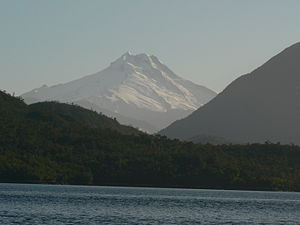
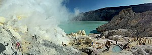
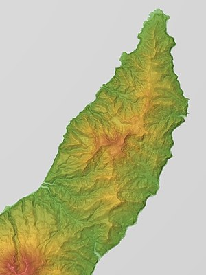
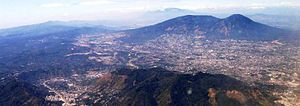

<!DOCTYPE html>
<head>    
    <meta http-equiv="content-type" content="text/html; charset=UTF-8" />
    
        <script>
            L_NO_TOUCH = false;
            L_DISABLE_3D = false;
        </script>
    
    <style>html, body {width: 100%;height: 100%;margin: 0;padding: 0;}</style>
    <style>#map {position:absolute;top:0;bottom:0;right:0;left:0;}</style>
    <script src="https://cdn.jsdelivr.net/npm/leaflet@1.6.0/dist/leaflet.js"></script>
    <script src="https://code.jquery.com/jquery-1.12.4.min.js"></script>
    <script src="https://maxcdn.bootstrapcdn.com/bootstrap/3.2.0/js/bootstrap.min.js"></script>
    <script src="https://cdnjs.cloudflare.com/ajax/libs/Leaflet.awesome-markers/2.0.2/leaflet.awesome-markers.js"></script>
    <link rel="stylesheet" href="https://cdn.jsdelivr.net/npm/leaflet@1.6.0/dist/leaflet.css"/>
    <link rel="stylesheet" href="https://maxcdn.bootstrapcdn.com/bootstrap/3.2.0/css/bootstrap.min.css"/>
    <link rel="stylesheet" href="https://maxcdn.bootstrapcdn.com/bootstrap/3.2.0/css/bootstrap-theme.min.css"/>
    <link rel="stylesheet" href="https://maxcdn.bootstrapcdn.com/font-awesome/4.6.3/css/font-awesome.min.css"/>
    <link rel="stylesheet" href="https://cdnjs.cloudflare.com/ajax/libs/Leaflet.awesome-markers/2.0.2/leaflet.awesome-markers.css"/>
    <link rel="stylesheet" href="https://cdn.jsdelivr.net/gh/python-visualization/folium/folium/templates/leaflet.awesome.rotate.min.css"/>
    
            <meta name="viewport" content="width=device-width,
                initial-scale=1.0, maximum-scale=1.0, user-scalable=no" />
            <style>
                #map_c6d7dd1cbd5b44e69614c1ae9378c238 {
                    position: relative;
                    width: 100.0%;
                    height: 100.0%;
                    left: 0.0%;
                    top: 0.0%;
                }
            </style>
        
</head>
<body>    
    
            <div class="folium-map" id="map_c6d7dd1cbd5b44e69614c1ae9378c238" ></div>
        
</body>
<script>    
    
            var map_c6d7dd1cbd5b44e69614c1ae9378c238 = L.map(
                "map_c6d7dd1cbd5b44e69614c1ae9378c238",
                {
                    center: [32.881302, 28.839115],
                    crs: L.CRS.EPSG3857,
                    zoom: 1,
                    zoomControl: true,
                    preferCanvas: false,
                }
            );

            

        
    
            var tile_layer_553bb715a99749779a48907817b44b6f = L.tileLayer(
                "https://{s}.tile.openstreetmap.org/{z}/{x}/{y}.png",
                {"attribution": "Data by \u0026copy; \u003ca href=\"http://openstreetmap.org\"\u003eOpenStreetMap\u003c/a\u003e, under \u003ca href=\"http://www.openstreetmap.org/copyright\"\u003eODbL\u003c/a\u003e.", "detectRetina": false, "maxNativeZoom": 18, "maxZoom": 18, "minZoom": 0, "noWrap": false, "opacity": 1, "subdomains": "abc", "tms": false}
            ).addTo(map_c6d7dd1cbd5b44e69614c1ae9378c238);
        
    
            var marker_225e87e21fbd4948993c34eb993f28d9 = L.marker(
                [-23.3, -67.6167],
                {}
            ).addTo(map_c6d7dd1cbd5b44e69614c1ae9378c238);
        
    
            var icon_1a196f09dade4ed3a526a7f25b5b1857 = L.AwesomeMarkers.icon(
                {"extraClasses": "fa-rotate-0", "icon": "map-marker", "iconColor": "blue", "markerColor": "blue", "prefix": "glyphicon"}
            );
            marker_225e87e21fbd4948993c34eb993f28d9.setIcon(icon_1a196f09dade4ed3a526a7f25b5b1857);
        
    
        var popup_333fc663d6044617a35e5a92caff61da = L.popup({"maxWidth": "100%"});

        
            var html_9e69869d6ffe4c96b0fa7ea9a83449e9 = $(`<div id="html_9e69869d6ffe4c96b0fa7ea9a83449e9" style="width: 100.0%; height: 100.0%;"><h1>Acamarachi</h1><body><p><font size=2 ></p></body></div>`)[0];
            popup_333fc663d6044617a35e5a92caff61da.setContent(html_9e69869d6ffe4c96b0fa7ea9a83449e9);
        

        marker_225e87e21fbd4948993c34eb993f28d9.bindPopup(popup_333fc663d6044617a35e5a92caff61da)
        ;

        
    
    
            var marker_b43c336b2b64484d89993c215c25b865 = L.marker(
                [14.5008, -90.8758],
                {}
            ).addTo(map_c6d7dd1cbd5b44e69614c1ae9378c238);
        
    
            var icon_56ff40e818124f20a4eaecaeb22e4e8d = L.AwesomeMarkers.icon(
                {"extraClasses": "fa-rotate-0", "icon": "map-marker", "iconColor": "blue", "markerColor": "blue", "prefix": "glyphicon"}
            );
            marker_b43c336b2b64484d89993c215c25b865.setIcon(icon_56ff40e818124f20a4eaecaeb22e4e8d);
        
    
        var popup_c8fb795b9eaf41efba712fdb2e7f68c7 = L.popup({"maxWidth": "100%"});

        
            var html_f1d9fd5d5c884e9397557a036e087c84 = $(`<div id="html_f1d9fd5d5c884e9397557a036e087c84" style="width: 100.0%; height: 100.0%;"><h1>Acatenango</h1><body><p><font size=2 ></p></body></div>`)[0];
            popup_c8fb795b9eaf41efba712fdb2e7f68c7.setContent(html_f1d9fd5d5c884e9397557a036e087c84);
        

        marker_b43c336b2b64484d89993c215c25b865.bindPopup(popup_c8fb795b9eaf41efba712fdb2e7f68c7)
        ;

        
    
    
            var marker_9e2f12ff81074ff2ab6c5ac344b7ba2c = L.marker(
                [-18.3822, -69.0478],
                {}
            ).addTo(map_c6d7dd1cbd5b44e69614c1ae9378c238);
        
    
            var icon_5e8c2eea9cdb480994628c640c414a7d = L.AwesomeMarkers.icon(
                {"extraClasses": "fa-rotate-0", "icon": "map-marker", "iconColor": "blue", "markerColor": "blue", "prefix": "glyphicon"}
            );
            marker_9e2f12ff81074ff2ab6c5ac344b7ba2c.setIcon(icon_5e8c2eea9cdb480994628c640c414a7d);
        
    
        var popup_ceed87ce844d4b41bf477d8cfc68d618 = L.popup({"maxWidth": "100%"});

        
            var html_b41208f8cba540238ec20737730caa1d = $(`<div id="html_b41208f8cba540238ec20737730caa1d" style="width: 100.0%; height: 100.0%;"><h1>Acotango</h1><body><p><font size=2 ></p></body></div>`)[0];
            popup_ceed87ce844d4b41bf477d8cfc68d618.setContent(html_b41208f8cba540238ec20737730caa1d);
        

        marker_9e2f12ff81074ff2ab6c5ac344b7ba2c.bindPopup(popup_ceed87ce844d4b41bf477d8cfc68d618)
        ;

        
    
    
            var marker_cc723e5af73b4f5ead735b75c858e69a = L.marker(
                [-50.3333, -73.75],
                {}
            ).addTo(map_c6d7dd1cbd5b44e69614c1ae9378c238);
        
    
            var icon_62bd4b5eaed143f8a82c39d1d0c9bdf0 = L.AwesomeMarkers.icon(
                {"extraClasses": "fa-rotate-0", "icon": "map-marker", "iconColor": "blue", "markerColor": "blue", "prefix": "glyphicon"}
            );
            marker_cc723e5af73b4f5ead735b75c858e69a.setIcon(icon_62bd4b5eaed143f8a82c39d1d0c9bdf0);
        
    
        var popup_a7994b8882424ff5bd866d8a2eb48fcd = L.popup({"maxWidth": "100%"});

        
            var html_b055d6eb1051409eaa4761524fe6ee2b = $(`<div id="html_b055d6eb1051409eaa4761524fe6ee2b" style="width: 100.0%; height: 100.0%;"><h1>Aguilera</h1><body><p><font size=2 ></p></body></div>`)[0];
            popup_a7994b8882424ff5bd866d8a2eb48fcd.setContent(html_b055d6eb1051409eaa4761524fe6ee2b);
        

        marker_cc723e5af73b4f5ead735b75c858e69a.bindPopup(popup_a7994b8882424ff5bd866d8a2eb48fcd)
        ;

        
    
    
            var marker_386fc508a8004a34918eaa3e68e49eec = L.marker(
                [53.9833, 159.45],
                {}
            ).addTo(map_c6d7dd1cbd5b44e69614c1ae9378c238);
        
    
            var icon_5bd71f7071764c8881402a515456d702 = L.AwesomeMarkers.icon(
                {"extraClasses": "fa-rotate-0", "icon": "map-marker", "iconColor": "blue", "markerColor": "blue", "prefix": "glyphicon"}
            );
            marker_386fc508a8004a34918eaa3e68e49eec.setIcon(icon_5bd71f7071764c8881402a515456d702);
        
    
        var popup_267092fb100a451084d2bf9b70bf01aa = L.popup({"maxWidth": "100%"});

        
            var html_426bb769d72c44a79217143ebee75238 = $(`<div id="html_426bb769d72c44a79217143ebee75238" style="width: 100.0%; height: 100.0%;"><h1>Akademia Nauk</h1><body><p><font size=2 ></p></body></div>`)[0];
            popup_267092fb100a451084d2bf9b70bf01aa.setContent(html_426bb769d72c44a79217143ebee75238);
        

        marker_386fc508a8004a34918eaa3e68e49eec.bindPopup(popup_267092fb100a451084d2bf9b70bf01aa)
        ;

        
    
    
            var marker_32b1e77d3fd1401988aa61a85aca8cf4 = L.marker(
                [14.875, 39.9167],
                {}
            ).addTo(map_c6d7dd1cbd5b44e69614c1ae9378c238);
        
    
            var icon_57e604fcaa1a4fa8b8b77baeb2292cba = L.AwesomeMarkers.icon(
                {"extraClasses": "fa-rotate-0", "icon": "map-marker", "iconColor": "blue", "markerColor": "blue", "prefix": "glyphicon"}
            );
            marker_32b1e77d3fd1401988aa61a85aca8cf4.setIcon(icon_57e604fcaa1a4fa8b8b77baeb2292cba);
        
    
        var popup_64bea0eba2b2457eb7a3c74876a54f03 = L.popup({"maxWidth": "100%"});

        
            var html_7fafee6d9f13436984cf896db9384cf3 = $(`<div id="html_7fafee6d9f13436984cf896db9384cf3" style="width: 100.0%; height: 100.0%;"><h1>Alid</h1><body><p><font size=2 ></p></body></div>`)[0];
            popup_64bea0eba2b2457eb7a3c74876a54f03.setContent(html_7fafee6d9f13436984cf896db9384cf3);
        

        marker_32b1e77d3fd1401988aa61a85aca8cf4.bindPopup(popup_64bea0eba2b2457eb7a3c74876a54f03)
        ;

        
    
    
            var marker_3b70965260384942b0236a969a458623 = L.marker(
                [14.8, -91.52],
                {}
            ).addTo(map_c6d7dd1cbd5b44e69614c1ae9378c238);
        
    
            var icon_890c7b7b60d24b988b0e2bf554a9ff5e = L.AwesomeMarkers.icon(
                {"extraClasses": "fa-rotate-0", "icon": "map-marker", "iconColor": "blue", "markerColor": "blue", "prefix": "glyphicon"}
            );
            marker_3b70965260384942b0236a969a458623.setIcon(icon_890c7b7b60d24b988b0e2bf554a9ff5e);
        
    
        var popup_9d26d727123d4e2f86c53aa5f7877149 = L.popup({"maxWidth": "100%"});

        
            var html_4bdfe56530f44fd58f03fb5b01213db7 = $(`<div id="html_4bdfe56530f44fd58f03fb5b01213db7" style="width: 100.0%; height: 100.0%;"><h1>Almolonga volcano</h1><body><p><font size=2 ></p></body></div>`)[0];
            popup_9d26d727123d4e2f86c53aa5f7877149.setContent(html_4bdfe56530f44fd58f03fb5b01213db7);
        

        marker_3b70965260384942b0236a969a458623.bindPopup(popup_9d26d727123d4e2f86c53aa5f7877149)
        ;

        
    
    
            var marker_f9a49c04607d4e919e92685ecc5ac678 = L.marker(
                [-4.08333, 153.65],
                {}
            ).addTo(map_c6d7dd1cbd5b44e69614c1ae9378c238);
        
    
            var icon_6be833b9b3b844768084ca4ca958124a = L.AwesomeMarkers.icon(
                {"extraClasses": "fa-rotate-0", "icon": "map-marker", "iconColor": "blue", "markerColor": "blue", "prefix": "glyphicon"}
            );
            marker_f9a49c04607d4e919e92685ecc5ac678.setIcon(icon_6be833b9b3b844768084ca4ca958124a);
        
    
        var popup_aad3d753e8df495cb984c54a57f8b1c1 = L.popup({"maxWidth": "100%"});

        
            var html_8c39a41a24124ae6a5964c359e13a91d = $(`<div id="html_8c39a41a24124ae6a5964c359e13a91d" style="width: 100.0%; height: 100.0%;"><h1>Ambitle</h1><body><p><font size=2 ></p></body></div>`)[0];
            popup_aad3d753e8df495cb984c54a57f8b1c1.setContent(html_8c39a41a24124ae6a5964c359e13a91d);
        

        marker_f9a49c04607d4e919e92685ecc5ac678.bindPopup(popup_aad3d753e8df495cb984c54a57f8b1c1)
        ;

        
    
    
            var marker_1474a33be2a94d359b3e17325c594726 = L.marker(
                [-15.8167, -71.8833],
                {}
            ).addTo(map_c6d7dd1cbd5b44e69614c1ae9378c238);
        
    
            var icon_db8dd221b8314b6f82a7818c516dde9c = L.AwesomeMarkers.icon(
                {"extraClasses": "fa-rotate-0", "icon": "map-marker", "iconColor": "blue", "markerColor": "blue", "prefix": "glyphicon"}
            );
            marker_1474a33be2a94d359b3e17325c594726.setIcon(icon_db8dd221b8314b6f82a7818c516dde9c);
        
    
        var popup_1f82ceab92224db3923ee257db2ce16d = L.popup({"maxWidth": "100%"});

        
            var html_bc35f39405b3495b885cc40922045aae = $(`<div id="html_bc35f39405b3495b885cc40922045aae" style="width: 100.0%; height: 100.0%;"><h1>Ampato</h1><body><p><font size=2 ></p></body></div>`)[0];
            popup_1f82ceab92224db3923ee257db2ce16d.setContent(html_bc35f39405b3495b885cc40922045aae);
        

        marker_1474a33be2a94d359b3e17325c594726.bindPopup(popup_1f82ceab92224db3923ee257db2ce16d)
        ;

        
    
    
            var marker_74e59e5a7c6d444f804c6749eae37a9f = L.marker(
                [-40.7708, -72.1533],
                {}
            ).addTo(map_c6d7dd1cbd5b44e69614c1ae9378c238);
        
    
            var icon_f49dc68742714e00a6a8142ddb73757e = L.AwesomeMarkers.icon(
                {"extraClasses": "fa-rotate-0", "icon": "map-marker", "iconColor": "blue", "markerColor": "blue", "prefix": "glyphicon"}
            );
            marker_74e59e5a7c6d444f804c6749eae37a9f.setIcon(icon_f49dc68742714e00a6a8142ddb73757e);
        
    
        var popup_f8c10e24b18740f786ab1170dac7b38e = L.popup({"maxWidth": "100%"});

        
            var html_ec1909b33b274cec941a19b2b2e30090 = $(`<div id="html_ec1909b33b274cec941a19b2b2e30090" style="width: 100.0%; height: 100.0%;"><h1>Antillanca Group</h1><body><p><font size=2 ></p></body></div>`)[0];
            popup_f8c10e24b18740f786ab1170dac7b38e.setContent(html_ec1909b33b274cec941a19b2b2e30090);
        

        marker_74e59e5a7c6d444f804c6749eae37a9f.bindPopup(popup_f8c10e24b18740f786ab1170dac7b38e)
        ;

        
    
    
            var marker_5bfb638d27da48b08c3a4d9b682f7448 = L.marker(
                [-0.481389, -78.1408],
                {}
            ).addTo(map_c6d7dd1cbd5b44e69614c1ae9378c238);
        
    
            var icon_156fc7f8d6b44fb1924bf544d404c6f3 = L.AwesomeMarkers.icon(
                {"extraClasses": "fa-rotate-0", "icon": "map-marker", "iconColor": "blue", "markerColor": "blue", "prefix": "glyphicon"}
            );
            marker_5bfb638d27da48b08c3a4d9b682f7448.setIcon(icon_156fc7f8d6b44fb1924bf544d404c6f3);
        
    
        var popup_fab4201b9a344dee87edb3015e71280e = L.popup({"maxWidth": "100%"});

        
            var html_a612b3634df54e6689e736c150a4dd1a = $(`<div id="html_a612b3634df54e6689e736c150a4dd1a" style="width: 100.0%; height: 100.0%;"><h1>Antisana</h1><body><p><font size=2 ></p></body></div>`)[0];
            popup_fab4201b9a344dee87edb3015e71280e.setContent(html_a612b3634df54e6689e736c150a4dd1a);
        

        marker_5bfb638d27da48b08c3a4d9b682f7448.bindPopup(popup_fab4201b9a344dee87edb3015e71280e)
        ;

        
    
    
            var marker_48811bd3ee304c87a458efcb5ced7cd5 = L.marker(
                [-25.55, -67.8833],
                {}
            ).addTo(map_c6d7dd1cbd5b44e69614c1ae9378c238);
        
    
            var icon_81703745c1c640caa756c8b242eb0634 = L.AwesomeMarkers.icon(
                {"extraClasses": "fa-rotate-0", "icon": "map-marker", "iconColor": "blue", "markerColor": "blue", "prefix": "glyphicon"}
            );
            marker_48811bd3ee304c87a458efcb5ced7cd5.setIcon(icon_81703745c1c640caa756c8b242eb0634);
        
    
        var popup_5227aeb43b2e4aa0954d9d7014ed42e4 = L.popup({"maxWidth": "100%"});

        
            var html_833fcc2dd5c8409c886d54217f534809 = $(`<div id="html_833fcc2dd5c8409c886d54217f534809" style="width: 100.0%; height: 100.0%;"><h1>Antofalla</h1><body><p><font size=2 ></p></body></div>`)[0];
            popup_5227aeb43b2e4aa0954d9d7014ed42e4.setContent(html_833fcc2dd5c8409c886d54217f534809);
        

        marker_48811bd3ee304c87a458efcb5ced7cd5.bindPopup(popup_5227aeb43b2e4aa0954d9d7014ed42e4)
        ;

        
    
    
            var marker_0e702c4271f5416ca5d1f217c69ce2ca = L.marker(
                [-37.4058, -71.3492],
                {}
            ).addTo(map_c6d7dd1cbd5b44e69614c1ae9378c238);
        
    
            var icon_756201ce308c45baa32fb89f5d328fdb = L.AwesomeMarkers.icon(
                {"extraClasses": "fa-rotate-0", "icon": "map-marker", "iconColor": "blue", "markerColor": "blue", "prefix": "glyphicon"}
            );
            marker_0e702c4271f5416ca5d1f217c69ce2ca.setIcon(icon_756201ce308c45baa32fb89f5d328fdb);
        
    
        var popup_5c61d623a9f543ba8e5de48d9eaeb0ec = L.popup({"maxWidth": "100%"});

        
            var html_99b5a71467e848c4a3481751f2a605d4 = $(`<div id="html_99b5a71467e848c4a3481751f2a605d4" style="width: 100.0%; height: 100.0%;"><h1>Antuco</h1><body><p><font size=2 ></p></body></div>`)[0];
            popup_5c61d623a9f543ba8e5de48d9eaeb0ec.setContent(html_99b5a71467e848c4a3481751f2a605d4);
        

        marker_0e702c4271f5416ca5d1f217c69ce2ca.bindPopup(popup_5c61d623a9f543ba8e5de48d9eaeb0ec)
        ;

        
    
    
            var marker_d5aa765e66e64550bd89a91252661be5 = L.marker(
                [-24.29, -67.7833],
                {}
            ).addTo(map_c6d7dd1cbd5b44e69614c1ae9378c238);
        
    
            var icon_3f095ee75d774fa08c987e1b7bfb21de = L.AwesomeMarkers.icon(
                {"extraClasses": "fa-rotate-0", "icon": "map-marker", "iconColor": "blue", "markerColor": "blue", "prefix": "glyphicon"}
            );
            marker_d5aa765e66e64550bd89a91252661be5.setIcon(icon_3f095ee75d774fa08c987e1b7bfb21de);
        
    
        var popup_8fe38eae41c940bcb7bb8e3064a26627 = L.popup({"maxWidth": "100%"});

        
            var html_34a95766912b4b0ca25472b2956e5c3b = $(`<div id="html_34a95766912b4b0ca25472b2956e5c3b" style="width: 100.0%; height: 100.0%;"><h1>Aracar</h1><body><p><font size=2 ></p></body></div>`)[0];
            popup_8fe38eae41c940bcb7bb8e3064a26627.setContent(html_34a95766912b4b0ca25472b2956e5c3b);
        

        marker_d5aa765e66e64550bd89a91252661be5.bindPopup(popup_8fe38eae41c940bcb7bb8e3064a26627)
        ;

        
    
    
            var marker_defd8ac18f7d497281ecd5ac0e97d863 = L.marker(
                [10.4633, -84.7033],
                {}
            ).addTo(map_c6d7dd1cbd5b44e69614c1ae9378c238);
        
    
            var icon_f2061160c0094867aa8e0b4596c9bbdf = L.AwesomeMarkers.icon(
                {"extraClasses": "fa-rotate-0", "icon": "map-marker", "iconColor": "blue", "markerColor": "blue", "prefix": "glyphicon"}
            );
            marker_defd8ac18f7d497281ecd5ac0e97d863.setIcon(icon_f2061160c0094867aa8e0b4596c9bbdf);
        
    
        var popup_6c991d4c55814a909e55dd89620c6504 = L.popup({"maxWidth": "100%"});

        
            var html_c6ede0a70bce4629900329ad26c4abfc = $(`<div id="html_c6ede0a70bce4629900329ad26c4abfc" style="width: 100.0%; height: 100.0%;"><h1>Arenal Volcano</h1><body><p><font size=2 ></p></body></div>`)[0];
            popup_6c991d4c55814a909e55dd89620c6504.setContent(html_c6ede0a70bce4629900329ad26c4abfc);
        

        marker_defd8ac18f7d497281ecd5ac0e97d863.bindPopup(popup_6c991d4c55814a909e55dd89620c6504)
        ;

        
    
    
            var marker_48b2cd3c4c3d4a40848d1e6a7f72dc79 = L.marker(
                [-18.7472, -69.0667],
                {}
            ).addTo(map_c6d7dd1cbd5b44e69614c1ae9378c238);
        
    
            var icon_9a59a3a9733740aa892bc50a32ab4dc0 = L.AwesomeMarkers.icon(
                {"extraClasses": "fa-rotate-0", "icon": "map-marker", "iconColor": "blue", "markerColor": "blue", "prefix": "glyphicon"}
            );
            marker_48b2cd3c4c3d4a40848d1e6a7f72dc79.setIcon(icon_9a59a3a9733740aa892bc50a32ab4dc0);
        
    
        var popup_ca5bf9b5459b4c43809a3dc7801e7d26 = L.popup({"maxWidth": "100%"});

        
            var html_afeb607980b941168df612903ecdd6cd = $(`<div id="html_afeb607980b941168df612903ecdd6cd" style="width: 100.0%; height: 100.0%;"><h1>Arintica</h1><body><p><font size=2 ></p></body></div>`)[0];
            popup_ca5bf9b5459b4c43809a3dc7801e7d26.setContent(html_afeb607980b941168df612903ecdd6cd);
        

        marker_48b2cd3c4c3d4a40848d1e6a7f72dc79.bindPopup(popup_ca5bf9b5459b4c43809a3dc7801e7d26)
        ;

        
    
    
            var marker_580e91fcf811498185d31735eec28fb9 = L.marker(
                [-7.76444, 112.589],
                {}
            ).addTo(map_c6d7dd1cbd5b44e69614c1ae9378c238);
        
    
            var icon_6b806a64cd2443d0baffd304cce5daed = L.AwesomeMarkers.icon(
                {"extraClasses": "fa-rotate-0", "icon": "map-marker", "iconColor": "blue", "markerColor": "blue", "prefix": "glyphicon"}
            );
            marker_580e91fcf811498185d31735eec28fb9.setIcon(icon_6b806a64cd2443d0baffd304cce5daed);
        
    
        var popup_564efa94bdc2412a952d06c8bba87981 = L.popup({"maxWidth": "100%"});

        
            var html_d7d686883e454572b2c1fc6577791e37 = $(`<div id="html_d7d686883e454572b2c1fc6577791e37" style="width: 100.0%; height: 100.0%;"><h1>Arjuno‑Welirang</h1><body><p><font size=2 ></p></body></div>`)[0];
            popup_564efa94bdc2412a952d06c8bba87981.setContent(html_d7d686883e454572b2c1fc6577791e37);
        

        marker_580e91fcf811498185d31735eec28fb9.bindPopup(popup_564efa94bdc2412a952d06c8bba87981)
        ;

        
    
    
            var marker_656bebd184454996842ef9bf988cfa41 = L.marker(
                [-0.352778, -78.6169],
                {}
            ).addTo(map_c6d7dd1cbd5b44e69614c1ae9378c238);
        
    
            var icon_c9da7d8c1b3744a794b56dbe56762c8f = L.AwesomeMarkers.icon(
                {"extraClasses": "fa-rotate-0", "icon": "map-marker", "iconColor": "blue", "markerColor": "blue", "prefix": "glyphicon"}
            );
            marker_656bebd184454996842ef9bf988cfa41.setIcon(icon_c9da7d8c1b3744a794b56dbe56762c8f);
        
    
        var popup_aa82a360a7a94847ab60965008a4a100 = L.popup({"maxWidth": "100%"});

        
            var html_7620dceeb7104f42b798de76dcc5ed38 = $(`<div id="html_7620dceeb7104f42b798de76dcc5ed38" style="width: 100.0%; height: 100.0%;"><h1>Atacazo</h1><body><p><font size=2 ></p></body></div>`)[0];
            popup_aa82a360a7a94847ab60965008a4a100.setContent(html_7620dceeb7104f42b798de76dcc5ed38);
        

        marker_656bebd184454996842ef9bf988cfa41.bindPopup(popup_aa82a360a7a94847ab60965008a4a100)
        ;

        
    
    
            var marker_16c9fa8a71c745819ad36c57527a471c = L.marker(
                [50.8608, 155.564],
                {}
            ).addTo(map_c6d7dd1cbd5b44e69614c1ae9378c238);
        
    
            var icon_d71d4c48b77140e497a1a5ac590d2a30 = L.AwesomeMarkers.icon(
                {"extraClasses": "fa-rotate-0", "icon": "map-marker", "iconColor": "blue", "markerColor": "blue", "prefix": "glyphicon"}
            );
            marker_16c9fa8a71c745819ad36c57527a471c.setIcon(icon_d71d4c48b77140e497a1a5ac590d2a30);
        
    
        var popup_2ef8b471f7fb49319c6f0700716f320b = L.popup({"maxWidth": "100%"});

        
            var html_0878d95610b54a17a647fdcf1e1c8e1c = $(`<div id="html_0878d95610b54a17a647fdcf1e1c8e1c" style="width: 100.0%; height: 100.0%;"><h1>Atlasov</h1><body><p><font size=2 ></p></body></div>`)[0];
            popup_2ef8b471f7fb49319c6f0700716f320b.setContent(html_0878d95610b54a17a647fdcf1e1c8e1c);
        

        marker_16c9fa8a71c745819ad36c57527a471c.bindPopup(popup_2ef8b471f7fb49319c6f0700716f320b)
        ;

        
    
    
            var marker_c38cbfad42da41aba688a62afc2f8078 = L.marker(
                [-21.1833, -68.5833],
                {}
            ).addTo(map_c6d7dd1cbd5b44e69614c1ae9378c238);
        
    
            var icon_41c2c0695703447eb259945b107043b0 = L.AwesomeMarkers.icon(
                {"extraClasses": "fa-rotate-0", "icon": "map-marker", "iconColor": "blue", "markerColor": "blue", "prefix": "glyphicon"}
            );
            marker_c38cbfad42da41aba688a62afc2f8078.setIcon(icon_41c2c0695703447eb259945b107043b0);
        
    
        var popup_4d10049c66dd4aafad9a0f29a86d3b45 = L.popup({"maxWidth": "100%"});

        
            var html_1e84e5162f5347b0aa1f39096af10be0 = $(`<div id="html_1e84e5162f5347b0aa1f39096af10be0" style="width: 100.0%; height: 100.0%;"><h1>Aucanquilcha</h1><body><p><font size=2 ></p></body></div>`)[0];
            popup_4d10049c66dd4aafad9a0f29a86d3b45.setContent(html_1e84e5162f5347b0aa1f39096af10be0);
        

        marker_c38cbfad42da41aba688a62afc2f8078.bindPopup(popup_4d10049c66dd4aafad9a0f29a86d3b45)
        ;

        
    
    
            var marker_ac170b5a11584453803fc1474221ffcc = L.marker(
                [53.255, 158.83],
                {}
            ).addTo(map_c6d7dd1cbd5b44e69614c1ae9378c238);
        
    
            var icon_9000ae91a02e430b97b17aa6d0ea17df = L.AwesomeMarkers.icon(
                {"extraClasses": "fa-rotate-0", "icon": "map-marker", "iconColor": "blue", "markerColor": "blue", "prefix": "glyphicon"}
            );
            marker_ac170b5a11584453803fc1474221ffcc.setIcon(icon_9000ae91a02e430b97b17aa6d0ea17df);
        
    
        var popup_b77845c7496e4b419bbd857c94cd0de8 = L.popup({"maxWidth": "100%"});

        
            var html_f52cdf8ed1e8467bbb89906ddb73b53c = $(`<div id="html_f52cdf8ed1e8467bbb89906ddb73b53c" style="width: 100.0%; height: 100.0%;"><h1>Avachinsky</h1><body><p><font size=2 ></p></body></div>`)[0];
            popup_b77845c7496e4b419bbd857c94cd0de8.setContent(html_f52cdf8ed1e8467bbb89906ddb73b53c);
        

        marker_ac170b5a11584453803fc1474221ffcc.bindPopup(popup_b77845c7496e4b419bbd857c94cd0de8)
        ;

        
    
    
            var marker_a68c96ea6cd44780a156d0178a8a3005 = L.marker(
                [1.08333, -77.6833],
                {}
            ).addTo(map_c6d7dd1cbd5b44e69614c1ae9378c238);
        
    
            var icon_8aa73c9ae43b472d8b39914d9597ffcb = L.AwesomeMarkers.icon(
                {"extraClasses": "fa-rotate-0", "icon": "map-marker", "iconColor": "blue", "markerColor": "blue", "prefix": "glyphicon"}
            );
            marker_a68c96ea6cd44780a156d0178a8a3005.setIcon(icon_8aa73c9ae43b472d8b39914d9597ffcb);
        
    
        var popup_c9b45925e2604197877ab2af23ee81bf = L.popup({"maxWidth": "100%"});

        
            var html_27d6e25c5ec247e8a1db89b8e5aff966 = $(`<div id="html_27d6e25c5ec247e8a1db89b8e5aff966" style="width: 100.0%; height: 100.0%;"><h1>Azufral</h1><body><p><font size=2 ></p></body></div>`)[0];
            popup_c9b45925e2604197877ab2af23ee81bf.setContent(html_27d6e25c5ec247e8a1db89b8e5aff966);
        

        marker_a68c96ea6cd44780a156d0178a8a3005.bindPopup(popup_c9b45925e2604197877ab2af23ee81bf)
        ;

        
    
    
            var marker_bbd1b314eaa2443c85ed8ae80e2e611d = L.marker(
                [-4.03333, 153.717],
                {}
            ).addTo(map_c6d7dd1cbd5b44e69614c1ae9378c238);
        
    
            var icon_e1d3e8a54f1c4d8087354f759dc22ec6 = L.AwesomeMarkers.icon(
                {"extraClasses": "fa-rotate-0", "icon": "map-marker", "iconColor": "blue", "markerColor": "blue", "prefix": "glyphicon"}
            );
            marker_bbd1b314eaa2443c85ed8ae80e2e611d.setIcon(icon_e1d3e8a54f1c4d8087354f759dc22ec6);
        
    
        var popup_bff50a5ee373469cb565552800f4942c = L.popup({"maxWidth": "100%"});

        
            var html_3b2658b8fbd34911a8e66517db2235c9 = $(`<div id="html_3b2658b8fbd34911a8e66517db2235c9" style="width: 100.0%; height: 100.0%;"><h1>Babase</h1><body><p><font size=2 ></p></body></div>`)[0];
            popup_bff50a5ee373469cb565552800f4942c.setContent(html_3b2658b8fbd34911a8e66517db2235c9);
        

        marker_bbd1b314eaa2443c85ed8ae80e2e611d.bindPopup(popup_bff50a5ee373469cb565552800f4942c)
        ;

        
    
    
            var marker_312a199f0d4246b79b34861953b78f59 = L.marker(
                [8.80881, -82.5423],
                {}
            ).addTo(map_c6d7dd1cbd5b44e69614c1ae9378c238);
        
    
            var icon_d077c0cadc2e48a2b8f4c29513ef661a = L.AwesomeMarkers.icon(
                {"extraClasses": "fa-rotate-0", "icon": "map-marker", "iconColor": "blue", "markerColor": "blue", "prefix": "glyphicon"}
            );
            marker_312a199f0d4246b79b34861953b78f59.setIcon(icon_d077c0cadc2e48a2b8f4c29513ef661a);
        
    
        var popup_a59485d0c23945349c09db96857d2138 = L.popup({"maxWidth": "100%"});

        
            var html_fd860a29ce2e4774a5911d2b3c4ea84f = $(`<div id="html_fd860a29ce2e4774a5911d2b3c4ea84f" style="width: 100.0%; height: 100.0%;"><h1>Barú</h1><body><p><font size=2 ></p></body></div>`)[0];
            popup_a59485d0c23945349c09db96857d2138.setContent(html_fd860a29ce2e4774a5911d2b3c4ea84f);
        

        marker_312a199f0d4246b79b34861953b78f59.bindPopup(popup_a59485d0c23945349c09db96857d2138)
        ;

        
    
    
            var marker_cf11da64c2f34287b616d93be0ab8034 = L.marker(
                [71.0767, -8.16444],
                {}
            ).addTo(map_c6d7dd1cbd5b44e69614c1ae9378c238);
        
    
            var icon_bb9c6d0930e34cc1a34f7f1a089dcfe5 = L.AwesomeMarkers.icon(
                {"extraClasses": "fa-rotate-0", "icon": "map-marker", "iconColor": "blue", "markerColor": "blue", "prefix": "glyphicon"}
            );
            marker_cf11da64c2f34287b616d93be0ab8034.setIcon(icon_bb9c6d0930e34cc1a34f7f1a089dcfe5);
        
    
        var popup_ad723955cc094203857a90bb914015c9 = L.popup({"maxWidth": "100%"});

        
            var html_d2e8534695bc4835bc94c20e782af0b7 = $(`<div id="html_d2e8534695bc4835bc94c20e782af0b7" style="width: 100.0%; height: 100.0%;"><h1>Beerenberg</h1><body><p><font size=2 ></p></body></div>`)[0];
            popup_ad723955cc094203857a90bb914015c9.setContent(html_d2e8534695bc4835bc94c20e782af0b7);
        

        marker_cf11da64c2f34287b616d93be0ab8034.bindPopup(popup_ad723955cc094203857a90bb914015c9)
        ;

        
    
    
            var marker_c44d2b89ba554b9f982710274ab233f7 = L.marker(
                [55.9783, 160.587],
                {}
            ).addTo(map_c6d7dd1cbd5b44e69614c1ae9378c238);
        
    
            var icon_c32d27673c654d349382a292ac96f2b7 = L.AwesomeMarkers.icon(
                {"extraClasses": "fa-rotate-0", "icon": "map-marker", "iconColor": "blue", "markerColor": "blue", "prefix": "glyphicon"}
            );
            marker_c44d2b89ba554b9f982710274ab233f7.setIcon(icon_c32d27673c654d349382a292ac96f2b7);
        
    
        var popup_6abedb58f50a496eb472812b98368f99 = L.popup({"maxWidth": "100%"});

        
            var html_ed1e4473455d494f9b8d6854b11fe5f7 = $(`<div id="html_ed1e4473455d494f9b8d6854b11fe5f7" style="width: 100.0%; height: 100.0%;"><h1>Bezymianny</h1><body><p><font size=2 ></p></body></div>`)[0];
            popup_6abedb58f50a496eb472812b98368f99.setContent(html_ed1e4473455d494f9b8d6854b11fe5f7);
        

        marker_c44d2b89ba554b9f982710274ab233f7.bindPopup(popup_6abedb58f50a496eb472812b98368f99)
        ;

        
    
    
            var marker_8746e76c28924ba1be5c2321c8c85c12 = L.marker(
                [63.9808, -19.1458],
                {}
            ).addTo(map_c6d7dd1cbd5b44e69614c1ae9378c238);
        
    
            var icon_4a80d651e9be47ff9dd39d99ef04ddbe = L.AwesomeMarkers.icon(
                {"extraClasses": "fa-rotate-0", "icon": "map-marker", "iconColor": "blue", "markerColor": "blue", "prefix": "glyphicon"}
            );
            marker_8746e76c28924ba1be5c2321c8c85c12.setIcon(icon_4a80d651e9be47ff9dd39d99ef04ddbe);
        
    
        var popup_4ad47ee8e08940e09aacbb7e541bb76c = L.popup({"maxWidth": "100%"});

        
            var html_613ff019dad643459072606fe12a93d8 = $(`<div id="html_613ff019dad643459072606fe12a93d8" style="width: 100.0%; height: 100.0%;"><h1>Brennisteinsalda</h1><body><p><font size=2 ></p></body></div>`)[0];
            popup_4ad47ee8e08940e09aacbb7e541bb76c.setContent(html_613ff019dad643459072606fe12a93d8);
        

        marker_8746e76c28924ba1be5c2321c8c85c12.bindPopup(popup_4ad47ee8e08940e09aacbb7e541bb76c)
        ;

        
    
    
            var marker_d45727370a8a4edaa5ce5a3db0eb3688 = L.marker(
                [-67.6833, 164.967],
                {}
            ).addTo(map_c6d7dd1cbd5b44e69614c1ae9378c238);
        
    
            var icon_e6929c4a13314b5d88461c38ed5d6ffc = L.AwesomeMarkers.icon(
                {"extraClasses": "fa-rotate-0", "icon": "map-marker", "iconColor": "blue", "markerColor": "blue", "prefix": "glyphicon"}
            );
            marker_d45727370a8a4edaa5ce5a3db0eb3688.setIcon(icon_e6929c4a13314b5d88461c38ed5d6ffc);
        
    
        var popup_1837c09d73134cb396169c09861290df = L.popup({"maxWidth": "100%"});

        
            var html_004ac1f27245446a82a1ad9c3203b4ea = $(`<div id="html_004ac1f27245446a82a1ad9c3203b4ea" style="width: 100.0%; height: 100.0%;"><h1>Brown Peak</h1><body><p><font size=2 ></p></body></div>`)[0];
            popup_1837c09d73134cb396169c09861290df.setContent(html_004ac1f27245446a82a1ad9c3203b4ea);
        

        marker_d45727370a8a4edaa5ce5a3db0eb3688.bindPopup(popup_1837c09d73134cb396169c09861290df)
        ;

        
    
    
            var marker_590e39d5b9d045d19c122a0c0bc8cb40 = L.marker(
                [12.77, 124.05],
                {}
            ).addTo(map_c6d7dd1cbd5b44e69614c1ae9378c238);
        
    
            var icon_1b1b216e02fa474fad9c1ab0d21706d8 = L.AwesomeMarkers.icon(
                {"extraClasses": "fa-rotate-0", "icon": "map-marker", "iconColor": "blue", "markerColor": "blue", "prefix": "glyphicon"}
            );
            marker_590e39d5b9d045d19c122a0c0bc8cb40.setIcon(icon_1b1b216e02fa474fad9c1ab0d21706d8);
        
    
        var popup_3d7bdc75c096471db715e77553630a52 = L.popup({"maxWidth": "100%"});

        
            var html_35255ee26e61495896712836b37c0471 = $(`<div id="html_35255ee26e61495896712836b37c0471" style="width: 100.0%; height: 100.0%;"><h1>Bulusan Volcano</h1><body><p><font size=2 ></p></body></div>`)[0];
            popup_3d7bdc75c096471db715e77553630a52.setContent(html_35255ee26e61495896712836b37c0471);
        

        marker_590e39d5b9d045d19c122a0c0bc8cb40.bindPopup(popup_3d7bdc75c096471db715e77553630a52)
        ;

        
    
    
            var marker_350d5f081703479a9649234f9a114ba2 = L.marker(
                [64.6411, -17.5281],
                {}
            ).addTo(map_c6d7dd1cbd5b44e69614c1ae9378c238);
        
    
            var icon_4d0b068e536640aeb2db22b2621b8cdd = L.AwesomeMarkers.icon(
                {"extraClasses": "fa-rotate-0", "icon": "map-marker", "iconColor": "blue", "markerColor": "blue", "prefix": "glyphicon"}
            );
            marker_350d5f081703479a9649234f9a114ba2.setIcon(icon_4d0b068e536640aeb2db22b2621b8cdd);
        
    
        var popup_1cb75d8969f94bf9b79227cf2804d5e2 = L.popup({"maxWidth": "100%"});

        
            var html_1fcd53991c134b3180de1953dbdaad8b = $(`<div id="html_1fcd53991c134b3180de1953dbdaad8b" style="width: 100.0%; height: 100.0%;"><h1>Bárðarbunga</h1><body><p><font size=2 ></p></body></div>`)[0];
            popup_1cb75d8969f94bf9b79227cf2804d5e2.setContent(html_1fcd53991c134b3180de1953dbdaad8b);
        

        marker_350d5f081703479a9649234f9a114ba2.bindPopup(popup_1cb75d8969f94bf9b79227cf2804d5e2)
        ;

        
    
    
            var marker_691ef40a001f4532b95b6c765a9c00c0 = L.marker(
                [-19.1458, -68.6983],
                {}
            ).addTo(map_c6d7dd1cbd5b44e69614c1ae9378c238);
        
    
            var icon_389063c8c6044d9e8109de0a919a9d4d = L.AwesomeMarkers.icon(
                {"extraClasses": "fa-rotate-0", "icon": "map-marker", "iconColor": "blue", "markerColor": "blue", "prefix": "glyphicon"}
            );
            marker_691ef40a001f4532b95b6c765a9c00c0.setIcon(icon_389063c8c6044d9e8109de0a919a9d4d);
        
    
        var popup_cd8f7f69f75b40c4ac1cb1b5f847242a = L.popup({"maxWidth": "100%"});

        
            var html_502d580ed152489cb9f8ea0c239340c0 = $(`<div id="html_502d580ed152489cb9f8ea0c239340c0" style="width: 100.0%; height: 100.0%;"><h1>Cabaraya</h1><body><p><font size=2 ></p></body></div>`)[0];
            popup_cd8f7f69f75b40c4ac1cb1b5f847242a.setContent(html_502d580ed152489cb9f8ea0c239340c0);
        

        marker_691ef40a001f4532b95b6c765a9c00c0.bindPopup(popup_cd8f7f69f75b40c4ac1cb1b5f847242a)
        ;

        
    
    
            var marker_b2d9297ad4a74f3f9968e4ef4d907fa1 = L.marker(
                [-41.33, -72.6183],
                {}
            ).addTo(map_c6d7dd1cbd5b44e69614c1ae9378c238);
        
    
            var icon_572b50ef291d475ebf252d1157699610 = L.AwesomeMarkers.icon(
                {"extraClasses": "fa-rotate-0", "icon": "map-marker", "iconColor": "blue", "markerColor": "blue", "prefix": "glyphicon"}
            );
            marker_b2d9297ad4a74f3f9968e4ef4d907fa1.setIcon(icon_572b50ef291d475ebf252d1157699610);
        
    
        var popup_b720d9f690124a3695fde54ebd67ba4a = L.popup({"maxWidth": "100%"});

        
            var html_4ea33856b59e4b6cb2c574f4b1507e47 = $(`<div id="html_4ea33856b59e4b6cb2c574f4b1507e47" style="width: 100.0%; height: 100.0%;"><h1>Calbuco</h1><body><p><font size=2 ></p></body></div>`)[0];
            popup_b720d9f690124a3695fde54ebd67ba4a.setContent(html_4ea33856b59e4b6cb2c574f4b1507e47);
        

        marker_b2d9297ad4a74f3f9968e4ef4d907fa1.bindPopup(popup_b720d9f690124a3695fde54ebd67ba4a)
        ;

        
    
    
            var marker_b386d05ce2ec440d91fc1b7b5f9a716f = L.marker(
                [-37.9167, -71.45],
                {}
            ).addTo(map_c6d7dd1cbd5b44e69614c1ae9378c238);
        
    
            var icon_422b2d1c446f4b9d94a0a4fa5dbbfd83 = L.AwesomeMarkers.icon(
                {"extraClasses": "fa-rotate-0", "icon": "map-marker", "iconColor": "blue", "markerColor": "blue", "prefix": "glyphicon"}
            );
            marker_b386d05ce2ec440d91fc1b7b5f9a716f.setIcon(icon_422b2d1c446f4b9d94a0a4fa5dbbfd83);
        
    
        var popup_d6f30959f3774606a0c1a9a9795aa165 = L.popup({"maxWidth": "100%"});

        
            var html_e580e11a928e4897ad402757b55b20b8 = $(`<div id="html_e580e11a928e4897ad402757b55b20b8" style="width: 100.0%; height: 100.0%;"><h1>Callaqui</h1><body><p><font size=2 ></p></body></div>`)[0];
            popup_d6f30959f3774606a0c1a9a9795aa165.setContent(html_e580e11a928e4897ad402757b55b20b8);
        

        marker_b386d05ce2ec440d91fc1b7b5f9a716f.bindPopup(popup_d6f30959f3774606a0c1a9a9795aa165)
        ;

        
    
    
            var marker_8f944ee6d14c4c0f9981bb3b184647cd = L.marker(
                [-1.40694, -78.75],
                {}
            ).addTo(map_c6d7dd1cbd5b44e69614c1ae9378c238);
        
    
            var icon_e4bb4a0cc6754d5f9d6a5cac843f3411 = L.AwesomeMarkers.icon(
                {"extraClasses": "fa-rotate-0", "icon": "map-marker", "iconColor": "blue", "markerColor": "blue", "prefix": "glyphicon"}
            );
            marker_8f944ee6d14c4c0f9981bb3b184647cd.setIcon(icon_e4bb4a0cc6754d5f9d6a5cac843f3411);
        
    
        var popup_6c4fa796f20f4ce7b3a8f47e946b82ec = L.popup({"maxWidth": "100%"});

        
            var html_737e3a378bd94e70b09059bf93299cb0 = $(`<div id="html_737e3a378bd94e70b09059bf93299cb0" style="width: 100.0%; height: 100.0%;"><h1>Carihuairazo</h1><body><p><font size=2 ></p></body></div>`)[0];
            popup_6c4fa796f20f4ce7b3a8f47e946b82ec.setContent(html_737e3a378bd94e70b09059bf93299cb0);
        

        marker_8f944ee6d14c4c0f9981bb3b184647cd.bindPopup(popup_6c4fa796f20f4ce7b3a8f47e946b82ec)
        ;

        
    
    
            var marker_2e20abe344024c5bb7f875ed36888237 = L.marker(
                [-40.308, -72.07],
                {}
            ).addTo(map_c6d7dd1cbd5b44e69614c1ae9378c238);
        
    
            var icon_e11895c222914cac9e24e300bed464f6 = L.AwesomeMarkers.icon(
                {"extraClasses": "fa-rotate-0", "icon": "map-marker", "iconColor": "blue", "markerColor": "blue", "prefix": "glyphicon"}
            );
            marker_2e20abe344024c5bb7f875ed36888237.setIcon(icon_e11895c222914cac9e24e300bed464f6);
        
    
        var popup_2a6e5a03846f4fe299cdf42e6001aa0e = L.popup({"maxWidth": "100%"});

        
            var html_e3d2345264f2493baf856fa4db76ad1a = $(`<div id="html_e3d2345264f2493baf856fa4db76ad1a" style="width: 100.0%; height: 100.0%;"><h1>Carrán-Los Venados</h1><body><p><font size=2 ></p></body></div>`)[0];
            popup_2a6e5a03846f4fe299cdf42e6001aa0e.setContent(html_e3d2345264f2493baf856fa4db76ad1a);
        

        marker_2e20abe344024c5bb7f875ed36888237.bindPopup(popup_2a6e5a03846f4fe299cdf42e6001aa0e)
        ;

        
    
    
            var marker_964614c7ea154fda84cc0dc4e77ff337 = L.marker(
                [-45.0625, -72.9858],
                {}
            ).addTo(map_c6d7dd1cbd5b44e69614c1ae9378c238);
        
    
            var icon_04100728ad9f4d83acb07ef187e9dc90 = L.AwesomeMarkers.icon(
                {"extraClasses": "fa-rotate-0", "icon": "map-marker", "iconColor": "blue", "markerColor": "blue", "prefix": "glyphicon"}
            );
            marker_964614c7ea154fda84cc0dc4e77ff337.setIcon(icon_04100728ad9f4d83acb07ef187e9dc90);
        
    
        var popup_2a1dc4bf217040f9812d04c357b32415 = L.popup({"maxWidth": "100%"});

        
            var html_51cf3f1efca942d9b2ef3387c8dc5efe = $(`<div id="html_51cf3f1efca942d9b2ef3387c8dc5efe" style="width: 100.0%; height: 100.0%;"><h1>Cay</h1><body><p><font size=2 ></p></body></div>`)[0];
            popup_2a1dc4bf217040f9812d04c357b32415.setContent(html_51cf3f1efca942d9b2ef3387c8dc5efe);
        

        marker_964614c7ea154fda84cc0dc4e77ff337.bindPopup(popup_2a1dc4bf217040f9812d04c357b32415)
        ;

        
    
    
            var marker_7028d83be32446a68d562415fdd3b534 = L.marker(
                [-47.1958, -73.4683],
                {}
            ).addTo(map_c6d7dd1cbd5b44e69614c1ae9378c238);
        
    
            var icon_88e16e81c49c497789b077e197628333 = L.AwesomeMarkers.icon(
                {"extraClasses": "fa-rotate-0", "icon": "map-marker", "iconColor": "blue", "markerColor": "blue", "prefix": "glyphicon"}
            );
            marker_7028d83be32446a68d562415fdd3b534.setIcon(icon_88e16e81c49c497789b077e197628333);
        
    
        var popup_857205bfcc4e4a1d935c58fae0168765 = L.popup({"maxWidth": "100%"});

        
            var html_491cc33ab9d8487893b47feb15de4338 = $(`<div id="html_491cc33ab9d8487893b47feb15de4338" style="width: 100.0%; height: 100.0%;"><h1>Cerro Arenales</h1><body><p><font size=2 ></p></body></div>`)[0];
            popup_857205bfcc4e4a1d935c58fae0168765.setContent(html_491cc33ab9d8487893b47feb15de4338);
        

        marker_7028d83be32446a68d562415fdd3b534.bindPopup(popup_857205bfcc4e4a1d935c58fae0168765)
        ;

        
    
    
            var marker_2303f50df0c24f6083b8f6df036f9e00 = L.marker(
                [-35.653, -70.761],
                {}
            ).addTo(map_c6d7dd1cbd5b44e69614c1ae9378c238);
        
    
            var icon_68ec0e81ffcd42ca9156f639d04bf43e = L.AwesomeMarkers.icon(
                {"extraClasses": "fa-rotate-0", "icon": "map-marker", "iconColor": "blue", "markerColor": "blue", "prefix": "glyphicon"}
            );
            marker_2303f50df0c24f6083b8f6df036f9e00.setIcon(icon_68ec0e81ffcd42ca9156f639d04bf43e);
        
    
        var popup_cdd1de5811574fdea16c50d84f552a33 = L.popup({"maxWidth": "100%"});

        
            var html_4611c4467cbf44638202e2f5f6c0337b = $(`<div id="html_4611c4467cbf44638202e2f5f6c0337b" style="width: 100.0%; height: 100.0%;"><h1>Cerro Azul</h1><body><p><font size=2 ></p></body></div>`)[0];
            popup_cdd1de5811574fdea16c50d84f552a33.setContent(html_4611c4467cbf44638202e2f5f6c0337b);
        

        marker_2303f50df0c24f6083b8f6df036f9e00.bindPopup(popup_cdd1de5811574fdea16c50d84f552a33)
        ;

        
    
    
            var marker_de277c2c250a4980962679e4fa8eb803 = L.marker(
                [-45.1058, -73.1692],
                {}
            ).addTo(map_c6d7dd1cbd5b44e69614c1ae9378c238);
        
    
            var icon_0d8a6b8fa8e647efa654201df6bcad75 = L.AwesomeMarkers.icon(
                {"extraClasses": "fa-rotate-0", "icon": "map-marker", "iconColor": "blue", "markerColor": "blue", "prefix": "glyphicon"}
            );
            marker_de277c2c250a4980962679e4fa8eb803.setIcon(icon_0d8a6b8fa8e647efa654201df6bcad75);
        
    
        var popup_b7b745edf9c345efa5be93009aa8555e = L.popup({"maxWidth": "100%"});

        
            var html_6a61b16a54bf408e9bd5537e457ba90e = $(`<div id="html_6a61b16a54bf408e9bd5537e457ba90e" style="width: 100.0%; height: 100.0%;"><h1>Cerro Macá</h1><body><p><font size=2 ></p></body></div>`)[0];
            popup_b7b745edf9c345efa5be93009aa8555e.setContent(html_6a61b16a54bf408e9bd5537e457ba90e);
        

        marker_de277c2c250a4980962679e4fa8eb803.bindPopup(popup_b7b745edf9c345efa5be93009aa8555e)
        ;

        
    
    
            var marker_6318f308feca4231bd9f0e9a486622cd = L.marker(
                [-23.8167, -67.7667],
                {}
            ).addTo(map_c6d7dd1cbd5b44e69614c1ae9378c238);
        
    
            var icon_2c5a1df76d64433c8c61654b4099e2de = L.AwesomeMarkers.icon(
                {"extraClasses": "fa-rotate-0", "icon": "map-marker", "iconColor": "blue", "markerColor": "blue", "prefix": "glyphicon"}
            );
            marker_6318f308feca4231bd9f0e9a486622cd.setIcon(icon_2c5a1df76d64433c8c61654b4099e2de);
        
    
        var popup_d701f12f99d84d699be3b60824ca2406 = L.popup({"maxWidth": "100%"});

        
            var html_3af0e5111ad74394a955dd7b18b4762f = $(`<div id="html_3af0e5111ad74394a955dd7b18b4762f" style="width: 100.0%; height: 100.0%;"><h1>Cerro Miñiques</h1><body><p><font size=2 ></p></body></div>`)[0];
            popup_d701f12f99d84d699be3b60824ca2406.setContent(html_3af0e5111ad74394a955dd7b18b4762f);
        

        marker_6318f308feca4231bd9f0e9a486622cd.bindPopup(popup_d701f12f99d84d699be3b60824ca2406)
        ;

        
    
    
            var marker_8a23ded2be6b4c008fcff4b077d712c6 = L.marker(
                [-23.5175, -67.6625],
                {}
            ).addTo(map_c6d7dd1cbd5b44e69614c1ae9378c238);
        
    
            var icon_4a49fed08b694b26876e6d95f2d0db87 = L.AwesomeMarkers.icon(
                {"extraClasses": "fa-rotate-0", "icon": "map-marker", "iconColor": "blue", "markerColor": "blue", "prefix": "glyphicon"}
            );
            marker_8a23ded2be6b4c008fcff4b077d712c6.setIcon(icon_4a49fed08b694b26876e6d95f2d0db87);
        
    
        var popup_476a49756ac54eb7b1ebf2216fe36996 = L.popup({"maxWidth": "100%"});

        
            var html_01b4ef7b8f484efb9a909fe15b581f26 = $(`<div id="html_01b4ef7b8f484efb9a909fe15b581f26" style="width: 100.0%; height: 100.0%;"><h1>Cerro Overo</h1><body><p><font size=2 ></p></body></div>`)[0];
            popup_476a49756ac54eb7b1ebf2216fe36996.setContent(html_01b4ef7b8f484efb9a909fe15b581f26);
        

        marker_8a23ded2be6b4c008fcff4b077d712c6.bindPopup(popup_476a49756ac54eb7b1ebf2216fe36996)
        ;

        
    
    
            var marker_6f0f6fb5656841d8ab0b7cf5baea9c44 = L.marker(
                [-40.7667, -71.95],
                {}
            ).addTo(map_c6d7dd1cbd5b44e69614c1ae9378c238);
        
    
            var icon_2d4278926cfe43438240331ebe6c83e0 = L.AwesomeMarkers.icon(
                {"extraClasses": "fa-rotate-0", "icon": "map-marker", "iconColor": "blue", "markerColor": "blue", "prefix": "glyphicon"}
            );
            marker_6f0f6fb5656841d8ab0b7cf5baea9c44.setIcon(icon_2d4278926cfe43438240331ebe6c83e0);
        
    
        var popup_c11981384a0047cfa4f22b7f246ab142 = L.popup({"maxWidth": "100%"});

        
            var html_191223b7da204f4fba69fe974518fa8d = $(`<div id="html_191223b7da204f4fba69fe974518fa8d" style="width: 100.0%; height: 100.0%;"><h1>Cerro Pantojo</h1><body><p><font size=2 ></p></body></div>`)[0];
            popup_c11981384a0047cfa4f22b7f246ab142.setContent(html_191223b7da204f4fba69fe974518fa8d);
        

        marker_6f0f6fb5656841d8ab0b7cf5baea9c44.bindPopup(popup_c11981384a0047cfa4f22b7f246ab142)
        ;

        
    
    
            var marker_9724bc16e08d469ebdbd1c0f06ea1135 = L.marker(
                [-21.7872, -68.2375],
                {}
            ).addTo(map_c6d7dd1cbd5b44e69614c1ae9378c238);
        
    
            var icon_08371d7aa25549338dd6fbbd88fb0af2 = L.AwesomeMarkers.icon(
                {"extraClasses": "fa-rotate-0", "icon": "map-marker", "iconColor": "blue", "markerColor": "blue", "prefix": "glyphicon"}
            );
            marker_9724bc16e08d469ebdbd1c0f06ea1135.setIcon(icon_08371d7aa25549338dd6fbbd88fb0af2);
        
    
        var popup_7f5bebb3a7274dd0bf3b112273cf9971 = L.popup({"maxWidth": "100%"});

        
            var html_10c671a78e9143b1a7632c01d56b53ab = $(`<div id="html_10c671a78e9143b1a7632c01d56b53ab" style="width: 100.0%; height: 100.0%;"><h1>Cerro del Azufre</h1><body><p><font size=2 ></p></body></div>`)[0];
            popup_7f5bebb3a7274dd0bf3b112273cf9971.setContent(html_10c671a78e9143b1a7632c01d56b53ab);
        

        marker_9724bc16e08d469ebdbd1c0f06ea1135.bindPopup(popup_7f5bebb3a7274dd0bf3b112273cf9971)
        ;

        
    
    
            var marker_9e630bba1b954ec29b0384d31e80055b = L.marker(
                [50.3233, 155.461],
                {}
            ).addTo(map_c6d7dd1cbd5b44e69614c1ae9378c238);
        
    
            var icon_8eb9e4f185954757b014451c7510eaf7 = L.AwesomeMarkers.icon(
                {"extraClasses": "fa-rotate-0", "icon": "map-marker", "iconColor": "blue", "markerColor": "blue", "prefix": "glyphicon"}
            );
            marker_9e630bba1b954ec29b0384d31e80055b.setIcon(icon_8eb9e4f185954757b014451c7510eaf7);
        
    
        var popup_b5ce659d08a646b794914577b3c31125 = L.popup({"maxWidth": "100%"});

        
            var html_726586f9d66245099e53024c5e5422ab = $(`<div id="html_726586f9d66245099e53024c5e5422ab" style="width: 100.0%; height: 100.0%;"><h1>Chikurachki</h1><body><p><font size=2 ></p></body></div>`)[0];
            popup_b5ce659d08a646b794914577b3c31125.setContent(html_726586f9d66245099e53024c5e5422ab);
        

        marker_9e630bba1b954ec29b0384d31e80055b.bindPopup(popup_b5ce659d08a646b794914577b3c31125)
        ;

        
    
    
            var marker_c6111cc273ae41a6b2cd4202797ca1a7 = L.marker(
                [-23.5833, -67.7],
                {}
            ).addTo(map_c6d7dd1cbd5b44e69614c1ae9378c238);
        
    
            var icon_4fc6d370e1a64d0dbdf533e798a854ec = L.AwesomeMarkers.icon(
                {"extraClasses": "fa-rotate-0", "icon": "map-marker", "iconColor": "blue", "markerColor": "blue", "prefix": "glyphicon"}
            );
            marker_c6111cc273ae41a6b2cd4202797ca1a7.setIcon(icon_4fc6d370e1a64d0dbdf533e798a854ec);
        
    
        var popup_6aafce7487fa422ebf9c2e91b59ce6da = L.popup({"maxWidth": "100%"});

        
            var html_785516fcb191433d810cf72cf1f44766 = $(`<div id="html_785516fcb191433d810cf72cf1f44766" style="width: 100.0%; height: 100.0%;"><h1>Chiliques</h1><body><p><font size=2 ></p></body></div>`)[0];
            popup_6aafce7487fa422ebf9c2e91b59ce6da.setContent(html_785516fcb191433d810cf72cf1f44766);
        

        marker_c6111cc273ae41a6b2cd4202797ca1a7.bindPopup(popup_6aafce7487fa422ebf9c2e91b59ce6da)
        ;

        
    
    
            var marker_c84bcc73cb784d47ae720916ba72ba8e = L.marker(
                [13.478, -88.33],
                {}
            ).addTo(map_c6d7dd1cbd5b44e69614c1ae9378c238);
        
    
            var icon_25fbf74f92534718ae4cf655d0ca9675 = L.AwesomeMarkers.icon(
                {"extraClasses": "fa-rotate-0", "icon": "map-marker", "iconColor": "blue", "markerColor": "blue", "prefix": "glyphicon"}
            );
            marker_c84bcc73cb784d47ae720916ba72ba8e.setIcon(icon_25fbf74f92534718ae4cf655d0ca9675);
        
    
        var popup_eb17712474744402be0b307b5d151d28 = L.popup({"maxWidth": "100%"});

        
            var html_4142164b491f43c8bd4840c6291100c0 = $(`<div id="html_4142164b491f43c8bd4840c6291100c0" style="width: 100.0%; height: 100.0%;"><h1>Chinameca</h1><body><p><font size=2 ></p></body></div>`)[0];
            popup_eb17712474744402be0b307b5d151d28.setContent(html_4142164b491f43c8bd4840c6291100c0);
        

        marker_c84bcc73cb784d47ae720916ba72ba8e.bindPopup(popup_eb17712474744402be0b307b5d151d28)
        ;

        
    
    
            var marker_1316e80b6ec84b41827f800b6d3bfacb = L.marker(
                [-23.2364, -67.645],
                {}
            ).addTo(map_c6d7dd1cbd5b44e69614c1ae9378c238);
        
    
            var icon_904adadf442c4c72b896869247a7d0eb = L.AwesomeMarkers.icon(
                {"extraClasses": "fa-rotate-0", "icon": "map-marker", "iconColor": "blue", "markerColor": "blue", "prefix": "glyphicon"}
            );
            marker_1316e80b6ec84b41827f800b6d3bfacb.setIcon(icon_904adadf442c4c72b896869247a7d0eb);
        
    
        var popup_50bfe4a17b5e4e00b1d3748c6c279abe = L.popup({"maxWidth": "100%"});

        
            var html_770c343462864b2387b445044f1238b7 = $(`<div id="html_770c343462864b2387b445044f1238b7" style="width: 100.0%; height: 100.0%;"><h1>Colachi</h1><body><p><font size=2 ></p></body></div>`)[0];
            popup_50bfe4a17b5e4e00b1d3748c6c279abe.setContent(html_770c343462864b2387b445044f1238b7);
        

        marker_1316e80b6ec84b41827f800b6d3bfacb.bindPopup(popup_50bfe4a17b5e4e00b1d3748c6c279abe)
        ;

        
    
    
            var marker_8b870356bf75450dacb2c49a6cf3e833 = L.marker(
                [11.538, -85.622],
                {}
            ).addTo(map_c6d7dd1cbd5b44e69614c1ae9378c238);
        
    
            var icon_98b8176cf7144430bbf131a614acee16 = L.AwesomeMarkers.icon(
                {"extraClasses": "fa-rotate-0", "icon": "map-marker", "iconColor": "blue", "markerColor": "blue", "prefix": "glyphicon"}
            );
            marker_8b870356bf75450dacb2c49a6cf3e833.setIcon(icon_98b8176cf7144430bbf131a614acee16);
        
    
        var popup_d8f30e8998bc4fe4a6de00cac27de362 = L.popup({"maxWidth": "100%"});

        
            var html_5f580d227ff246c79fa164de462f5bed = $(`<div id="html_5f580d227ff246c79fa164de462f5bed" style="width: 100.0%; height: 100.0%;"><h1>Concepción</h1><body><p><font size=2 ></p></body></div>`)[0];
            popup_d8f30e8998bc4fe4a6de00cac27de362.setContent(html_5f580d227ff246c79fa164de462f5bed);
        

        marker_8b870356bf75450dacb2c49a6cf3e833.bindPopup(popup_d8f30e8998bc4fe4a6de00cac27de362)
        ;

        
    
    
            var marker_2165eaddf03340d3b4a36728649c28c4 = L.marker(
                [13.275, -87.845],
                {}
            ).addTo(map_c6d7dd1cbd5b44e69614c1ae9378c238);
        
    
            var icon_a0523d3c798b4e80b9ab06ee56af28d5 = L.AwesomeMarkers.icon(
                {"extraClasses": "fa-rotate-0", "icon": "map-marker", "iconColor": "blue", "markerColor": "blue", "prefix": "glyphicon"}
            );
            marker_2165eaddf03340d3b4a36728649c28c4.setIcon(icon_a0523d3c798b4e80b9ab06ee56af28d5);
        
    
        var popup_865e78a3c2c3453599d71e4992af2415 = L.popup({"maxWidth": "100%"});

        
            var html_d027eb7724fa440cbea11e8c66c94c81 = $(`<div id="html_d027eb7724fa440cbea11e8c66c94c81" style="width: 100.0%; height: 100.0%;"><h1>Conchagua</h1><body><p><font size=2 ></p></body></div>`)[0];
            popup_865e78a3c2c3453599d71e4992af2415.setContent(html_d027eb7724fa440cbea11e8c66c94c81);
        

        marker_2165eaddf03340d3b4a36728649c28c4.bindPopup(popup_865e78a3c2c3453599d71e4992af2415)
        ;

        
    
    
            var marker_495fcd2ba5b84f068e3c7b468b50f0eb = L.marker(
                [-37.85, -71.1667],
                {}
            ).addTo(map_c6d7dd1cbd5b44e69614c1ae9378c238);
        
    
            var icon_9631586b44e2440a990f5bd123e9f675 = L.AwesomeMarkers.icon(
                {"extraClasses": "fa-rotate-0", "icon": "map-marker", "iconColor": "blue", "markerColor": "blue", "prefix": "glyphicon"}
            );
            marker_495fcd2ba5b84f068e3c7b468b50f0eb.setIcon(icon_9631586b44e2440a990f5bd123e9f675);
        
    
        var popup_10cf267d100446339d0a5ab874c97180 = L.popup({"maxWidth": "100%"});

        
            var html_766ed048a9ec44e09af834e94a4501ab = $(`<div id="html_766ed048a9ec44e09af834e94a4501ab" style="width: 100.0%; height: 100.0%;"><h1>Copahue</h1><body><p><font size=2 ></p></body></div>`)[0];
            popup_10cf267d100446339d0a5ab874c97180.setContent(html_766ed048a9ec44e09af834e94a4501ab);
        

        marker_495fcd2ba5b84f068e3c7b468b50f0eb.bindPopup(popup_10cf267d100446339d0a5ab874c97180)
        ;

        
    
    
            var marker_eb6e66e234ca44b59e646272e2887fcf = L.marker(
                [-27.3058, -69.1308],
                {}
            ).addTo(map_c6d7dd1cbd5b44e69614c1ae9378c238);
        
    
            var icon_bbb44d735ba54c4690e8678e2f2c7faa = L.AwesomeMarkers.icon(
                {"extraClasses": "fa-rotate-0", "icon": "map-marker", "iconColor": "blue", "markerColor": "blue", "prefix": "glyphicon"}
            );
            marker_eb6e66e234ca44b59e646272e2887fcf.setIcon(icon_bbb44d735ba54c4690e8678e2f2c7faa);
        
    
        var popup_8dd9006cc07145d0985104683a3e2ee8 = L.popup({"maxWidth": "100%"});

        
            var html_6a475019c426460f8bb8faa8b29ac799 = $(`<div id="html_6a475019c426460f8bb8faa8b29ac799" style="width: 100.0%; height: 100.0%;"><h1>Copiapó</h1><body><p><font size=2 ></p></body></div>`)[0];
            popup_8dd9006cc07145d0985104683a3e2ee8.setContent(html_6a475019c426460f8bb8faa8b29ac799);
        

        marker_eb6e66e234ca44b59e646272e2887fcf.bindPopup(popup_8dd9006cc07145d0985104683a3e2ee8)
        ;

        
    
    
            var marker_c73e2517a0de419c9dcb7db6966ddc5c = L.marker(
                [-43.1833, -72.8],
                {}
            ).addTo(map_c6d7dd1cbd5b44e69614c1ae9378c238);
        
    
            var icon_6a8d2c442e084616932e709954108ab0 = L.AwesomeMarkers.icon(
                {"extraClasses": "fa-rotate-0", "icon": "map-marker", "iconColor": "blue", "markerColor": "blue", "prefix": "glyphicon"}
            );
            marker_c73e2517a0de419c9dcb7db6966ddc5c.setIcon(icon_6a8d2c442e084616932e709954108ab0);
        
    
        var popup_1f012ecb5e9e42ee9d0e4ef42871377d = L.popup({"maxWidth": "100%"});

        
            var html_33e2349cd7a04df9ad22235314652703 = $(`<div id="html_33e2349cd7a04df9ad22235314652703" style="width: 100.0%; height: 100.0%;"><h1>Corcovado</h1><body><p><font size=2 ></p></body></div>`)[0];
            popup_1f012ecb5e9e42ee9d0e4ef42871377d.setContent(html_33e2349cd7a04df9ad22235314652703);
        

        marker_c73e2517a0de419c9dcb7db6966ddc5c.bindPopup(popup_1f012ecb5e9e42ee9d0e4ef42871377d)
        ;

        
    
    
            var marker_2847ca51916b4feb81f2d7affe1126eb = L.marker(
                [-23.7428, -67.5342],
                {}
            ).addTo(map_c6d7dd1cbd5b44e69614c1ae9378c238);
        
    
            var icon_060ba237e04b4678b4f1c91faa25c04d = L.AwesomeMarkers.icon(
                {"extraClasses": "fa-rotate-0", "icon": "map-marker", "iconColor": "blue", "markerColor": "blue", "prefix": "glyphicon"}
            );
            marker_2847ca51916b4feb81f2d7affe1126eb.setIcon(icon_060ba237e04b4678b4f1c91faa25c04d);
        
    
        var popup_e447d22e22c544fe86b1d49b945b59a1 = L.popup({"maxWidth": "100%"});

        
            var html_2fd2c0ba7d3d4a458b22f7b719841ca8 = $(`<div id="html_2fd2c0ba7d3d4a458b22f7b719841ca8" style="width: 100.0%; height: 100.0%;"><h1>Cordón de Puntas Negras</h1><body><p><font size=2 ></p></body></div>`)[0];
            popup_e447d22e22c544fe86b1d49b945b59a1.setContent(html_2fd2c0ba7d3d4a458b22f7b719841ca8);
        

        marker_2847ca51916b4feb81f2d7affe1126eb.bindPopup(popup_e447d22e22c544fe86b1d49b945b59a1)
        ;

        
    
    
            var marker_d68341e2e252480d87339e9378022829 = L.marker(
                [-15.55, -72.65],
                {}
            ).addTo(map_c6d7dd1cbd5b44e69614c1ae9378c238);
        
    
            var icon_e7f2f87a12284f56817128f5942553ef = L.AwesomeMarkers.icon(
                {"extraClasses": "fa-rotate-0", "icon": "map-marker", "iconColor": "blue", "markerColor": "blue", "prefix": "glyphicon"}
            );
            marker_d68341e2e252480d87339e9378022829.setIcon(icon_e7f2f87a12284f56817128f5942553ef);
        
    
        var popup_c9e57d45d1af444992b5a91ad0cbc067 = L.popup({"maxWidth": "100%"});

        
            var html_2eddbe7e8e3e4a59acd0ab0da06a14be = $(`<div id="html_2eddbe7e8e3e4a59acd0ab0da06a14be" style="width: 100.0%; height: 100.0%;"><h1>Coropuna</h1><body><p><font size=2 ></p></body></div>`)[0];
            popup_c9e57d45d1af444992b5a91ad0cbc067.setContent(html_2eddbe7e8e3e4a59acd0ab0da06a14be);
        

        marker_d68341e2e252480d87339e9378022829.bindPopup(popup_c9e57d45d1af444992b5a91ad0cbc067)
        ;

        
    
    
            var marker_fa2ba828af1844008274cb3961a2fc1d = L.marker(
                [12.98, -87.57],
                {}
            ).addTo(map_c6d7dd1cbd5b44e69614c1ae9378c238);
        
    
            var icon_b785edc9e4594583906634782e9a50bd = L.AwesomeMarkers.icon(
                {"extraClasses": "fa-rotate-0", "icon": "map-marker", "iconColor": "blue", "markerColor": "blue", "prefix": "glyphicon"}
            );
            marker_fa2ba828af1844008274cb3961a2fc1d.setIcon(icon_b785edc9e4594583906634782e9a50bd);
        
    
        var popup_9c11f9df22fd490cafd6775275d0af85 = L.popup({"maxWidth": "100%"});

        
            var html_118d6d42618a41078983d65aa1d320f1 = $(`<div id="html_118d6d42618a41078983d65aa1d320f1" style="width: 100.0%; height: 100.0%;"><h1>Cosigüina</h1><body><p><font size=2 ></p></body></div>`)[0];
            popup_9c11f9df22fd490cafd6775275d0af85.setContent(html_118d6d42618a41078983d65aa1d320f1);
        

        marker_fa2ba828af1844008274cb3961a2fc1d.bindPopup(popup_9c11f9df22fd490cafd6775275d0af85)
        ;

        
    
    
            var marker_926c92bdd92443c9ad2d893867359831 = L.marker(
                [-0.680556, -78.4378],
                {}
            ).addTo(map_c6d7dd1cbd5b44e69614c1ae9378c238);
        
    
            var icon_a34e3209683a42f6b6d98a0623e3029e = L.AwesomeMarkers.icon(
                {"extraClasses": "fa-rotate-0", "icon": "map-marker", "iconColor": "blue", "markerColor": "blue", "prefix": "glyphicon"}
            );
            marker_926c92bdd92443c9ad2d893867359831.setIcon(icon_a34e3209683a42f6b6d98a0623e3029e);
        
    
        var popup_a30412ee5a8f4bd6b9e699bbf4364ba9 = L.popup({"maxWidth": "100%"});

        
            var html_b8e181fe781443128abbe2bbc2a05cf9 = $(`<div id="html_b8e181fe781443128abbe2bbc2a05cf9" style="width: 100.0%; height: 100.0%;"><h1>Cotopaxi</h1><body><p><font size=2 ></p></body></div>`)[0];
            popup_a30412ee5a8f4bd6b9e699bbf4364ba9.setContent(html_b8e181fe781443128abbe2bbc2a05cf9);
        

        marker_926c92bdd92443c9ad2d893867359831.bindPopup(popup_a30412ee5a8f4bd6b9e699bbf4364ba9)
        ;

        
    
    
            var marker_8b1d9c70e3224b36a67e127b943f3d01 = L.marker(
                [0.949, -77.888],
                {}
            ).addTo(map_c6d7dd1cbd5b44e69614c1ae9378c238);
        
    
            var icon_dbe2d092f5824f38acccb7007e4e59ef = L.AwesomeMarkers.icon(
                {"extraClasses": "fa-rotate-0", "icon": "map-marker", "iconColor": "blue", "markerColor": "blue", "prefix": "glyphicon"}
            );
            marker_8b1d9c70e3224b36a67e127b943f3d01.setIcon(icon_dbe2d092f5824f38acccb7007e4e59ef);
        
    
        var popup_887ca438271a44dd809703465b432f39 = L.popup({"maxWidth": "100%"});

        
            var html_f23bb85d961d4dcfa65b72a29b50b3d7 = $(`<div id="html_f23bb85d961d4dcfa65b72a29b50b3d7" style="width: 100.0%; height: 100.0%;"><h1>Cumbal</h1><body><p><font size=2 ></p></body></div>`)[0];
            popup_887ca438271a44dd809703465b432f39.setContent(html_f23bb85d961d4dcfa65b72a29b50b3d7);
        

        marker_8b1d9c70e3224b36a67e127b943f3d01.bindPopup(popup_887ca438271a44dd809703465b432f39)
        ;

        
    
    
            var marker_db7f37508f7e4ed39b2f85f9551c61cf = L.marker(
                [28.5667, -17.8333],
                {}
            ).addTo(map_c6d7dd1cbd5b44e69614c1ae9378c238);
        
    
            var icon_fe1a0e529eda4c1d90831f3821d5fe01 = L.AwesomeMarkers.icon(
                {"extraClasses": "fa-rotate-0", "icon": "map-marker", "iconColor": "blue", "markerColor": "blue", "prefix": "glyphicon"}
            );
            marker_db7f37508f7e4ed39b2f85f9551c61cf.setIcon(icon_fe1a0e529eda4c1d90831f3821d5fe01);
        
    
        var popup_3635dec387b74ad9ad255690807c5ce0 = L.popup({"maxWidth": "100%"});

        
            var html_fb712d4462644f2d824897f4bfe88361 = $(`<div id="html_fb712d4462644f2d824897f4bfe88361" style="width: 100.0%; height: 100.0%;"><h1>Cumbre Vieja</h1><body><p><font size=2 ></p></body></div>`)[0];
            popup_3635dec387b74ad9ad255690807c5ce0.setContent(html_fb712d4462644f2d824897f4bfe88361);
        

        marker_db7f37508f7e4ed39b2f85f9551c61cf.bindPopup(popup_3635dec387b74ad9ad255690807c5ce0)
        ;

        
    
    
            var marker_78f1cff206cc4686baa4f2901b4c33ae = L.marker(
                [12.6, 40.48],
                {}
            ).addTo(map_c6d7dd1cbd5b44e69614c1ae9378c238);
        
    
            var icon_cfc45ad790e046828e419e49299a33cf = L.AwesomeMarkers.icon(
                {"extraClasses": "fa-rotate-0", "icon": "map-marker", "iconColor": "blue", "markerColor": "blue", "prefix": "glyphicon"}
            );
            marker_78f1cff206cc4686baa4f2901b4c33ae.setIcon(icon_cfc45ad790e046828e419e49299a33cf);
        
    
        var popup_ac2030e14bc848008014ad40572c7d5e = L.popup({"maxWidth": "100%"});

        
            var html_ab908ae5bb534242b45e2bce826c164d = $(`<div id="html_ab908ae5bb534242b45e2bce826c164d" style="width: 100.0%; height: 100.0%;"><h1>Dabbahu Volcano</h1><body><p><font size=2 ></p></body></div>`)[0];
            popup_ac2030e14bc848008014ad40572c7d5e.setContent(html_ab908ae5bb534242b45e2bce826c164d);
        

        marker_78f1cff206cc4686baa4f2901b4c33ae.bindPopup(popup_ac2030e14bc848008014ad40572c7d5e)
        ;

        
    
    
            var marker_425d96ae2753410f8d91e62a5bdd9417 = L.marker(
                [-5.05556, 150.108],
                {}
            ).addTo(map_c6d7dd1cbd5b44e69614c1ae9378c238);
        
    
            var icon_3f26116accd44b87b74e5f75666e30f1 = L.AwesomeMarkers.icon(
                {"extraClasses": "fa-rotate-0", "icon": "map-marker", "iconColor": "blue", "markerColor": "blue", "prefix": "glyphicon"}
            );
            marker_425d96ae2753410f8d91e62a5bdd9417.setIcon(icon_3f26116accd44b87b74e5f75666e30f1);
        
    
        var popup_dac1bd0b5bef45869bad7d730218b01f = L.popup({"maxWidth": "100%"});

        
            var html_6c060dfd455c4ef39ff4f0eec4e33460 = $(`<div id="html_6c060dfd455c4ef39ff4f0eec4e33460" style="width: 100.0%; height: 100.0%;"><h1>Dakataua</h1><body><p><font size=2 ></p></body></div>`)[0];
            popup_dac1bd0b5bef45869bad7d730218b01f.setContent(html_6c060dfd455c4ef39ff4f0eec4e33460);
        

        marker_425d96ae2753410f8d91e62a5bdd9417.bindPopup(popup_dac1bd0b5bef45869bad7d730218b01f)
        ;

        
    
    
            var marker_3297b05a9ea94b25ba37e5a3e82dacb1 = L.marker(
                [35.9556, 52.11],
                {}
            ).addTo(map_c6d7dd1cbd5b44e69614c1ae9378c238);
        
    
            var icon_e805e181536144888d1b57327be7d997 = L.AwesomeMarkers.icon(
                {"extraClasses": "fa-rotate-0", "icon": "map-marker", "iconColor": "blue", "markerColor": "blue", "prefix": "glyphicon"}
            );
            marker_3297b05a9ea94b25ba37e5a3e82dacb1.setIcon(icon_e805e181536144888d1b57327be7d997);
        
    
        var popup_4eb583470267465b9ef19d267dea834b = L.popup({"maxWidth": "100%"});

        
            var html_ecb028374b9c4d36b9bcb57796e289f0 = $(`<div id="html_ecb028374b9c4d36b9bcb57796e289f0" style="width: 100.0%; height: 100.0%;"><h1>Damavand</h1><body><p><font size=2 ></p></body></div>`)[0];
            popup_4eb583470267465b9ef19d267dea834b.setContent(html_ecb028374b9c4d36b9bcb57796e289f0);
        

        marker_3297b05a9ea94b25ba37e5a3e82dacb1.bindPopup(popup_4eb583470267465b9ef19d267dea834b)
        ;

        
    
    
            var marker_08d6a440ed4544ab950e556f878679a1 = L.marker(
                [-35.5833, -70.75],
                {}
            ).addTo(map_c6d7dd1cbd5b44e69614c1ae9378c238);
        
    
            var icon_e9cbcc7890094a62bca4f22c60a0e3bf = L.AwesomeMarkers.icon(
                {"extraClasses": "fa-rotate-0", "icon": "map-marker", "iconColor": "blue", "markerColor": "blue", "prefix": "glyphicon"}
            );
            marker_08d6a440ed4544ab950e556f878679a1.setIcon(icon_e9cbcc7890094a62bca4f22c60a0e3bf);
        
    
        var popup_6961729ecee74a0a9075fa4d4fac981a = L.popup({"maxWidth": "100%"});

        
            var html_7cb28d59401a4f9dbc451fde148d9759 = $(`<div id="html_7cb28d59401a4f9dbc451fde148d9759" style="width: 100.0%; height: 100.0%;"><h1>Descabezado Grande</h1><body><p><font size=2 ></p></body></div>`)[0];
            popup_6961729ecee74a0a9075fa4d4fac981a.setContent(html_7cb28d59401a4f9dbc451fde148d9759);
        

        marker_08d6a440ed4544ab950e556f878679a1.bindPopup(popup_6961729ecee74a0a9075fa4d4fac981a)
        ;

        
    
    
            var marker_1ec5f36f1fc744839b38e26b10de4722 = L.marker(
                [-36.6397, -70.433],
                {}
            ).addTo(map_c6d7dd1cbd5b44e69614c1ae9378c238);
        
    
            var icon_3d52f7160de8444ba5f049a8f11817b2 = L.AwesomeMarkers.icon(
                {"extraClasses": "fa-rotate-0", "icon": "map-marker", "iconColor": "blue", "markerColor": "blue", "prefix": "glyphicon"}
            );
            marker_1ec5f36f1fc744839b38e26b10de4722.setIcon(icon_3d52f7160de8444ba5f049a8f11817b2);
        
    
        var popup_1b32cf3a7dfb4c86bbd94fd3796bfe4d = L.popup({"maxWidth": "100%"});

        
            var html_2b7ea79e542c4913b70bf1f77d77f70f = $(`<div id="html_2b7ea79e542c4913b70bf1f77d77f70f" style="width: 100.0%; height: 100.0%;"><h1>Domuyo</h1><body><p><font size=2 ></p></body></div>`)[0];
            popup_1b32cf3a7dfb4c86bbd94fd3796bfe4d.setContent(html_2b7ea79e542c4913b70bf1f77d77f70f);
        

        marker_1ec5f36f1fc744839b38e26b10de4722.bindPopup(popup_1b32cf3a7dfb4c86bbd94fd3796bfe4d)
        ;

        
    
    
            var marker_c7b8cfdf82624629b9674a3ce8d69b91 = L.marker(
                [53.637, 158.922],
                {}
            ).addTo(map_c6d7dd1cbd5b44e69614c1ae9378c238);
        
    
            var icon_2c75e62e414444719bdbd2c8e265d0d7 = L.AwesomeMarkers.icon(
                {"extraClasses": "fa-rotate-0", "icon": "map-marker", "iconColor": "blue", "markerColor": "blue", "prefix": "glyphicon"}
            );
            marker_c7b8cfdf82624629b9674a3ce8d69b91.setIcon(icon_2c75e62e414444719bdbd2c8e265d0d7);
        
    
        var popup_ee8283a510124d93bb038b1324ac9ef4 = L.popup({"maxWidth": "100%"});

        
            var html_df7318527e154e1fa75913b24d5bfef6 = $(`<div id="html_df7318527e154e1fa75913b24d5bfef6" style="width: 100.0%; height: 100.0%;"><h1>Dzenzursky</h1><body><p><font size=2 ></p></body></div>`)[0];
            popup_ee8283a510124d93bb038b1324ac9ef4.setContent(html_df7318527e154e1fa75913b24d5bfef6);
        

        marker_c7b8cfdf82624629b9674a3ce8d69b91.bindPopup(popup_ee8283a510124d93bb038b1324ac9ef4)
        ;

        
    
    
            var marker_eee62a6f8bfa4b438fbd15a662b09984 = L.marker(
                [-1.66333, -78.4092],
                {}
            ).addTo(map_c6d7dd1cbd5b44e69614c1ae9378c238);
        
    
            var icon_0f3117e8a3f043a9b93159bd9e554ee0 = L.AwesomeMarkers.icon(
                {"extraClasses": "fa-rotate-0", "icon": "map-marker", "iconColor": "blue", "markerColor": "blue", "prefix": "glyphicon"}
            );
            marker_eee62a6f8bfa4b438fbd15a662b09984.setIcon(icon_0f3117e8a3f043a9b93159bd9e554ee0);
        
    
        var popup_98b87f2fb663422282e8b36c129b2f07 = L.popup({"maxWidth": "100%"});

        
            var html_1f93c797105249cf9739a66dbb04dc86 = $(`<div id="html_1f93c797105249cf9739a66dbb04dc86" style="width: 100.0%; height: 100.0%;"><h1>El Altar</h1><body><p><font size=2 ></p></body></div>`)[0];
            popup_98b87f2fb663422282e8b36c129b2f07.setContent(html_1f93c797105249cf9739a66dbb04dc86);
        

        marker_eee62a6f8bfa4b438fbd15a662b09984.bindPopup(popup_98b87f2fb663422282e8b36c129b2f07)
        ;

        
    
    
            var marker_8aed86d248414aa4bc9a8dea57cd1299 = L.marker(
                [13.272, -87.641],
                {}
            ).addTo(map_c6d7dd1cbd5b44e69614c1ae9378c238);
        
    
            var icon_a9d71d7b218548f7bfa22e1d19eea657 = L.AwesomeMarkers.icon(
                {"extraClasses": "fa-rotate-0", "icon": "map-marker", "iconColor": "blue", "markerColor": "blue", "prefix": "glyphicon"}
            );
            marker_8aed86d248414aa4bc9a8dea57cd1299.setIcon(icon_a9d71d7b218548f7bfa22e1d19eea657);
        
    
        var popup_c446d4a3522a46f693eb30e3a43a7534 = L.popup({"maxWidth": "100%"});

        
            var html_35304b3739cf4e6885c6af541d2f6af1 = $(`<div id="html_35304b3739cf4e6885c6af541d2f6af1" style="width: 100.0%; height: 100.0%;"><h1>El Tigre Island</h1><body><p><font size=2 ></p></body></div>`)[0];
            popup_c446d4a3522a46f693eb30e3a43a7534.setContent(html_35304b3739cf4e6885c6af541d2f6af1);
        

        marker_8aed86d248414aa4bc9a8dea57cd1299.bindPopup(popup_c446d4a3522a46f693eb30e3a43a7534)
        ;

        
    
    
            var marker_0ed902ea2de441afb677b6c7c92fa4b2 = L.marker(
                [8.58, -80.17],
                {}
            ).addTo(map_c6d7dd1cbd5b44e69614c1ae9378c238);
        
    
            var icon_dc626f82f1df4de2a08cf31a2e0253b7 = L.AwesomeMarkers.icon(
                {"extraClasses": "fa-rotate-0", "icon": "map-marker", "iconColor": "blue", "markerColor": "blue", "prefix": "glyphicon"}
            );
            marker_0ed902ea2de441afb677b6c7c92fa4b2.setIcon(icon_dc626f82f1df4de2a08cf31a2e0253b7);
        
    
        var popup_4d5704d061ab4df595abbf92805f9ae9 = L.popup({"maxWidth": "100%"});

        
            var html_3de1444129ef4114a67c2f430a27fb81 = $(`<div id="html_3de1444129ef4114a67c2f430a27fb81" style="width: 100.0%; height: 100.0%;"><h1>El Valle</h1><body><p><font size=2 ></p></body></div>`)[0];
            popup_4d5704d061ab4df595abbf92805f9ae9.setContent(html_3de1444129ef4114a67c2f430a27fb81);
        

        marker_0ed902ea2de441afb677b6c7c92fa4b2.bindPopup(popup_4d5704d061ab4df595abbf92805f9ae9)
        ;

        
    
    
            var marker_1c3e9100cf564474bccd9dbc14766cbd = L.marker(
                [63.4325, -20.2475],
                {}
            ).addTo(map_c6d7dd1cbd5b44e69614c1ae9378c238);
        
    
            var icon_1c790fb1f3d7473e817dadee94527f4c = L.AwesomeMarkers.icon(
                {"extraClasses": "fa-rotate-0", "icon": "map-marker", "iconColor": "blue", "markerColor": "blue", "prefix": "glyphicon"}
            );
            marker_1c3e9100cf564474bccd9dbc14766cbd.setIcon(icon_1c790fb1f3d7473e817dadee94527f4c);
        
    
        var popup_5318a00a3459415794bfa42728ab1956 = L.popup({"maxWidth": "100%"});

        
            var html_84fef072ac0a4b7180f340a9664309de = $(`<div id="html_84fef072ac0a4b7180f340a9664309de" style="width: 100.0%; height: 100.0%;"><h1>Eldfell</h1><body><p><font size=2 ></p></body></div>`)[0];
            popup_5318a00a3459415794bfa42728ab1956.setContent(html_84fef072ac0a4b7180f340a9664309de);
        

        marker_1c3e9100cf564474bccd9dbc14766cbd.bindPopup(popup_5318a00a3459415794bfa42728ab1956)
        ;

        
    
    
            var marker_ebb13e7fdad1449cb44a6795d9f96688 = L.marker(
                [8.96667, 39.9333],
                {}
            ).addTo(map_c6d7dd1cbd5b44e69614c1ae9378c238);
        
    
            var icon_df45982df6e044f98cf79ada23a87a34 = L.AwesomeMarkers.icon(
                {"extraClasses": "fa-rotate-0", "icon": "map-marker", "iconColor": "blue", "markerColor": "blue", "prefix": "glyphicon"}
            );
            marker_ebb13e7fdad1449cb44a6795d9f96688.setIcon(icon_df45982df6e044f98cf79ada23a87a34);
        
    
        var popup_fb88ec3951ca4b79a731be7468cc50bc = L.popup({"maxWidth": "100%"});

        
            var html_f121afff17294131abb59b5de1714c5c = $(`<div id="html_f121afff17294131abb59b5de1714c5c" style="width: 100.0%; height: 100.0%;"><h1>Fentale</h1><body><p><font size=2 ></p></body></div>`)[0];
            popup_fb88ec3951ca4b79a731be7468cc50bc.setContent(html_f121afff17294131abb59b5de1714c5c);
        

        marker_ebb13e7fdad1449cb44a6795d9f96688.bindPopup(popup_fb88ec3951ca4b79a731be7468cc50bc)
        ;

        
    
    
            var marker_eecbd5c275ad4851838d5bead92360ff = L.marker(
                [37.7722, -25.3131],
                {}
            ).addTo(map_c6d7dd1cbd5b44e69614c1ae9378c238);
        
    
            var icon_9a95d48dc1474942ae6bca015a8b4c29 = L.AwesomeMarkers.icon(
                {"extraClasses": "fa-rotate-0", "icon": "map-marker", "iconColor": "blue", "markerColor": "blue", "prefix": "glyphicon"}
            );
            marker_eecbd5c275ad4851838d5bead92360ff.setIcon(icon_9a95d48dc1474942ae6bca015a8b4c29);
        
    
        var popup_4583794840954e3caff8b8159f93b0b0 = L.popup({"maxWidth": "100%"});

        
            var html_edf600cd74c244ab80c5ad44118039a5 = $(`<div id="html_edf600cd74c244ab80c5ad44118039a5" style="width: 100.0%; height: 100.0%;"><h1>Furnas</h1><body><p><font size=2 ></p></body></div>`)[0];
            popup_4583794840954e3caff8b8159f93b0b0.setContent(html_edf600cd74c244ab80c5ad44118039a5);
        

        marker_eecbd5c275ad4851838d5bead92360ff.bindPopup(popup_4583794840954e3caff8b8159f93b0b0)
        ;

        
    
    
            var marker_85db66b4e8b949f4bb01802ddfc4501f = L.marker(
                [1.22111, -77.3592],
                {}
            ).addTo(map_c6d7dd1cbd5b44e69614c1ae9378c238);
        
    
            var icon_cdefc3ac5e5341298355cd754dd5722f = L.AwesomeMarkers.icon(
                {"extraClasses": "fa-rotate-0", "icon": "map-marker", "iconColor": "blue", "markerColor": "blue", "prefix": "glyphicon"}
            );
            marker_85db66b4e8b949f4bb01802ddfc4501f.setIcon(icon_cdefc3ac5e5341298355cd754dd5722f);
        
    
        var popup_52cad799ef1b4c3e921ae08c50c4cdc7 = L.popup({"maxWidth": "100%"});

        
            var html_673f7d28d6ea4c509df8c9d559602488 = $(`<div id="html_673f7d28d6ea4c509df8c9d559602488" style="width: 100.0%; height: 100.0%;"><h1>Galeras</h1><body><p><font size=2 ></p></body></div>`)[0];
            popup_52cad799ef1b4c3e921ae08c50c4cdc7.setContent(html_673f7d28d6ea4c509df8c9d559602488);
        

        marker_85db66b4e8b949f4bb01802ddfc4501f.bindPopup(popup_52cad799ef1b4c3e921ae08c50c4cdc7)
        ;

        
    
    
            var marker_fec1f8124c96443dbb7f538e47f914d9 = L.marker(
                [-7.25673, 108.077],
                {}
            ).addTo(map_c6d7dd1cbd5b44e69614c1ae9378c238);
        
    
            var icon_371abc01b77b44fd9a7f15e889e14b7a = L.AwesomeMarkers.icon(
                {"extraClasses": "fa-rotate-0", "icon": "map-marker", "iconColor": "blue", "markerColor": "blue", "prefix": "glyphicon"}
            );
            marker_fec1f8124c96443dbb7f538e47f914d9.setIcon(icon_371abc01b77b44fd9a7f15e889e14b7a);
        
    
        var popup_479e48cc2cb648c39b9fccd3bb498e92 = L.popup({"maxWidth": "100%"});

        
            var html_0206677be70945e7bb4e9aedf39b4ec5 = $(`<div id="html_0206677be70945e7bb4e9aedf39b4ec5" style="width: 100.0%; height: 100.0%;"><h1>Galunggung</h1><body><p><font size=2 ></p></body></div>`)[0];
            popup_479e48cc2cb648c39b9fccd3bb498e92.setContent(html_0206677be70945e7bb4e9aedf39b4ec5);
        

        marker_fec1f8124c96443dbb7f538e47f914d9.bindPopup(popup_479e48cc2cb648c39b9fccd3bb498e92)
        ;

        
    
    
            var marker_6061ec0780a5443a93319bdad71ff780 = L.marker(
                [0.809167, 127.333],
                {}
            ).addTo(map_c6d7dd1cbd5b44e69614c1ae9378c238);
        
    
            var icon_6c75e1ce20244134a159cdf8ee76bd8c = L.AwesomeMarkers.icon(
                {"extraClasses": "fa-rotate-0", "icon": "map-marker", "iconColor": "blue", "markerColor": "blue", "prefix": "glyphicon"}
            );
            marker_6061ec0780a5443a93319bdad71ff780.setIcon(icon_6c75e1ce20244134a159cdf8ee76bd8c);
        
    
        var popup_9f7026241d314fb7878a7d50393ff199 = L.popup({"maxWidth": "100%"});

        
            var html_47b1549c71b746ca90981a2c1e19e058 = $(`<div id="html_47b1549c71b746ca90981a2c1e19e058" style="width: 100.0%; height: 100.0%;"><h1>Gamalama</h1><body><p><font size=2 ></p></body></div>`)[0];
            popup_9f7026241d314fb7878a7d50393ff199.setContent(html_47b1549c71b746ca90981a2c1e19e058);
        

        marker_6061ec0780a5443a93319bdad71ff780.bindPopup(popup_9f7026241d314fb7878a7d50393ff199)
        ;

        
    
    
            var marker_b9102a21664e4e7ea9d3557647ed4d52 = L.marker(
                [-5.45, 150.033],
                {}
            ).addTo(map_c6d7dd1cbd5b44e69614c1ae9378c238);
        
    
            var icon_05848db830554fc59905cd6c4a9353c0 = L.AwesomeMarkers.icon(
                {"extraClasses": "fa-rotate-0", "icon": "map-marker", "iconColor": "blue", "markerColor": "blue", "prefix": "glyphicon"}
            );
            marker_b9102a21664e4e7ea9d3557647ed4d52.setIcon(icon_05848db830554fc59905cd6c4a9353c0);
        
    
        var popup_aadf0c0df4344277851a8a10c1ea4d33 = L.popup({"maxWidth": "100%"});

        
            var html_ca1aaa26d9b24007be160a898b9f555c = $(`<div id="html_ca1aaa26d9b24007be160a898b9f555c" style="width: 100.0%; height: 100.0%;"><h1>Garbuna Group</h1><body><p><font size=2 ></p></body></div>`)[0];
            popup_aadf0c0df4344277851a8a10c1ea4d33.setContent(html_ca1aaa26d9b24007be160a898b9f555c);
        

        marker_b9102a21664e4e7ea9d3557647ed4d52.bindPopup(popup_aadf0c0df4344277851a8a10c1ea4d33)
        ;

        
    
    
            var marker_ed0aba4b07d7445f8b35f5edd2fb66a4 = L.marker(
                [4.813, 96.82],
                {}
            ).addTo(map_c6d7dd1cbd5b44e69614c1ae9378c238);
        
    
            var icon_09a7ee7e9d6848f7a1e12b20a307541e = L.AwesomeMarkers.icon(
                {"extraClasses": "fa-rotate-0", "icon": "map-marker", "iconColor": "blue", "markerColor": "blue", "prefix": "glyphicon"}
            );
            marker_ed0aba4b07d7445f8b35f5edd2fb66a4.setIcon(icon_09a7ee7e9d6848f7a1e12b20a307541e);
        
    
        var popup_e4bde3b4623147db8d4040bca02a5246 = L.popup({"maxWidth": "100%"});

        
            var html_a5a19be08d9c4141893c7334555de710 = $(`<div id="html_a5a19be08d9c4141893c7334555de710" style="width: 100.0%; height: 100.0%;"><h1>Geureudong</h1><body><p><font size=2 ></p></body></div>`)[0];
            popup_e4bde3b4623147db8d4040bca02a5246.setContent(html_a5a19be08d9c4141893c7334555de710);
        

        marker_ed0aba4b07d7445f8b35f5edd2fb66a4.bindPopup(popup_e4bde3b4623147db8d4040bca02a5246)
        ;

        
    
    
            var marker_b395d99b3c0246a79daf37bfd7c94581 = L.marker(
                [52.558, 158.03],
                {}
            ).addTo(map_c6d7dd1cbd5b44e69614c1ae9378c238);
        
    
            var icon_b9af664ea0e14cbfbffc21dfc0002369 = L.AwesomeMarkers.icon(
                {"extraClasses": "fa-rotate-0", "icon": "map-marker", "iconColor": "blue", "markerColor": "blue", "prefix": "glyphicon"}
            );
            marker_b395d99b3c0246a79daf37bfd7c94581.setIcon(icon_b9af664ea0e14cbfbffc21dfc0002369);
        
    
        var popup_df5d99ccfa9f41c8a23cbfa248294ecb = L.popup({"maxWidth": "100%"});

        
            var html_018b9dc6d656447d823265c3de271b64 = $(`<div id="html_018b9dc6d656447d823265c3de271b64" style="width: 100.0%; height: 100.0%;"><h1>Gorely</h1><body><p><font size=2 ></p></body></div>`)[0];
            popup_df5d99ccfa9f41c8a23cbfa248294ecb.setContent(html_018b9dc6d656447d823265c3de271b64);
        

        marker_b395d99b3c0246a79daf37bfd7c94581.bindPopup(popup_df5d99ccfa9f41c8a23cbfa248294ecb)
        ;

        
    
    
            var marker_99592e53e97b43158c7d238cac748b80 = L.marker(
                [-7.95, -14.35],
                {}
            ).addTo(map_c6d7dd1cbd5b44e69614c1ae9378c238);
        
    
            var icon_bc7d13315eaf406ba5697c95d587d694 = L.AwesomeMarkers.icon(
                {"extraClasses": "fa-rotate-0", "icon": "map-marker", "iconColor": "blue", "markerColor": "blue", "prefix": "glyphicon"}
            );
            marker_99592e53e97b43158c7d238cac748b80.setIcon(icon_bc7d13315eaf406ba5697c95d587d694);
        
    
        var popup_e5f7f5be4b5d428aa1aec70ed6b13a33 = L.popup({"maxWidth": "100%"});

        
            var html_92586b2017c24ea88a347d0961b6b631 = $(`<div id="html_92586b2017c24ea88a347d0961b6b631" style="width: 100.0%; height: 100.0%;"><h1>Green Mountain, Ascension Island</h1><body><p><font size=2 ></p></body></div>`)[0];
            popup_e5f7f5be4b5d428aa1aec70ed6b13a33.setContent(html_92586b2017c24ea88a347d0961b6b631);
        

        marker_99592e53e97b43158c7d238cac748b80.bindPopup(popup_e5f7f5be4b5d428aa1aec70ed6b13a33)
        ;

        
    
    
            var marker_1071193c499147a1be20803650c75aba = L.marker(
                [24.8419, 121.952],
                {}
            ).addTo(map_c6d7dd1cbd5b44e69614c1ae9378c238);
        
    
            var icon_f57fde41fbb748ffb90d03acfd42e22a = L.AwesomeMarkers.icon(
                {"extraClasses": "fa-rotate-0", "icon": "map-marker", "iconColor": "blue", "markerColor": "blue", "prefix": "glyphicon"}
            );
            marker_1071193c499147a1be20803650c75aba.setIcon(icon_f57fde41fbb748ffb90d03acfd42e22a);
        
    
        var popup_8fb9ba14896d43108ac7f2bbcdc5f558 = L.popup({"maxWidth": "100%"});

        
            var html_3520d671f252445e8bbdf20c63cbaf28 = $(`<div id="html_3520d671f252445e8bbdf20c63cbaf28" style="width: 100.0%; height: 100.0%;"><h1>Guishan (Gueishan) Island, Kweishantao</h1><body><p><font size=2 ></p></body></div>`)[0];
            popup_8fb9ba14896d43108ac7f2bbcdc5f558.setContent(html_3520d671f252445e8bbdf20c63cbaf28);
        

        marker_1071193c499147a1be20803650c75aba.bindPopup(popup_8fb9ba14896d43108ac7f2bbcdc5f558)
        ;

        
    
    
            var marker_8451e843df8f45c78ba8110943b19212 = L.marker(
                [63.9922, -19.6658],
                {}
            ).addTo(map_c6d7dd1cbd5b44e69614c1ae9378c238);
        
    
            var icon_ea299b50a25c4fd6942459e47a865ea0 = L.AwesomeMarkers.icon(
                {"extraClasses": "fa-rotate-0", "icon": "map-marker", "iconColor": "blue", "markerColor": "blue", "prefix": "glyphicon"}
            );
            marker_8451e843df8f45c78ba8110943b19212.setIcon(icon_ea299b50a25c4fd6942459e47a865ea0);
        
    
        var popup_beb307f487b44fee88c68ceeaa8632b7 = L.popup({"maxWidth": "100%"});

        
            var html_5283265fa7984e47a565bf13228c7ab0 = $(`<div id="html_5283265fa7984e47a565bf13228c7ab0" style="width: 100.0%; height: 100.0%;"><h1>Hekla</h1><body><p><font size=2 ></p></body></div>`)[0];
            popup_beb307f487b44fee88c68ceeaa8632b7.setContent(html_5283265fa7984e47a565bf13228c7ab0);
        

        marker_8451e843df8f45c78ba8110943b19212.bindPopup(popup_beb307f487b44fee88c68ceeaa8632b7)
        ;

        
    
    
            var marker_1c402f176fec49468b92e56d211ade9d = L.marker(
                [9.20056, 124.668],
                {}
            ).addTo(map_c6d7dd1cbd5b44e69614c1ae9378c238);
        
    
            var icon_dbbb32638c6648d2b8d1b0cab6de5e21 = L.AwesomeMarkers.icon(
                {"extraClasses": "fa-rotate-0", "icon": "map-marker", "iconColor": "blue", "markerColor": "blue", "prefix": "glyphicon"}
            );
            marker_1c402f176fec49468b92e56d211ade9d.setIcon(icon_dbbb32638c6648d2b8d1b0cab6de5e21);
        
    
        var popup_5165abe5c01b4d8da7ea0d98b1237806 = L.popup({"maxWidth": "100%"});

        
            var html_e8e00f8412374fb58142f12e2ee4b78a = $(`<div id="html_e8e00f8412374fb58142f12e2ee4b78a" style="width: 100.0%; height: 100.0%;"><h1>HibokHibok</h1><body><p><font size=2 ></p></body></div>`)[0];
            popup_5165abe5c01b4d8da7ea0d98b1237806.setContent(html_e8e00f8412374fb58142f12e2ee4b78a);
        

        marker_1c402f176fec49468b92e56d211ade9d.bindPopup(popup_5165abe5c01b4d8da7ea0d98b1237806)
        ;

        
    
    
            var marker_d8270b48865242f184ec74eb73915c26 = L.marker(
                [56.772, -131.294],
                {}
            ).addTo(map_c6d7dd1cbd5b44e69614c1ae9378c238);
        
    
            var icon_3d0a85565d7f4aeabecc3c4dc45f4555 = L.AwesomeMarkers.icon(
                {"extraClasses": "fa-rotate-0", "icon": "map-marker", "iconColor": "blue", "markerColor": "blue", "prefix": "glyphicon"}
            );
            marker_d8270b48865242f184ec74eb73915c26.setIcon(icon_3d0a85565d7f4aeabecc3c4dc45f4555);
        
    
        var popup_12e1157b81d6430bb28f2db11b81b8bd = L.popup({"maxWidth": "100%"});

        
            var html_192fb0f851cb491886bcd63445fc01f8 = $(`<div id="html_192fb0f851cb491886bcd63445fc01f8" style="width: 100.0%; height: 100.0%;"><h1>Hoodoo Mountain</h1><body><p><font size=2 ></p></body></div>`)[0];
            popup_12e1157b81d6430bb28f2db11b81b8bd.setContent(html_192fb0f851cb491886bcd63445fc01f8);
        

        marker_d8270b48865242f184ec74eb73915c26.bindPopup(popup_12e1157b81d6430bb28f2db11b81b8bd)
        ;

        
    
    
            var marker_e3457f16806a42b5bfa51d371647ead3 = L.marker(
                [-15.7206, -71.8555],
                {}
            ).addTo(map_c6d7dd1cbd5b44e69614c1ae9378c238);
        
    
            var icon_4887266940a246d08d54cf8eb297008a = L.AwesomeMarkers.icon(
                {"extraClasses": "fa-rotate-0", "icon": "map-marker", "iconColor": "blue", "markerColor": "blue", "prefix": "glyphicon"}
            );
            marker_e3457f16806a42b5bfa51d371647ead3.setIcon(icon_4887266940a246d08d54cf8eb297008a);
        
    
        var popup_2d07faeaa704432f91b264bdaffcde03 = L.popup({"maxWidth": "100%"});

        
            var html_5fd9ac565e7f4415ae865321faefe101 = $(`<div id="html_5fd9ac565e7f4415ae865321faefe101" style="width: 100.0%; height: 100.0%;"><h1>Hualca Hualca</h1><body><p><font size=2 ></p></body></div>`)[0];
            popup_2d07faeaa704432f91b264bdaffcde03.setContent(html_5fd9ac565e7f4415ae865321faefe101);
        

        marker_e3457f16806a42b5bfa51d371647ead3.bindPopup(popup_2d07faeaa704432f91b264bdaffcde03)
        ;

        
    
    
            var marker_8b2844e653544e7099787c5565d82524 = L.marker(
                [-74.55, -99.1833],
                {}
            ).addTo(map_c6d7dd1cbd5b44e69614c1ae9378c238);
        
    
            var icon_20239782e6334736b6e7b9e1835d2d70 = L.AwesomeMarkers.icon(
                {"extraClasses": "fa-rotate-0", "icon": "map-marker", "iconColor": "blue", "markerColor": "blue", "prefix": "glyphicon"}
            );
            marker_8b2844e653544e7099787c5565d82524.setIcon(icon_20239782e6334736b6e7b9e1835d2d70);
        
    
        var popup_1a95483b12f34cc5b8c2f6aed8415ce2 = L.popup({"maxWidth": "100%"});

        
            var html_907344dfacd64cf2a4a634c3efa910c4 = $(`<div id="html_907344dfacd64cf2a4a634c3efa910c4" style="width: 100.0%; height: 100.0%;"><h1>Hudson Mountains</h1><body><p><font size=2 ></p></body></div>`)[0];
            popup_1a95483b12f34cc5b8c2f6aed8415ce2.setContent(html_907344dfacd64cf2a4a634c3efa910c4);
        

        marker_8b2844e653544e7099787c5565d82524.bindPopup(popup_1a95483b12f34cc5b8c2f6aed8415ce2)
        ;

        
    
    
            var marker_0cf341ceeb1a41cba2450f907b0d5b2b = L.marker(
                [-8.058, 114.242],
                {}
            ).addTo(map_c6d7dd1cbd5b44e69614c1ae9378c238);
        
    
            var icon_aaf2db36dbd04239a88aa8f8e9fba1b0 = L.AwesomeMarkers.icon(
                {"extraClasses": "fa-rotate-0", "icon": "map-marker", "iconColor": "blue", "markerColor": "blue", "prefix": "glyphicon"}
            );
            marker_0cf341ceeb1a41cba2450f907b0d5b2b.setIcon(icon_aaf2db36dbd04239a88aa8f8e9fba1b0);
        
    
        var popup_c038a4367eaa45a6af4da0a1dc6684f1 = L.popup({"maxWidth": "100%"});

        
            var html_cb22648cba7c4656a5f612be2d4faee8 = $(`<div id="html_cb22648cba7c4656a5f612be2d4faee8" style="width: 100.0%; height: 100.0%;"><h1>Ijen</h1><body><p><font size=2 ></p></body></div>`)[0];
            popup_c038a4367eaa45a6af4da0a1dc6684f1.setContent(html_cb22648cba7c4656a5f612be2d4faee8);
        

        marker_0cf341ceeb1a41cba2450f907b0d5b2b.bindPopup(popup_c038a4367eaa45a6af4da0a1dc6684f1)
        ;

        
    
    
            var marker_17ce05b19bce47dab7f81a0501d3c3e7 = L.marker(
                [51.49, 157.2],
                {}
            ).addTo(map_c6d7dd1cbd5b44e69614c1ae9378c238);
        
    
            var icon_8944bb1c289c433590afc0366f95103f = L.AwesomeMarkers.icon(
                {"extraClasses": "fa-rotate-0", "icon": "map-marker", "iconColor": "blue", "markerColor": "blue", "prefix": "glyphicon"}
            );
            marker_17ce05b19bce47dab7f81a0501d3c3e7.setIcon(icon_8944bb1c289c433590afc0366f95103f);
        
    
        var popup_ea0af98fbc52425382d29481f2282200 = L.popup({"maxWidth": "100%"});

        
            var html_980d3e5d6b5443019fa12c0475c09354 = $(`<div id="html_980d3e5d6b5443019fa12c0475c09354" style="width: 100.0%; height: 100.0%;"><h1>Ilyinsky</h1><body><p><font size=2 ></p></body></div>`)[0];
            popup_ea0af98fbc52425382d29481f2282200.setContent(html_980d3e5d6b5443019fa12c0475c09354);
        

        marker_17ce05b19bce47dab7f81a0501d3c3e7.bindPopup(popup_ea0af98fbc52425382d29481f2282200)
        ;

        
    
    
            var marker_a7a8d8704f114b609f8a92ff8c3f7783 = L.marker(
                [0.258056, -78.1797],
                {}
            ).addTo(map_c6d7dd1cbd5b44e69614c1ae9378c238);
        
    
            var icon_8a69f5c635eb4533a44d8de81f10e28b = L.AwesomeMarkers.icon(
                {"extraClasses": "fa-rotate-0", "icon": "map-marker", "iconColor": "blue", "markerColor": "blue", "prefix": "glyphicon"}
            );
            marker_a7a8d8704f114b609f8a92ff8c3f7783.setIcon(icon_8a69f5c635eb4533a44d8de81f10e28b);
        
    
        var popup_0db35dd203284ca4868f0055eca7648c = L.popup({"maxWidth": "100%"});

        
            var html_ab759e5df5a24360919899db9d2537b6 = $(`<div id="html_ab759e5df5a24360919899db9d2537b6" style="width: 100.0%; height: 100.0%;"><h1>Imbabura</h1><body><p><font size=2 ></p></body></div>`)[0];
            popup_0db35dd203284ca4868f0055eca7648c.setContent(html_ab759e5df5a24360919899db9d2537b6);
        

        marker_a7a8d8704f114b609f8a92ff8c3f7783.bindPopup(popup_0db35dd203284ca4868f0055eca7648c)
        ;

        
    
    
            var marker_da968ef65f904d44bc72b2520e601d97 = L.marker(
                [-27.033, -68.296],
                {}
            ).addTo(map_c6d7dd1cbd5b44e69614c1ae9378c238);
        
    
            var icon_49374bbc15e84481bcaa787cbfd7f07b = L.AwesomeMarkers.icon(
                {"extraClasses": "fa-rotate-0", "icon": "map-marker", "iconColor": "blue", "markerColor": "blue", "prefix": "glyphicon"}
            );
            marker_da968ef65f904d44bc72b2520e601d97.setIcon(icon_49374bbc15e84481bcaa787cbfd7f07b);
        
    
        var popup_adc5b24f2a484100bc5b53a26e4ebb99 = L.popup({"maxWidth": "100%"});

        
            var html_360857144d6742a9be3ea9007ecfa59f = $(`<div id="html_360857144d6742a9be3ea9007ecfa59f" style="width: 100.0%; height: 100.0%;"><h1>Incahuasi</h1><body><p><font size=2 ></p></body></div>`)[0];
            popup_adc5b24f2a484100bc5b53a26e4ebb99.setContent(html_360857144d6742a9be3ea9007ecfa59f);
        

        marker_da968ef65f904d44bc72b2520e601d97.bindPopup(popup_adc5b24f2a484100bc5b53a26e4ebb99)
        ;

        
    
    
            var marker_e28dde81061c437e8a453bc3f012f4eb = L.marker(
                [-8.875, 120.95],
                {}
            ).addTo(map_c6d7dd1cbd5b44e69614c1ae9378c238);
        
    
            var icon_83644d54b8b84d498a49dd333c7dc028 = L.AwesomeMarkers.icon(
                {"extraClasses": "fa-rotate-0", "icon": "map-marker", "iconColor": "blue", "markerColor": "blue", "prefix": "glyphicon"}
            );
            marker_e28dde81061c437e8a453bc3f012f4eb.setIcon(icon_83644d54b8b84d498a49dd333c7dc028);
        
    
        var popup_d5829beb0a2345ff947f28fc83377bda = L.popup({"maxWidth": "100%"});

        
            var html_8523fcea6b6c4499b125547e4d03edf7 = $(`<div id="html_8523fcea6b6c4499b125547e4d03edf7" style="width: 100.0%; height: 100.0%;"><h1>Inierie</h1><body><p><font size=2 ></p></body></div>`)[0];
            popup_d5829beb0a2345ff947f28fc83377bda.setContent(html_8523fcea6b6c4499b125547e4d03edf7);
        

        marker_e28dde81061c437e8a453bc3f012f4eb.bindPopup(popup_d5829beb0a2345ff947f28fc83377bda)
        ;

        
    
    
            var marker_243000e8fd154f95a757008b07bc9064 = L.marker(
                [9.97917, -83.8525],
                {}
            ).addTo(map_c6d7dd1cbd5b44e69614c1ae9378c238);
        
    
            var icon_1b26f0e8ec364fc3bf8e4723f86fced8 = L.AwesomeMarkers.icon(
                {"extraClasses": "fa-rotate-0", "icon": "map-marker", "iconColor": "blue", "markerColor": "blue", "prefix": "glyphicon"}
            );
            marker_243000e8fd154f95a757008b07bc9064.setIcon(icon_1b26f0e8ec364fc3bf8e4723f86fced8);
        
    
        var popup_5130a196937e49099f091368de4fa6c5 = L.popup({"maxWidth": "100%"});

        
            var html_31332aef1a224cdb843d21f12edcbe4e = $(`<div id="html_31332aef1a224cdb843d21f12edcbe4e" style="width: 100.0%; height: 100.0%;"><h1>Irazú Volcano</h1><body><p><font size=2 ></p></body></div>`)[0];
            popup_5130a196937e49099f091368de4fa6c5.setContent(html_31332aef1a224cdb843d21f12edcbe4e);
        

        marker_243000e8fd154f95a757008b07bc9064.bindPopup(popup_5130a196937e49099f091368de4fa6c5)
        ;

        
    
    
            var marker_3f315bd888ea4dd5a61d9443dec5492a = L.marker(
                [-19.15, -68.8333],
                {}
            ).addTo(map_c6d7dd1cbd5b44e69614c1ae9378c238);
        
    
            var icon_301a645e151948eba1d20539bd3f64a8 = L.AwesomeMarkers.icon(
                {"extraClasses": "fa-rotate-0", "icon": "map-marker", "iconColor": "blue", "markerColor": "blue", "prefix": "glyphicon"}
            );
            marker_3f315bd888ea4dd5a61d9443dec5492a.setIcon(icon_301a645e151948eba1d20539bd3f64a8);
        
    
        var popup_f9b0a4bdcb844b4cb7a115b0dbfad95f = L.popup({"maxWidth": "100%"});

        
            var html_c538047c4c1d4241b8363471d1575734 = $(`<div id="html_c538047c4c1d4241b8363471d1575734" style="width: 100.0%; height: 100.0%;"><h1>Isluga</h1><body><p><font size=2 ></p></body></div>`)[0];
            popup_f9b0a4bdcb844b4cb7a115b0dbfad95f.setContent(html_c538047c4c1d4241b8363471d1575734);
        

        marker_3f315bd888ea4dd5a61d9443dec5492a.bindPopup(popup_f9b0a4bdcb844b4cb7a115b0dbfad95f)
        ;

        
    
    
            var marker_0bf59e92547a4fd580192baf57b810ce = L.marker(
                [13.813, -89.633],
                {}
            ).addTo(map_c6d7dd1cbd5b44e69614c1ae9378c238);
        
    
            var icon_298ffda862fb4e658a86810f4a64b970 = L.AwesomeMarkers.icon(
                {"extraClasses": "fa-rotate-0", "icon": "map-marker", "iconColor": "blue", "markerColor": "blue", "prefix": "glyphicon"}
            );
            marker_0bf59e92547a4fd580192baf57b810ce.setIcon(icon_298ffda862fb4e658a86810f4a64b970);
        
    
        var popup_a98a07e0a3bc48f6b5c61e57b08a0d4f = L.popup({"maxWidth": "100%"});

        
            var html_ec66cfc38bc6400e96624549128925d6 = $(`<div id="html_ec66cfc38bc6400e96624549128925d6" style="width: 100.0%; height: 100.0%;"><h1>Izalco</h1><body><p><font size=2 ></p></body></div>`)[0];
            popup_a98a07e0a3bc48f6b5c61e57b08a0d4f.setContent(html_ec66cfc38bc6400e96624549128925d6);
        

        marker_0bf59e92547a4fd580192baf57b810ce.bindPopup(popup_a98a07e0a3bc48f6b5c61e57b08a0d4f)
        ;

        
    
    
            var marker_d98548888d48400f91fb24f5c06c8288 = L.marker(
                [15.5403, 41.8338],
                {}
            ).addTo(map_c6d7dd1cbd5b44e69614c1ae9378c238);
        
    
            var icon_f49a44f2337141af8307173a68f312ce = L.AwesomeMarkers.icon(
                {"extraClasses": "fa-rotate-0", "icon": "map-marker", "iconColor": "blue", "markerColor": "blue", "prefix": "glyphicon"}
            );
            marker_d98548888d48400f91fb24f5c06c8288.setIcon(icon_f49a44f2337141af8307173a68f312ce);
        
    
        var popup_c091856535a14eb88833e0416dc886ce = L.popup({"maxWidth": "100%"});

        
            var html_e9e2ed2733a24de2a9773059df6c86af = $(`<div id="html_e9e2ed2733a24de2a9773059df6c86af" style="width: 100.0%; height: 100.0%;"><h1>Jabal at-Tair</h1><body><p><font size=2 ></p></body></div>`)[0];
            popup_c091856535a14eb88833e0416dc886ce.setContent(html_e9e2ed2733a24de2a9773059df6c86af);
        

        marker_d98548888d48400f91fb24f5c06c8288.bindPopup(popup_c091856535a14eb88833e0416dc886ce)
        ;

        
    
    
            var marker_7a4bde44ac0c49baa58ef350d9f8da27 = L.marker(
                [-19.45, -67.4167],
                {}
            ).addTo(map_c6d7dd1cbd5b44e69614c1ae9378c238);
        
    
            var icon_bf3042156d2b4cdaa5d6d2550f70157c = L.AwesomeMarkers.icon(
                {"extraClasses": "fa-rotate-0", "icon": "map-marker", "iconColor": "blue", "markerColor": "blue", "prefix": "glyphicon"}
            );
            marker_7a4bde44ac0c49baa58ef350d9f8da27.setIcon(icon_bf3042156d2b4cdaa5d6d2550f70157c);
        
    
        var popup_7774d9fa786a4a139ba98e6901d6c1fd = L.popup({"maxWidth": "100%"});

        
            var html_711c23c4c8204236a1e90850a8c78a15 = $(`<div id="html_711c23c4c8204236a1e90850a8c78a15" style="width: 100.0%; height: 100.0%;"><h1>Jayu Quta</h1><body><p><font size=2 ></p></body></div>`)[0];
            popup_7774d9fa786a4a139ba98e6901d6c1fd.setContent(html_711c23c4c8204236a1e90850a8c78a15);
        

        marker_7a4bde44ac0c49baa58ef350d9f8da27.bindPopup(popup_7774d9fa786a4a139ba98e6901d6c1fd)
        ;

        
    
    
            var marker_20b6b0450f264f71b7291eedc75faa3b = L.marker(
                [-3.52, 102.62],
                {}
            ).addTo(map_c6d7dd1cbd5b44e69614c1ae9378c238);
        
    
            var icon_28677d3f2f7e49398373577febe53f70 = L.AwesomeMarkers.icon(
                {"extraClasses": "fa-rotate-0", "icon": "map-marker", "iconColor": "blue", "markerColor": "blue", "prefix": "glyphicon"}
            );
            marker_20b6b0450f264f71b7291eedc75faa3b.setIcon(icon_28677d3f2f7e49398373577febe53f70);
        
    
        var popup_8314a2ddebdb493fafae9dc90d30d237 = L.popup({"maxWidth": "100%"});

        
            var html_ac9abfa49ab94820af5187c66ee5d76e = $(`<div id="html_ac9abfa49ab94820af5187c66ee5d76e" style="width: 100.0%; height: 100.0%;"><h1>Kaba</h1><body><p><font size=2 ></p></body></div>`)[0];
            popup_8314a2ddebdb493fafae9dc90d30d237.setContent(html_ac9abfa49ab94820af5187c66ee5d76e);
        

        marker_20b6b0450f264f71b7291eedc75faa3b.bindPopup(popup_8314a2ddebdb493fafae9dc90d30d237)
        ;

        
    
    
            var marker_77c238eac8f44711a274d69fb21c744b = L.marker(
                [51.3056, 156.875],
                {}
            ).addTo(map_c6d7dd1cbd5b44e69614c1ae9378c238);
        
    
            var icon_213db0e7696044208f1b27eb207d54c8 = L.AwesomeMarkers.icon(
                {"extraClasses": "fa-rotate-0", "icon": "map-marker", "iconColor": "blue", "markerColor": "blue", "prefix": "glyphicon"}
            );
            marker_77c238eac8f44711a274d69fb21c744b.setIcon(icon_213db0e7696044208f1b27eb207d54c8);
        
    
        var popup_3cdb12a521a24a0295f466b8c88ef1a0 = L.popup({"maxWidth": "100%"});

        
            var html_9be79ca931934549976085eeea1cf72e = $(`<div id="html_9be79ca931934549976085eeea1cf72e" style="width: 100.0%; height: 100.0%;"><h1>Kambalny</h1><body><p><font size=2 ></p></body></div>`)[0];
            popup_3cdb12a521a24a0295f466b8c88ef1a0.setContent(html_9be79ca931934549976085eeea1cf72e);
        

        marker_77c238eac8f44711a274d69fb21c744b.bindPopup(popup_3cdb12a521a24a0295f466b8c88ef1a0)
        ;

        
    
    
            var marker_fc1b1481354445fda0fb0686204d8481 = L.marker(
                [56.02, 160.593],
                {}
            ).addTo(map_c6d7dd1cbd5b44e69614c1ae9378c238);
        
    
            var icon_e8912e69481d4c9e99fae5c81305915d = L.AwesomeMarkers.icon(
                {"extraClasses": "fa-rotate-0", "icon": "map-marker", "iconColor": "blue", "markerColor": "blue", "prefix": "glyphicon"}
            );
            marker_fc1b1481354445fda0fb0686204d8481.setIcon(icon_e8912e69481d4c9e99fae5c81305915d);
        
    
        var popup_812482d1eedd43baa28b96ccf46de710 = L.popup({"maxWidth": "100%"});

        
            var html_cd7a44456f934488b5a0e2863cdc98e4 = $(`<div id="html_cd7a44456f934488b5a0e2863cdc98e4" style="width: 100.0%; height: 100.0%;"><h1>Kamen</h1><body><p><font size=2 ></p></body></div>`)[0];
            popup_812482d1eedd43baa28b96ccf46de710.setContent(html_cd7a44456f934488b5a0e2863cdc98e4);
        

        marker_fc1b1481354445fda0fb0686204d8481.bindPopup(popup_812482d1eedd43baa28b96ccf46de710)
        ;

        
    
    
            var marker_793b2ecbabfe4a6c964f730f0a5523f8 = L.marker(
                [-7.125, 107.8],
                {}
            ).addTo(map_c6d7dd1cbd5b44e69614c1ae9378c238);
        
    
            var icon_a39156f9594b4ca7841a54f3b5ec573d = L.AwesomeMarkers.icon(
                {"extraClasses": "fa-rotate-0", "icon": "map-marker", "iconColor": "blue", "markerColor": "blue", "prefix": "glyphicon"}
            );
            marker_793b2ecbabfe4a6c964f730f0a5523f8.setIcon(icon_a39156f9594b4ca7841a54f3b5ec573d);
        
    
        var popup_54c3e5f5c23c473dbbcd97fa7178288a = L.popup({"maxWidth": "100%"});

        
            var html_932a51271f8140a7bb86ae23efcf8235 = $(`<div id="html_932a51271f8140a7bb86ae23efcf8235" style="width: 100.0%; height: 100.0%;"><h1>Kamojang</h1><body><p><font size=2 ></p></body></div>`)[0];
            popup_54c3e5f5c23c473dbbcd97fa7178288a.setContent(html_932a51271f8140a7bb86ae23efcf8235);
        

        marker_793b2ecbabfe4a6c964f730f0a5523f8.bindPopup(popup_54c3e5f5c23c473dbbcd97fa7178288a)
        ;

        
    
    
            var marker_bdb47fcb19904880b38d7c876e3176d2 = L.marker(
                [-19.67, -175.03],
                {}
            ).addTo(map_c6d7dd1cbd5b44e69614c1ae9378c238);
        
    
            var icon_0fc91d5584114a15a7f988f52e79a193 = L.AwesomeMarkers.icon(
                {"extraClasses": "fa-rotate-0", "icon": "map-marker", "iconColor": "blue", "markerColor": "blue", "prefix": "glyphicon"}
            );
            marker_bdb47fcb19904880b38d7c876e3176d2.setIcon(icon_0fc91d5584114a15a7f988f52e79a193);
        
    
        var popup_129d3beafe6f4832925415e1932c36da = L.popup({"maxWidth": "100%"});

        
            var html_cd0b038bd1d14a51b470f6bc666a7e0d = $(`<div id="html_cd0b038bd1d14a51b470f6bc666a7e0d" style="width: 100.0%; height: 100.0%;"><h1>Kao (volcano)</h1><body><p><font size=2 ></p></body></div>`)[0];
            popup_129d3beafe6f4832925415e1932c36da.setContent(html_cd0b038bd1d14a51b470f6bc666a7e0d);
        

        marker_bdb47fcb19904880b38d7c876e3176d2.bindPopup(popup_129d3beafe6f4832925415e1932c36da)
        ;

        
    
    
            var marker_abfb087dec424469813053b72353bcf1 = L.marker(
                [54.0478, 159.442],
                {}
            ).addTo(map_c6d7dd1cbd5b44e69614c1ae9378c238);
        
    
            var icon_251bbb1c778049d598fd44e3d222db85 = L.AwesomeMarkers.icon(
                {"extraClasses": "fa-rotate-0", "icon": "map-marker", "iconColor": "blue", "markerColor": "blue", "prefix": "glyphicon"}
            );
            marker_abfb087dec424469813053b72353bcf1.setIcon(icon_251bbb1c778049d598fd44e3d222db85);
        
    
        var popup_902c93eba03e410f883f451168b34695 = L.popup({"maxWidth": "100%"});

        
            var html_0d3675ccfa5241018b8bb6e313a44c67 = $(`<div id="html_0d3675ccfa5241018b8bb6e313a44c67" style="width: 100.0%; height: 100.0%;"><h1>Karymsky</h1><body><p><font size=2 ></p></body></div>`)[0];
            popup_902c93eba03e410f883f451168b34695.setContent(html_0d3675ccfa5241018b8bb6e313a44c67);
        

        marker_abfb087dec424469813053b72353bcf1.bindPopup(popup_902c93eba03e410f883f451168b34695)
        ;

        
    
    
            var marker_fbb52c62a90c4fa28fedf811c2267b0d = L.marker(
                [-7.93, 112.308],
                {}
            ).addTo(map_c6d7dd1cbd5b44e69614c1ae9378c238);
        
    
            var icon_4e3c3c1116b141dd9005a07a62f4e816 = L.AwesomeMarkers.icon(
                {"extraClasses": "fa-rotate-0", "icon": "map-marker", "iconColor": "blue", "markerColor": "blue", "prefix": "glyphicon"}
            );
            marker_fbb52c62a90c4fa28fedf811c2267b0d.setIcon(icon_4e3c3c1116b141dd9005a07a62f4e816);
        
    
        var popup_107ea3fc43f744c994c38d38041f954f = L.popup({"maxWidth": "100%"});

        
            var html_4b0703c90f2740b6895a66cf27a39ed6 = $(`<div id="html_4b0703c90f2740b6895a66cf27a39ed6" style="width: 100.0%; height: 100.0%;"><h1>Kelud</h1><body><p><font size=2 ></p></body></div>`)[0];
            popup_107ea3fc43f744c994c38d38041f954f.setContent(html_4b0703c90f2740b6895a66cf27a39ed6);
        

        marker_fbb52c62a90c4fa28fedf811c2267b0d.bindPopup(popup_107ea3fc43f744c994c38d38041f954f)
        ;

        
    
    
            var marker_8977625d3fcb428f91939328706fc5da = L.marker(
                [52.0625, 157.71],
                {}
            ).addTo(map_c6d7dd1cbd5b44e69614c1ae9378c238);
        
    
            var icon_4de3120338e54f33b2223757052bdb94 = L.AwesomeMarkers.icon(
                {"extraClasses": "fa-rotate-0", "icon": "map-marker", "iconColor": "blue", "markerColor": "blue", "prefix": "glyphicon"}
            );
            marker_8977625d3fcb428f91939328706fc5da.setIcon(icon_4de3120338e54f33b2223757052bdb94);
        
    
        var popup_3fbbb798b4a74d74b2368da018f2e34d = L.popup({"maxWidth": "100%"});

        
            var html_5065c97a055e491fbfd6a0d4cbf61abd = $(`<div id="html_5065c97a055e491fbfd6a0d4cbf61abd" style="width: 100.0%; height: 100.0%;"><h1>Khodutka</h1><body><p><font size=2 ></p></body></div>`)[0];
            popup_3fbbb798b4a74d74b2368da018f2e34d.setContent(html_5065c97a055e491fbfd6a0d4cbf61abd);
        

        marker_8977625d3fcb428f91939328706fc5da.bindPopup(popup_3fbbb798b4a74d74b2368da018f2e34d)
        ;

        
    
    
            var marker_8ba81fc5e9754cdfa4f62f4594779f4b = L.marker(
                [55.1308, 160.32],
                {}
            ).addTo(map_c6d7dd1cbd5b44e69614c1ae9378c238);
        
    
            var icon_c1ba98680574434abbd431b6f78dc5af = L.AwesomeMarkers.icon(
                {"extraClasses": "fa-rotate-0", "icon": "map-marker", "iconColor": "blue", "markerColor": "blue", "prefix": "glyphicon"}
            );
            marker_8ba81fc5e9754cdfa4f62f4594779f4b.setIcon(icon_c1ba98680574434abbd431b6f78dc5af);
        
    
        var popup_9f4a81c7b6e345c19518edef0ab3e748 = L.popup({"maxWidth": "100%"});

        
            var html_e2618d1d2a704ed58c848fde4e5fbda9 = $(`<div id="html_e2618d1d2a704ed58c848fde4e5fbda9" style="width: 100.0%; height: 100.0%;"><h1>Kizimen</h1><body><p><font size=2 ></p></body></div>`)[0];
            popup_9f4a81c7b6e345c19518edef0ab3e748.setContent(html_e2618d1d2a704ed58c848fde4e5fbda9);
        

        marker_8ba81fc5e9754cdfa4f62f4594779f4b.bindPopup(popup_9f4a81c7b6e345c19518edef0ab3e748)
        ;

        
    
    
            var marker_1c387f59f17644f8a6c62513b5cec160 = L.marker(
                [56.056, 160.644],
                {}
            ).addTo(map_c6d7dd1cbd5b44e69614c1ae9378c238);
        
    
            var icon_291411cc8a574655b341d89814022c4d = L.AwesomeMarkers.icon(
                {"extraClasses": "fa-rotate-0", "icon": "map-marker", "iconColor": "blue", "markerColor": "blue", "prefix": "glyphicon"}
            );
            marker_1c387f59f17644f8a6c62513b5cec160.setIcon(icon_291411cc8a574655b341d89814022c4d);
        
    
        var popup_5424f2973bf841e495233660e9a9d91e = L.popup({"maxWidth": "100%"});

        
            var html_7dbf4f702e204551a1f9d94ec8da19bf = $(`<div id="html_7dbf4f702e204551a1f9d94ec8da19bf" style="width: 100.0%; height: 100.0%;"><h1>Klyuchevskaya Sopka</h1><body><p><font size=2 ></p></body></div>`)[0];
            popup_5424f2973bf841e495233660e9a9d91e.setContent(html_7dbf4f702e204551a1f9d94ec8da19bf);
        

        marker_1c387f59f17644f8a6c62513b5cec160.bindPopup(popup_5424f2973bf841e495233660e9a9d91e)
        ;

        
    
    
            var marker_3e6f27871e344a7b8b538f83b8817ba2 = L.marker(
                [53.3208, 158.712],
                {}
            ).addTo(map_c6d7dd1cbd5b44e69614c1ae9378c238);
        
    
            var icon_5f4051134e1249e6bec4a867b80599fd = L.AwesomeMarkers.icon(
                {"extraClasses": "fa-rotate-0", "icon": "map-marker", "iconColor": "blue", "markerColor": "blue", "prefix": "glyphicon"}
            );
            marker_3e6f27871e344a7b8b538f83b8817ba2.setIcon(icon_5f4051134e1249e6bec4a867b80599fd);
        
    
        var popup_d55a2c1e45ce47c7ba519b4ccf4d0f57 = L.popup({"maxWidth": "100%"});

        
            var html_299a5da08abe46e49ad51285626363b5 = $(`<div id="html_299a5da08abe46e49ad51285626363b5" style="width: 100.0%; height: 100.0%;"><h1>Koryaksky</h1><body><p><font size=2 ></p></body></div>`)[0];
            popup_d55a2c1e45ce47c7ba519b4ccf4d0f57.setContent(html_299a5da08abe46e49ad51285626363b5);
        

        marker_3e6f27871e344a7b8b538f83b8817ba2.bindPopup(popup_d55a2c1e45ce47c7ba519b4ccf4d0f57)
        ;

        
    
    
            var marker_58b4eaf496d04f82aef32f121c883f82 = L.marker(
                [54.5933, 160.273],
                {}
            ).addTo(map_c6d7dd1cbd5b44e69614c1ae9378c238);
        
    
            var icon_36ae805fc60a460286497f59e4416839 = L.AwesomeMarkers.icon(
                {"extraClasses": "fa-rotate-0", "icon": "map-marker", "iconColor": "blue", "markerColor": "blue", "prefix": "glyphicon"}
            );
            marker_58b4eaf496d04f82aef32f121c883f82.setIcon(icon_36ae805fc60a460286497f59e4416839);
        
    
        var popup_1d7c06a26e524176986c43eeef3f559c = L.popup({"maxWidth": "100%"});

        
            var html_09395e66596d493c9366a518558ce357 = $(`<div id="html_09395e66596d493c9366a518558ce357" style="width: 100.0%; height: 100.0%;"><h1>Krasheninnikov</h1><body><p><font size=2 ></p></body></div>`)[0];
            popup_1d7c06a26e524176986c43eeef3f559c.setContent(html_09395e66596d493c9366a518558ce357);
        

        marker_58b4eaf496d04f82aef32f121c883f82.bindPopup(popup_1d7c06a26e524176986c43eeef3f559c)
        ;

        
    
    
            var marker_d94c6ef7749045f4aa29f8b66260fced = L.marker(
                [54.7533, 160.527],
                {}
            ).addTo(map_c6d7dd1cbd5b44e69614c1ae9378c238);
        
    
            var icon_f1e923eebda54c5abcfefa15463d9b7d = L.AwesomeMarkers.icon(
                {"extraClasses": "fa-rotate-0", "icon": "map-marker", "iconColor": "blue", "markerColor": "blue", "prefix": "glyphicon"}
            );
            marker_d94c6ef7749045f4aa29f8b66260fced.setIcon(icon_f1e923eebda54c5abcfefa15463d9b7d);
        
    
        var popup_3a409cde3a6244df9d46831871a75402 = L.popup({"maxWidth": "100%"});

        
            var html_5d228ee28b734442b523c89d94dfb9f1 = $(`<div id="html_5d228ee28b734442b523c89d94dfb9f1" style="width: 100.0%; height: 100.0%;"><h1>Kronotsky</h1><body><p><font size=2 ></p></body></div>`)[0];
            popup_3a409cde3a6244df9d46831871a75402.setContent(html_5d228ee28b734442b523c89d94dfb9f1);
        

        marker_d94c6ef7749045f4aa29f8b66260fced.bindPopup(popup_3a409cde3a6244df9d46831871a75402)
        ;

        
    
    
            var marker_1571d1ecc9e54ab28feb0514e8a54823 = L.marker(
                [51.8, 157.53],
                {}
            ).addTo(map_c6d7dd1cbd5b44e69614c1ae9378c238);
        
    
            var icon_812f9d6e5f8240fca829d7c1ea6f8e79 = L.AwesomeMarkers.icon(
                {"extraClasses": "fa-rotate-0", "icon": "map-marker", "iconColor": "blue", "markerColor": "blue", "prefix": "glyphicon"}
            );
            marker_1571d1ecc9e54ab28feb0514e8a54823.setIcon(icon_812f9d6e5f8240fca829d7c1ea6f8e79);
        
    
        var popup_ad82634a2b3f4138ab82655c0a04b2ab = L.popup({"maxWidth": "100%"});

        
            var html_ac9e2257bcd24570ac61985b21457f19 = $(`<div id="html_ac9e2257bcd24570ac61985b21457f19" style="width: 100.0%; height: 100.0%;"><h1>Ksudach</h1><body><p><font size=2 ></p></body></div>`)[0];
            popup_ad82634a2b3f4138ab82655c0a04b2ab.setContent(html_ac9e2257bcd24570ac61985b21457f19);
        

        marker_1571d1ecc9e54ab28feb0514e8a54823.bindPopup(popup_ad82634a2b3f4138ab82655c0a04b2ab)
        ;

        
    
    
            var marker_3b936821780342559144f8e5295352a5 = L.marker(
                [19.2308, -98.0319],
                {}
            ).addTo(map_c6d7dd1cbd5b44e69614c1ae9378c238);
        
    
            var icon_0f756d4171fd45b28af450274110dc5b = L.AwesomeMarkers.icon(
                {"extraClasses": "fa-rotate-0", "icon": "map-marker", "iconColor": "blue", "markerColor": "blue", "prefix": "glyphicon"}
            );
            marker_3b936821780342559144f8e5295352a5.setIcon(icon_0f756d4171fd45b28af450274110dc5b);
        
    
        var popup_66f6d30eb40349c496d56c5e4e84d52e = L.popup({"maxWidth": "100%"});

        
            var html_ddbaf5669827401e9a6af63d7a6b89fe = $(`<div id="html_ddbaf5669827401e9a6af63d7a6b89fe" style="width: 100.0%; height: 100.0%;"><h1>La Malinche</h1><body><p><font size=2 ></p></body></div>`)[0];
            popup_66f6d30eb40349c496d56c5e4e84d52e.setContent(html_ddbaf5669827401e9a6af63d7a6b89fe);
        

        marker_3b936821780342559144f8e5295352a5.bindPopup(popup_66f6d30eb40349c496d56c5e4e84d52e)
        ;

        
    
    
            var marker_1ea99551363f41f290300423bde0065e = L.marker(
                [8.47, -80.82],
                {}
            ).addTo(map_c6d7dd1cbd5b44e69614c1ae9378c238);
        
    
            var icon_3b4b6676429041e19372a5cc54094b4b = L.AwesomeMarkers.icon(
                {"extraClasses": "fa-rotate-0", "icon": "map-marker", "iconColor": "blue", "markerColor": "blue", "prefix": "glyphicon"}
            );
            marker_1ea99551363f41f290300423bde0065e.setIcon(icon_3b4b6676429041e19372a5cc54094b4b);
        
    
        var popup_60b9c3ef03a7425f9fefd94cd5583eb6 = L.popup({"maxWidth": "100%"});

        
            var html_783498261b93478a95ce10b6fb8357aa = $(`<div id="html_783498261b93478a95ce10b6fb8357aa" style="width: 100.0%; height: 100.0%;"><h1>La Yeguada</h1><body><p><font size=2 ></p></body></div>`)[0];
            popup_60b9c3ef03a7425f9fefd94cd5583eb6.setContent(html_783498261b93478a95ce10b6fb8357aa);
        

        marker_1ea99551363f41f290300423bde0065e.bindPopup(popup_60b9c3ef03a7425f9fefd94cd5583eb6)
        ;

        
    
    
            var marker_cd2452e19e8f427da65d0918f520b276 = L.marker(
                [-39.6328, -71.4997],
                {}
            ).addTo(map_c6d7dd1cbd5b44e69614c1ae9378c238);
        
    
            var icon_b0298a53dd4f47a5b362a21a99b829b6 = L.AwesomeMarkers.icon(
                {"extraClasses": "fa-rotate-0", "icon": "map-marker", "iconColor": "blue", "markerColor": "blue", "prefix": "glyphicon"}
            );
            marker_cd2452e19e8f427da65d0918f520b276.setIcon(icon_b0298a53dd4f47a5b362a21a99b829b6);
        
    
        var popup_b16809881ecb416b9c3d347e7df87454 = L.popup({"maxWidth": "100%"});

        
            var html_14841bf68d4c405b832dad1f225b1696 = $(`<div id="html_14841bf68d4c405b832dad1f225b1696" style="width: 100.0%; height: 100.0%;"><h1>Lanín</h1><body><p><font size=2 ></p></body></div>`)[0];
            popup_b16809881ecb416b9c3d347e7df87454.setContent(html_14841bf68d4c405b832dad1f225b1696);
        

        marker_cd2452e19e8f427da65d0918f520b276.bindPopup(popup_b16809881ecb416b9c3d347e7df87454)
        ;

        
    
    
            var marker_c25310022ba84b3c90960237fb3bda48 = L.marker(
                [-23.3667, -67.7333],
                {}
            ).addTo(map_c6d7dd1cbd5b44e69614c1ae9378c238);
        
    
            var icon_dc2205f6be664eeaa9e4d7f175372b75 = L.AwesomeMarkers.icon(
                {"extraClasses": "fa-rotate-0", "icon": "map-marker", "iconColor": "blue", "markerColor": "blue", "prefix": "glyphicon"}
            );
            marker_c25310022ba84b3c90960237fb3bda48.setIcon(icon_dc2205f6be664eeaa9e4d7f175372b75);
        
    
        var popup_be1cb3fcda5442df9f330ca4a631d0ca = L.popup({"maxWidth": "100%"});

        
            var html_bf0cc7c1f997470cb6a84b40d10e13c0 = $(`<div id="html_bf0cc7c1f997470cb6a84b40d10e13c0" style="width: 100.0%; height: 100.0%;"><h1>Lascar</h1><body><p><font size=2 ></p></body></div>`)[0];
            popup_be1cb3fcda5442df9f330ca4a631d0ca.setContent(html_bf0cc7c1f997470cb6a84b40d10e13c0);
        

        marker_c25310022ba84b3c90960237fb3bda48.bindPopup(popup_be1cb3fcda5442df9f330ca4a631d0ca)
        ;

        
    
    
            var marker_d0b15963646c4719ba3643c9c9277d00 = L.marker(
                [-25.1667, -68.5167],
                {}
            ).addTo(map_c6d7dd1cbd5b44e69614c1ae9378c238);
        
    
            var icon_154451def0c6492aa6423dd41792b0e8 = L.AwesomeMarkers.icon(
                {"extraClasses": "fa-rotate-0", "icon": "map-marker", "iconColor": "blue", "markerColor": "blue", "prefix": "glyphicon"}
            );
            marker_d0b15963646c4719ba3643c9c9277d00.setIcon(icon_154451def0c6492aa6423dd41792b0e8);
        
    
        var popup_760c850e41a84b80b3f477ebbf8cb5cb = L.popup({"maxWidth": "100%"});

        
            var html_36d10974569f464fbf1823ad6e439621 = $(`<div id="html_36d10974569f464fbf1823ad6e439621" style="width: 100.0%; height: 100.0%;"><h1>Lastarria</h1><body><p><font size=2 ></p></body></div>`)[0];
            popup_760c850e41a84b80b3f477ebbf8cb5cb.setContent(html_36d10974569f464fbf1823ad6e439621);
        

        marker_d0b15963646c4719ba3643c9c9277d00.bindPopup(popup_760c850e41a84b80b3f477ebbf8cb5cb)
        ;

        
    
    
            var marker_77756da118ca4dd894cd2113b7394767 = L.marker(
                [-49.0197, -73.5035],
                {}
            ).addTo(map_c6d7dd1cbd5b44e69614c1ae9378c238);
        
    
            var icon_b3545e35508d4dc496b28badd23b6d27 = L.AwesomeMarkers.icon(
                {"extraClasses": "fa-rotate-0", "icon": "map-marker", "iconColor": "blue", "markerColor": "blue", "prefix": "glyphicon"}
            );
            marker_77756da118ca4dd894cd2113b7394767.setIcon(icon_b3545e35508d4dc496b28badd23b6d27);
        
    
        var popup_3652355ea1144684a8e51f9e5cab0678 = L.popup({"maxWidth": "100%"});

        
            var html_ffad757a0e734c90bfe650d6abbfc622 = $(`<div id="html_ffad757a0e734c90bfe650d6abbfc622" style="width: 100.0%; height: 100.0%;"><h1>Lautaro</h1><body><p><font size=2 ></p></body></div>`)[0];
            popup_3652355ea1144684a8e51f9e5cab0678.setContent(html_ffad757a0e734c90bfe650d6abbfc622);
        

        marker_77756da118ca4dd894cd2113b7394767.bindPopup(popup_3652355ea1144684a8e51f9e5cab0678)
        ;

        
    
    
            var marker_e69a5a6530cf41d3afc1d9ea039f09e4 = L.marker(
                [-22.8339, -67.8836],
                {}
            ).addTo(map_c6d7dd1cbd5b44e69614c1ae9378c238);
        
    
            var icon_b6a46406df814fcc8ef2b82953844f83 = L.AwesomeMarkers.icon(
                {"extraClasses": "fa-rotate-0", "icon": "map-marker", "iconColor": "blue", "markerColor": "blue", "prefix": "glyphicon"}
            );
            marker_e69a5a6530cf41d3afc1d9ea039f09e4.setIcon(icon_b6a46406df814fcc8ef2b82953844f83);
        
    
        var popup_38d7261133df4ee89c27471f645387da = L.popup({"maxWidth": "100%"});

        
            var html_095b16af50e44de5b981491b0f9be3d2 = $(`<div id="html_095b16af50e44de5b981491b0f9be3d2" style="width: 100.0%; height: 100.0%;"><h1>Licancabur</h1><body><p><font size=2 ></p></body></div>`)[0];
            popup_38d7261133df4ee89c27471f645387da.setContent(html_095b16af50e44de5b981491b0f9be3d2);
        

        marker_e69a5a6530cf41d3afc1d9ea039f09e4.bindPopup(popup_38d7261133df4ee89c27471f645387da)
        ;

        
    
    
            var marker_c89dad9b2015458aab1b1f4d5fe900e3 = L.marker(
                [-38.6958, -71.7317],
                {}
            ).addTo(map_c6d7dd1cbd5b44e69614c1ae9378c238);
        
    
            var icon_078c74e7fefe46318a9d69419e398aa1 = L.AwesomeMarkers.icon(
                {"extraClasses": "fa-rotate-0", "icon": "map-marker", "iconColor": "blue", "markerColor": "blue", "prefix": "glyphicon"}
            );
            marker_c89dad9b2015458aab1b1f4d5fe900e3.setIcon(icon_078c74e7fefe46318a9d69419e398aa1);
        
    
        var popup_4a9df56eac21448bafae9e7a585327d0 = L.popup({"maxWidth": "100%"});

        
            var html_85b022cbfb8644c59507d6afec2e7d2c = $(`<div id="html_85b022cbfb8644c59507d6afec2e7d2c" style="width: 100.0%; height: 100.0%;"><h1>Llaima</h1><body><p><font size=2 ></p></body></div>`)[0];
            popup_4a9df56eac21448bafae9e7a585327d0.setContent(html_85b022cbfb8644c59507d6afec2e7d2c);
        

        marker_c89dad9b2015458aab1b1f4d5fe900e3.bindPopup(popup_4a9df56eac21448bafae9e7a585327d0)
        ;

        
    
    
            var marker_e4c0a217db234224a999718b04e510ad = L.marker(
                [-38.3767, -71.5833],
                {}
            ).addTo(map_c6d7dd1cbd5b44e69614c1ae9378c238);
        
    
            var icon_df886c3459ca494ea17da967dac934e2 = L.AwesomeMarkers.icon(
                {"extraClasses": "fa-rotate-0", "icon": "map-marker", "iconColor": "blue", "markerColor": "blue", "prefix": "glyphicon"}
            );
            marker_e4c0a217db234224a999718b04e510ad.setIcon(icon_df886c3459ca494ea17da967dac934e2);
        
    
        var popup_279b01c8183c4735ad2cff4be5069b1d = L.popup({"maxWidth": "100%"});

        
            var html_7a0eb3f17bec4720a68cf3c259fec2db = $(`<div id="html_7a0eb3f17bec4720a68cf3c259fec2db" style="width: 100.0%; height: 100.0%;"><h1>Lonquimay</h1><body><p><font size=2 ></p></body></div>`)[0];
            popup_279b01c8183c4735ad2cff4be5069b1d.setContent(html_7a0eb3f17bec4720a68cf3c259fec2db);
        

        marker_e4c0a217db234224a999718b04e510ad.bindPopup(popup_279b01c8183c4735ad2cff4be5069b1d)
        ;

        
    
    
            var marker_0c41c285e88646148a9f1c607a74f60f = L.marker(
                [-16.5067, 168.346],
                {}
            ).addTo(map_c6d7dd1cbd5b44e69614c1ae9378c238);
        
    
            var icon_228b41f912114b21a7742d37df644ec9 = L.AwesomeMarkers.icon(
                {"extraClasses": "fa-rotate-0", "icon": "map-marker", "iconColor": "blue", "markerColor": "blue", "prefix": "glyphicon"}
            );
            marker_0c41c285e88646148a9f1c607a74f60f.setIcon(icon_228b41f912114b21a7742d37df644ec9);
        
    
        var popup_120574044e994040be8c566d94920f9d = L.popup({"maxWidth": "100%"});

        
            var html_307b9b0ca71d43538f29ebd99b9f0bfc = $(`<div id="html_307b9b0ca71d43538f29ebd99b9f0bfc" style="width: 100.0%; height: 100.0%;"><h1>Lopevi</h1><body><p><font size=2 ></p></body></div>`)[0];
            popup_120574044e994040be8c566d94920f9d.setContent(html_307b9b0ca71d43538f29ebd99b9f0bfc);
        

        marker_0c41c285e88646148a9f1c607a74f60f.bindPopup(popup_120574044e994040be8c566d94920f9d)
        ;

        
    
    
            var marker_c245e1d910684027a654066f119e985a = L.marker(
                [11.446, -85.515],
                {}
            ).addTo(map_c6d7dd1cbd5b44e69614c1ae9378c238);
        
    
            var icon_0d1c21b3ad3f4542a41027a2bdb6be5f = L.AwesomeMarkers.icon(
                {"extraClasses": "fa-rotate-0", "icon": "map-marker", "iconColor": "blue", "markerColor": "blue", "prefix": "glyphicon"}
            );
            marker_c245e1d910684027a654066f119e985a.setIcon(icon_0d1c21b3ad3f4542a41027a2bdb6be5f);
        
    
        var popup_bfe6c99f67104abb90a88609a3bc340a = L.popup({"maxWidth": "100%"});

        
            var html_9f88afcc96be4771b86ad14d49a96573 = $(`<div id="html_9f88afcc96be4771b86ad14d49a96573" style="width: 100.0%; height: 100.0%;"><h1>Maderas (volcano)</h1><body><p><font size=2 ></p></body></div>`)[0];
            popup_bfe6c99f67104abb90a88609a3bc340a.setContent(html_9f88afcc96be4771b86ad14d49a96573);
        

        marker_c245e1d910684027a654066f119e985a.bindPopup(popup_bfe6c99f67104abb90a88609a3bc340a)
        ;

        
    
    
            var marker_552bcfbd0b054fef8d0e458b82eea17a = L.marker(
                [-34.161, -69.833],
                {}
            ).addTo(map_c6d7dd1cbd5b44e69614c1ae9378c238);
        
    
            var icon_87d1f20225aa41798ef228b9a211531c = L.AwesomeMarkers.icon(
                {"extraClasses": "fa-rotate-0", "icon": "map-marker", "iconColor": "blue", "markerColor": "blue", "prefix": "glyphicon"}
            );
            marker_552bcfbd0b054fef8d0e458b82eea17a.setIcon(icon_87d1f20225aa41798ef228b9a211531c);
        
    
        var popup_453a29fb5da746d89b4ac6c48bbce6b9 = L.popup({"maxWidth": "100%"});

        
            var html_450ba5270588439794151f4457a8f973 = $(`<div id="html_450ba5270588439794151f4457a8f973" style="width: 100.0%; height: 100.0%;"><h1>Maipo</h1><body><p><font size=2 ></p></body></div>`)[0];
            popup_453a29fb5da746d89b4ac6c48bbce6b9.setContent(html_450ba5270588439794151f4457a8f973);
        

        marker_552bcfbd0b054fef8d0e458b82eea17a.bindPopup(popup_453a29fb5da746d89b4ac6c48bbce6b9)
        ;

        
    
    
            var marker_00b8d1f918e4499b96a2069fbd016ccb = L.marker(
                [13.4161, 123.608],
                {}
            ).addTo(map_c6d7dd1cbd5b44e69614c1ae9378c238);
        
    
            var icon_03cbf12091874527807ebc7193348bb1 = L.AwesomeMarkers.icon(
                {"extraClasses": "fa-rotate-0", "icon": "map-marker", "iconColor": "blue", "markerColor": "blue", "prefix": "glyphicon"}
            );
            marker_00b8d1f918e4499b96a2069fbd016ccb.setIcon(icon_03cbf12091874527807ebc7193348bb1);
        
    
        var popup_5a1086e18d2e4e7f88a43f55c28d65b1 = L.popup({"maxWidth": "100%"});

        
            var html_9f1fdfc6472643fabe2ad850cb5fdab2 = $(`<div id="html_9f1fdfc6472643fabe2ad850cb5fdab2" style="width: 100.0%; height: 100.0%;"><h1>Malinao Volcano</h1><body><p><font size=2 ></p></body></div>`)[0];
            popup_5a1086e18d2e4e7f88a43f55c28d65b1.setContent(html_9f1fdfc6472643fabe2ad850cb5fdab2);
        

        marker_00b8d1f918e4499b96a2069fbd016ccb.bindPopup(popup_5a1086e18d2e4e7f88a43f55c28d65b1)
        ;

        
    
    
            var marker_d3716108cdd84c94a7e5be8cacd9dfe5 = L.marker(
                [13.27, 41.65],
                {}
            ).addTo(map_c6d7dd1cbd5b44e69614c1ae9378c238);
        
    
            var icon_efbf20f220db489fa233b57f26d1a479 = L.AwesomeMarkers.icon(
                {"extraClasses": "fa-rotate-0", "icon": "map-marker", "iconColor": "blue", "markerColor": "blue", "prefix": "glyphicon"}
            );
            marker_d3716108cdd84c94a7e5be8cacd9dfe5.setIcon(icon_efbf20f220db489fa233b57f26d1a479);
        
    
        var popup_d702aa430a5b474eb1f6f87e717115a9 = L.popup({"maxWidth": "100%"});

        
            var html_5440af33c6194c6dbd0fd7ea3dbf83b6 = $(`<div id="html_5440af33c6194c6dbd0fd7ea3dbf83b6" style="width: 100.0%; height: 100.0%;"><h1>Mallahle</h1><body><p><font size=2 ></p></body></div>`)[0];
            popup_d702aa430a5b474eb1f6f87e717115a9.setContent(html_5440af33c6194c6dbd0fd7ea3dbf83b6);
        

        marker_d3716108cdd84c94a7e5be8cacd9dfe5.bindPopup(popup_d702aa430a5b474eb1f6f87e717115a9)
        ;

        
    
    
            var marker_be701a89b98c4e3d81fba0f09ed02b6c = L.marker(
                [54.13, 159.67],
                {}
            ).addTo(map_c6d7dd1cbd5b44e69614c1ae9378c238);
        
    
            var icon_25c0d576d9684324813b54c1a16fe415 = L.AwesomeMarkers.icon(
                {"extraClasses": "fa-rotate-0", "icon": "map-marker", "iconColor": "blue", "markerColor": "blue", "prefix": "glyphicon"}
            );
            marker_be701a89b98c4e3d81fba0f09ed02b6c.setIcon(icon_25c0d576d9684324813b54c1a16fe415);
        
    
        var popup_19e8ff21c0ba4e449402b05e16db0422 = L.popup({"maxWidth": "100%"});

        
            var html_e9d9d3b170b741678418793618b9eb67 = $(`<div id="html_e9d9d3b170b741678418793618b9eb67" style="width: 100.0%; height: 100.0%;"><h1>Maly Semyachik</h1><body><p><font size=2 ></p></body></div>`)[0];
            popup_19e8ff21c0ba4e449402b05e16db0422.setContent(html_e9d9d3b170b741678418793618b9eb67);
        

        marker_be701a89b98c4e3d81fba0f09ed02b6c.bindPopup(popup_19e8ff21c0ba4e449402b05e16db0422)
        ;

        
    
    
            var marker_8d3b5c5ae484493a91ceda55894f9663 = L.marker(
                [-33.734, -69.878],
                {}
            ).addTo(map_c6d7dd1cbd5b44e69614c1ae9378c238);
        
    
            var icon_14f78deacae04eed922564e3241d0a73 = L.AwesomeMarkers.icon(
                {"extraClasses": "fa-rotate-0", "icon": "map-marker", "iconColor": "blue", "markerColor": "blue", "prefix": "glyphicon"}
            );
            marker_8d3b5c5ae484493a91ceda55894f9663.setIcon(icon_14f78deacae04eed922564e3241d0a73);
        
    
        var popup_b0c0935cdba24b779510ddbaa7c24438 = L.popup({"maxWidth": "100%"});

        
            var html_16aa5f47ad9045eca14aa84fe9057ff1 = $(`<div id="html_16aa5f47ad9045eca14aa84fe9057ff1" style="width: 100.0%; height: 100.0%;"><h1>Marmolejo</h1><body><p><font size=2 ></p></body></div>`)[0];
            popup_b0c0935cdba24b779510ddbaa7c24438.setContent(html_16aa5f47ad9045eca14aa84fe9057ff1);
        

        marker_8d3b5c5ae484493a91ceda55894f9663.bindPopup(popup_b0c0935cdba24b779510ddbaa7c24438)
        ;

        
    
    
            var marker_bd9f4c1d77934b1d8690090a1e18259c = L.marker(
                [-44.0758, -72.86],
                {}
            ).addTo(map_c6d7dd1cbd5b44e69614c1ae9378c238);
        
    
            var icon_5f1f6e77d63d46cdb9b543cb047d29a4 = L.AwesomeMarkers.icon(
                {"extraClasses": "fa-rotate-0", "icon": "map-marker", "iconColor": "blue", "markerColor": "blue", "prefix": "glyphicon"}
            );
            marker_bd9f4c1d77934b1d8690090a1e18259c.setIcon(icon_5f1f6e77d63d46cdb9b543cb047d29a4);
        
    
        var popup_46b28d20fe6d4636b3c4f54043a88f2f = L.popup({"maxWidth": "100%"});

        
            var html_926fb6de544244429aeb8d6d41273b20 = $(`<div id="html_926fb6de544244429aeb8d6d41273b20" style="width: 100.0%; height: 100.0%;"><h1>Melimoyu</h1><body><p><font size=2 ></p></body></div>`)[0];
            popup_46b28d20fe6d4636b3c4f54043a88f2f.setContent(html_926fb6de544244429aeb8d6d41273b20);
        

        marker_bd9f4c1d77934b1d8690090a1e18259c.bindPopup(popup_46b28d20fe6d4636b3c4f54043a88f2f)
        ;

        
    
    
            var marker_ac0d36d5435d426abd49162053d9a4f9 = L.marker(
                [-42.7992, -72.4458],
                {}
            ).addTo(map_c6d7dd1cbd5b44e69614c1ae9378c238);
        
    
            var icon_c18e736a2ec143518728d31171067dd1 = L.AwesomeMarkers.icon(
                {"extraClasses": "fa-rotate-0", "icon": "map-marker", "iconColor": "blue", "markerColor": "blue", "prefix": "glyphicon"}
            );
            marker_ac0d36d5435d426abd49162053d9a4f9.setIcon(icon_c18e736a2ec143518728d31171067dd1);
        
    
        var popup_e526e0898c584b9dae14b439ba5cef79 = L.popup({"maxWidth": "100%"});

        
            var html_e24773dba8f74c6691f905b29963b5fc = $(`<div id="html_e24773dba8f74c6691f905b29963b5fc" style="width: 100.0%; height: 100.0%;"><h1>Michinmahuida</h1><body><p><font size=2 ></p></body></div>`)[0];
            popup_e526e0898c584b9dae14b439ba5cef79.setContent(html_e24773dba8f74c6691f905b29963b5fc);
        

        marker_ac0d36d5435d426abd49162053d9a4f9.bindPopup(popup_e526e0898c584b9dae14b439ba5cef79)
        ;

        
    
    
            var marker_f2ef0f8ee30549c2b7eeb1ac73b136d1 = L.marker(
                [10.7483, -85.1528],
                {}
            ).addTo(map_c6d7dd1cbd5b44e69614c1ae9378c238);
        
    
            var icon_0ea16671959f49638a0b743fbcbbfb2c = L.AwesomeMarkers.icon(
                {"extraClasses": "fa-rotate-0", "icon": "map-marker", "iconColor": "blue", "markerColor": "blue", "prefix": "glyphicon"}
            );
            marker_f2ef0f8ee30549c2b7eeb1ac73b136d1.setIcon(icon_0ea16671959f49638a0b743fbcbbfb2c);
        
    
        var popup_3f75643ac26f48df9881d960c521cbfc = L.popup({"maxWidth": "100%"});

        
            var html_0cc50687b4fd41e5832cee2f6d90b4a2 = $(`<div id="html_0cc50687b4fd41e5832cee2f6d90b4a2" style="width: 100.0%; height: 100.0%;"><h1>Miravalles Volcano</h1><body><p><font size=2 ></p></body></div>`)[0];
            popup_3f75643ac26f48df9881d960c521cbfc.setContent(html_0cc50687b4fd41e5832cee2f6d90b4a2);
        

        marker_f2ef0f8ee30549c2b7eeb1ac73b136d1.bindPopup(popup_3f75643ac26f48df9881d960c521cbfc)
        ;

        
    
    
            var marker_004889080b6e4fb2ae08e4bbafcee5ba = L.marker(
                [-16.2944, -71.4089],
                {}
            ).addTo(map_c6d7dd1cbd5b44e69614c1ae9378c238);
        
    
            var icon_395c606fb6c748f89137b379b0c8ab66 = L.AwesomeMarkers.icon(
                {"extraClasses": "fa-rotate-0", "icon": "map-marker", "iconColor": "blue", "markerColor": "blue", "prefix": "glyphicon"}
            );
            marker_004889080b6e4fb2ae08e4bbafcee5ba.setIcon(icon_395c606fb6c748f89137b379b0c8ab66);
        
    
        var popup_3383cb4f0db74deb8fa207db33e98c84 = L.popup({"maxWidth": "100%"});

        
            var html_37c35d1959544493a6d59126ed9f7cf6 = $(`<div id="html_37c35d1959544493a6d59126ed9f7cf6" style="width: 100.0%; height: 100.0%;"><h1>Misti</h1><body><p><font size=2 ></p></body></div>`)[0];
            popup_3383cb4f0db74deb8fa207db33e98c84.setContent(html_37c35d1959544493a6d59126ed9f7cf6);
        

        marker_004889080b6e4fb2ae08e4bbafcee5ba.bindPopup(popup_3383cb4f0db74deb8fa207db33e98c84)
        ;

        
    
    
            var marker_f242df5a326847489e459e4bb952acc9 = L.marker(
                [0.13, -78.27],
                {}
            ).addTo(map_c6d7dd1cbd5b44e69614c1ae9378c238);
        
    
            var icon_87146e41b76f4336a1b710b3302eb807 = L.AwesomeMarkers.icon(
                {"extraClasses": "fa-rotate-0", "icon": "map-marker", "iconColor": "blue", "markerColor": "blue", "prefix": "glyphicon"}
            );
            marker_f242df5a326847489e459e4bb952acc9.setIcon(icon_87146e41b76f4336a1b710b3302eb807);
        
    
        var popup_87036423b54f4d6ab15ec4dfd7d18d30 = L.popup({"maxWidth": "100%"});

        
            var html_9fb09121514d4ddeab4f7f1217e2a43a = $(`<div id="html_9fb09121514d4ddeab4f7f1217e2a43a" style="width: 100.0%; height: 100.0%;"><h1>Mojanda</h1><body><p><font size=2 ></p></body></div>`)[0];
            popup_87036423b54f4d6ab15ec4dfd7d18d30.setContent(html_9fb09121514d4ddeab4f7f1217e2a43a);
        

        marker_f242df5a326847489e459e4bb952acc9.bindPopup(popup_87036423b54f4d6ab15ec4dfd7d18d30)
        ;

        
    
    
            var marker_095f8b03ecee48dc8081e3810cf33da1 = L.marker(
                [12.422, -86.54],
                {}
            ).addTo(map_c6d7dd1cbd5b44e69614c1ae9378c238);
        
    
            var icon_b13b2c0f99cd43c48dbadb19dcaa9552 = L.AwesomeMarkers.icon(
                {"extraClasses": "fa-rotate-0", "icon": "map-marker", "iconColor": "blue", "markerColor": "blue", "prefix": "glyphicon"}
            );
            marker_095f8b03ecee48dc8081e3810cf33da1.setIcon(icon_b13b2c0f99cd43c48dbadb19dcaa9552);
        
    
        var popup_b1ea16d400a14be0928665dd87cf263d = L.popup({"maxWidth": "100%"});

        
            var html_af0c48afe02646779094dd50463cbb52 = $(`<div id="html_af0c48afe02646779094dd50463cbb52" style="width: 100.0%; height: 100.0%;"><h1>Momotombo</h1><body><p><font size=2 ></p></body></div>`)[0];
            popup_b1ea16d400a14be0928665dd87cf263d.setContent(html_af0c48afe02646779094dd50463cbb52);
        

        marker_095f8b03ecee48dc8081e3810cf33da1.bindPopup(popup_b1ea16d400a14be0928665dd87cf263d)
        ;

        
    
    
            var marker_3fd17d194f0e4c39bfe9638c632c285f = L.marker(
                [-49.5922, 69.4958],
                {}
            ).addTo(map_c6d7dd1cbd5b44e69614c1ae9378c238);
        
    
            var icon_942f96f5e4604980b16a64b964b194f0 = L.AwesomeMarkers.icon(
                {"extraClasses": "fa-rotate-0", "icon": "map-marker", "iconColor": "blue", "markerColor": "blue", "prefix": "glyphicon"}
            );
            marker_3fd17d194f0e4c39bfe9638c632c285f.setIcon(icon_942f96f5e4604980b16a64b964b194f0);
        
    
        var popup_81fc9507df87495c9f5846e0f3f25780 = L.popup({"maxWidth": "100%"});

        
            var html_334cb709557041e3856c8c8a0c359263 = $(`<div id="html_334cb709557041e3856c8c8a0c359263" style="width: 100.0%; height: 100.0%;"><h1>Mont Ross</h1><body><p><font size=2 ></p></body></div>`)[0];
            popup_81fc9507df87495c9f5846e0f3f25780.setContent(html_334cb709557041e3856c8c8a0c359263);
        

        marker_3fd17d194f0e4c39bfe9638c632c285f.bindPopup(popup_81fc9507df87495c9f5846e0f3f25780)
        ;

        
    
    
            var marker_509cfd28edbf4cf7a83451bcf9bd2de3 = L.marker(
                [15.5033, -61.3972],
                {}
            ).addTo(map_c6d7dd1cbd5b44e69614c1ae9378c238);
        
    
            var icon_776571d53f7549b18ddf34104df48a8f = L.AwesomeMarkers.icon(
                {"extraClasses": "fa-rotate-0", "icon": "map-marker", "iconColor": "blue", "markerColor": "blue", "prefix": "glyphicon"}
            );
            marker_509cfd28edbf4cf7a83451bcf9bd2de3.setIcon(icon_776571d53f7549b18ddf34104df48a8f);
        
    
        var popup_2044bd3037334308a1a8c9d2063d4886 = L.popup({"maxWidth": "100%"});

        
            var html_5251f7f611d747a7a3ba776d4430d6f7 = $(`<div id="html_5251f7f611d747a7a3ba776d4430d6f7" style="width: 100.0%; height: 100.0%;"><h1>Morne Diablotins</h1><body><p><font size=2 ></p></body></div>`)[0];
            popup_2044bd3037334308a1a8c9d2063d4886.setContent(html_5251f7f611d747a7a3ba776d4430d6f7);
        

        marker_509cfd28edbf4cf7a83451bcf9bd2de3.bindPopup(popup_2044bd3037334308a1a8c9d2063d4886)
        ;

        
    
    
            var marker_35142f8b0bc24583a4b7ecb67568a1bc = L.marker(
                [37.6442, 140.286],
                {}
            ).addTo(map_c6d7dd1cbd5b44e69614c1ae9378c238);
        
    
            var icon_c181cdaa4347401fb57074ff6bbc9daa = L.AwesomeMarkers.icon(
                {"extraClasses": "fa-rotate-0", "icon": "map-marker", "iconColor": "blue", "markerColor": "blue", "prefix": "glyphicon"}
            );
            marker_35142f8b0bc24583a4b7ecb67568a1bc.setIcon(icon_c181cdaa4347401fb57074ff6bbc9daa);
        
    
        var popup_7c1b7e2e1f4842848ea6715414804cca = L.popup({"maxWidth": "100%"});

        
            var html_168aab1e6d1b4854b1e7f322382f9415 = $(`<div id="html_168aab1e6d1b4854b1e7f322382f9415" style="width: 100.0%; height: 100.0%;"><h1>Mount Adatara</h1><body><p><font size=2 ></p></body></div>`)[0];
            popup_7c1b7e2e1f4842848ea6715414804cca.setContent(html_168aab1e6d1b4854b1e7f322382f9415);
        

        marker_35142f8b0bc24583a4b7ecb67568a1bc.bindPopup(popup_7c1b7e2e1f4842848ea6715414804cca)
        ;

        
    
    
            var marker_7d868f8d7bf446e2b21e7f7187b8a963 = L.marker(
                [-8.34083, 115.503],
                {}
            ).addTo(map_c6d7dd1cbd5b44e69614c1ae9378c238);
        
    
            var icon_d0f5fcfc4260400eb52faba6ddd95e15 = L.AwesomeMarkers.icon(
                {"extraClasses": "fa-rotate-0", "icon": "map-marker", "iconColor": "blue", "markerColor": "blue", "prefix": "glyphicon"}
            );
            marker_7d868f8d7bf446e2b21e7f7187b8a963.setIcon(icon_d0f5fcfc4260400eb52faba6ddd95e15);
        
    
        var popup_710bb31ca1e846c19f574c0d2a863cd5 = L.popup({"maxWidth": "100%"});

        
            var html_6c49611a3f9f417eaf8976f6ec000e27 = $(`<div id="html_6c49611a3f9f417eaf8976f6ec000e27" style="width: 100.0%; height: 100.0%;"><h1>Mount Agung</h1><body><p><font size=2 ></p></body></div>`)[0];
            popup_710bb31ca1e846c19f574c0d2a863cd5.setContent(html_6c49611a3f9f417eaf8976f6ec000e27);
        

        marker_7d868f8d7bf446e2b21e7f7187b8a963.bindPopup(popup_710bb31ca1e846c19f574c0d2a863cd5)
        ;

        
    
    
            var marker_b20846b2923d4417a4045951902d3d7b = L.marker(
                [36.5572, 139.196],
                {}
            ).addTo(map_c6d7dd1cbd5b44e69614c1ae9378c238);
        
    
            var icon_2d25548522ea43579849f3061a44bdea = L.AwesomeMarkers.icon(
                {"extraClasses": "fa-rotate-0", "icon": "map-marker", "iconColor": "blue", "markerColor": "blue", "prefix": "glyphicon"}
            );
            marker_b20846b2923d4417a4045951902d3d7b.setIcon(icon_2d25548522ea43579849f3061a44bdea);
        
    
        var popup_ccf5aa34727e4e919552f6869955e391 = L.popup({"maxWidth": "100%"});

        
            var html_7777dc1dd08547908b952a2fff4555c9 = $(`<div id="html_7777dc1dd08547908b952a2fff4555c9" style="width: 100.0%; height: 100.0%;"><h1>Mount Akagi</h1><body><p><font size=2 ></p></body></div>`)[0];
            popup_ccf5aa34727e4e919552f6869955e391.setContent(html_7777dc1dd08547908b952a2fff4555c9);
        

        marker_b20846b2923d4417a4045951902d3d7b.bindPopup(popup_ccf5aa34727e4e919552f6869955e391)
        ;

        
    
    
            var marker_2f6e1648c39b44b8bc2521f9b7832cd9 = L.marker(
                [39.761, 140.799],
                {}
            ).addTo(map_c6d7dd1cbd5b44e69614c1ae9378c238);
        
    
            var icon_4de1377683d8438e8a6acd0a8d219717 = L.AwesomeMarkers.icon(
                {"extraClasses": "fa-rotate-0", "icon": "map-marker", "iconColor": "blue", "markerColor": "blue", "prefix": "glyphicon"}
            );
            marker_2f6e1648c39b44b8bc2521f9b7832cd9.setIcon(icon_4de1377683d8438e8a6acd0a8d219717);
        
    
        var popup_7db4acc31c664d3b98f638c026f5efc7 = L.popup({"maxWidth": "100%"});

        
            var html_89eb4057bf4e48a59ce69ea8cde0869e = $(`<div id="html_89eb4057bf4e48a59ce69ea8cde0869e" style="width: 100.0%; height: 100.0%;"><h1>Mount Akita-Komagatake</h1><body><p><font size=2 ></p></body></div>`)[0];
            popup_7db4acc31c664d3b98f638c026f5efc7.setContent(html_89eb4057bf4e48a59ce69ea8cde0869e);
        

        marker_2f6e1648c39b44b8bc2521f9b7832cd9.bindPopup(popup_7db4acc31c664d3b98f638c026f5efc7)
        ;

        
    
    
            var marker_feeb0c3df7f649de80ca7a36d05fe373 = L.marker(
                [34.8628, 139.002],
                {}
            ).addTo(map_c6d7dd1cbd5b44e69614c1ae9378c238);
        
    
            var icon_cde88be0edaa42a2a71f70b2fd516d3d = L.AwesomeMarkers.icon(
                {"extraClasses": "fa-rotate-0", "icon": "map-marker", "iconColor": "blue", "markerColor": "blue", "prefix": "glyphicon"}
            );
            marker_feeb0c3df7f649de80ca7a36d05fe373.setIcon(icon_cde88be0edaa42a2a71f70b2fd516d3d);
        
    
        var popup_36f493be51ef489585fee533b19c054f = L.popup({"maxWidth": "100%"});

        
            var html_1b95d48b9fd74987a463d998432c3e5b = $(`<div id="html_1b95d48b9fd74987a463d998432c3e5b" style="width: 100.0%; height: 100.0%;"><h1>Mount Amagi</h1><body><p><font size=2 ></p></body></div>`)[0];
            popup_36f493be51ef489585fee533b19c054f.setContent(html_1b95d48b9fd74987a463d998432c3e5b);
        

        marker_feeb0c3df7f649de80ca7a36d05fe373.bindPopup(popup_36f493be51ef489585fee533b19c054f)
        ;

        
    
    
            var marker_08a82fa6c3934b8d96531ecded6a2997 = L.marker(
                [6.9875, 125.271],
                {}
            ).addTo(map_c6d7dd1cbd5b44e69614c1ae9378c238);
        
    
            var icon_e39c819763a1488aaf662c2a8237845a = L.AwesomeMarkers.icon(
                {"extraClasses": "fa-rotate-0", "icon": "map-marker", "iconColor": "blue", "markerColor": "blue", "prefix": "glyphicon"}
            );
            marker_08a82fa6c3934b8d96531ecded6a2997.setIcon(icon_e39c819763a1488aaf662c2a8237845a);
        
    
        var popup_0a5188abe17940a8b6494ccc5deba354 = L.popup({"maxWidth": "100%"});

        
            var html_25f4e06b84d74718819ba85758889515 = $(`<div id="html_25f4e06b84d74718819ba85758889515" style="width: 100.0%; height: 100.0%;"><h1>Mount Apo</h1><body><p><font size=2 ></p></body></div>`)[0];
            popup_0a5188abe17940a8b6494ccc5deba354.setContent(html_25f4e06b84d74718819ba85758889515);
        

        marker_08a82fa6c3934b8d96531ecded6a2997.bindPopup(popup_0a5188abe17940a8b6494ccc5deba354)
        ;

        
    
    
            var marker_cde8ed91df8449f9ad60efda0f91aceb = L.marker(
                [40.5333, 44.2],
                {}
            ).addTo(map_c6d7dd1cbd5b44e69614c1ae9378c238);
        
    
            var icon_c3ac0f25a46e4c3bb1bc28ce230c86b3 = L.AwesomeMarkers.icon(
                {"extraClasses": "fa-rotate-0", "icon": "map-marker", "iconColor": "blue", "markerColor": "blue", "prefix": "glyphicon"}
            );
            marker_cde8ed91df8449f9ad60efda0f91aceb.setIcon(icon_c3ac0f25a46e4c3bb1bc28ce230c86b3);
        
    
        var popup_6e55b3cefac54c6f9ea690494562e924 = L.popup({"maxWidth": "100%"});

        
            var html_23bee14931e341878911508af661e6b9 = $(`<div id="html_23bee14931e341878911508af661e6b9" style="width: 100.0%; height: 100.0%;"><h1>Mount Aragats</h1><body><p><font size=2 ></p></body></div>`)[0];
            popup_6e55b3cefac54c6f9ea690494562e924.setContent(html_23bee14931e341878911508af661e6b9);
        

        marker_cde8ed91df8449f9ad60efda0f91aceb.bindPopup(popup_6e55b3cefac54c6f9ea690494562e924)
        ;

        
    
    
            var marker_b969900a8911437581890b9430223243 = L.marker(
                [43.65, 142.85],
                {}
            ).addTo(map_c6d7dd1cbd5b44e69614c1ae9378c238);
        
    
            var icon_e65d7303ccd24f529b6056e80dcc9783 = L.AwesomeMarkers.icon(
                {"extraClasses": "fa-rotate-0", "icon": "map-marker", "iconColor": "blue", "markerColor": "blue", "prefix": "glyphicon"}
            );
            marker_b969900a8911437581890b9430223243.setIcon(icon_e65d7303ccd24f529b6056e80dcc9783);
        
    
        var popup_af48544906f64d07a3b9aa7ed32be841 = L.popup({"maxWidth": "100%"});

        
            var html_363171c4a4ed4bd5b4df804dc8cd155d = $(`<div id="html_363171c4a4ed4bd5b4df804dc8cd155d" style="width: 100.0%; height: 100.0%;"><h1>Mount Asahi</h1><body><p><font size=2 ></p></body></div>`)[0];
            popup_af48544906f64d07a3b9aa7ed32be841.setContent(html_363171c4a4ed4bd5b4df804dc8cd155d);
        

        marker_b969900a8911437581890b9430223243.bindPopup(popup_af48544906f64d07a3b9aa7ed32be841)
        ;

        
    
    
            var marker_088014adec6f427eb69c09128ffa6d0f = L.marker(
                [3.66667, 125.5],
                {}
            ).addTo(map_c6d7dd1cbd5b44e69614c1ae9378c238);
        
    
            var icon_a0de381613f045658e73007d1ed2abe0 = L.AwesomeMarkers.icon(
                {"extraClasses": "fa-rotate-0", "icon": "map-marker", "iconColor": "blue", "markerColor": "blue", "prefix": "glyphicon"}
            );
            marker_088014adec6f427eb69c09128ffa6d0f.setIcon(icon_a0de381613f045658e73007d1ed2abe0);
        
    
        var popup_70fc9e03accf419fbf7cd8520b4c78fe = L.popup({"maxWidth": "100%"});

        
            var html_710e319f8c444ff8b6c799f1524fde31 = $(`<div id="html_710e319f8c444ff8b6c799f1524fde31" style="width: 100.0%; height: 100.0%;"><h1>Mount Awu</h1><body><p><font size=2 ></p></body></div>`)[0];
            popup_70fc9e03accf419fbf7cd8520b4c78fe.setContent(html_710e319f8c444ff8b6c799f1524fde31);
        

        marker_088014adec6f427eb69c09128ffa6d0f.bindPopup(popup_70fc9e03accf419fbf7cd8520b4c78fe)
        ;

        
    
    
            var marker_2ce741bc5112461f9a6237d6ec9c8154 = L.marker(
                [37.7222, 140.264],
                {}
            ).addTo(map_c6d7dd1cbd5b44e69614c1ae9378c238);
        
    
            var icon_8f37ed2a721d490392a4c18e7ab69614 = L.AwesomeMarkers.icon(
                {"extraClasses": "fa-rotate-0", "icon": "map-marker", "iconColor": "blue", "markerColor": "blue", "prefix": "glyphicon"}
            );
            marker_2ce741bc5112461f9a6237d6ec9c8154.setIcon(icon_8f37ed2a721d490392a4c18e7ab69614);
        
    
        var popup_de22d3a3a7a241e4a1c216ee42ac830d = L.popup({"maxWidth": "100%"});

        
            var html_8ac67dc216514b4b814fe7e548b634b7 = $(`<div id="html_8ac67dc216514b4b814fe7e548b634b7" style="width: 100.0%; height: 100.0%;"><h1>Mount Azuma</h1><body><p><font size=2 ></p></body></div>`)[0];
            popup_de22d3a3a7a241e4a1c216ee42ac830d.setContent(html_8ac67dc216514b4b814fe7e548b634b7);
        

        marker_2ce741bc5112461f9a6237d6ec9c8154.bindPopup(popup_de22d3a3a7a241e4a1c216ee42ac830d)
        ;

        
    
    
            var marker_9cad17c907f5494e90449490acb6e088 = L.marker(
                [-5.91417, 154.982],
                {}
            ).addTo(map_c6d7dd1cbd5b44e69614c1ae9378c238);
        
    
            var icon_fd8f6798954341d2af770365f044c8a4 = L.AwesomeMarkers.icon(
                {"extraClasses": "fa-rotate-0", "icon": "map-marker", "iconColor": "blue", "markerColor": "blue", "prefix": "glyphicon"}
            );
            marker_9cad17c907f5494e90449490acb6e088.setIcon(icon_fd8f6798954341d2af770365f044c8a4);
        
    
        var popup_7f7121bcafa942dba52803c5b0148b0c = L.popup({"maxWidth": "100%"});

        
            var html_ad82f5e0d0ad4e01b6260296a0ed932c = $(`<div id="html_ad82f5e0d0ad4e01b6260296a0ed932c" style="width: 100.0%; height: 100.0%;"><h1>Mount Balbi</h1><body><p><font size=2 ></p></body></div>`)[0];
            popup_7f7121bcafa942dba52803c5b0148b0c.setContent(html_ad82f5e0d0ad4e01b6260296a0ed932c);
        

        marker_9cad17c907f5494e90449490acb6e088.bindPopup(popup_7f7121bcafa942dba52803c5b0148b0c)
        ;

        
    
    
            var marker_9f210d0c65014b03ad307585f1b85743 = L.marker(
                [37.5981, 140.076],
                {}
            ).addTo(map_c6d7dd1cbd5b44e69614c1ae9378c238);
        
    
            var icon_51be516c45d44eccb89f0a68ed082a4c = L.AwesomeMarkers.icon(
                {"extraClasses": "fa-rotate-0", "icon": "map-marker", "iconColor": "blue", "markerColor": "blue", "prefix": "glyphicon"}
            );
            marker_9f210d0c65014b03ad307585f1b85743.setIcon(icon_51be516c45d44eccb89f0a68ed082a4c);
        
    
        var popup_87eb90e05592432e95604e95c756e689 = L.popup({"maxWidth": "100%"});

        
            var html_6b1b38b6843d46789f7a3eb619dfbb31 = $(`<div id="html_6b1b38b6843d46789f7a3eb619dfbb31" style="width: 100.0%; height: 100.0%;"><h1>Mount Bandai</h1><body><p><font size=2 ></p></body></div>`)[0];
            popup_87eb90e05592432e95604e95c756e689.setContent(html_6b1b38b6843d46789f7a3eb619dfbb31);
        

        marker_9f210d0c65014b03ad307585f1b85743.bindPopup(popup_87eb90e05592432e95604e95c756e689)
        ;

        
    
    
            var marker_10eb0c259b7f49e4bac493f1929d0aa4 = L.marker(
                [-58.4333, -26.3333],
                {}
            ).addTo(map_c6d7dd1cbd5b44e69614c1ae9378c238);
        
    
            var icon_671e19669c8942348343142a5c1356b4 = L.AwesomeMarkers.icon(
                {"extraClasses": "fa-rotate-0", "icon": "map-marker", "iconColor": "blue", "markerColor": "blue", "prefix": "glyphicon"}
            );
            marker_10eb0c259b7f49e4bac493f1929d0aa4.setIcon(icon_671e19669c8942348343142a5c1356b4);
        
    
        var popup_801ce8fe77594ddb8373675fd01af3a1 = L.popup({"maxWidth": "100%"});

        
            var html_5b56581a280c41a9890779dbfc99321f = $(`<div id="html_5b56581a280c41a9890779dbfc99321f" style="width: 100.0%; height: 100.0%;"><h1>Mount Belinda</h1><body><p><font size=2 ></p></body></div>`)[0];
            popup_801ce8fe77594ddb8373675fd01af3a1.setContent(html_5b56581a280c41a9890779dbfc99321f);
        

        marker_10eb0c259b7f49e4bac493f1929d0aa4.bindPopup(popup_801ce8fe77594ddb8373675fd01af3a1)
        ;

        
    
    
            var marker_bb204d1e97764c839a2c7ee563cfde8f = L.marker(
                [-1.46083, 29.4817],
                {}
            ).addTo(map_c6d7dd1cbd5b44e69614c1ae9378c238);
        
    
            var icon_0579e41777f54837bce1c26dc2002020 = L.AwesomeMarkers.icon(
                {"extraClasses": "fa-rotate-0", "icon": "map-marker", "iconColor": "blue", "markerColor": "blue", "prefix": "glyphicon"}
            );
            marker_bb204d1e97764c839a2c7ee563cfde8f.setIcon(icon_0579e41777f54837bce1c26dc2002020);
        
    
        var popup_fbfea97651304a5da2c9b6cea509079a = L.popup({"maxWidth": "100%"});

        
            var html_6b188d7dc700482a956bbc68392d3b23 = $(`<div id="html_6b188d7dc700482a956bbc68392d3b23" style="width: 100.0%; height: 100.0%;"><h1>Mount Bisoke</h1><body><p><font size=2 ></p></body></div>`)[0];
            popup_fbfea97651304a5da2c9b6cea509079a.setContent(html_6b188d7dc700482a956bbc68392d3b23);
        

        marker_bb204d1e97764c839a2c7ee563cfde8f.bindPopup(popup_fbfea97651304a5da2c9b6cea509079a)
        ;

        
    
    
            var marker_12d01c4a81f346a398f320f5d28dd6e3 = L.marker(
                [49.8539, -119.581],
                {}
            ).addTo(map_c6d7dd1cbd5b44e69614c1ae9378c238);
        
    
            var icon_bd430bf29e264c53ba6e7c63399d9298 = L.AwesomeMarkers.icon(
                {"extraClasses": "fa-rotate-0", "icon": "map-marker", "iconColor": "blue", "markerColor": "blue", "prefix": "glyphicon"}
            );
            marker_12d01c4a81f346a398f320f5d28dd6e3.setIcon(icon_bd430bf29e264c53ba6e7c63399d9298);
        
    
        var popup_2c44644a045140519a822234adaad49c = L.popup({"maxWidth": "100%"});

        
            var html_3e12b3412fa045469f7d76469f83f930 = $(`<div id="html_3e12b3412fa045469f7d76469f83f930" style="width: 100.0%; height: 100.0%;"><h1>Mount Boucherie</h1><body><p><font size=2 ></p></body></div>`)[0];
            popup_2c44644a045140519a822234adaad49c.setContent(html_3e12b3412fa045469f7d76469f83f930);
        

        marker_12d01c4a81f346a398f320f5d28dd6e3.bindPopup(popup_2c44644a045140519a822234adaad49c)
        ;

        
    
    
            var marker_7bd442da6a4f43fdaa78fab9c6df12b8 = L.marker(
                [-7.92, 112.45],
                {}
            ).addTo(map_c6d7dd1cbd5b44e69614c1ae9378c238);
        
    
            var icon_efc17dc9f0984dda86bb7b056295527b = L.AwesomeMarkers.icon(
                {"extraClasses": "fa-rotate-0", "icon": "map-marker", "iconColor": "blue", "markerColor": "blue", "prefix": "glyphicon"}
            );
            marker_7bd442da6a4f43fdaa78fab9c6df12b8.setIcon(icon_efc17dc9f0984dda86bb7b056295527b);
        
    
        var popup_5a1aa14727bb4f5ba3c9817deb8e78b9 = L.popup({"maxWidth": "100%"});

        
            var html_f561298f995f48088a652f5f05beb6df = $(`<div id="html_f561298f995f48088a652f5f05beb6df" style="width: 100.0%; height: 100.0%;"><h1>Mount Butak</h1><body><p><font size=2 ></p></body></div>`)[0];
            popup_5a1aa14727bb4f5ba3c9817deb8e78b9.setContent(html_f561298f995f48088a652f5f05beb6df);
        

        marker_7bd442da6a4f43fdaa78fab9c6df12b8.bindPopup(popup_5a1aa14727bb4f5ba3c9817deb8e78b9)
        ;

        
    
    
            var marker_ea9943a9ccee49169b7c398012ad562a = L.marker(
                [4.21667, 9.1725],
                {}
            ).addTo(map_c6d7dd1cbd5b44e69614c1ae9378c238);
        
    
            var icon_21dc4d61801345e7b9f765a3ad7a5668 = L.AwesomeMarkers.icon(
                {"extraClasses": "fa-rotate-0", "icon": "map-marker", "iconColor": "blue", "markerColor": "blue", "prefix": "glyphicon"}
            );
            marker_ea9943a9ccee49169b7c398012ad562a.setIcon(icon_21dc4d61801345e7b9f765a3ad7a5668);
        
    
        var popup_a79680a510c143d0abc40e3086c9b5a5 = L.popup({"maxWidth": "100%"});

        
            var html_42fa646c23254725ac8e93bfeba61d40 = $(`<div id="html_42fa646c23254725ac8e93bfeba61d40" style="width: 100.0%; height: 100.0%;"><h1>Mount Cameroon</h1><body><p><font size=2 ></p></body></div>`)[0];
            popup_a79680a510c143d0abc40e3086c9b5a5.setContent(html_42fa646c23254725ac8e93bfeba61d40);
        

        marker_ea9943a9ccee49169b7c398012ad562a.bindPopup(popup_a79680a510c143d0abc40e3086c9b5a5)
        ;

        
    
    
            var marker_2c01b1e8c2dd40b8aea5752cdd8389cc = L.marker(
                [39.0992, 140.049],
                {}
            ).addTo(map_c6d7dd1cbd5b44e69614c1ae9378c238);
        
    
            var icon_f3b2f9c7c9ca491ab1256e2f481af18c = L.AwesomeMarkers.icon(
                {"extraClasses": "fa-rotate-0", "icon": "map-marker", "iconColor": "blue", "markerColor": "blue", "prefix": "glyphicon"}
            );
            marker_2c01b1e8c2dd40b8aea5752cdd8389cc.setIcon(icon_f3b2f9c7c9ca491ab1256e2f481af18c);
        
    
        var popup_5f00fbc3493d4465882e2742e4821d23 = L.popup({"maxWidth": "100%"});

        
            var html_7ef9f6efb84b4d838ee047420658d2be = $(`<div id="html_7ef9f6efb84b4d838ee047420658d2be" style="width: 100.0%; height: 100.0%;"><h1>Mount Chōkai</h1><body><p><font size=2 ></p></body></div>`)[0];
            popup_5f00fbc3493d4465882e2742e4821d23.setContent(html_7ef9f6efb84b4d838ee047420658d2be);
        

        marker_2c01b1e8c2dd40b8aea5752cdd8389cc.bindPopup(popup_5f00fbc3493d4465882e2742e4821d23)
        ;

        
    
    
            var marker_df007014ae924de6b38c2741747eca44 = L.marker(
                [-6.892, 108.4],
                {}
            ).addTo(map_c6d7dd1cbd5b44e69614c1ae9378c238);
        
    
            var icon_78197865d39a4182b65e2491bbeefd22 = L.AwesomeMarkers.icon(
                {"extraClasses": "fa-rotate-0", "icon": "map-marker", "iconColor": "blue", "markerColor": "blue", "prefix": "glyphicon"}
            );
            marker_df007014ae924de6b38c2741747eca44.setIcon(icon_78197865d39a4182b65e2491bbeefd22);
        
    
        var popup_f7de31577a904acd93a751b4e1cdee75 = L.popup({"maxWidth": "100%"});

        
            var html_d8107288f1c54f448af2fe20ec4e6e5e = $(`<div id="html_d8107288f1c54f448af2fe20ec4e6e5e" style="width: 100.0%; height: 100.0%;"><h1>Mount Ciremai</h1><body><p><font size=2 ></p></body></div>`)[0];
            popup_f7de31577a904acd93a751b4e1cdee75.setContent(html_d8107288f1c54f448af2fe20ec4e6e5e);
        

        marker_df007014ae924de6b38c2741747eca44.bindPopup(popup_f7de31577a904acd93a751b4e1cdee75)
        ;

        
    
    
            var marker_1c08bbae39824e198d9fc11f2db3be53 = L.marker(
                [-4.01583, 103.128],
                {}
            ).addTo(map_c6d7dd1cbd5b44e69614c1ae9378c238);
        
    
            var icon_af3d8433c30448b9b219eccc4f5ae8f3 = L.AwesomeMarkers.icon(
                {"extraClasses": "fa-rotate-0", "icon": "map-marker", "iconColor": "blue", "markerColor": "blue", "prefix": "glyphicon"}
            );
            marker_1c08bbae39824e198d9fc11f2db3be53.setIcon(icon_af3d8433c30448b9b219eccc4f5ae8f3);
        
    
        var popup_6e84b1a70cea44129fe45e220a56dd63 = L.popup({"maxWidth": "100%"});

        
            var html_3893f462a22148568dbecadbd82ce261 = $(`<div id="html_3893f462a22148568dbecadbd82ce261" style="width: 100.0%; height: 100.0%;"><h1>Mount Dempo</h1><body><p><font size=2 ></p></body></div>`)[0];
            popup_6e84b1a70cea44129fe45e220a56dd63.setContent(html_3893f462a22148568dbecadbd82ce261);
        

        marker_1c08bbae39824e198d9fc11f2db3be53.bindPopup(popup_6e84b1a70cea44129fe45e220a56dd63)
        ;

        
    
    
            var marker_f9bef869e04642f9a2fe834e6b281782 = L.marker(
                [-78.3667, 165.017],
                {}
            ).addTo(map_c6d7dd1cbd5b44e69614c1ae9378c238);
        
    
            var icon_5e3af14df9e345529dbb705c9ba58fa0 = L.AwesomeMarkers.icon(
                {"extraClasses": "fa-rotate-0", "icon": "map-marker", "iconColor": "blue", "markerColor": "blue", "prefix": "glyphicon"}
            );
            marker_f9bef869e04642f9a2fe834e6b281782.setIcon(icon_5e3af14df9e345529dbb705c9ba58fa0);
        
    
        var popup_ba0fed1fc52d4f8b9db5aa68a600910f = L.popup({"maxWidth": "100%"});

        
            var html_bd3c484ecf6348ee966f70a5204457f1 = $(`<div id="html_bd3c484ecf6348ee966f70a5204457f1" style="width: 100.0%; height: 100.0%;"><h1>Mount Discovery</h1><body><p><font size=2 ></p></body></div>`)[0];
            popup_ba0fed1fc52d4f8b9db5aa68a600910f.setContent(html_bd3c484ecf6348ee966f70a5204457f1);
        

        marker_f9bef869e04642f9a2fe834e6b281782.bindPopup(popup_ba0fed1fc52d4f8b9db5aa68a600910f)
        ;

        
    
    
            var marker_e3af95d902854b549fc7b801d77f7b18 = L.marker(
                [57.7156, -130.635],
                {}
            ).addTo(map_c6d7dd1cbd5b44e69614c1ae9378c238);
        
    
            var icon_146c6949f04d4f35921645db64371e67 = L.AwesomeMarkers.icon(
                {"extraClasses": "fa-rotate-0", "icon": "map-marker", "iconColor": "blue", "markerColor": "blue", "prefix": "glyphicon"}
            );
            marker_e3af95d902854b549fc7b801d77f7b18.setIcon(icon_146c6949f04d4f35921645db64371e67);
        
    
        var popup_5756f5c9bef6444a91ba6c337ddb92df = L.popup({"maxWidth": "100%"});

        
            var html_8e88ae29dea549abbfb470c8961f49a8 = $(`<div id="html_8e88ae29dea549abbfb470c8961f49a8" style="width: 100.0%; height: 100.0%;"><h1>Mount Edziza</h1><body><p><font size=2 ></p></body></div>`)[0];
            popup_5756f5c9bef6444a91ba6c337ddb92df.setContent(html_8e88ae29dea549abbfb470c8961f49a8);
        

        marker_e3af95d902854b549fc7b801d77f7b18.bindPopup(popup_5756f5c9bef6444a91ba6c337ddb92df)
        ;

        
    
    
            var marker_24e6df6c6fbc4216be4631229000836c = L.marker(
                [-8.66667, 122.45],
                {}
            ).addTo(map_c6d7dd1cbd5b44e69614c1ae9378c238);
        
    
            var icon_f7a835d9a25c407a861fb041260188a6 = L.AwesomeMarkers.icon(
                {"extraClasses": "fa-rotate-0", "icon": "map-marker", "iconColor": "blue", "markerColor": "blue", "prefix": "glyphicon"}
            );
            marker_24e6df6c6fbc4216be4631229000836c.setIcon(icon_f7a835d9a25c407a861fb041260188a6);
        
    
        var popup_b4fb41122201421eab00b0270195e051 = L.popup({"maxWidth": "100%"});

        
            var html_da371726a7ad4435bff6b6e4c44bd3c8 = $(`<div id="html_da371726a7ad4435bff6b6e4c44bd3c8" style="width: 100.0%; height: 100.0%;"><h1>Mount Egon</h1><body><p><font size=2 ></p></body></div>`)[0];
            popup_b4fb41122201421eab00b0270195e051.setContent(html_da371726a7ad4435bff6b6e4c44bd3c8);
        

        marker_24e6df6c6fbc4216be4631229000836c.bindPopup(popup_b4fb41122201421eab00b0270195e051)
        ;

        
    
    
            var marker_f1831a6657c24f628828d1915e989b23 = L.marker(
                [1.35833, 124.792],
                {}
            ).addTo(map_c6d7dd1cbd5b44e69614c1ae9378c238);
        
    
            var icon_843e063e5873448797989074dc465f63 = L.AwesomeMarkers.icon(
                {"extraClasses": "fa-rotate-0", "icon": "map-marker", "iconColor": "blue", "markerColor": "blue", "prefix": "glyphicon"}
            );
            marker_f1831a6657c24f628828d1915e989b23.setIcon(icon_843e063e5873448797989074dc465f63);
        
    
        var popup_dead80e72b414787a7c44bbcb5d63bb4 = L.popup({"maxWidth": "100%"});

        
            var html_00f10142f13e4cd6b928d2419e46f38a = $(`<div id="html_00f10142f13e4cd6b928d2419e46f38a" style="width: 100.0%; height: 100.0%;"><h1>Mount Empung</h1><body><p><font size=2 ></p></body></div>`)[0];
            popup_dead80e72b414787a7c44bbcb5d63bb4.setContent(html_00f10142f13e4cd6b928d2419e46f38a);
        

        marker_f1831a6657c24f628828d1915e989b23.bindPopup(popup_dead80e72b414787a7c44bbcb5d63bb4)
        ;

        
    
    
            var marker_593b0472fc89402ab1e1cab28f8e234f = L.marker(
                [42.7933, 141.286],
                {}
            ).addTo(map_c6d7dd1cbd5b44e69614c1ae9378c238);
        
    
            var icon_2d35500e5946440ea543905b18f1785e = L.AwesomeMarkers.icon(
                {"extraClasses": "fa-rotate-0", "icon": "map-marker", "iconColor": "blue", "markerColor": "blue", "prefix": "glyphicon"}
            );
            marker_593b0472fc89402ab1e1cab28f8e234f.setIcon(icon_2d35500e5946440ea543905b18f1785e);
        
    
        var popup_8c305f75534649af8d40fab715b226c5 = L.popup({"maxWidth": "100%"});

        
            var html_bce06430e01b4c83991de856d83ce361 = $(`<div id="html_bce06430e01b4c83991de856d83ce361" style="width: 100.0%; height: 100.0%;"><h1>Mount Eniwa</h1><body><p><font size=2 ></p></body></div>`)[0];
            popup_8c305f75534649af8d40fab715b226c5.setContent(html_bce06430e01b4c83991de856d83ce361);
        

        marker_593b0472fc89402ab1e1cab28f8e234f.bindPopup(popup_8c305f75534649af8d40fab715b226c5)
        ;

        
    
    
            var marker_345882b872c74d599d6fe2f57420df71 = L.marker(
                [38.531, 35.447],
                {}
            ).addTo(map_c6d7dd1cbd5b44e69614c1ae9378c238);
        
    
            var icon_e98f9618b3bf4d389b34ae5ccda10dfc = L.AwesomeMarkers.icon(
                {"extraClasses": "fa-rotate-0", "icon": "map-marker", "iconColor": "blue", "markerColor": "blue", "prefix": "glyphicon"}
            );
            marker_345882b872c74d599d6fe2f57420df71.setIcon(icon_e98f9618b3bf4d389b34ae5ccda10dfc);
        
    
        var popup_70ef616b15ce4389814fcd97bc1deca5 = L.popup({"maxWidth": "100%"});

        
            var html_9801016c278e4049bb847075eb63e51e = $(`<div id="html_9801016c278e4049bb847075eb63e51e" style="width: 100.0%; height: 100.0%;"><h1>Mount Erciyes</h1><body><p><font size=2 ></p></body></div>`)[0];
            popup_70ef616b15ce4389814fcd97bc1deca5.setContent(html_9801016c278e4049bb847075eb63e51e);
        

        marker_345882b872c74d599d6fe2f57420df71.bindPopup(popup_70ef616b15ce4389814fcd97bc1deca5)
        ;

        
    
    
            var marker_e1cbb704a60347d28c506ec988aaea1b = L.marker(
                [37.755, 14.995],
                {}
            ).addTo(map_c6d7dd1cbd5b44e69614c1ae9378c238);
        
    
            var icon_40a9e7f4ce244cdebf9709ea006c0b44 = L.AwesomeMarkers.icon(
                {"extraClasses": "fa-rotate-0", "icon": "map-marker", "iconColor": "blue", "markerColor": "blue", "prefix": "glyphicon"}
            );
            marker_e1cbb704a60347d28c506ec988aaea1b.setIcon(icon_40a9e7f4ce244cdebf9709ea006c0b44);
        
    
        var popup_be0f67f2893b43229918e4e76b620044 = L.popup({"maxWidth": "100%"});

        
            var html_2207d6a72d744c5689fcc3fde38269e0 = $(`<div id="html_2207d6a72d744c5689fcc3fde38269e0" style="width: 100.0%; height: 100.0%;"><h1>Mount Etna</h1><body><p><font size=2 ></p></body></div>`)[0];
            popup_be0f67f2893b43229918e4e76b620044.setContent(html_2207d6a72d744c5689fcc3fde38269e0);
        

        marker_e1cbb704a60347d28c506ec988aaea1b.bindPopup(popup_be0f67f2893b43229918e4e76b620044)
        ;

        
    
    
            var marker_f6ef98f739df40a4a30f2d34ba545ad6 = L.marker(
                [42.7169, 141.359],
                {}
            ).addTo(map_c6d7dd1cbd5b44e69614c1ae9378c238);
        
    
            var icon_c4b08246dd9340d3a48e457e39ccae5c = L.AwesomeMarkers.icon(
                {"extraClasses": "fa-rotate-0", "icon": "map-marker", "iconColor": "blue", "markerColor": "blue", "prefix": "glyphicon"}
            );
            marker_f6ef98f739df40a4a30f2d34ba545ad6.setIcon(icon_c4b08246dd9340d3a48e457e39ccae5c);
        
    
        var popup_06da07996d9a4c8e83b10143f13da7cb = L.popup({"maxWidth": "100%"});

        
            var html_b7b7ca96427a45bb8cba832922d07795 = $(`<div id="html_b7b7ca96427a45bb8cba832922d07795" style="width: 100.0%; height: 100.0%;"><h1>Mount Fuppushi</h1><body><p><font size=2 ></p></body></div>`)[0];
            popup_06da07996d9a4c8e83b10143f13da7cb.setContent(html_b7b7ca96427a45bb8cba832922d07795);
        

        marker_f6ef98f739df40a4a30f2d34ba545ad6.bindPopup(popup_06da07996d9a4c8e83b10143f13da7cb)
        ;

        
    
    
            var marker_39d12bdedc134967adaa7d4ede51c7c3 = L.marker(
                [-1.38694, 29.6467],
                {}
            ).addTo(map_c6d7dd1cbd5b44e69614c1ae9378c238);
        
    
            var icon_6158ba31e7474acebd90e2e702cf0d70 = L.AwesomeMarkers.icon(
                {"extraClasses": "fa-rotate-0", "icon": "map-marker", "iconColor": "blue", "markerColor": "blue", "prefix": "glyphicon"}
            );
            marker_39d12bdedc134967adaa7d4ede51c7c3.setIcon(icon_6158ba31e7474acebd90e2e702cf0d70);
        
    
        var popup_7387a6516d274ec7887d26a2fc88c019 = L.popup({"maxWidth": "100%"});

        
            var html_1c071c9c9fef41aaafedf4e5f6267f93 = $(`<div id="html_1c071c9c9fef41aaafedf4e5f6267f93" style="width: 100.0%; height: 100.0%;"><h1>Mount Gahinga</h1><body><p><font size=2 ></p></body></div>`)[0];
            popup_7387a6516d274ec7887d26a2fc88c019.setContent(html_1c071c9c9fef41aaafedf4e5f6267f93);
        

        marker_39d12bdedc134967adaa7d4ede51c7c3.bindPopup(popup_7387a6516d274ec7887d26a2fc88c019)
        ;

        
    
    
            var marker_c6d19f08db7d402ca0c0016dfeb26fca = L.marker(
                [1.37833, 127.534],
                {}
            ).addTo(map_c6d7dd1cbd5b44e69614c1ae9378c238);
        
    
            var icon_900d291d4ba844659b20695a44d7645f = L.AwesomeMarkers.icon(
                {"extraClasses": "fa-rotate-0", "icon": "map-marker", "iconColor": "blue", "markerColor": "blue", "prefix": "glyphicon"}
            );
            marker_c6d19f08db7d402ca0c0016dfeb26fca.setIcon(icon_900d291d4ba844659b20695a44d7645f);
        
    
        var popup_5749d3acc81248a7bbab8ad9394a0bce = L.popup({"maxWidth": "100%"});

        
            var html_153998c8afe64fe8af9b413b1544ef9d = $(`<div id="html_153998c8afe64fe8af9b413b1544ef9d" style="width: 100.0%; height: 100.0%;"><h1>Mount Gamkonora</h1><body><p><font size=2 ></p></body></div>`)[0];
            popup_5749d3acc81248a7bbab8ad9394a0bce.setContent(html_153998c8afe64fe8af9b413b1544ef9d);
        

        marker_c6d19f08db7d402ca0c0016dfeb26fca.bindPopup(popup_5749d3acc81248a7bbab8ad9394a0bce)
        ;

        
    
    
            var marker_d970f3380f3a4cd79632ee38785a7e77 = L.marker(
                [49.8506, -123.005],
                {}
            ).addTo(map_c6d7dd1cbd5b44e69614c1ae9378c238);
        
    
            var icon_c3351a6deb744028ab3105eabba6c47b = L.AwesomeMarkers.icon(
                {"extraClasses": "fa-rotate-0", "icon": "map-marker", "iconColor": "blue", "markerColor": "blue", "prefix": "glyphicon"}
            );
            marker_d970f3380f3a4cd79632ee38785a7e77.setIcon(icon_c3351a6deb744028ab3105eabba6c47b);
        
    
        var popup_0e37a6cf72dd4ac7a238f6ad720c4c9a = L.popup({"maxWidth": "100%"});

        
            var html_dcea73deec06409683657f890af8cd83 = $(`<div id="html_dcea73deec06409683657f890af8cd83" style="width: 100.0%; height: 100.0%;"><h1>Mount Garibaldi</h1><body><p><font size=2 ></p></body></div>`)[0];
            popup_0e37a6cf72dd4ac7a238f6ad720c4c9a.setContent(html_dcea73deec06409683657f890af8cd83);
        

        marker_d970f3380f3a4cd79632ee38785a7e77.bindPopup(popup_0e37a6cf72dd4ac7a238f6ad720c4c9a)
        ;

        
    
    
            var marker_c299c11392cc4efba20baad67011f48d = L.marker(
                [-6.78, 106.98],
                {}
            ).addTo(map_c6d7dd1cbd5b44e69614c1ae9378c238);
        
    
            var icon_c49a6b2380e7482eaddd29464309a629 = L.AwesomeMarkers.icon(
                {"extraClasses": "fa-rotate-0", "icon": "map-marker", "iconColor": "blue", "markerColor": "blue", "prefix": "glyphicon"}
            );
            marker_c299c11392cc4efba20baad67011f48d.setIcon(icon_c49a6b2380e7482eaddd29464309a629);
        
    
        var popup_887e3afe04e148ebbacb2ea05e27a076 = L.popup({"maxWidth": "100%"});

        
            var html_ec93eee3932a4e69b45b8b8a16105d67 = $(`<div id="html_ec93eee3932a4e69b45b8b8a16105d67" style="width: 100.0%; height: 100.0%;"><h1>Mount Gede</h1><body><p><font size=2 ></p></body></div>`)[0];
            popup_887e3afe04e148ebbacb2ea05e27a076.setContent(html_ec93eee3932a4e69b45b8b8a16105d67);
        

        marker_c299c11392cc4efba20baad67011f48d.bindPopup(popup_887e3afe04e148ebbacb2ea05e27a076)
        ;

        
    
    
            var marker_7a56f02e174d4a17b347a6edef3bfddf = L.marker(
                [-14.27, 167.5],
                {}
            ).addTo(map_c6d7dd1cbd5b44e69614c1ae9378c238);
        
    
            var icon_70951b358ae043d28d2b9e88dae17928 = L.AwesomeMarkers.icon(
                {"extraClasses": "fa-rotate-0", "icon": "map-marker", "iconColor": "blue", "markerColor": "blue", "prefix": "glyphicon"}
            );
            marker_7a56f02e174d4a17b347a6edef3bfddf.setIcon(icon_70951b358ae043d28d2b9e88dae17928);
        
    
        var popup_e31152fba21043eca891dc9334d84e1b = L.popup({"maxWidth": "100%"});

        
            var html_58d3efc73b4e47018262121016da9507 = $(`<div id="html_58d3efc73b4e47018262121016da9507" style="width: 100.0%; height: 100.0%;"><h1>Mount Gharat (Mount Garet)</h1><body><p><font size=2 ></p></body></div>`)[0];
            popup_e31152fba21043eca891dc9334d84e1b.setContent(html_58d3efc73b4e47018262121016da9507);
        

        marker_7a56f02e174d4a17b347a6edef3bfddf.bindPopup(popup_e31152fba21043eca891dc9334d84e1b)
        ;

        
    
    
            var marker_bc743b982a7a49118fd64ffe29d8329c = L.marker(
                [-7.143, 107.84],
                {}
            ).addTo(map_c6d7dd1cbd5b44e69614c1ae9378c238);
        
    
            var icon_849aa595f5a849c883d80d1fd77dfcc8 = L.AwesomeMarkers.icon(
                {"extraClasses": "fa-rotate-0", "icon": "map-marker", "iconColor": "blue", "markerColor": "blue", "prefix": "glyphicon"}
            );
            marker_bc743b982a7a49118fd64ffe29d8329c.setIcon(icon_849aa595f5a849c883d80d1fd77dfcc8);
        
    
        var popup_b5f131fb74cf44d99471f1de42c3cd94 = L.popup({"maxWidth": "100%"});

        
            var html_7c932cb150f44fcc80ddbac75866efdb = $(`<div id="html_7c932cb150f44fcc80ddbac75866efdb" style="width: 100.0%; height: 100.0%;"><h1>Mount Gurumehr</h1><body><p><font size=2 ></p></body></div>`)[0];
            popup_b5f131fb74cf44d99471f1de42c3cd94.setContent(html_7c932cb150f44fcc80ddbac75866efdb);
        

        marker_bc743b982a7a49118fd64ffe29d8329c.bindPopup(popup_b5f131fb74cf44d99471f1de42c3cd94)
        ;

        
    
    
            var marker_249ef4c9a21840b08789e14712d09f19 = L.marker(
                [39.9578, 140.854],
                {}
            ).addTo(map_c6d7dd1cbd5b44e69614c1ae9378c238);
        
    
            var icon_4a825efcbdda4aaf9f9348a8c834f5ab = L.AwesomeMarkers.icon(
                {"extraClasses": "fa-rotate-0", "icon": "map-marker", "iconColor": "blue", "markerColor": "blue", "prefix": "glyphicon"}
            );
            marker_249ef4c9a21840b08789e14712d09f19.setIcon(icon_4a825efcbdda4aaf9f9348a8c834f5ab);
        
    
        var popup_c2919e928b654f71bf7fc184b714e756 = L.popup({"maxWidth": "100%"});

        
            var html_239d9293405c4e30ba4d1a21b422ca00 = $(`<div id="html_239d9293405c4e30ba4d1a21b422ca00" style="width: 100.0%; height: 100.0%;"><h1>Mount Hachimantai</h1><body><p><font size=2 ></p></body></div>`)[0];
            popup_c2919e928b654f71bf7fc184b714e756.setContent(html_239d9293405c4e30ba4d1a21b422ca00);
        

        marker_249ef4c9a21840b08789e14712d09f19.bindPopup(popup_c2919e928b654f71bf7fc184b714e756)
        ;

        
    
    
            var marker_0eec5d3e467f428bb9a7511ba1428347 = L.marker(
                [36.155, 136.771],
                {}
            ).addTo(map_c6d7dd1cbd5b44e69614c1ae9378c238);
        
    
            var icon_bf2fed84305c4d46959fed59093ad546 = L.AwesomeMarkers.icon(
                {"extraClasses": "fa-rotate-0", "icon": "map-marker", "iconColor": "blue", "markerColor": "blue", "prefix": "glyphicon"}
            );
            marker_0eec5d3e467f428bb9a7511ba1428347.setIcon(icon_bf2fed84305c4d46959fed59093ad546);
        
    
        var popup_41be280d7b1e494ba8b23ea64783d4e7 = L.popup({"maxWidth": "100%"});

        
            var html_fb8be59844fd4063a3d4dd274c103e71 = $(`<div id="html_fb8be59844fd4063a3d4dd274c103e71" style="width: 100.0%; height: 100.0%;"><h1>Mount Haku</h1><body><p><font size=2 ></p></body></div>`)[0];
            popup_41be280d7b1e494ba8b23ea64783d4e7.setContent(html_fb8be59844fd4063a3d4dd274c103e71);
        

        marker_0eec5d3e467f428bb9a7511ba1428347.bindPopup(popup_41be280d7b1e494ba8b23ea64783d4e7)
        ;

        
    
    
            var marker_8676e85fd555468392fa40ef076b3cd6 = L.marker(
                [36.4769, 138.878],
                {}
            ).addTo(map_c6d7dd1cbd5b44e69614c1ae9378c238);
        
    
            var icon_5ecd32a459754bb5983293643b5909c6 = L.AwesomeMarkers.icon(
                {"extraClasses": "fa-rotate-0", "icon": "map-marker", "iconColor": "blue", "markerColor": "blue", "prefix": "glyphicon"}
            );
            marker_8676e85fd555468392fa40ef076b3cd6.setIcon(icon_5ecd32a459754bb5983293643b5909c6);
        
    
        var popup_8259c0aaea1042ceb08ed59bcaaef8d3 = L.popup({"maxWidth": "100%"});

        
            var html_2e223410fdd74ee0b6c25a5cb04e098e = $(`<div id="html_2e223410fdd74ee0b6c25a5cb04e098e" style="width: 100.0%; height: 100.0%;"><h1>Mount Haruna</h1><body><p><font size=2 ></p></body></div>`)[0];
            popup_8259c0aaea1042ceb08ed59bcaaef8d3.setContent(html_2e223410fdd74ee0b6c25a5cb04e098e);
        

        marker_8676e85fd555468392fa40ef076b3cd6.bindPopup(popup_8259c0aaea1042ceb08ed59bcaaef8d3)
        ;

        
    
    
            var marker_023471dee0f140e099968411726f4b23 = L.marker(
                [38.1275, 34.1667],
                {}
            ).addTo(map_c6d7dd1cbd5b44e69614c1ae9378c238);
        
    
            var icon_ca4d697f02ab492891e7edeae98ee265 = L.AwesomeMarkers.icon(
                {"extraClasses": "fa-rotate-0", "icon": "map-marker", "iconColor": "blue", "markerColor": "blue", "prefix": "glyphicon"}
            );
            marker_023471dee0f140e099968411726f4b23.setIcon(icon_ca4d697f02ab492891e7edeae98ee265);
        
    
        var popup_965e87f56dc8409d977ede31f62e779b = L.popup({"maxWidth": "100%"});

        
            var html_d95bf8aaf4474d5fb5a563d5a37bb341 = $(`<div id="html_d95bf8aaf4474d5fb5a563d5a37bb341" style="width: 100.0%; height: 100.0%;"><h1>Mount Hasan</h1><body><p><font size=2 ></p></body></div>`)[0];
            popup_965e87f56dc8409d977ede31f62e779b.setContent(html_d95bf8aaf4474d5fb5a563d5a37bb341);
        

        marker_023471dee0f140e099968411726f4b23.bindPopup(popup_965e87f56dc8409d977ede31f62e779b)
        ;

        
    
    
            var marker_e63df1fcd33a4a12bb2b973eac54aa43 = L.marker(
                [42.0633, 140.677],
                {}
            ).addTo(map_c6d7dd1cbd5b44e69614c1ae9378c238);
        
    
            var icon_4cab8b2dee4e4e45971e030c06e2d973 = L.AwesomeMarkers.icon(
                {"extraClasses": "fa-rotate-0", "icon": "map-marker", "iconColor": "blue", "markerColor": "blue", "prefix": "glyphicon"}
            );
            marker_e63df1fcd33a4a12bb2b973eac54aa43.setIcon(icon_4cab8b2dee4e4e45971e030c06e2d973);
        
    
        var popup_255ec5189d334d60b174da6e4241ef87 = L.popup({"maxWidth": "100%"});

        
            var html_5cd96dc8f9f74661a75793b3a0e146a1 = $(`<div id="html_5cd96dc8f9f74661a75793b3a0e146a1" style="width: 100.0%; height: 100.0%;"><h1>Mount Hokkaidō-Komagatake</h1><body><p><font size=2 ></p></body></div>`)[0];
            popup_255ec5189d334d60b174da6e4241ef87.setContent(html_5cd96dc8f9f74661a75793b3a0e146a1);
        

        marker_e63df1fcd33a4a12bb2b973eac54aa43.bindPopup(popup_255ec5189d334d60b174da6e4241ef87)
        ;

        
    
    
            var marker_8e5f8f4d1a9f4ebeae087f43beefbae2 = L.marker(
                [-45.9, -72.9667],
                {}
            ).addTo(map_c6d7dd1cbd5b44e69614c1ae9378c238);
        
    
            var icon_468eb97b852b4c5a9b48155079a0ec46 = L.AwesomeMarkers.icon(
                {"extraClasses": "fa-rotate-0", "icon": "map-marker", "iconColor": "blue", "markerColor": "blue", "prefix": "glyphicon"}
            );
            marker_8e5f8f4d1a9f4ebeae087f43beefbae2.setIcon(icon_468eb97b852b4c5a9b48155079a0ec46);
        
    
        var popup_2df5a215f9064e7fa81293021dc5da4e = L.popup({"maxWidth": "100%"});

        
            var html_d70a8876c93747b78adb2fb003e76c02 = $(`<div id="html_d70a8876c93747b78adb2fb003e76c02" style="width: 100.0%; height: 100.0%;"><h1>Mount Hudson</h1><body><p><font size=2 ></p></body></div>`)[0];
            popup_2df5a215f9064e7fa81293021dc5da4e.setContent(html_d70a8876c93747b78adb2fb003e76c02);
        

        marker_8e5f8f4d1a9f4ebeae087f43beefbae2.bindPopup(popup_2df5a215f9064e7fa81293021dc5da4e)
        ;

        
    
    
            var marker_8d03f22e8c3445feb2cfee06bc723234 = L.marker(
                [1.488, 127.63],
                {}
            ).addTo(map_c6d7dd1cbd5b44e69614c1ae9378c238);
        
    
            var icon_a0a98bb74db8419bb05724440f3c2ea5 = L.AwesomeMarkers.icon(
                {"extraClasses": "fa-rotate-0", "icon": "map-marker", "iconColor": "blue", "markerColor": "blue", "prefix": "glyphicon"}
            );
            marker_8d03f22e8c3445feb2cfee06bc723234.setIcon(icon_a0a98bb74db8419bb05724440f3c2ea5);
        
    
        var popup_c79227f6b6f44f6ca76fa38414d4bcb6 = L.popup({"maxWidth": "100%"});

        
            var html_893f6ab6d308416f97181e69e7cdd526 = $(`<div id="html_893f6ab6d308416f97181e69e7cdd526" style="width: 100.0%; height: 100.0%;"><h1>Mount Ibu</h1><body><p><font size=2 ></p></body></div>`)[0];
            popup_c79227f6b6f44f6ca76fa38414d4bcb6.setContent(html_893f6ab6d308416f97181e69e7cdd526);
        

        marker_8d03f22e8c3445feb2cfee06bc723234.bindPopup(popup_c79227f6b6f44f6ca76fa38414d4bcb6)
        ;

        
    
    
            var marker_02f34760b69e43188415da5232f6b6b9 = L.marker(
                [13.6592, 123.373],
                {}
            ).addTo(map_c6d7dd1cbd5b44e69614c1ae9378c238);
        
    
            var icon_74282237bfb748d6ae3aaf3d1904bd60 = L.AwesomeMarkers.icon(
                {"extraClasses": "fa-rotate-0", "icon": "map-marker", "iconColor": "blue", "markerColor": "blue", "prefix": "glyphicon"}
            );
            marker_02f34760b69e43188415da5232f6b6b9.setIcon(icon_74282237bfb748d6ae3aaf3d1904bd60);
        
    
        var popup_658639c2fd9a4e6a8e9bd44e3fb53b92 = L.popup({"maxWidth": "100%"});

        
            var html_bdcf6d957e3b491893a21406d8d80cfe = $(`<div id="html_bdcf6d957e3b491893a21406d8d80cfe" style="width: 100.0%; height: 100.0%;"><h1>Mount Isarog</h1><body><p><font size=2 ></p></body></div>`)[0];
            popup_658639c2fd9a4e6a8e9bd44e3fb53b92.setContent(html_bdcf6d957e3b491893a21406d8d80cfe);
        

        marker_02f34760b69e43188415da5232f6b6b9.bindPopup(popup_658639c2fd9a4e6a8e9bd44e3fb53b92)
        ;

        
    
    
            var marker_b24fe7b579f74592b875f88ee4627a12 = L.marker(
                [40.6533, 140.307],
                {}
            ).addTo(map_c6d7dd1cbd5b44e69614c1ae9378c238);
        
    
            var icon_5a46b6841cbd4d7a831425e867f1a012 = L.AwesomeMarkers.icon(
                {"extraClasses": "fa-rotate-0", "icon": "map-marker", "iconColor": "blue", "markerColor": "blue", "prefix": "glyphicon"}
            );
            marker_b24fe7b579f74592b875f88ee4627a12.setIcon(icon_5a46b6841cbd4d7a831425e867f1a012);
        
    
        var popup_13460ddce9b04ac99acba54ed44f612d = L.popup({"maxWidth": "100%"});

        
            var html_2cd022c46ef94465ad0bffad572a980d = $(`<div id="html_2cd022c46ef94465ad0bffad572a980d" style="width: 100.0%; height: 100.0%;"><h1>Mount Iwaki</h1><body><p><font size=2 ></p></body></div>`)[0];
            popup_13460ddce9b04ac99acba54ed44f612d.setContent(html_2cd022c46ef94465ad0bffad572a980d);
        

        marker_b24fe7b579f74592b875f88ee4627a12.bindPopup(popup_13460ddce9b04ac99acba54ed44f612d)
        ;

        
    
    
            var marker_a98c24c7ce41465181f060aab95e1584 = L.marker(
                [39.8533, 141.001],
                {}
            ).addTo(map_c6d7dd1cbd5b44e69614c1ae9378c238);
        
    
            var icon_695ef8c292e8466ab5342dd61cfcbcda = L.AwesomeMarkers.icon(
                {"extraClasses": "fa-rotate-0", "icon": "map-marker", "iconColor": "blue", "markerColor": "blue", "prefix": "glyphicon"}
            );
            marker_a98c24c7ce41465181f060aab95e1584.setIcon(icon_695ef8c292e8466ab5342dd61cfcbcda);
        
    
        var popup_ccf6d2773af74ba78a2811d01b193837 = L.popup({"maxWidth": "100%"});

        
            var html_331cc943ba944f6c8f818cf5cea4ffeb = $(`<div id="html_331cc943ba944f6c8f818cf5cea4ffeb" style="width: 100.0%; height: 100.0%;"><h1>Mount Iwate</h1><body><p><font size=2 ></p></body></div>`)[0];
            popup_ccf6d2773af74ba78a2811d01b193837.setContent(html_331cc943ba944f6c8f818cf5cea4ffeb);
        

        marker_a98c24c7ce41465181f060aab95e1584.bindPopup(popup_ccf6d2773af74ba78a2811d01b193837)
        ;

        
    
    
            var marker_07eb01416a48475d92d6d8204a0bdb0f = L.marker(
                [30.7931, 130.305],
                {}
            ).addTo(map_c6d7dd1cbd5b44e69614c1ae9378c238);
        
    
            var icon_0f8ab171ba3e45f09f978dc41cbfb168 = L.AwesomeMarkers.icon(
                {"extraClasses": "fa-rotate-0", "icon": "map-marker", "iconColor": "blue", "markerColor": "blue", "prefix": "glyphicon"}
            );
            marker_07eb01416a48475d92d6d8204a0bdb0f.setIcon(icon_0f8ab171ba3e45f09f978dc41cbfb168);
        
    
        var popup_9818e1d9c0e8456eab8e7605c61854ec = L.popup({"maxWidth": "100%"});

        
            var html_72a896bfe64841e08fde137b57be76c2 = $(`<div id="html_72a896bfe64841e08fde137b57be76c2" style="width: 100.0%; height: 100.0%;"><h1>Mount Iō</h1><body><p><font size=2 ></p></body></div>`)[0];
            popup_9818e1d9c0e8456eab8e7605c61854ec.setContent(html_72a896bfe64841e08fde137b57be76c2);
        

        marker_07eb01416a48475d92d6d8204a0bdb0f.bindPopup(popup_9818e1d9c0e8456eab8e7605c61854ec)
        ;

        
    
    
            var marker_820689e89bd541c6b1111a1682bc91b6 = L.marker(
                [43.5722, 144.561],
                {}
            ).addTo(map_c6d7dd1cbd5b44e69614c1ae9378c238);
        
    
            var icon_55de4a94852e4fc99a021f41b1ef72a8 = L.AwesomeMarkers.icon(
                {"extraClasses": "fa-rotate-0", "icon": "map-marker", "iconColor": "blue", "markerColor": "blue", "prefix": "glyphicon"}
            );
            marker_820689e89bd541c6b1111a1682bc91b6.setIcon(icon_55de4a94852e4fc99a021f41b1ef72a8);
        
    
        var popup_437b4cd765554d85846dfe4629cae041 = L.popup({"maxWidth": "100%"});

        
            var html_61beae1843164f1ebd95eff443b988bd = $(`<div id="html_61beae1843164f1ebd95eff443b988bd" style="width: 100.0%; height: 100.0%;"><h1>Mount Kamui</h1><body><p><font size=2 ></p></body></div>`)[0];
            popup_437b4cd765554d85846dfe4629cae041.setContent(html_61beae1843164f1ebd95eff443b988bd);
        

        marker_820689e89bd541c6b1111a1682bc91b6.bindPopup(popup_437b4cd765554d85846dfe4629cae041)
        ;

        
    
    
            var marker_8ebd7c26ed18405d8c7cb5f647140df1 = L.marker(
                [-1.50833, 29.445],
                {}
            ).addTo(map_c6d7dd1cbd5b44e69614c1ae9378c238);
        
    
            var icon_5de4e82bc04d4a52a4cae414a57855a4 = L.AwesomeMarkers.icon(
                {"extraClasses": "fa-rotate-0", "icon": "map-marker", "iconColor": "blue", "markerColor": "blue", "prefix": "glyphicon"}
            );
            marker_8ebd7c26ed18405d8c7cb5f647140df1.setIcon(icon_5de4e82bc04d4a52a4cae414a57855a4);
        
    
        var popup_a1fb26c632f4446ca4b9a6bd9511df8b = L.popup({"maxWidth": "100%"});

        
            var html_4d20da6fcde14baca49e2b7b5a2e33b3 = $(`<div id="html_4d20da6fcde14baca49e2b7b5a2e33b3" style="width: 100.0%; height: 100.0%;"><h1>Mount Karisimbi</h1><body><p><font size=2 ></p></body></div>`)[0];
            popup_a1fb26c632f4446ca4b9a6bd9511df8b.setContent(html_4d20da6fcde14baca49e2b7b5a2e33b3);
        

        marker_8ebd7c26ed18405d8c7cb5f647140df1.bindPopup(popup_a1fb26c632f4446ca4b9a6bd9511df8b)
        ;

        
    
    
            var marker_c3b331c86bf74e088b2b77711f2c982d = L.marker(
                [42.6992, 44.5183],
                {}
            ).addTo(map_c6d7dd1cbd5b44e69614c1ae9378c238);
        
    
            var icon_1598034cf4e3469080fba83ee044b6dd = L.AwesomeMarkers.icon(
                {"extraClasses": "fa-rotate-0", "icon": "map-marker", "iconColor": "blue", "markerColor": "blue", "prefix": "glyphicon"}
            );
            marker_c3b331c86bf74e088b2b77711f2c982d.setIcon(icon_1598034cf4e3469080fba83ee044b6dd);
        
    
        var popup_a63e96e006c4483a897fd61f9de866df = L.popup({"maxWidth": "100%"});

        
            var html_85f21285e4c04ed6879beb4212534fc8 = $(`<div id="html_85f21285e4c04ed6879beb4212534fc8" style="width: 100.0%; height: 100.0%;"><h1>Mount Kazbek</h1><body><p><font size=2 ></p></body></div>`)[0];
            popup_a63e96e006c4483a897fd61f9de866df.setContent(html_85f21285e4c04ed6879beb4212534fc8);
        

        marker_c3b331c86bf74e088b2b77711f2c982d.bindPopup(popup_a63e96e006c4483a897fd61f9de866df)
        ;

        
    
    
            var marker_19521ed913dc449fbd275856da521dfb = L.marker(
                [-0.150833, 37.3075],
                {}
            ).addTo(map_c6d7dd1cbd5b44e69614c1ae9378c238);
        
    
            var icon_5b83105a23324291b2553680ae4203d2 = L.AwesomeMarkers.icon(
                {"extraClasses": "fa-rotate-0", "icon": "map-marker", "iconColor": "blue", "markerColor": "blue", "prefix": "glyphicon"}
            );
            marker_19521ed913dc449fbd275856da521dfb.setIcon(icon_5b83105a23324291b2553680ae4203d2);
        
    
        var popup_df9671e8724d4b12bcac654251ccdbe0 = L.popup({"maxWidth": "100%"});

        
            var html_3561646206c144e6bf99e7e3146c0362 = $(`<div id="html_3561646206c144e6bf99e7e3146c0362" style="width: 100.0%; height: 100.0%;"><h1>Mount Kenya</h1><body><p><font size=2 ></p></body></div>`)[0];
            popup_df9671e8724d4b12bcac654251ccdbe0.setContent(html_3561646206c144e6bf99e7e3146c0362);
        

        marker_19521ed913dc449fbd275856da521dfb.bindPopup(popup_df9671e8724d4b12bcac654251ccdbe0)
        ;

        
    
    
            var marker_58e9776b210647298bfef2c480590d4d = L.marker(
                [-1.69667, 101.266],
                {}
            ).addTo(map_c6d7dd1cbd5b44e69614c1ae9378c238);
        
    
            var icon_d46c51957ded4e3da7ba7effff069d05 = L.AwesomeMarkers.icon(
                {"extraClasses": "fa-rotate-0", "icon": "map-marker", "iconColor": "blue", "markerColor": "blue", "prefix": "glyphicon"}
            );
            marker_58e9776b210647298bfef2c480590d4d.setIcon(icon_d46c51957ded4e3da7ba7effff069d05);
        
    
        var popup_f546f2c5ee11468680b815f73e2487e9 = L.popup({"maxWidth": "100%"});

        
            var html_982c91ed5132400d9d746bf85018e04d = $(`<div id="html_982c91ed5132400d9d746bf85018e04d" style="width: 100.0%; height: 100.0%;"><h1>Mount Kerinci</h1><body><p><font size=2 ></p></body></div>`)[0];
            popup_f546f2c5ee11468680b815f73e2487e9.setContent(html_982c91ed5132400d9d746bf85018e04d);
        

        marker_58e9776b210647298bfef2c480590d4d.bindPopup(popup_f546f2c5ee11468680b815f73e2487e9)
        ;

        
    
    
            var marker_f41c01f8419d4ce7acd7e87286b74266 = L.marker(
                [-3.07583, 37.3533],
                {}
            ).addTo(map_c6d7dd1cbd5b44e69614c1ae9378c238);
        
    
            var icon_a45bc617f37a46e19236cc5e889b4c0b = L.AwesomeMarkers.icon(
                {"extraClasses": "fa-rotate-0", "icon": "map-marker", "iconColor": "blue", "markerColor": "blue", "prefix": "glyphicon"}
            );
            marker_f41c01f8419d4ce7acd7e87286b74266.setIcon(icon_a45bc617f37a46e19236cc5e889b4c0b);
        
    
        var popup_864a3dc147e74eb4bb31df9a198c5832 = L.popup({"maxWidth": "100%"});

        
            var html_e84785f1bc384730b3f4337a951ed294 = $(`<div id="html_e84785f1bc384730b3f4337a951ed294" style="width: 100.0%; height: 100.0%;"><h1>Mount Kilimanjaro</h1><body><p><font size=2 ></p></body></div>`)[0];
            popup_864a3dc147e74eb4bb31df9a198c5832.setContent(html_e84785f1bc384730b3f4337a951ed294);
        

        marker_f41c01f8419d4ce7acd7e87286b74266.bindPopup(popup_864a3dc147e74eb4bb31df9a198c5832)
        ;

        
    
    
            var marker_8e32807326ee41ec8ab765d6904e70e2 = L.marker(
                [33.0817, 131.24],
                {}
            ).addTo(map_c6d7dd1cbd5b44e69614c1ae9378c238);
        
    
            var icon_c305e191acfd4e1b8fc19bbb63f9f2aa = L.AwesomeMarkers.icon(
                {"extraClasses": "fa-rotate-0", "icon": "map-marker", "iconColor": "blue", "markerColor": "blue", "prefix": "glyphicon"}
            );
            marker_8e32807326ee41ec8ab765d6904e70e2.setIcon(icon_c305e191acfd4e1b8fc19bbb63f9f2aa);
        
    
        var popup_a0a0e2d3765046739ef68a7b5cee11ca = L.popup({"maxWidth": "100%"});

        
            var html_3dc321db57744a5db2880332418790fb = $(`<div id="html_3dc321db57744a5db2880332418790fb" style="width: 100.0%; height: 100.0%;"><h1>Mount Kujū</h1><body><p><font size=2 ></p></body></div>`)[0];
            popup_a0a0e2d3765046739ef68a7b5cee11ca.setContent(html_3dc321db57744a5db2880332418790fb);
        

        marker_8e32807326ee41ec8ab765d6904e70e2.bindPopup(popup_a0a0e2d3765046739ef68a7b5cee11ca)
        ;

        
    
    
            var marker_f15d4ddd997f47b3ad4336f7ae38b4fe = L.marker(
                [36.6438, 138.528],
                {}
            ).addTo(map_c6d7dd1cbd5b44e69614c1ae9378c238);
        
    
            var icon_815d9d9bc63b4eac8d5a5250e5adb2aa = L.AwesomeMarkers.icon(
                {"extraClasses": "fa-rotate-0", "icon": "map-marker", "iconColor": "blue", "markerColor": "blue", "prefix": "glyphicon"}
            );
            marker_f15d4ddd997f47b3ad4336f7ae38b4fe.setIcon(icon_815d9d9bc63b4eac8d5a5250e5adb2aa);
        
    
        var popup_d1a40dcc8d50416db16e09ef3f6fc56e = L.popup({"maxWidth": "100%"});

        
            var html_1e97049ef4f54e01b93407408839d748 = $(`<div id="html_1e97049ef4f54e01b93407408839d748" style="width: 100.0%; height: 100.0%;"><h1>Mount Kusatsu-Shirane</h1><body><p><font size=2 ></p></body></div>`)[0];
            popup_d1a40dcc8d50416db16e09ef3f6fc56e.setContent(html_1e97049ef4f54e01b93407408839d748);
        

        marker_f15d4ddd997f47b3ad4336f7ae38b4fe.bindPopup(popup_d1a40dcc8d50416db16e09ef3f6fc56e)
        ;

        
    
    
            var marker_ee99e49ae1454b91b44f18afde1bd874 = L.marker(
                [-7.979, 113.342],
                {}
            ).addTo(map_c6d7dd1cbd5b44e69614c1ae9378c238);
        
    
            var icon_750a18d75aa647688b201ab7a292fafe = L.AwesomeMarkers.icon(
                {"extraClasses": "fa-rotate-0", "icon": "map-marker", "iconColor": "blue", "markerColor": "blue", "prefix": "glyphicon"}
            );
            marker_ee99e49ae1454b91b44f18afde1bd874.setIcon(icon_750a18d75aa647688b201ab7a292fafe);
        
    
        var popup_353937b280a5469fbfdce5cbc32cf248 = L.popup({"maxWidth": "100%"});

        
            var html_9f7c18b9ef294846b55e1764ece820dd = $(`<div id="html_9f7c18b9ef294846b55e1764ece820dd" style="width: 100.0%; height: 100.0%;"><h1>Mount Lamongan</h1><body><p><font size=2 ></p></body></div>`)[0];
            popup_353937b280a5469fbfdce5cbc32cf248.setContent(html_9f7c18b9ef294846b55e1764ece820dd);
        

        marker_ee99e49ae1454b91b44f18afde1bd874.bindPopup(popup_353937b280a5469fbfdce5cbc32cf248)
        ;

        
    
    
            var marker_3f5ca0f4ab094532a1a6cba620e9ee2b = L.marker(
                [-7.625, 111.192],
                {}
            ).addTo(map_c6d7dd1cbd5b44e69614c1ae9378c238);
        
    
            var icon_a6fec8a65a6c468d80e5b0313c76baa5 = L.AwesomeMarkers.icon(
                {"extraClasses": "fa-rotate-0", "icon": "map-marker", "iconColor": "blue", "markerColor": "blue", "prefix": "glyphicon"}
            );
            marker_3f5ca0f4ab094532a1a6cba620e9ee2b.setIcon(icon_a6fec8a65a6c468d80e5b0313c76baa5);
        
    
        var popup_ce626f4b49ef41878e6ec4f1197bc1b7 = L.popup({"maxWidth": "100%"});

        
            var html_c478585a9cc348d4921123a86996d61e = $(`<div id="html_c478585a9cc348d4921123a86996d61e" style="width: 100.0%; height: 100.0%;"><h1>Mount Lawu</h1><body><p><font size=2 ></p></body></div>`)[0];
            popup_ce626f4b49ef41878e6ec4f1197bc1b7.setContent(html_c478585a9cc348d4921123a86996d61e);
        

        marker_3f5ca0f4ab094532a1a6cba620e9ee2b.bindPopup(popup_ce626f4b49ef41878e6ec4f1197bc1b7)
        ;

        
    
    
            var marker_c38e759f30b242c4b8139fc2df80c900 = L.marker(
                [1.35833, 124.792],
                {}
            ).addTo(map_c6d7dd1cbd5b44e69614c1ae9378c238);
        
    
            var icon_d2e310ec277a459392912ef0c7d8cdf6 = L.AwesomeMarkers.icon(
                {"extraClasses": "fa-rotate-0", "icon": "map-marker", "iconColor": "blue", "markerColor": "blue", "prefix": "glyphicon"}
            );
            marker_c38e759f30b242c4b8139fc2df80c900.setIcon(icon_d2e310ec277a459392912ef0c7d8cdf6);
        
    
        var popup_e6532a212a0943d79260502bf96051f0 = L.popup({"maxWidth": "100%"});

        
            var html_dee93e61113445ad80be16026209d440 = $(`<div id="html_dee93e61113445ad80be16026209d440" style="width: 100.0%; height: 100.0%;"><h1>Mount Lokon</h1><body><p><font size=2 ></p></body></div>`)[0];
            popup_e6532a212a0943d79260502bf96051f0.setContent(html_dee93e61113445ad80be16026209d440);
        

        marker_c38e759f30b242c4b8139fc2df80c900.bindPopup(popup_e6532a212a0943d79260502bf96051f0)
        ;

        
    
    
            var marker_756b79051aa84eddb7c1cca9c69860ed = L.marker(
                [-0.915278, 36.4569],
                {}
            ).addTo(map_c6d7dd1cbd5b44e69614c1ae9378c238);
        
    
            var icon_18e93920321f46d78abda0eaf10cb83f = L.AwesomeMarkers.icon(
                {"extraClasses": "fa-rotate-0", "icon": "map-marker", "iconColor": "blue", "markerColor": "blue", "prefix": "glyphicon"}
            );
            marker_756b79051aa84eddb7c1cca9c69860ed.setIcon(icon_18e93920321f46d78abda0eaf10cb83f);
        
    
        var popup_696b43ed85204936bd4480350d349eba = L.popup({"maxWidth": "100%"});

        
            var html_3c9a2dce909641a0b5abb296f1d6a466 = $(`<div id="html_3c9a2dce909641a0b5abb296f1d6a466" style="width: 100.0%; height: 100.0%;"><h1>Mount Longonot</h1><body><p><font size=2 ></p></body></div>`)[0];
            popup_696b43ed85204936bd4480350d349eba.setContent(html_3c9a2dce909641a0b5abb296f1d6a466);
        

        marker_756b79051aa84eddb7c1cca9c69860ed.bindPopup(popup_696b43ed85204936bd4480350d349eba)
        ;

        
    
    
            var marker_97a61fa4271f430c8255c0c0ae9355f6 = L.marker(
                [14.13, 121.2],
                {}
            ).addTo(map_c6d7dd1cbd5b44e69614c1ae9378c238);
        
    
            var icon_2152f1fd7418412eb19e2653184d8e8e = L.AwesomeMarkers.icon(
                {"extraClasses": "fa-rotate-0", "icon": "map-marker", "iconColor": "blue", "markerColor": "blue", "prefix": "glyphicon"}
            );
            marker_97a61fa4271f430c8255c0c0ae9355f6.setIcon(icon_2152f1fd7418412eb19e2653184d8e8e);
        
    
        var popup_da044de351ad4afa80d462903a91feaa = L.popup({"maxWidth": "100%"});

        
            var html_39ccd48c45424401a387116dbc7af2ad = $(`<div id="html_39ccd48c45424401a387116dbc7af2ad" style="width: 100.0%; height: 100.0%;"><h1>Mount Makiling</h1><body><p><font size=2 ></p></body></div>`)[0];
            popup_da044de351ad4afa80d462903a91feaa.setContent(html_39ccd48c45424401a387116dbc7af2ad);
        

        marker_97a61fa4271f430c8255c0c0ae9355f6.bindPopup(popup_da044de351ad4afa80d462903a91feaa)
        ;

        
    
    
            var marker_6715f6bae6a04f5d82f3ea6e090fed2a = L.marker(
                [-7.13, 107.65],
                {}
            ).addTo(map_c6d7dd1cbd5b44e69614c1ae9378c238);
        
    
            var icon_5498c57cedaa4655bb1187b9e86556e7 = L.AwesomeMarkers.icon(
                {"extraClasses": "fa-rotate-0", "icon": "map-marker", "iconColor": "blue", "markerColor": "blue", "prefix": "glyphicon"}
            );
            marker_6715f6bae6a04f5d82f3ea6e090fed2a.setIcon(icon_5498c57cedaa4655bb1187b9e86556e7);
        
    
        var popup_b8e09ba99cbf4989b51bc14483acfb11 = L.popup({"maxWidth": "100%"});

        
            var html_1b06394c3fde41d391693c6bc9f8eabd = $(`<div id="html_1b06394c3fde41d391693c6bc9f8eabd" style="width: 100.0%; height: 100.0%;"><h1>Mount Malabar</h1><body><p><font size=2 ></p></body></div>`)[0];
            popup_b8e09ba99cbf4989b51bc14483acfb11.setContent(html_1b06394c3fde41d391693c6bc9f8eabd);
        

        marker_6715f6bae6a04f5d82f3ea6e090fed2a.bindPopup(popup_b8e09ba99cbf4989b51bc14483acfb11)
        ;

        
    
    
            var marker_68169853936b4490bbdd285411a65ed8 = L.marker(
                [41.8519, 141.092],
                {}
            ).addTo(map_c6d7dd1cbd5b44e69614c1ae9378c238);
        
    
            var icon_106f338fd62e4cd8b135b89dbb6e96f2 = L.AwesomeMarkers.icon(
                {"extraClasses": "fa-rotate-0", "icon": "map-marker", "iconColor": "blue", "markerColor": "blue", "prefix": "glyphicon"}
            );
            marker_68169853936b4490bbdd285411a65ed8.setIcon(icon_106f338fd62e4cd8b135b89dbb6e96f2);
        
    
        var popup_f36359ff166f457d80f1a708cae806a7 = L.popup({"maxWidth": "100%"});

        
            var html_f70046afd46d42dca07d22ae5fe56689 = $(`<div id="html_f70046afd46d42dca07d22ae5fe56689" style="width: 100.0%; height: 100.0%;"><h1>Mount Maru</h1><body><p><font size=2 ></p></body></div>`)[0];
            popup_f36359ff166f457d80f1a708cae806a7.setContent(html_f70046afd46d42dca07d22ae5fe56689);
        

        marker_68169853936b4490bbdd285411a65ed8.bindPopup(popup_f36359ff166f457d80f1a708cae806a7)
        ;

        
    
    
            var marker_2b555c4c8493422dbe68ca233517ee43 = L.marker(
                [43.3864, 144.009],
                {}
            ).addTo(map_c6d7dd1cbd5b44e69614c1ae9378c238);
        
    
            var icon_ca579c09d78b40c283e5474ca4cf78f5 = L.AwesomeMarkers.icon(
                {"extraClasses": "fa-rotate-0", "icon": "map-marker", "iconColor": "blue", "markerColor": "blue", "prefix": "glyphicon"}
            );
            marker_2b555c4c8493422dbe68ca233517ee43.setIcon(icon_ca579c09d78b40c283e5474ca4cf78f5);
        
    
        var popup_7b300bbd65004ed6841f4c38a11677aa = L.popup({"maxWidth": "100%"});

        
            var html_908affc2d7724ba090e18e808d0a4bcf = $(`<div id="html_908affc2d7724ba090e18e808d0a4bcf" style="width: 100.0%; height: 100.0%;"><h1>Mount Meakan</h1><body><p><font size=2 ></p></body></div>`)[0];
            popup_7b300bbd65004ed6841f4c38a11677aa.setContent(html_908affc2d7724ba090e18e808d0a4bcf);
        

        marker_2b555c4c8493422dbe68ca233517ee43.bindPopup(popup_7b300bbd65004ed6841f4c38a11677aa)
        ;

        
    
    
            var marker_3cd6de146edc42eda637b6079159a3a1 = L.marker(
                [-74.35, 164.7],
                {}
            ).addTo(map_c6d7dd1cbd5b44e69614c1ae9378c238);
        
    
            var icon_cc58829a425544ef8970c81690d63152 = L.AwesomeMarkers.icon(
                {"extraClasses": "fa-rotate-0", "icon": "map-marker", "iconColor": "blue", "markerColor": "blue", "prefix": "glyphicon"}
            );
            marker_3cd6de146edc42eda637b6079159a3a1.setIcon(icon_cc58829a425544ef8970c81690d63152);
        
    
        var popup_e7de044e7f83407a97ce9cde03f1dc15 = L.popup({"maxWidth": "100%"});

        
            var html_38a1cc557d2e457ba500e3deb8082d03 = $(`<div id="html_38a1cc557d2e457ba500e3deb8082d03" style="width: 100.0%; height: 100.0%;"><h1>Mount Melbourne</h1><body><p><font size=2 ></p></body></div>`)[0];
            popup_e7de044e7f83407a97ce9cde03f1dc15.setContent(html_38a1cc557d2e457ba500e3deb8082d03);
        

        marker_3cd6de146edc42eda637b6079159a3a1.bindPopup(popup_e7de044e7f83407a97ce9cde03f1dc15)
        ;

        
    
    
            var marker_a2a3ed762cbf475da7e35058f40d518d = L.marker(
                [-7.54083, 110.445],
                {}
            ).addTo(map_c6d7dd1cbd5b44e69614c1ae9378c238);
        
    
            var icon_d32952d9626247af9021c0c575b17e34 = L.AwesomeMarkers.icon(
                {"extraClasses": "fa-rotate-0", "icon": "map-marker", "iconColor": "blue", "markerColor": "blue", "prefix": "glyphicon"}
            );
            marker_a2a3ed762cbf475da7e35058f40d518d.setIcon(icon_d32952d9626247af9021c0c575b17e34);
        
    
        var popup_f6625e38bda0479ca55525597f4ecd60 = L.popup({"maxWidth": "100%"});

        
            var html_03ebf08f547846a6a586c89c85e0c4ec = $(`<div id="html_03ebf08f547846a6a586c89c85e0c4ec" style="width: 100.0%; height: 100.0%;"><h1>Mount Merapi</h1><body><p><font size=2 ></p></body></div>`)[0];
            popup_f6625e38bda0479ca55525597f4ecd60.setContent(html_03ebf08f547846a6a586c89c85e0c4ec);
        

        marker_a2a3ed762cbf475da7e35058f40d518d.bindPopup(popup_f6625e38bda0479ca55525597f4ecd60)
        ;

        
    
    
            var marker_1905c71faf9a42cba0de53e9b89cb2e1 = L.marker(
                [-7.455, 110.44],
                {}
            ).addTo(map_c6d7dd1cbd5b44e69614c1ae9378c238);
        
    
            var icon_5ca10a4b46aa4c05b121f65aabbab7e0 = L.AwesomeMarkers.icon(
                {"extraClasses": "fa-rotate-0", "icon": "map-marker", "iconColor": "blue", "markerColor": "blue", "prefix": "glyphicon"}
            );
            marker_1905c71faf9a42cba0de53e9b89cb2e1.setIcon(icon_5ca10a4b46aa4c05b121f65aabbab7e0);
        
    
        var popup_a56a3c65f25147248c480b59b75ce813 = L.popup({"maxWidth": "100%"});

        
            var html_03ec7e8875f2452e865453f68a592ba1 = $(`<div id="html_03ec7e8875f2452e865453f68a592ba1" style="width: 100.0%; height: 100.0%;"><h1>Mount Merbabu</h1><body><p><font size=2 ></p></body></div>`)[0];
            popup_a56a3c65f25147248c480b59b75ce813.setContent(html_03ec7e8875f2452e865453f68a592ba1);
        

        marker_1905c71faf9a42cba0de53e9b89cb2e1.bindPopup(popup_a56a3c65f25147248c480b59b75ce813)
        ;

        
    
    
            var marker_aa5e2f5c8d504399b7a02d292508031f = L.marker(
                [-3.24667, 36.7483],
                {}
            ).addTo(map_c6d7dd1cbd5b44e69614c1ae9378c238);
        
    
            var icon_ff57d27ef33f4753883c964f86ed2572 = L.AwesomeMarkers.icon(
                {"extraClasses": "fa-rotate-0", "icon": "map-marker", "iconColor": "blue", "markerColor": "blue", "prefix": "glyphicon"}
            );
            marker_aa5e2f5c8d504399b7a02d292508031f.setIcon(icon_ff57d27ef33f4753883c964f86ed2572);
        
    
        var popup_8fd0636f11244e58a634fdad6ff89803 = L.popup({"maxWidth": "100%"});

        
            var html_89f692452fc748f5a70636c70ed1ef3b = $(`<div id="html_89f692452fc748f5a70636c70ed1ef3b" style="width: 100.0%; height: 100.0%;"><h1>Mount Meru</h1><body><p><font size=2 ></p></body></div>`)[0];
            popup_8fd0636f11244e58a634fdad6ff89803.setContent(html_89f692452fc748f5a70636c70ed1ef3b);
        

        marker_aa5e2f5c8d504399b7a02d292508031f.bindPopup(popup_8fd0636f11244e58a634fdad6ff89803)
        ;

        
    
    
            var marker_2ad86da5125b4175b4c422243a242aa7 = L.marker(
                [34.7244, 139.395],
                {}
            ).addTo(map_c6d7dd1cbd5b44e69614c1ae9378c238);
        
    
            var icon_987cb3583e57445cbc497fb2bb5c7c5f = L.AwesomeMarkers.icon(
                {"extraClasses": "fa-rotate-0", "icon": "map-marker", "iconColor": "blue", "markerColor": "blue", "prefix": "glyphicon"}
            );
            marker_2ad86da5125b4175b4c422243a242aa7.setIcon(icon_987cb3583e57445cbc497fb2bb5c7c5f);
        
    
        var popup_38609c58a59048d08f485ec5e9395fd9 = L.popup({"maxWidth": "100%"});

        
            var html_5586fad74a4d4b96aa841604aefeac67 = $(`<div id="html_5586fad74a4d4b96aa841604aefeac67" style="width: 100.0%; height: 100.0%;"><h1>Mount Mihara</h1><body><p><font size=2 ></p></body></div>`)[0];
            popup_38609c58a59048d08f485ec5e9395fd9.setContent(html_5586fad74a4d4b96aa841604aefeac67);
        

        marker_2ad86da5125b4175b4c422243a242aa7.bindPopup(popup_38609c58a59048d08f485ec5e9395fd9)
        ;

        
    
    
            var marker_29a5e8636f014f1689c782a408c1c9b6 = L.marker(
                [-1.46389, 29.4183],
                {}
            ).addTo(map_c6d7dd1cbd5b44e69614c1ae9378c238);
        
    
            var icon_2fc225bf288a4774ac06f9029d572cb1 = L.AwesomeMarkers.icon(
                {"extraClasses": "fa-rotate-0", "icon": "map-marker", "iconColor": "blue", "markerColor": "blue", "prefix": "glyphicon"}
            );
            marker_29a5e8636f014f1689c782a408c1c9b6.setIcon(icon_2fc225bf288a4774ac06f9029d572cb1);
        
    
        var popup_cf142979f4b5471080702cfd9ebb60a3 = L.popup({"maxWidth": "100%"});

        
            var html_1a9a22c091ac487eb86bd02aebfcd2fc = $(`<div id="html_1a9a22c091ac487eb86bd02aebfcd2fc" style="width: 100.0%; height: 100.0%;"><h1>Mount Mikeno</h1><body><p><font size=2 ></p></body></div>`)[0];
            popup_cf142979f4b5471080702cfd9ebb60a3.setContent(html_1a9a22c091ac487eb86bd02aebfcd2fc);
        

        marker_29a5e8636f014f1689c782a408c1c9b6.bindPopup(popup_cf142979f4b5471080702cfd9ebb60a3)
        ;

        
    
    
            var marker_167c796cf82942f9b686625e604dffa8 = L.marker(
                [-1.38333, 29.6667],
                {}
            ).addTo(map_c6d7dd1cbd5b44e69614c1ae9378c238);
        
    
            var icon_af64accb30ce43f4a2a557f683574d19 = L.AwesomeMarkers.icon(
                {"extraClasses": "fa-rotate-0", "icon": "map-marker", "iconColor": "blue", "markerColor": "blue", "prefix": "glyphicon"}
            );
            marker_167c796cf82942f9b686625e604dffa8.setIcon(icon_af64accb30ce43f4a2a557f683574d19);
        
    
        var popup_9e9ac86455614db6b809da792c3b1624 = L.popup({"maxWidth": "100%"});

        
            var html_93d005ff85b544398fcaac30e2d5a523 = $(`<div id="html_93d005ff85b544398fcaac30e2d5a523" style="width: 100.0%; height: 100.0%;"><h1>Mount Muhabura</h1><body><p><font size=2 ></p></body></div>`)[0];
            popup_9e9ac86455614db6b809da792c3b1624.setContent(html_93d005ff85b544398fcaac30e2d5a523);
        

        marker_167c796cf82942f9b686625e604dffa8.bindPopup(popup_9e9ac86455614db6b809da792c3b1624)
        ;

        
    
    
            var marker_589096f20a8c4529ae1568baed42d89e = L.marker(
                [36.8881, 138.117],
                {}
            ).addTo(map_c6d7dd1cbd5b44e69614c1ae9378c238);
        
    
            var icon_2150fcfe8cf34dfda5d80efc739515bd = L.AwesomeMarkers.icon(
                {"extraClasses": "fa-rotate-0", "icon": "map-marker", "iconColor": "blue", "markerColor": "blue", "prefix": "glyphicon"}
            );
            marker_589096f20a8c4529ae1568baed42d89e.setIcon(icon_2150fcfe8cf34dfda5d80efc739515bd);
        
    
        var popup_82f700ba94ff43d0aa676673aa5896bc = L.popup({"maxWidth": "100%"});

        
            var html_267fb344ccaa473290836e4b59adf879 = $(`<div id="html_267fb344ccaa473290836e4b59adf879" style="width: 100.0%; height: 100.0%;"><h1>Mount Myōkō</h1><body><p><font size=2 ></p></body></div>`)[0];
            popup_82f700ba94ff43d0aa676673aa5896bc.setContent(html_267fb344ccaa473290836e4b59adf879);
        

        marker_589096f20a8c4529ae1568baed42d89e.bindPopup(popup_82f700ba94ff43d0aa676673aa5896bc)
        ;

        
    
    
            var marker_4f2fdaad87e9465b97d9a4a5ee7c177b = L.marker(
                [36.7619, 139.494],
                {}
            ).addTo(map_c6d7dd1cbd5b44e69614c1ae9378c238);
        
    
            var icon_a03cefd62fb9431c8a63f0c06ba15e72 = L.AwesomeMarkers.icon(
                {"extraClasses": "fa-rotate-0", "icon": "map-marker", "iconColor": "blue", "markerColor": "blue", "prefix": "glyphicon"}
            );
            marker_4f2fdaad87e9465b97d9a4a5ee7c177b.setIcon(icon_a03cefd62fb9431c8a63f0c06ba15e72);
        
    
        var popup_139345d4049549d8bd4a2f3e2c4e73bd = L.popup({"maxWidth": "100%"});

        
            var html_bd39af4eb28f4f3f8999c9a62dd6b248 = $(`<div id="html_bd39af4eb28f4f3f8999c9a62dd6b248" style="width: 100.0%; height: 100.0%;"><h1>Mount Nantai</h1><body><p><font size=2 ></p></body></div>`)[0];
            popup_139345d4049549d8bd4a2f3e2c4e73bd.setContent(html_bd39af4eb28f4f3f8999c9a62dd6b248);
        

        marker_4f2fdaad87e9465b97d9a4a5ee7c177b.bindPopup(popup_139345d4049549d8bd4a2f3e2c4e73bd)
        ;

        
    
    
            var marker_c5f850a38ae54ec18872fcd1b8ee23b1 = L.marker(
                [-39.1568, 175.632],
                {}
            ).addTo(map_c6d7dd1cbd5b44e69614c1ae9378c238);
        
    
            var icon_e20544433960425c92fd8d6120f96d5c = L.AwesomeMarkers.icon(
                {"extraClasses": "fa-rotate-0", "icon": "map-marker", "iconColor": "blue", "markerColor": "blue", "prefix": "glyphicon"}
            );
            marker_c5f850a38ae54ec18872fcd1b8ee23b1.setIcon(icon_e20544433960425c92fd8d6120f96d5c);
        
    
        var popup_23bbc72c49be483c91f4bc6c7f4ad519 = L.popup({"maxWidth": "100%"});

        
            var html_5c9e87a683984184ac0b33c2e5e86563 = $(`<div id="html_5c9e87a683984184ac0b33c2e5e86563" style="width: 100.0%; height: 100.0%;"><h1>Mount Ngauruhoe</h1><body><p><font size=2 ></p></body></div>`)[0];
            popup_23bbc72c49be483c91f4bc6c7f4ad519.setContent(html_5c9e87a683984184ac0b33c2e5e86563);
        

        marker_c5f850a38ae54ec18872fcd1b8ee23b1.bindPopup(popup_23bbc72c49be483c91f4bc6c7f4ad519)
        ;

        
    
    
            var marker_c4de46c304f0424b868eff95d9d56b08 = L.marker(
                [36.1064, 137.554],
                {}
            ).addTo(map_c6d7dd1cbd5b44e69614c1ae9378c238);
        
    
            var icon_e4aaf9dcb0ab45808b2c879f94b21254 = L.AwesomeMarkers.icon(
                {"extraClasses": "fa-rotate-0", "icon": "map-marker", "iconColor": "blue", "markerColor": "blue", "prefix": "glyphicon"}
            );
            marker_c4de46c304f0424b868eff95d9d56b08.setIcon(icon_e4aaf9dcb0ab45808b2c879f94b21254);
        
    
        var popup_42f5872ace204004b3af7307494ab2e5 = L.popup({"maxWidth": "100%"});

        
            var html_ac98e246a9ae421bb2612bd2c7d456ae = $(`<div id="html_ac98e246a9ae421bb2612bd2c7d456ae" style="width: 100.0%; height: 100.0%;"><h1>Mount Norikura</h1><body><p><font size=2 ></p></body></div>`)[0];
            popup_42f5872ace204004b3af7307494ab2e5.setContent(html_ac98e246a9ae421bb2612bd2c7d456ae);
        

        marker_c4de46c304f0424b868eff95d9d56b08.bindPopup(popup_42f5872ace204004b3af7307494ab2e5)
        ;

        
    
    
            var marker_1924c3c429dc4d2da19a3f7e2166f2ca = L.marker(
                [35.8928, 137.48],
                {}
            ).addTo(map_c6d7dd1cbd5b44e69614c1ae9378c238);
        
    
            var icon_a8e798abc01e4c9197076286d95ddb63 = L.AwesomeMarkers.icon(
                {"extraClasses": "fa-rotate-0", "icon": "map-marker", "iconColor": "blue", "markerColor": "blue", "prefix": "glyphicon"}
            );
            marker_1924c3c429dc4d2da19a3f7e2166f2ca.setIcon(icon_a8e798abc01e4c9197076286d95ddb63);
        
    
        var popup_fd96201b20d84fd6893f41dd7ba4b8cf = L.popup({"maxWidth": "100%"});

        
            var html_ee4e866276804ad289cca6f50df129ee = $(`<div id="html_ee4e866276804ad289cca6f50df129ee" style="width: 100.0%; height: 100.0%;"><h1>Mount Ontake</h1><body><p><font size=2 ></p></body></div>`)[0];
            popup_fd96201b20d84fd6893f41dd7ba4b8cf.setContent(html_ee4e866276804ad289cca6f50df129ee);
        

        marker_1924c3c429dc4d2da19a3f7e2166f2ca.bindPopup(popup_fd96201b20d84fd6893f41dd7ba4b8cf)
        ;

        
    
    
            var marker_69f2d15a03e743b5b82284e7dc7ece5d = L.marker(
                [-6.7773, 106.981],
                {}
            ).addTo(map_c6d7dd1cbd5b44e69614c1ae9378c238);
        
    
            var icon_4998439a300e491e94595cfafc277b7d = L.AwesomeMarkers.icon(
                {"extraClasses": "fa-rotate-0", "icon": "map-marker", "iconColor": "blue", "markerColor": "blue", "prefix": "glyphicon"}
            );
            marker_69f2d15a03e743b5b82284e7dc7ece5d.setIcon(icon_4998439a300e491e94595cfafc277b7d);
        
    
        var popup_436e245688d7401580067a71fce7c0a0 = L.popup({"maxWidth": "100%"});

        
            var html_b9476c68fc2b42318cd3adf17f813575 = $(`<div id="html_b9476c68fc2b42318cd3adf17f813575" style="width: 100.0%; height: 100.0%;"><h1>Mount Pangrango</h1><body><p><font size=2 ></p></body></div>`)[0];
            popup_436e245688d7401580067a71fce7c0a0.setContent(html_b9476c68fc2b42318cd3adf17f813575);
        

        marker_69f2d15a03e743b5b82284e7dc7ece5d.bindPopup(popup_436e245688d7401580067a71fce7c0a0)
        ;

        
    
    
            var marker_b4e0dee2a12049dc8e69791d03f568a6 = L.marker(
                [-7.32, 107.73],
                {}
            ).addTo(map_c6d7dd1cbd5b44e69614c1ae9378c238);
        
    
            var icon_24cdd5a5914348de9a849c2ac5aac287 = L.AwesomeMarkers.icon(
                {"extraClasses": "fa-rotate-0", "icon": "map-marker", "iconColor": "blue", "markerColor": "blue", "prefix": "glyphicon"}
            );
            marker_b4e0dee2a12049dc8e69791d03f568a6.setIcon(icon_24cdd5a5914348de9a849c2ac5aac287);
        
    
        var popup_68dac0363d2a4384a3ad1ded4dee6318 = L.popup({"maxWidth": "100%"});

        
            var html_a03455e806a145af80dac696036e585b = $(`<div id="html_a03455e806a145af80dac696036e585b" style="width: 100.0%; height: 100.0%;"><h1>Mount Papandayan</h1><body><p><font size=2 ></p></body></div>`)[0];
            popup_68dac0363d2a4384a3ad1ded4dee6318.setContent(html_a03455e806a145af80dac696036e585b);
        

        marker_b4e0dee2a12049dc8e69791d03f568a6.bindPopup(popup_68dac0363d2a4384a3ad1ded4dee6318)
        ;

        
    
    
            var marker_b2caacf016af424d9cc081d69b5e75c8 = L.marker(
                [14.8167, -61.1667],
                {}
            ).addTo(map_c6d7dd1cbd5b44e69614c1ae9378c238);
        
    
            var icon_ddd01e6d9df641d88fde7afa6ebefc87 = L.AwesomeMarkers.icon(
                {"extraClasses": "fa-rotate-0", "icon": "map-marker", "iconColor": "blue", "markerColor": "blue", "prefix": "glyphicon"}
            );
            marker_b2caacf016af424d9cc081d69b5e75c8.setIcon(icon_ddd01e6d9df641d88fde7afa6ebefc87);
        
    
        var popup_b005cf05f4a94c809688bab09655ee64 = L.popup({"maxWidth": "100%"});

        
            var html_d72642f83aa6476ba2de0748be823abc = $(`<div id="html_d72642f83aa6476ba2de0748be823abc" style="width: 100.0%; height: 100.0%;"><h1>Mount Pelée</h1><body><p><font size=2 ></p></body></div>`)[0];
            popup_b005cf05f4a94c809688bab09655ee64.setContent(html_d72642f83aa6476ba2de0748be823abc);
        

        marker_b2caacf016af424d9cc081d69b5e75c8.bindPopup(popup_b005cf05f4a94c809688bab09655ee64)
        ;

        
    
    
            var marker_e2c34a7b29e74ecb93fa5c35e9872d8e = L.marker(
                [-7.62, 112.63],
                {}
            ).addTo(map_c6d7dd1cbd5b44e69614c1ae9378c238);
        
    
            var icon_d49978e9d7b04030aea17f0224e54479 = L.AwesomeMarkers.icon(
                {"extraClasses": "fa-rotate-0", "icon": "map-marker", "iconColor": "blue", "markerColor": "blue", "prefix": "glyphicon"}
            );
            marker_e2c34a7b29e74ecb93fa5c35e9872d8e.setIcon(icon_d49978e9d7b04030aea17f0224e54479);
        
    
        var popup_12e47f55a1334c30ae7889378022607d = L.popup({"maxWidth": "100%"});

        
            var html_bca78da40cbb4b9281826d007865c8f6 = $(`<div id="html_bca78da40cbb4b9281826d007865c8f6" style="width: 100.0%; height: 100.0%;"><h1>Mount Penanggungan</h1><body><p><font size=2 ></p></body></div>`)[0];
            popup_12e47f55a1334c30ae7889378022607d.setContent(html_bca78da40cbb4b9281826d007865c8f6);
        

        marker_e2c34a7b29e74ecb93fa5c35e9872d8e.bindPopup(popup_12e47f55a1334c30ae7889378022607d)
        ;

        
    
    
            var marker_526cae10b48d4fdfb2b81db06b4e5f71 = L.marker(
                [38.4689, -28.3989],
                {}
            ).addTo(map_c6d7dd1cbd5b44e69614c1ae9378c238);
        
    
            var icon_734e4acc26004e08ba97888748ce38bb = L.AwesomeMarkers.icon(
                {"extraClasses": "fa-rotate-0", "icon": "map-marker", "iconColor": "blue", "markerColor": "blue", "prefix": "glyphicon"}
            );
            marker_526cae10b48d4fdfb2b81db06b4e5f71.setIcon(icon_734e4acc26004e08ba97888748ce38bb);
        
    
        var popup_a800e29524004a57b48ccb641990b8de = L.popup({"maxWidth": "100%"});

        
            var html_1d1aa2a94b35475a88a7bdc15e3cf86b = $(`<div id="html_1d1aa2a94b35475a88a7bdc15e3cf86b" style="width: 100.0%; height: 100.0%;"><h1>Mount Pico</h1><body><p><font size=2 ></p></body></div>`)[0];
            popup_a800e29524004a57b48ccb641990b8de.setContent(html_1d1aa2a94b35475a88a7bdc15e3cf86b);
        

        marker_526cae10b48d4fdfb2b81db06b4e5f71.bindPopup(popup_a800e29524004a57b48ccb641990b8de)
        ;

        
    
    
            var marker_e98e1e3bbdfa499b9dd8ceebaa491c6e = L.marker(
                [20.9242, 95.2506],
                {}
            ).addTo(map_c6d7dd1cbd5b44e69614c1ae9378c238);
        
    
            var icon_6143f20c233743cf9bcb62f452d269b4 = L.AwesomeMarkers.icon(
                {"extraClasses": "fa-rotate-0", "icon": "map-marker", "iconColor": "blue", "markerColor": "blue", "prefix": "glyphicon"}
            );
            marker_e98e1e3bbdfa499b9dd8ceebaa491c6e.setIcon(icon_6143f20c233743cf9bcb62f452d269b4);
        
    
        var popup_35ddaf54f921470897fbf1b997c025b4 = L.popup({"maxWidth": "100%"});

        
            var html_850667b9cf4b45ab9274ee5b367ae91e = $(`<div id="html_850667b9cf4b45ab9274ee5b367ae91e" style="width: 100.0%; height: 100.0%;"><h1>Mount Popa</h1><body><p><font size=2 ></p></body></div>`)[0];
            popup_35ddaf54f921470897fbf1b997c025b4.setContent(html_850667b9cf4b45ab9274ee5b367ae91e);
        

        marker_e98e1e3bbdfa499b9dd8ceebaa491c6e.bindPopup(popup_35ddaf54f921470897fbf1b997c025b4)
        ;

        
    
    
            var marker_7e03056d4e5249d98073045473ffb55e = L.marker(
                [49.9172, -123.036],
                {}
            ).addTo(map_c6d7dd1cbd5b44e69614c1ae9378c238);
        
    
            var icon_0b5e9e9c6e9c4e0c873c3926c3d5dc3c = L.AwesomeMarkers.icon(
                {"extraClasses": "fa-rotate-0", "icon": "map-marker", "iconColor": "blue", "markerColor": "blue", "prefix": "glyphicon"}
            );
            marker_7e03056d4e5249d98073045473ffb55e.setIcon(icon_0b5e9e9c6e9c4e0c873c3926c3d5dc3c);
        
    
        var popup_a8cf457b038a42b2a4ee01adbb1ff15e = L.popup({"maxWidth": "100%"});

        
            var html_61eabc83153b4533be6d9140c15e4be2 = $(`<div id="html_61eabc83153b4533be6d9140c15e4be2" style="width: 100.0%; height: 100.0%;"><h1>Mount Price</h1><body><p><font size=2 ></p></body></div>`)[0];
            popup_a8cf457b038a42b2a4ee01adbb1ff15e.setContent(html_61eabc83153b4533be6d9140c15e4be2);
        

        marker_7e03056d4e5249d98073045473ffb55e.bindPopup(popup_a8cf457b038a42b2a4ee01adbb1ff15e)
        ;

        
    
    
            var marker_0f9237d14f54481ba804474a152cde85 = L.marker(
                [-8.125, 114.042],
                {}
            ).addTo(map_c6d7dd1cbd5b44e69614c1ae9378c238);
        
    
            var icon_a777fe1b9afa40ddb9276ad520f1b3ce = L.AwesomeMarkers.icon(
                {"extraClasses": "fa-rotate-0", "icon": "map-marker", "iconColor": "blue", "markerColor": "blue", "prefix": "glyphicon"}
            );
            marker_0f9237d14f54481ba804474a152cde85.setIcon(icon_a777fe1b9afa40ddb9276ad520f1b3ce);
        
    
        var popup_620db0cee84a49b49ae784530e7893fc = L.popup({"maxWidth": "100%"});

        
            var html_a30b48a29ed34f9e9d02c2221cf6c16d = $(`<div id="html_a30b48a29ed34f9e9d02c2221cf6c16d" style="width: 100.0%; height: 100.0%;"><h1>Mount Raung</h1><body><p><font size=2 ></p></body></div>`)[0];
            popup_620db0cee84a49b49ae784530e7893fc.setContent(html_a30b48a29ed34f9e9d02c2221cf6c16d);
        

        marker_0f9237d14f54481ba804474a152cde85.bindPopup(popup_620db0cee84a49b49ae784530e7893fc)
        ;

        
    
    
            var marker_f42f2c5401d64c57ba14c66afd61124c = L.marker(
                [44.0758, 145.122],
                {}
            ).addTo(map_c6d7dd1cbd5b44e69614c1ae9378c238);
        
    
            var icon_ab70a03e2830482da5e61d64d8d63ddd = L.AwesomeMarkers.icon(
                {"extraClasses": "fa-rotate-0", "icon": "map-marker", "iconColor": "blue", "markerColor": "blue", "prefix": "glyphicon"}
            );
            marker_f42f2c5401d64c57ba14c66afd61124c.setIcon(icon_ab70a03e2830482da5e61d64d8d63ddd);
        
    
        var popup_d0aee8423bb6495c9df096a7620cc9ac = L.popup({"maxWidth": "100%"});

        
            var html_ea4f362e356445bf8be92f612179c0ac = $(`<div id="html_ea4f362e356445bf8be92f612179c0ac" style="width: 100.0%; height: 100.0%;"><h1>Mount Rausu</h1><body><p><font size=2 ></p></body></div>`)[0];
            popup_d0aee8423bb6495c9df096a7620cc9ac.setContent(html_ea4f362e356445bf8be92f612179c0ac);
        

        marker_f42f2c5401d64c57ba14c66afd61124c.bindPopup(popup_d0aee8423bb6495c9df096a7620cc9ac)
        ;

        
    
    
            var marker_5f13a5f8928a4c7783dbc3f5500557cd = L.marker(
                [45.18, 141.239],
                {}
            ).addTo(map_c6d7dd1cbd5b44e69614c1ae9378c238);
        
    
            var icon_13d8797c71f74d578cae0573604fb208 = L.AwesomeMarkers.icon(
                {"extraClasses": "fa-rotate-0", "icon": "map-marker", "iconColor": "blue", "markerColor": "blue", "prefix": "glyphicon"}
            );
            marker_5f13a5f8928a4c7783dbc3f5500557cd.setIcon(icon_13d8797c71f74d578cae0573604fb208);
        
    
        var popup_55385a03b61342b8aaab5ea650ec2dfe = L.popup({"maxWidth": "100%"});

        
            var html_40f3748f7b014ccdbf0ee04261c34fc9 = $(`<div id="html_40f3748f7b014ccdbf0ee04261c34fc9" style="width: 100.0%; height: 100.0%;"><h1>Mount Rishiri</h1><body><p><font size=2 ></p></body></div>`)[0];
            popup_55385a03b61342b8aaab5ea650ec2dfe.setContent(html_40f3748f7b014ccdbf0ee04261c34fc9);
        

        marker_5f13a5f8928a4c7783dbc3f5500557cd.bindPopup(popup_55385a03b61342b8aaab5ea650ec2dfe)
        ;

        
    
    
            var marker_4aef4a460de54311bc8763e3abf0c94e = L.marker(
                [-39.2833, 175.567],
                {}
            ).addTo(map_c6d7dd1cbd5b44e69614c1ae9378c238);
        
    
            var icon_da27673ad22e40468fb2c53b1a2e5acb = L.AwesomeMarkers.icon(
                {"extraClasses": "fa-rotate-0", "icon": "map-marker", "iconColor": "blue", "markerColor": "blue", "prefix": "glyphicon"}
            );
            marker_4aef4a460de54311bc8763e3abf0c94e.setIcon(icon_da27673ad22e40468fb2c53b1a2e5acb);
        
    
        var popup_e59b5945d2bc4be6ac642a00dfb14272 = L.popup({"maxWidth": "100%"});

        
            var html_b5b61d3458a342b9ac092e6607b9fa24 = $(`<div id="html_b5b61d3458a342b9ac092e6607b9fa24" style="width: 100.0%; height: 100.0%;"><h1>Mount Ruapehu</h1><body><p><font size=2 ></p></body></div>`)[0];
            popup_e59b5945d2bc4be6ac642a00dfb14272.setContent(html_b5b61d3458a342b9ac092e6607b9fa24);
        

        marker_4aef4a460de54311bc8763e3abf0c94e.bindPopup(popup_e59b5945d2bc4be6ac642a00dfb14272)
        ;

        
    
    
            var marker_bc16b66989c24a1da76f54b9339375ce = L.marker(
                [-1.4, 29.6],
                {}
            ).addTo(map_c6d7dd1cbd5b44e69614c1ae9378c238);
        
    
            var icon_9304194038354e88b2724f664550c740 = L.AwesomeMarkers.icon(
                {"extraClasses": "fa-rotate-0", "icon": "map-marker", "iconColor": "blue", "markerColor": "blue", "prefix": "glyphicon"}
            );
            marker_bc16b66989c24a1da76f54b9339375ce.setIcon(icon_9304194038354e88b2724f664550c740);
        
    
        var popup_596eb8a1103f40c4b58993997d9eaa55 = L.popup({"maxWidth": "100%"});

        
            var html_da6cb9fbad084ac780868dab068cd490 = $(`<div id="html_da6cb9fbad084ac780868dab068cd490" style="width: 100.0%; height: 100.0%;"><h1>Mount Sabyinyo</h1><body><p><font size=2 ></p></body></div>`)[0];
            popup_596eb8a1103f40c4b58993997d9eaa55.setContent(html_da6cb9fbad084ac780868dab068cd490);
        

        marker_bc16b66989c24a1da76f54b9339375ce.bindPopup(popup_596eb8a1103f40c4b58993997d9eaa55)
        ;

        
    
    
            var marker_8a5bc21623f246f4848095700afdf0fe = L.marker(
                [12.1623, -61.675],
                {}
            ).addTo(map_c6d7dd1cbd5b44e69614c1ae9378c238);
        
    
            var icon_6bb1fd648b194b24bdd57c3a85915f07 = L.AwesomeMarkers.icon(
                {"extraClasses": "fa-rotate-0", "icon": "map-marker", "iconColor": "blue", "markerColor": "blue", "prefix": "glyphicon"}
            );
            marker_8a5bc21623f246f4848095700afdf0fe.setIcon(icon_6bb1fd648b194b24bdd57c3a85915f07);
        
    
        var popup_bf3e7f045df346eebb0b61b86c1687fc = L.popup({"maxWidth": "100%"});

        
            var html_6ef37ae0bced4e2cb8d9ffee91ffbdff = $(`<div id="html_6ef37ae0bced4e2cb8d9ffee91ffbdff" style="width: 100.0%; height: 100.0%;"><h1>Mount Saint Catherine</h1><body><p><font size=2 ></p></body></div>`)[0];
            popup_bf3e7f045df346eebb0b61b86c1687fc.setContent(html_6ef37ae0bced4e2cb8d9ffee91ffbdff);
        

        marker_8a5bc21623f246f4848095700afdf0fe.bindPopup(popup_bf3e7f045df346eebb0b61b86c1687fc)
        ;

        
    
    
            var marker_e71b2a5c79c148dfafe50cc847a9b5d1 = L.marker(
                [-6.72, 106.73],
                {}
            ).addTo(map_c6d7dd1cbd5b44e69614c1ae9378c238);
        
    
            var icon_eff3248702c64977bcd2f1a198b82dd7 = L.AwesomeMarkers.icon(
                {"extraClasses": "fa-rotate-0", "icon": "map-marker", "iconColor": "blue", "markerColor": "blue", "prefix": "glyphicon"}
            );
            marker_e71b2a5c79c148dfafe50cc847a9b5d1.setIcon(icon_eff3248702c64977bcd2f1a198b82dd7);
        
    
        var popup_249751bdd2ae4d29a7e8bb5e3bc753de = L.popup({"maxWidth": "100%"});

        
            var html_f08638dd841b433bb46419f0b4978dbf = $(`<div id="html_f08638dd841b433bb46419f0b4978dbf" style="width: 100.0%; height: 100.0%;"><h1>Mount Salak</h1><body><p><font size=2 ></p></body></div>`)[0];
            popup_249751bdd2ae4d29a7e8bb5e3bc753de.setContent(html_f08638dd841b433bb46419f0b4978dbf);
        

        marker_e71b2a5c79c148dfafe50cc847a9b5d1.bindPopup(popup_249751bdd2ae4d29a7e8bb5e3bc753de)
        ;

        
    
    
            var marker_378be23cc1524775872c53ae5dfe0b98 = L.marker(
                [17.635, -63.2392],
                {}
            ).addTo(map_c6d7dd1cbd5b44e69614c1ae9378c238);
        
    
            var icon_88721c20c6534179b8507cc3c1b3c253 = L.AwesomeMarkers.icon(
                {"extraClasses": "fa-rotate-0", "icon": "map-marker", "iconColor": "blue", "markerColor": "blue", "prefix": "glyphicon"}
            );
            marker_378be23cc1524775872c53ae5dfe0b98.setIcon(icon_88721c20c6534179b8507cc3c1b3c253);
        
    
        var popup_c3be6cea420545d980ac303fa624c7a3 = L.popup({"maxWidth": "100%"});

        
            var html_eda3e1dd2ab644f4a14e16b806d3dfff = $(`<div id="html_eda3e1dd2ab644f4a14e16b806d3dfff" style="width: 100.0%; height: 100.0%;"><h1>Mount Scenery</h1><body><p><font size=2 ></p></body></div>`)[0];
            popup_c3be6cea420545d980ac303fa624c7a3.setContent(html_eda3e1dd2ab644f4a14e16b806d3dfff);
        

        marker_378be23cc1524775872c53ae5dfe0b98.bindPopup(popup_c3be6cea420545d980ac303fa624c7a3)
        ;

        
    
    
            var marker_9c54a8a0213c42a38bdbc273f0ec26ed = L.marker(
                [43.7656, 144.718],
                {}
            ).addTo(map_c6d7dd1cbd5b44e69614c1ae9378c238);
        
    
            var icon_5396aee80f58427ca6a37595d2a1454d = L.AwesomeMarkers.icon(
                {"extraClasses": "fa-rotate-0", "icon": "map-marker", "iconColor": "blue", "markerColor": "blue", "prefix": "glyphicon"}
            );
            marker_9c54a8a0213c42a38bdbc273f0ec26ed.setIcon(icon_5396aee80f58427ca6a37595d2a1454d);
        
    
        var popup_b381d41496d146948e394f3ec586baba = L.popup({"maxWidth": "100%"});

        
            var html_ef1bb51c33ba4c61804cd00a8f5ea960 = $(`<div id="html_ef1bb51c33ba4c61804cd00a8f5ea960" style="width: 100.0%; height: 100.0%;"><h1>Mount Shari</h1><body><p><font size=2 ></p></body></div>`)[0];
            popup_b381d41496d146948e394f3ec586baba.setContent(html_ef1bb51c33ba4c61804cd00a8f5ea960);
        

        marker_9c54a8a0213c42a38bdbc273f0ec26ed.bindPopup(popup_b381d41496d146948e394f3ec586baba)
        ;

        
    
    
            var marker_36523a2bdac24132aa08ff77f94e9599 = L.marker(
                [44.2358, 145.274],
                {}
            ).addTo(map_c6d7dd1cbd5b44e69614c1ae9378c238);
        
    
            var icon_3e93ab0917b0491bbd868018b7853a2c = L.AwesomeMarkers.icon(
                {"extraClasses": "fa-rotate-0", "icon": "map-marker", "iconColor": "blue", "markerColor": "blue", "prefix": "glyphicon"}
            );
            marker_36523a2bdac24132aa08ff77f94e9599.setIcon(icon_3e93ab0917b0491bbd868018b7853a2c);
        
    
        var popup_23069eadc627487ba4098bd90462e8d2 = L.popup({"maxWidth": "100%"});

        
            var html_85b6b42ad89e4294acc109fce63be04e = $(`<div id="html_85b6b42ad89e4294acc109fce63be04e" style="width: 100.0%; height: 100.0%;"><h1>Mount Shiretoko</h1><body><p><font size=2 ></p></body></div>`)[0];
            popup_23069eadc627487ba4098bd90462e8d2.setContent(html_85b6b42ad89e4294acc109fce63be04e);
        

        marker_36523a2bdac24132aa08ff77f94e9599.bindPopup(popup_23069eadc627487ba4098bd90462e8d2)
        ;

        
    
    
            var marker_36c612fac15f4176a3941b1c712131a0 = L.marker(
                [3.23917, 98.5056],
                {}
            ).addTo(map_c6d7dd1cbd5b44e69614c1ae9378c238);
        
    
            var icon_91805babe0d747249edabc54ab7f8c41 = L.AwesomeMarkers.icon(
                {"extraClasses": "fa-rotate-0", "icon": "map-marker", "iconColor": "blue", "markerColor": "blue", "prefix": "glyphicon"}
            );
            marker_36c612fac15f4176a3941b1c712131a0.setIcon(icon_91805babe0d747249edabc54ab7f8c41);
        
    
        var popup_c8f8119dd8fb4c3fbe6726736cc80598 = L.popup({"maxWidth": "100%"});

        
            var html_2b28f15643184067b00ece8ad88fd066 = $(`<div id="html_2b28f15643184067b00ece8ad88fd066" style="width: 100.0%; height: 100.0%;"><h1>Mount Sibayak</h1><body><p><font size=2 ></p></body></div>`)[0];
            popup_c8f8119dd8fb4c3fbe6726736cc80598.setContent(html_2b28f15643184067b00ece8ad88fd066);
        

        marker_36c612fac15f4176a3941b1c712131a0.bindPopup(popup_c8f8119dd8fb4c3fbe6726736cc80598)
        ;

        
    
    
            var marker_48ef1dcb7cea409b8a478b21d30561aa = L.marker(
                [3.17, 98.392],
                {}
            ).addTo(map_c6d7dd1cbd5b44e69614c1ae9378c238);
        
    
            var icon_46e4b6973168453ba2086e99faf8ec65 = L.AwesomeMarkers.icon(
                {"extraClasses": "fa-rotate-0", "icon": "map-marker", "iconColor": "blue", "markerColor": "blue", "prefix": "glyphicon"}
            );
            marker_48ef1dcb7cea409b8a478b21d30561aa.setIcon(icon_46e4b6973168453ba2086e99faf8ec65);
        
    
        var popup_5fad6b80ca1b4ef0989c8263f4c1c038 = L.popup({"maxWidth": "100%"});

        
            var html_195a8611c8fb4fe28f6ed73938511a35 = $(`<div id="html_195a8611c8fb4fe28f6ed73938511a35" style="width: 100.0%; height: 100.0%;"><h1>Mount Sinabung</h1><body><p><font size=2 ></p></body></div>`)[0];
            popup_5fad6b80ca1b4ef0989c8263f4c1c038.setContent(html_195a8611c8fb4fe28f6ed73938511a35);
        

        marker_48ef1dcb7cea409b8a478b21d30561aa.bindPopup(popup_5fad6b80ca1b4ef0989c8263f4c1c038)
        ;

        
    
    
            var marker_7d7d6c0d0a534d5d9a14e4abacf80d07 = L.marker(
                [-7.23917, 109.22],
                {}
            ).addTo(map_c6d7dd1cbd5b44e69614c1ae9378c238);
        
    
            var icon_be183aa860804461ac4ed8c38fca18d1 = L.AwesomeMarkers.icon(
                {"extraClasses": "fa-rotate-0", "icon": "map-marker", "iconColor": "blue", "markerColor": "blue", "prefix": "glyphicon"}
            );
            marker_7d7d6c0d0a534d5d9a14e4abacf80d07.setIcon(icon_be183aa860804461ac4ed8c38fca18d1);
        
    
        var popup_8d3067bc66b843f8a77147ff70a4c5d9 = L.popup({"maxWidth": "100%"});

        
            var html_bead9fc41c364f5789a124982c9c5049 = $(`<div id="html_bead9fc41c364f5789a124982c9c5049" style="width: 100.0%; height: 100.0%;"><h1>Mount Slamet</h1><body><p><font size=2 ></p></body></div>`)[0];
            popup_8d3067bc66b843f8a77147ff70a4c5d9.setContent(html_bead9fc41c364f5789a124982c9c5049);
        

        marker_7d7d6c0d0a534d5d9a14e4abacf80d07.bindPopup(popup_8d3067bc66b843f8a77147ff70a4c5d9)
        ;

        
    
    
            var marker_930cd0bc1a554a91bea8fa0a854580c5 = L.marker(
                [-7.385, 110.073],
                {}
            ).addTo(map_c6d7dd1cbd5b44e69614c1ae9378c238);
        
    
            var icon_494179c6caf54ef28a4a73afd433f173 = L.AwesomeMarkers.icon(
                {"extraClasses": "fa-rotate-0", "icon": "map-marker", "iconColor": "blue", "markerColor": "blue", "prefix": "glyphicon"}
            );
            marker_930cd0bc1a554a91bea8fa0a854580c5.setIcon(icon_494179c6caf54ef28a4a73afd433f173);
        
    
        var popup_7b8e770922514c49a66ebf9402083fed = L.popup({"maxWidth": "100%"});

        
            var html_83246dbcf58a4c55897a0e87448750e3 = $(`<div id="html_83246dbcf58a4c55897a0e87448750e3" style="width: 100.0%; height: 100.0%;"><h1>Mount Sumbing</h1><body><p><font size=2 ></p></body></div>`)[0];
            popup_7b8e770922514c49a66ebf9402083fed.setContent(html_83246dbcf58a4c55897a0e87448750e3);
        

        marker_930cd0bc1a554a91bea8fa0a854580c5.bindPopup(popup_7b8e770922514c49a66ebf9402083fed)
        ;

        
    
    
            var marker_626e0ebe28ea4115aa044582f027846d = L.marker(
                [38.9317, 42.8342],
                {}
            ).addTo(map_c6d7dd1cbd5b44e69614c1ae9378c238);
        
    
            var icon_31b406d5d0484c4fa1d6b471e307c2af = L.AwesomeMarkers.icon(
                {"extraClasses": "fa-rotate-0", "icon": "map-marker", "iconColor": "blue", "markerColor": "blue", "prefix": "glyphicon"}
            );
            marker_626e0ebe28ea4115aa044582f027846d.setIcon(icon_31b406d5d0484c4fa1d6b471e307c2af);
        
    
        var popup_92e9261896694ff7b70b16d75d903bca = L.popup({"maxWidth": "100%"});

        
            var html_ce1d5a809a2a4169be11978b29a3b227 = $(`<div id="html_ce1d5a809a2a4169be11978b29a3b227" style="width: 100.0%; height: 100.0%;"><h1>Mount Süphan</h1><body><p><font size=2 ></p></body></div>`)[0];
            popup_92e9261896694ff7b70b16d75d903bca.setContent(html_ce1d5a809a2a4169be11978b29a3b227);
        

        marker_626e0ebe28ea4115aa044582f027846d.bindPopup(popup_92e9261896694ff7b70b16d75d903bca)
        ;

        
    
    
            var marker_b21db05668a6485aa730923577f85dfc = L.marker(
                [-8.25, 118.0],
                {}
            ).addTo(map_c6d7dd1cbd5b44e69614c1ae9378c238);
        
    
            var icon_a9d640d6a46a410eab524bb81a4a8ba6 = L.AwesomeMarkers.icon(
                {"extraClasses": "fa-rotate-0", "icon": "map-marker", "iconColor": "blue", "markerColor": "blue", "prefix": "glyphicon"}
            );
            marker_b21db05668a6485aa730923577f85dfc.setIcon(icon_a9d640d6a46a410eab524bb81a4a8ba6);
        
    
        var popup_053ec0c2c0aa4d6a991eaa5f1f99a86b = L.popup({"maxWidth": "100%"});

        
            var html_46d01958144d4aa39c41d41e6245727a = $(`<div id="html_46d01958144d4aa39c41d41e6245727a" style="width: 100.0%; height: 100.0%;"><h1>Mount Tambora</h1><body><p><font size=2 ></p></body></div>`)[0];
            popup_053ec0c2c0aa4d6a991eaa5f1f99a86b.setContent(html_46d01958144d4aa39c41d41e6245727a);
        

        marker_b21db05668a6485aa730923577f85dfc.bindPopup(popup_053ec0c2c0aa4d6a991eaa5f1f99a86b)
        ;

        
    
    
            var marker_5399982ee320481a95253e65572aa78d = L.marker(
                [-6.77, 107.95],
                {}
            ).addTo(map_c6d7dd1cbd5b44e69614c1ae9378c238);
        
    
            var icon_b2ea283b060e41098da5c93baac1fb6d = L.AwesomeMarkers.icon(
                {"extraClasses": "fa-rotate-0", "icon": "map-marker", "iconColor": "blue", "markerColor": "blue", "prefix": "glyphicon"}
            );
            marker_5399982ee320481a95253e65572aa78d.setIcon(icon_b2ea283b060e41098da5c93baac1fb6d);
        
    
        var popup_ac45a60d2779410ab5996a11719e764b = L.popup({"maxWidth": "100%"});

        
            var html_8a7e2b9e41404575a8e0b1d803c97273 = $(`<div id="html_8a7e2b9e41404575a8e0b1d803c97273" style="width: 100.0%; height: 100.0%;"><h1>Mount Tampomas</h1><body><p><font size=2 ></p></body></div>`)[0];
            popup_ac45a60d2779410ab5996a11719e764b.setContent(html_8a7e2b9e41404575a8e0b1d803c97273);
        

        marker_5399982ee320481a95253e65572aa78d.bindPopup(popup_ac45a60d2779410ab5996a11719e764b)
        ;

        
    
    
            var marker_1d369acd3f7246408ac222d5b5834320 = L.marker(
                [-39.2964, 174.065],
                {}
            ).addTo(map_c6d7dd1cbd5b44e69614c1ae9378c238);
        
    
            var icon_99cfb627d86a4142a85aa2e248644954 = L.AwesomeMarkers.icon(
                {"extraClasses": "fa-rotate-0", "icon": "map-marker", "iconColor": "blue", "markerColor": "blue", "prefix": "glyphicon"}
            );
            marker_1d369acd3f7246408ac222d5b5834320.setIcon(icon_99cfb627d86a4142a85aa2e248644954);
        
    
        var popup_19e61c5d7c65410abbc445ffd4707afb = L.popup({"maxWidth": "100%"});

        
            var html_436fba6800054b9d95c379d836a5570a = $(`<div id="html_436fba6800054b9d95c379d836a5570a" style="width: 100.0%; height: 100.0%;"><h1>Mount Taranaki</h1><body><p><font size=2 ></p></body></div>`)[0];
            popup_19e61c5d7c65410abbc445ffd4707afb.setContent(html_436fba6800054b9d95c379d836a5570a);
        

        marker_1d369acd3f7246408ac222d5b5834320.bindPopup(popup_19e61c5d7c65410abbc445ffd4707afb)
        ;

        
    
    
            var marker_ebb364ba779e47d4b70539fd4feffb8c = L.marker(
                [-7.37, 110.4],
                {}
            ).addTo(map_c6d7dd1cbd5b44e69614c1ae9378c238);
        
    
            var icon_a4beca6080ac4f26be1bdbcab52c1241 = L.AwesomeMarkers.icon(
                {"extraClasses": "fa-rotate-0", "icon": "map-marker", "iconColor": "blue", "markerColor": "blue", "prefix": "glyphicon"}
            );
            marker_ebb364ba779e47d4b70539fd4feffb8c.setIcon(icon_a4beca6080ac4f26be1bdbcab52c1241);
        
    
        var popup_2dcdb8081ae84344a5fcff1724f9cff3 = L.popup({"maxWidth": "100%"});

        
            var html_298ff58694bd4bbfa41e3e2d999e2fb2 = $(`<div id="html_298ff58694bd4bbfa41e3e2d999e2fb2" style="width: 100.0%; height: 100.0%;"><h1>Mount Telomoyo</h1><body><p><font size=2 ></p></body></div>`)[0];
            popup_2dcdb8081ae84344a5fcff1724f9cff3.setContent(html_298ff58694bd4bbfa41e3e2d999e2fb2);
        

        marker_ebb364ba779e47d4b70539fd4feffb8c.bindPopup(popup_2dcdb8081ae84344a5fcff1724f9cff3)
        ;

        
    
    
            var marker_2de3b541f814409085f51c5bd7c9ab75 = L.marker(
                [43.4167, 142.683],
                {}
            ).addTo(map_c6d7dd1cbd5b44e69614c1ae9378c238);
        
    
            var icon_5043222fd9944025ae309de1ed1152e4 = L.AwesomeMarkers.icon(
                {"extraClasses": "fa-rotate-0", "icon": "map-marker", "iconColor": "blue", "markerColor": "blue", "prefix": "glyphicon"}
            );
            marker_2de3b541f814409085f51c5bd7c9ab75.setIcon(icon_5043222fd9944025ae309de1ed1152e4);
        
    
        var popup_9a56493a7d2f4f6cb4b245c262d159b5 = L.popup({"maxWidth": "100%"});

        
            var html_290a812da8f44c9b89274dc4fdfbf015 = $(`<div id="html_290a812da8f44c9b89274dc4fdfbf015" style="width: 100.0%; height: 100.0%;"><h1>Mount Tokachi</h1><body><p><font size=2 ></p></body></div>`)[0];
            popup_9a56493a7d2f4f6cb4b245c262d159b5.setContent(html_290a812da8f44c9b89274dc4fdfbf015);
        

        marker_2de3b541f814409085f51c5bd7c9ab75.bindPopup(popup_9a56493a7d2f4f6cb4b245c262d159b5)
        ;

        
    
    
            var marker_a8d2bfc003914766b4d49861228224d3 = L.marker(
                [1.52, 125.2],
                {}
            ).addTo(map_c6d7dd1cbd5b44e69614c1ae9378c238);
        
    
            var icon_84b206e458344c739d755aef10fb8a40 = L.AwesomeMarkers.icon(
                {"extraClasses": "fa-rotate-0", "icon": "map-marker", "iconColor": "blue", "markerColor": "blue", "prefix": "glyphicon"}
            );
            marker_a8d2bfc003914766b4d49861228224d3.setIcon(icon_84b206e458344c739d755aef10fb8a40);
        
    
        var popup_2ae49b18b9a5482dba54370abaf601fb = L.popup({"maxWidth": "100%"});

        
            var html_3f027ca63a994631bd1328f612207683 = $(`<div id="html_3f027ca63a994631bd1328f612207683" style="width: 100.0%; height: 100.0%;"><h1>Mount Tongkoko</h1><body><p><font size=2 ></p></body></div>`)[0];
            popup_2ae49b18b9a5482dba54370abaf601fb.setContent(html_3f027ca63a994631bd1328f612207683);
        

        marker_a8d2bfc003914766b4d49861228224d3.bindPopup(popup_2ae49b18b9a5482dba54370abaf601fb)
        ;

        
    
    
            var marker_11c848d9834f4586a82a8a922094088f = L.marker(
                [32.7614, 130.299],
                {}
            ).addTo(map_c6d7dd1cbd5b44e69614c1ae9378c238);
        
    
            var icon_fdbc313329e6465bbd3332cde077c68e = L.AwesomeMarkers.icon(
                {"extraClasses": "fa-rotate-0", "icon": "map-marker", "iconColor": "blue", "markerColor": "blue", "prefix": "glyphicon"}
            );
            marker_11c848d9834f4586a82a8a922094088f.setIcon(icon_fdbc313329e6465bbd3332cde077c68e);
        
    
        var popup_121577013b4e44af82388126375c93c2 = L.popup({"maxWidth": "100%"});

        
            var html_c2a6e1cbd882420dae1998f250541c53 = $(`<div id="html_c2a6e1cbd882420dae1998f250541c53" style="width: 100.0%; height: 100.0%;"><h1>Mount Unzen</h1><body><p><font size=2 ></p></body></div>`)[0];
            popup_121577013b4e44af82388126375c93c2.setContent(html_c2a6e1cbd882420dae1998f250541c53);
        

        marker_11c848d9834f4586a82a8a922094088f.bindPopup(popup_121577013b4e44af82388126375c93c2)
        ;

        
    
    
            var marker_60447cb6fc26431da1883a1e2b58fa2a = L.marker(
                [42.541, 140.843],
                {}
            ).addTo(map_c6d7dd1cbd5b44e69614c1ae9378c238);
        
    
            var icon_df6df9d0f9d94aac89f78e74a3f0c832 = L.AwesomeMarkers.icon(
                {"extraClasses": "fa-rotate-0", "icon": "map-marker", "iconColor": "blue", "markerColor": "blue", "prefix": "glyphicon"}
            );
            marker_60447cb6fc26431da1883a1e2b58fa2a.setIcon(icon_df6df9d0f9d94aac89f78e74a3f0c832);
        
    
        var popup_8de70f67bb504634a941c8d6df7cb4c2 = L.popup({"maxWidth": "100%"});

        
            var html_7a2dba88d1a64141bcbfc4551d9759cf = $(`<div id="html_7a2dba88d1a64141bcbfc4551d9759cf" style="width: 100.0%; height: 100.0%;"><h1>Mount Usu</h1><body><p><font size=2 ></p></body></div>`)[0];
            popup_8de70f67bb504634a941c8d6df7cb4c2.setContent(html_7a2dba88d1a64141bcbfc4551d9759cf);
        

        marker_60447cb6fc26431da1883a1e2b58fa2a.bindPopup(popup_8de70f67bb504634a941c8d6df7cb4c2)
        ;

        
    
    
            var marker_d2c2842578af476fad7191d462ac864d = L.marker(
                [-7.125, 128.675],
                {}
            ).addTo(map_c6d7dd1cbd5b44e69614c1ae9378c238);
        
    
            var icon_a2079b5546224578a0773a2cb47ce8ca = L.AwesomeMarkers.icon(
                {"extraClasses": "fa-rotate-0", "icon": "map-marker", "iconColor": "blue", "markerColor": "blue", "prefix": "glyphicon"}
            );
            marker_d2c2842578af476fad7191d462ac864d.setIcon(icon_a2079b5546224578a0773a2cb47ce8ca);
        
    
        var popup_b4f4d31f78a04e93881f130619cf5840 = L.popup({"maxWidth": "100%"});

        
            var html_cadb1b2c019846149ff66aa09edc31a8 = $(`<div id="html_cadb1b2c019846149ff66aa09edc31a8" style="width: 100.0%; height: 100.0%;"><h1>Mount Wurlali</h1><body><p><font size=2 ></p></body></div>`)[0];
            popup_b4f4d31f78a04e93881f130619cf5840.setContent(html_cadb1b2c019846149ff66aa09edc31a8);
        

        marker_d2c2842578af476fad7191d462ac864d.bindPopup(popup_b4f4d31f78a04e93881f130619cf5840)
        ;

        
    
    
            var marker_ea07bf12a4034b7096bf8968c945cd03 = L.marker(
                [36.2269, 137.587],
                {}
            ).addTo(map_c6d7dd1cbd5b44e69614c1ae9378c238);
        
    
            var icon_00317165dfcf493696973e383fb926b5 = L.AwesomeMarkers.icon(
                {"extraClasses": "fa-rotate-0", "icon": "map-marker", "iconColor": "blue", "markerColor": "blue", "prefix": "glyphicon"}
            );
            marker_ea07bf12a4034b7096bf8968c945cd03.setIcon(icon_00317165dfcf493696973e383fb926b5);
        
    
        var popup_2e68b326e2184453abbfab5ca02bee44 = L.popup({"maxWidth": "100%"});

        
            var html_7678b909139d4634957edc85421e1c09 = $(`<div id="html_7678b909139d4634957edc85421e1c09" style="width: 100.0%; height: 100.0%;"><h1>Mount Yake</h1><body><p><font size=2 ></p></body></div>`)[0];
            popup_2e68b326e2184453abbfab5ca02bee44.setContent(html_7678b909139d4634957edc85421e1c09);
        

        marker_ea07bf12a4034b7096bf8968c945cd03.bindPopup(popup_2e68b326e2184453abbfab5ca02bee44)
        ;

        
    
    
            var marker_1c923ad618584670bf3a0219481888ce = L.marker(
                [-19.5283, 169.448],
                {}
            ).addTo(map_c6d7dd1cbd5b44e69614c1ae9378c238);
        
    
            var icon_0eaec0db843d4120a3df38f98428a051 = L.AwesomeMarkers.icon(
                {"extraClasses": "fa-rotate-0", "icon": "map-marker", "iconColor": "blue", "markerColor": "blue", "prefix": "glyphicon"}
            );
            marker_1c923ad618584670bf3a0219481888ce.setIcon(icon_0eaec0db843d4120a3df38f98428a051);
        
    
        var popup_5196fa8150664ddc838c75eeb2ad9b22 = L.popup({"maxWidth": "100%"});

        
            var html_83902a1c183e446ab337744278b9c50c = $(`<div id="html_83902a1c183e446ab337744278b9c50c" style="width: 100.0%; height: 100.0%;"><h1>Mount Yasur</h1><body><p><font size=2 ></p></body></div>`)[0];
            popup_5196fa8150664ddc838c75eeb2ad9b22.setContent(html_83902a1c183e446ab337744278b9c50c);
        

        marker_1c923ad618584670bf3a0219481888ce.bindPopup(popup_5196fa8150664ddc838c75eeb2ad9b22)
        ;

        
    
    
            var marker_b98ca15fdf01430dbe04b7491c7485b8 = L.marker(
                [42.8267, 140.811],
                {}
            ).addTo(map_c6d7dd1cbd5b44e69614c1ae9378c238);
        
    
            var icon_a09d27b356af4433914645897e81b115 = L.AwesomeMarkers.icon(
                {"extraClasses": "fa-rotate-0", "icon": "map-marker", "iconColor": "blue", "markerColor": "blue", "prefix": "glyphicon"}
            );
            marker_b98ca15fdf01430dbe04b7491c7485b8.setIcon(icon_a09d27b356af4433914645897e81b115);
        
    
        var popup_0b146f293dac4b7ca804b1b75d3b47e1 = L.popup({"maxWidth": "100%"});

        
            var html_6e582ed50bfe425da6594b1918d4663e = $(`<div id="html_6e582ed50bfe425da6594b1918d4663e" style="width: 100.0%; height: 100.0%;"><h1>Mount Yōtei</h1><body><p><font size=2 ></p></body></div>`)[0];
            popup_0b146f293dac4b7ca804b1b75d3b47e1.setContent(html_6e582ed50bfe425da6594b1918d4663e);
        

        marker_b98ca15fdf01430dbe04b7491c7485b8.bindPopup(popup_0b146f293dac4b7ca804b1b75d3b47e1)
        ;

        
    
    
            var marker_2fb8347a6d5b4f2489e3a6a7d3102721 = L.marker(
                [8.55, 38.8667],
                {}
            ).addTo(map_c6d7dd1cbd5b44e69614c1ae9378c238);
        
    
            var icon_7de654e79256432bb94487c8466b74a5 = L.AwesomeMarkers.icon(
                {"extraClasses": "fa-rotate-0", "icon": "map-marker", "iconColor": "blue", "markerColor": "blue", "prefix": "glyphicon"}
            );
            marker_2fb8347a6d5b4f2489e3a6a7d3102721.setIcon(icon_7de654e79256432bb94487c8466b74a5);
        
    
        var popup_264722fdbba140859b93cdb1de5d48f6 = L.popup({"maxWidth": "100%"});

        
            var html_f93ffbdab5ed4574a7c881b90a1931fe = $(`<div id="html_f93ffbdab5ed4574a7c881b90a1931fe" style="width: 100.0%; height: 100.0%;"><h1>Mount Zuqualla</h1><body><p><font size=2 ></p></body></div>`)[0];
            popup_264722fdbba140859b93cdb1de5d48f6.setContent(html_f93ffbdab5ed4574a7c881b90a1931fe);
        

        marker_2fb8347a6d5b4f2489e3a6a7d3102721.bindPopup(popup_264722fdbba140859b93cdb1de5d48f6)
        ;

        
    
    
            var marker_23a5f9865f804ae2bddea94cc3e4c826 = L.marker(
                [12.4686, 42.4042],
                {}
            ).addTo(map_c6d7dd1cbd5b44e69614c1ae9378c238);
        
    
            var icon_03e12f182fa54c839dd799a85ac0ae6c = L.AwesomeMarkers.icon(
                {"extraClasses": "fa-rotate-0", "icon": "map-marker", "iconColor": "blue", "markerColor": "blue", "prefix": "glyphicon"}
            );
            marker_23a5f9865f804ae2bddea94cc3e4c826.setIcon(icon_03e12f182fa54c839dd799a85ac0ae6c);
        
    
        var popup_154ae2047fd14c9cafa5edd9f1a81e07 = L.popup({"maxWidth": "100%"});

        
            var html_94dc6761140d4592a40cb44e3f70e334 = $(`<div id="html_94dc6761140d4592a40cb44e3f70e334" style="width: 100.0%; height: 100.0%;"><h1>Mousa Ali</h1><body><p><font size=2 ></p></body></div>`)[0];
            popup_154ae2047fd14c9cafa5edd9f1a81e07.setContent(html_94dc6761140d4592a40cb44e3f70e334);
        

        marker_23a5f9865f804ae2bddea94cc3e4c826.bindPopup(popup_154ae2047fd14c9cafa5edd9f1a81e07)
        ;

        
    
    
            var marker_70b69ec9ffcd46b192a958793d29d4e3 = L.marker(
                [14.03, -90.1],
                {}
            ).addTo(map_c6d7dd1cbd5b44e69614c1ae9378c238);
        
    
            var icon_32342e39271e4ffb95d2c75c413cb815 = L.AwesomeMarkers.icon(
                {"extraClasses": "fa-rotate-0", "icon": "map-marker", "iconColor": "blue", "markerColor": "blue", "prefix": "glyphicon"}
            );
            marker_70b69ec9ffcd46b192a958793d29d4e3.setIcon(icon_32342e39271e4ffb95d2c75c413cb815);
        
    
        var popup_47ccd92bebc74ac79d7291d40d8889f1 = L.popup({"maxWidth": "100%"});

        
            var html_a2e9a58b069b44cea32c4d8857373e76 = $(`<div id="html_a2e9a58b069b44cea32c4d8857373e76" style="width: 100.0%; height: 100.0%;"><h1>Moyuta</h1><body><p><font size=2 ></p></body></div>`)[0];
            popup_47ccd92bebc74ac79d7291d40d8889f1.setContent(html_a2e9a58b069b44cea32c4d8857373e76);
        

        marker_70b69ec9ffcd46b192a958793d29d4e3.bindPopup(popup_47ccd92bebc74ac79d7291d40d8889f1)
        ;

        
    
    
            var marker_ffb11f50c0d64f9db314334e304be2ea = L.marker(
                [13.37, 41.7],
                {}
            ).addTo(map_c6d7dd1cbd5b44e69614c1ae9378c238);
        
    
            var icon_9225923a29bc40b49648cbd9d5a3463e = L.AwesomeMarkers.icon(
                {"extraClasses": "fa-rotate-0", "icon": "map-marker", "iconColor": "blue", "markerColor": "blue", "prefix": "glyphicon"}
            );
            marker_ffb11f50c0d64f9db314334e304be2ea.setIcon(icon_9225923a29bc40b49648cbd9d5a3463e);
        
    
        var popup_dd09829886114ff4a46a31e5fbf3acf1 = L.popup({"maxWidth": "100%"});

        
            var html_59873e1f40a4482182f6268e7e747e30 = $(`<div id="html_59873e1f40a4482182f6268e7e747e30" style="width: 100.0%; height: 100.0%;"><h1>Nabro</h1><body><p><font size=2 ></p></body></div>`)[0];
            popup_dd09829886114ff4a46a31e5fbf3acf1.setContent(html_59873e1f40a4482182f6268e7e747e30);
        

        marker_ffb11f50c0d64f9db314334e304be2ea.bindPopup(popup_dd09829886114ff4a46a31e5fbf3acf1)
        ;

        
    
    
            var marker_bfd8e639fbe34e858f1dcaf3fcb0cca4 = L.marker(
                [-17.9167, -68.9167],
                {}
            ).addTo(map_c6d7dd1cbd5b44e69614c1ae9378c238);
        
    
            var icon_b1f9b408e9a142c1a8704a00aef7cf6f = L.AwesomeMarkers.icon(
                {"extraClasses": "fa-rotate-0", "icon": "map-marker", "iconColor": "blue", "markerColor": "blue", "prefix": "glyphicon"}
            );
            marker_bfd8e639fbe34e858f1dcaf3fcb0cca4.setIcon(icon_b1f9b408e9a142c1a8704a00aef7cf6f);
        
    
        var popup_3b64fea28d414ae0884e85baeb86ddc1 = L.popup({"maxWidth": "100%"});

        
            var html_408559e3a46e45fabbca5fafe8af085c = $(`<div id="html_408559e3a46e45fabbca5fafe8af085c" style="width: 100.0%; height: 100.0%;"><h1>Nevado Anallajsi</h1><body><p><font size=2 ></p></body></div>`)[0];
            popup_3b64fea28d414ae0884e85baeb86ddc1.setContent(html_408559e3a46e45fabbca5fafe8af085c);
        

        marker_bfd8e639fbe34e858f1dcaf3fcb0cca4.bindPopup(popup_3b64fea28d414ae0884e85baeb86ddc1)
        ;

        
    
    
            var marker_5726f1f4e89541e4b81cdb622be6ff01 = L.marker(
                [-26.9188, -68.2627],
                {}
            ).addTo(map_c6d7dd1cbd5b44e69614c1ae9378c238);
        
    
            var icon_14677575d88342fdb6e2540d2fe3a8b8 = L.AwesomeMarkers.icon(
                {"extraClasses": "fa-rotate-0", "icon": "map-marker", "iconColor": "blue", "markerColor": "blue", "prefix": "glyphicon"}
            );
            marker_5726f1f4e89541e4b81cdb622be6ff01.setIcon(icon_14677575d88342fdb6e2540d2fe3a8b8);
        
    
        var popup_7ed0a072c43b457da158b1b30e30552a = L.popup({"maxWidth": "100%"});

        
            var html_49a54677205748beae36976242ac5e40 = $(`<div id="html_49a54677205748beae36976242ac5e40" style="width: 100.0%; height: 100.0%;"><h1>Nevado San Francisco</h1><body><p><font size=2 ></p></body></div>`)[0];
            popup_7ed0a072c43b457da158b1b30e30552a.setContent(html_49a54677205748beae36976242ac5e40);
        

        marker_5726f1f4e89541e4b81cdb622be6ff01.bindPopup(popup_7ed0a072c43b457da158b1b30e30552a)
        ;

        
    
    
            var marker_14ce5a63b0c841f09717700b14ff386b = L.marker(
                [-36.193, -71.161],
                {}
            ).addTo(map_c6d7dd1cbd5b44e69614c1ae9378c238);
        
    
            var icon_26eef5c3af334ae19922a875a830fd08 = L.AwesomeMarkers.icon(
                {"extraClasses": "fa-rotate-0", "icon": "map-marker", "iconColor": "blue", "markerColor": "blue", "prefix": "glyphicon"}
            );
            marker_14ce5a63b0c841f09717700b14ff386b.setIcon(icon_26eef5c3af334ae19922a875a830fd08);
        
    
        var popup_c3210b1ea35f4f5b8522a50f78cfa87d = L.popup({"maxWidth": "100%"});

        
            var html_5562e22286c04657abe79ef55b7b7cb1 = $(`<div id="html_5562e22286c04657abe79ef55b7b7cb1" style="width: 100.0%; height: 100.0%;"><h1>Nevado de Longaví</h1><body><p><font size=2 ></p></body></div>`)[0];
            popup_c3210b1ea35f4f5b8522a50f78cfa87d.setContent(html_5562e22286c04657abe79ef55b7b7cb1);
        

        marker_14ce5a63b0c841f09717700b14ff386b.bindPopup(popup_c3210b1ea35f4f5b8522a50f78cfa87d)
        ;

        
    
    
            var marker_1cf738f4cddd4d50988da8821e0e4c50 = L.marker(
                [19.1017, -99.7675],
                {}
            ).addTo(map_c6d7dd1cbd5b44e69614c1ae9378c238);
        
    
            var icon_1693451a44d340cd8cd009a67c730aef = L.AwesomeMarkers.icon(
                {"extraClasses": "fa-rotate-0", "icon": "map-marker", "iconColor": "blue", "markerColor": "blue", "prefix": "glyphicon"}
            );
            marker_1cf738f4cddd4d50988da8821e0e4c50.setIcon(icon_1693451a44d340cd8cd009a67c730aef);
        
    
        var popup_0d1e1b3f3f114346816786575ddf6d04 = L.popup({"maxWidth": "100%"});

        
            var html_57d71088717d49148e0e9123fd53fea1 = $(`<div id="html_57d71088717d49148e0e9123fd53fea1" style="width: 100.0%; height: 100.0%;"><h1>Nevado de Toluca</h1><body><p><font size=2 ></p></body></div>`)[0];
            popup_0d1e1b3f3f114346816786575ddf6d04.setContent(html_57d71088717d49148e0e9123fd53fea1);
        

        marker_1cf738f4cddd4d50988da8821e0e4c50.bindPopup(popup_0d1e1b3f3f114346816786575ddf6d04)
        ;

        
    
    
            var marker_8fd1f07b6418431fad50700ab6377717 = L.marker(
                [2.93, -76.03],
                {}
            ).addTo(map_c6d7dd1cbd5b44e69614c1ae9378c238);
        
    
            var icon_98cbfcb773fb4502bb889d33d6393e51 = L.AwesomeMarkers.icon(
                {"extraClasses": "fa-rotate-0", "icon": "map-marker", "iconColor": "blue", "markerColor": "blue", "prefix": "glyphicon"}
            );
            marker_8fd1f07b6418431fad50700ab6377717.setIcon(icon_98cbfcb773fb4502bb889d33d6393e51);
        
    
        var popup_cb94977038bf4548b242de7379f653f5 = L.popup({"maxWidth": "100%"});

        
            var html_1d0e4db4b38645d4a60c8cac0c364a7f = $(`<div id="html_1d0e4db4b38645d4a60c8cac0c364a7f" style="width: 100.0%; height: 100.0%;"><h1>Nevado del Huila</h1><body><p><font size=2 ></p></body></div>`)[0];
            popup_cb94977038bf4548b242de7379f653f5.setContent(html_1d0e4db4b38645d4a60c8cac0c364a7f);
        

        marker_8fd1f07b6418431fad50700ab6377717.bindPopup(popup_cb94977038bf4548b242de7379f653f5)
        ;

        
    
    
            var marker_9d65fab9a6bd45119fa500fc892a108c = L.marker(
                [4.89528, -75.3225],
                {}
            ).addTo(map_c6d7dd1cbd5b44e69614c1ae9378c238);
        
    
            var icon_d2c11a9a26f546b7adcfcc81d5df1284 = L.AwesomeMarkers.icon(
                {"extraClasses": "fa-rotate-0", "icon": "map-marker", "iconColor": "blue", "markerColor": "blue", "prefix": "glyphicon"}
            );
            marker_9d65fab9a6bd45119fa500fc892a108c.setIcon(icon_d2c11a9a26f546b7adcfcc81d5df1284);
        
    
        var popup_a9bb4f6047684b97ba64d8e436ae8268 = L.popup({"maxWidth": "100%"});

        
            var html_f6f312afd1a140d79cb19d34a48e1098 = $(`<div id="html_f6f312afd1a140d79cb19d34a48e1098" style="width: 100.0%; height: 100.0%;"><h1>Nevado del Ruiz</h1><body><p><font size=2 ></p></body></div>`)[0];
            popup_a9bb4f6047684b97ba64d8e436ae8268.setContent(html_f6f312afd1a140d79cb19d34a48e1098);
        

        marker_9d65fab9a6bd45119fa500fc892a108c.bindPopup(popup_a9bb4f6047684b97ba64d8e436ae8268)
        ;

        
    
    
            var marker_21e9e15dcdae47a7b8ea3dfbb7b1c9e5 = L.marker(
                [4.65833, -75.3294],
                {}
            ).addTo(map_c6d7dd1cbd5b44e69614c1ae9378c238);
        
    
            var icon_029ddbf86db5405b80e4795a0de6e2cd = L.AwesomeMarkers.icon(
                {"extraClasses": "fa-rotate-0", "icon": "map-marker", "iconColor": "blue", "markerColor": "blue", "prefix": "glyphicon"}
            );
            marker_21e9e15dcdae47a7b8ea3dfbb7b1c9e5.setIcon(icon_029ddbf86db5405b80e4795a0de6e2cd);
        
    
        var popup_1967025061e74f53aedec51c20ef1d14 = L.popup({"maxWidth": "100%"});

        
            var html_84a0ac39e0ec4edbae3705b4acfb3057 = $(`<div id="html_84a0ac39e0ec4edbae3705b4acfb3057" style="width: 100.0%; height: 100.0%;"><h1>Nevado del Tolima</h1><body><p><font size=2 ></p></body></div>`)[0];
            popup_1967025061e74f53aedec51c20ef1d14.setContent(html_84a0ac39e0ec4edbae3705b4acfb3057);
        

        marker_21e9e15dcdae47a7b8ea3dfbb7b1c9e5.bindPopup(popup_1967025061e74f53aedec51c20ef1d14)
        ;

        
    
    
            var marker_833a783f9f354440b42a9357e30f69a1 = L.marker(
                [-36.8633, -71.3767],
                {}
            ).addTo(map_c6d7dd1cbd5b44e69614c1ae9378c238);
        
    
            var icon_58ee8b307a404fc3b7d621acd79ca0f0 = L.AwesomeMarkers.icon(
                {"extraClasses": "fa-rotate-0", "icon": "map-marker", "iconColor": "blue", "markerColor": "blue", "prefix": "glyphicon"}
            );
            marker_833a783f9f354440b42a9357e30f69a1.setIcon(icon_58ee8b307a404fc3b7d621acd79ca0f0);
        
    
        var popup_84a49f4fd7ce46c09616fee719bb19aa = L.popup({"maxWidth": "100%"});

        
            var html_664d7236df914ecc92b26eb644bff074 = $(`<div id="html_664d7236df914ecc92b26eb644bff074" style="width: 100.0%; height: 100.0%;"><h1>Nevados de Chillán</h1><body><p><font size=2 ></p></body></div>`)[0];
            popup_84a49f4fd7ce46c09616fee719bb19aa.setContent(html_664d7236df914ecc92b26eb644bff074);
        

        marker_833a783f9f354440b42a9357e30f69a1.bindPopup(popup_84a49f4fd7ce46c09616fee719bb19aa)
        ;

        
    
    
            var marker_20bfac920f2245a293a07fea667c0eb4 = L.marker(
                [-27.1097, -68.5414],
                {}
            ).addTo(map_c6d7dd1cbd5b44e69614c1ae9378c238);
        
    
            var icon_c0d4ddb65be34df7a5729bcadc3741a5 = L.AwesomeMarkers.icon(
                {"extraClasses": "fa-rotate-0", "icon": "map-marker", "iconColor": "blue", "markerColor": "blue", "prefix": "glyphicon"}
            );
            marker_20bfac920f2245a293a07fea667c0eb4.setIcon(icon_c0d4ddb65be34df7a5729bcadc3741a5);
        
    
        var popup_7652f2af6438445397f6f93e752ce3a7 = L.popup({"maxWidth": "100%"});

        
            var html_4f33ca5904164a86a09296e06220d828 = $(`<div id="html_4f33ca5904164a86a09296e06220d828" style="width: 100.0%; height: 100.0%;"><h1>Ojos del Salado</h1><body><p><font size=2 ></p></body></div>`)[0];
            popup_7652f2af6438445397f6f93e752ce3a7.setContent(html_4f33ca5904164a86a09296e06220d828);
        

        marker_20bfac920f2245a293a07fea667c0eb4.bindPopup(popup_7652f2af6438445397f6f93e752ce3a7)
        ;

        
    
    
            var marker_da1ef06b5a164d0da076e755def4021c = L.marker(
                [-2.76444, 35.9161],
                {}
            ).addTo(map_c6d7dd1cbd5b44e69614c1ae9378c238);
        
    
            var icon_0a21ae7def554abb927909c6b29d57e1 = L.AwesomeMarkers.icon(
                {"extraClasses": "fa-rotate-0", "icon": "map-marker", "iconColor": "blue", "markerColor": "blue", "prefix": "glyphicon"}
            );
            marker_da1ef06b5a164d0da076e755def4021c.setIcon(icon_0a21ae7def554abb927909c6b29d57e1);
        
    
        var popup_3b0f1adf4a9b42bab1c6eabff283b458 = L.popup({"maxWidth": "100%"});

        
            var html_e8e5709b5b3b486e806b9b000e76583d = $(`<div id="html_e8e5709b5b3b486e806b9b000e76583d" style="width: 100.0%; height: 100.0%;"><h1>Ol Doinyo Lengai (Oldoinyo Lengai)</h1><body><p><font size=2 ></p></body></div>`)[0];
            popup_3b0f1adf4a9b42bab1c6eabff283b458.setContent(html_e8e5709b5b3b486e806b9b000e76583d);
        

        marker_da1ef06b5a164d0da076e755def4021c.bindPopup(popup_3b0f1adf4a9b42bab1c6eabff283b458)
        ;

        
    
    
            var marker_62bdaf785fdd4b179233c31b00d8f869 = L.marker(
                [-20.9333, -68.4833],
                {}
            ).addTo(map_c6d7dd1cbd5b44e69614c1ae9378c238);
        
    
            var icon_1fbde7ee7c3c4f7191ebccf215fbaa11 = L.AwesomeMarkers.icon(
                {"extraClasses": "fa-rotate-0", "icon": "map-marker", "iconColor": "blue", "markerColor": "blue", "prefix": "glyphicon"}
            );
            marker_62bdaf785fdd4b179233c31b00d8f869.setIcon(icon_1fbde7ee7c3c4f7191ebccf215fbaa11);
        
    
        var popup_25f04000a1824009935f8dafad2213d3 = L.popup({"maxWidth": "100%"});

        
            var html_09d1cfa5e5bf4f048bbddb0c2129977d = $(`<div id="html_09d1cfa5e5bf4f048bbddb0c2129977d" style="width: 100.0%; height: 100.0%;"><h1>Olca</h1><body><p><font size=2 ></p></body></div>`)[0];
            popup_25f04000a1824009935f8dafad2213d3.setContent(html_09d1cfa5e5bf4f048bbddb0c2129977d);
        

        marker_62bdaf785fdd4b179233c31b00d8f869.bindPopup(popup_25f04000a1824009935f8dafad2213d3)
        ;

        
    
    
            var marker_9c1fd84b192a4d6581636917ec1449a3 = L.marker(
                [-21.2833, -68.1833],
                {}
            ).addTo(map_c6d7dd1cbd5b44e69614c1ae9378c238);
        
    
            var icon_7e663d16c837452289ffad73250f61b0 = L.AwesomeMarkers.icon(
                {"extraClasses": "fa-rotate-0", "icon": "map-marker", "iconColor": "blue", "markerColor": "blue", "prefix": "glyphicon"}
            );
            marker_9c1fd84b192a4d6581636917ec1449a3.setIcon(icon_7e663d16c837452289ffad73250f61b0);
        
    
        var popup_a7ee1ddad5424f668fdf7d617cb9e746 = L.popup({"maxWidth": "100%"});

        
            var html_f5ade9a0bc4e4628a006c0381bc3aaf2 = $(`<div id="html_f5ade9a0bc4e4628a006c0381bc3aaf2" style="width: 100.0%; height: 100.0%;"><h1>Ollagüe</h1><body><p><font size=2 ></p></body></div>`)[0];
            popup_a7ee1ddad5424f668fdf7d617cb9e746.setContent(html_f5ade9a0bc4e4628a006c0381bc3aaf2);
        

        marker_9c1fd84b192a4d6581636917ec1449a3.bindPopup(popup_a7ee1ddad5424f668fdf7d617cb9e746)
        ;

        
    
    
            var marker_8aeaa7d2ad4b42379ba9ef7a3d6bb184 = L.marker(
                [10.98, -85.4733],
                {}
            ).addTo(map_c6d7dd1cbd5b44e69614c1ae9378c238);
        
    
            var icon_8849eeb6e7954752ba24f4bfc3738cfe = L.AwesomeMarkers.icon(
                {"extraClasses": "fa-rotate-0", "icon": "map-marker", "iconColor": "blue", "markerColor": "blue", "prefix": "glyphicon"}
            );
            marker_8aeaa7d2ad4b42379ba9ef7a3d6bb184.setIcon(icon_8849eeb6e7954752ba24f4bfc3738cfe);
        
    
        var popup_d87e6e0418a34133bcf0836ece1915fd = L.popup({"maxWidth": "100%"});

        
            var html_df93db6c14564433abb675b6e34ab82d = $(`<div id="html_df93db6c14564433abb675b6e34ab82d" style="width: 100.0%; height: 100.0%;"><h1>Orosí Volcano</h1><body><p><font size=2 ></p></body></div>`)[0];
            popup_d87e6e0418a34133bcf0836ece1915fd.setContent(html_df93db6c14564433abb675b6e34ab82d);
        

        marker_8aeaa7d2ad4b42379ba9ef7a3d6bb184.bindPopup(popup_d87e6e0418a34133bcf0836ece1915fd)
        ;

        
    
    
            var marker_332b21409ef640b3af0740ffcd202c4b = L.marker(
                [-41.1, -72.4931],
                {}
            ).addTo(map_c6d7dd1cbd5b44e69614c1ae9378c238);
        
    
            var icon_813fb991840144d18a8ca44c490af013 = L.AwesomeMarkers.icon(
                {"extraClasses": "fa-rotate-0", "icon": "map-marker", "iconColor": "blue", "markerColor": "blue", "prefix": "glyphicon"}
            );
            marker_332b21409ef640b3af0740ffcd202c4b.setIcon(icon_813fb991840144d18a8ca44c490af013);
        
    
        var popup_b24115faf03b42e3a761d79127a73848 = L.popup({"maxWidth": "100%"});

        
            var html_7d3414765944457da1d04ad2fc7204b5 = $(`<div id="html_7d3414765944457da1d04ad2fc7204b5" style="width: 100.0%; height: 100.0%;"><h1>Osorno</h1><body><p><font size=2 ></p></body></div>`)[0];
            popup_b24115faf03b42e3a761d79127a73848.setContent(html_7d3414765944457da1d04ad2fc7204b5);
        

        marker_332b21409ef640b3af0740ffcd202c4b.bindPopup(popup_b24115faf03b42e3a761d79127a73848)
        ;

        
    
    
            var marker_92fc150b870b434bac7b1985a3d628b3 = L.marker(
                [29.8592, 129.857],
                {}
            ).addTo(map_c6d7dd1cbd5b44e69614c1ae9378c238);
        
    
            var icon_ab56a49dcbba4baf9ad8852c3e9b078a = L.AwesomeMarkers.icon(
                {"extraClasses": "fa-rotate-0", "icon": "map-marker", "iconColor": "blue", "markerColor": "blue", "prefix": "glyphicon"}
            );
            marker_92fc150b870b434bac7b1985a3d628b3.setIcon(icon_ab56a49dcbba4baf9ad8852c3e9b078a);
        
    
        var popup_47bb33d8dfd84967933877e5d91d0ca4 = L.popup({"maxWidth": "100%"});

        
            var html_fc611b8b5804499dba2ff94fa8fc0fb3 = $(`<div id="html_fc611b8b5804499dba2ff94fa8fc0fb3" style="width: 100.0%; height: 100.0%;"><h1>Otake</h1><body><p><font size=2 ></p></body></div>`)[0];
            popup_47bb33d8dfd84967933877e5d91d0ca4.setContent(html_fc611b8b5804499dba2ff94fa8fc0fb3);
        

        marker_92fc150b870b434bac7b1985a3d628b3.bindPopup(popup_47bb33d8dfd84967933877e5d91d0ca4)
        ;

        
    
    
            var marker_030897e6323143c494df99d4e85bc878 = L.marker(
                [42.0056, 128.055],
                {}
            ).addTo(map_c6d7dd1cbd5b44e69614c1ae9378c238);
        
    
            var icon_0731a8b9db524055a469bdd8a8b7e999 = L.AwesomeMarkers.icon(
                {"extraClasses": "fa-rotate-0", "icon": "map-marker", "iconColor": "blue", "markerColor": "blue", "prefix": "glyphicon"}
            );
            marker_030897e6323143c494df99d4e85bc878.setIcon(icon_0731a8b9db524055a469bdd8a8b7e999);
        
    
        var popup_b28d46f69b874759b7a4e069d3f442de = L.popup({"maxWidth": "100%"});

        
            var html_4a74cc2267ba41e498bd1f507fb650cb = $(`<div id="html_4a74cc2267ba41e498bd1f507fb650cb" style="width: 100.0%; height: 100.0%;"><h1>Paektu Mountain</h1><body><p><font size=2 ></p></body></div>`)[0];
            popup_b28d46f69b874759b7a4e069d3f442de.setContent(html_4a74cc2267ba41e498bd1f507fb650cb);
        

        marker_030897e6323143c494df99d4e85bc878.bindPopup(popup_b28d46f69b874759b7a4e069d3f442de)
        ;

        
    
    
            var marker_c6e8c0323539408da2b5295b35a6970b = L.marker(
                [-8.32917, 121.71],
                {}
            ).addTo(map_c6d7dd1cbd5b44e69614c1ae9378c238);
        
    
            var icon_9c8a8dc048464724a8b6f77282cce7f4 = L.AwesomeMarkers.icon(
                {"extraClasses": "fa-rotate-0", "icon": "map-marker", "iconColor": "blue", "markerColor": "blue", "prefix": "glyphicon"}
            );
            marker_c6e8c0323539408da2b5295b35a6970b.setIcon(icon_9c8a8dc048464724a8b6f77282cce7f4);
        
    
        var popup_224e3ba378b84af69a8c53c6c9982e30 = L.popup({"maxWidth": "100%"});

        
            var html_4c0e7a0d101d4d628b47fee0a5c0e8c1 = $(`<div id="html_4c0e7a0d101d4d628b47fee0a5c0e8c1" style="width: 100.0%; height: 100.0%;"><h1>Paluweh</h1><body><p><font size=2 ></p></body></div>`)[0];
            popup_224e3ba378b84af69a8c53c6c9982e30.setContent(html_4c0e7a0d101d4d628b47fee0a5c0e8c1);
        

        marker_c6e8c0323539408da2b5295b35a6970b.bindPopup(popup_224e3ba378b84af69a8c53c6c9982e30)
        ;

        
    
    
            var marker_7dad96b6bf054f09ba638c49b1fa2137 = L.marker(
                [-18.166, -69.142],
                {}
            ).addTo(map_c6d7dd1cbd5b44e69614c1ae9378c238);
        
    
            var icon_348184f371ec4495b91568cbd2eef4c9 = L.AwesomeMarkers.icon(
                {"extraClasses": "fa-rotate-0", "icon": "map-marker", "iconColor": "blue", "markerColor": "blue", "prefix": "glyphicon"}
            );
            marker_7dad96b6bf054f09ba638c49b1fa2137.setIcon(icon_348184f371ec4495b91568cbd2eef4c9);
        
    
        var popup_da3234c3ff3d47658344171c7a03466a = L.popup({"maxWidth": "100%"});

        
            var html_43fe62ea3a7d4332b8faba5303e746b9 = $(`<div id="html_43fe62ea3a7d4332b8faba5303e746b9" style="width: 100.0%; height: 100.0%;"><h1>Parina Quta</h1><body><p><font size=2 ></p></body></div>`)[0];
            popup_da3234c3ff3d47658344171c7a03466a.setContent(html_43fe62ea3a7d4332b8faba5303e746b9);
        

        marker_7dad96b6bf054f09ba638c49b1fa2137.bindPopup(popup_da3234c3ff3d47658344171c7a03466a)
        ;

        
    
    
            var marker_687d71509e3941aa8381c84c2171fc3d = L.marker(
                [-18.0611, -69.0567],
                {}
            ).addTo(map_c6d7dd1cbd5b44e69614c1ae9378c238);
        
    
            var icon_c6c3be4c71ba4defa015b1cf64163267 = L.AwesomeMarkers.icon(
                {"extraClasses": "fa-rotate-0", "icon": "map-marker", "iconColor": "blue", "markerColor": "blue", "prefix": "glyphicon"}
            );
            marker_687d71509e3941aa8381c84c2171fc3d.setIcon(icon_c6c3be4c71ba4defa015b1cf64163267);
        
    
        var popup_c3822c4b6bf14a9383c9d9ce13ddfd6b = L.popup({"maxWidth": "100%"});

        
            var html_c865e004b725490fa585f2346d61213d = $(`<div id="html_c865e004b725490fa585f2346d61213d" style="width: 100.0%; height: 100.0%;"><h1>Patilla Pata</h1><body><p><font size=2 ></p></body></div>`)[0];
            popup_c3822c4b6bf14a9383c9d9ce13ddfd6b.setContent(html_c865e004b725490fa585f2346d61213d);
        

        marker_687d71509e3941aa8381c84c2171fc3d.bindPopup(popup_c3822c4b6bf14a9383c9d9ce13ddfd6b)
        ;

        
    
    
            var marker_b7eec4b3c3de4c4192f510a32b5aeee4 = L.marker(
                [-26.62, -68.15],
                {}
            ).addTo(map_c6d7dd1cbd5b44e69614c1ae9378c238);
        
    
            var icon_94d2aa5e0a544ddb858f905c4f916ca8 = L.AwesomeMarkers.icon(
                {"extraClasses": "fa-rotate-0", "icon": "map-marker", "iconColor": "blue", "markerColor": "blue", "prefix": "glyphicon"}
            );
            marker_b7eec4b3c3de4c4192f510a32b5aeee4.setIcon(icon_94d2aa5e0a544ddb858f905c4f916ca8);
        
    
        var popup_9821a137ef8b4b15a9b064b86c24e18b = L.popup({"maxWidth": "100%"});

        
            var html_10efb88aa9834391b8fa3870ec042a8d = $(`<div id="html_10efb88aa9834391b8fa3870ec042a8d" style="width: 100.0%; height: 100.0%;"><h1>Peinado</h1><body><p><font size=2 ></p></body></div>`)[0];
            popup_9821a137ef8b4b15a9b064b86c24e18b.setContent(html_10efb88aa9834391b8fa3870ec042a8d);
        

        marker_b7eec4b3c3de4c4192f510a32b5aeee4.bindPopup(popup_9821a137ef8b4b15a9b064b86c24e18b)
        ;

        
    
    
            var marker_971e448799a94414a872281a20dad030 = L.marker(
                [19.03, -97.27],
                {}
            ).addTo(map_c6d7dd1cbd5b44e69614c1ae9378c238);
        
    
            var icon_86f72b3d8f104d4a8270e0f0cef81d8c = L.AwesomeMarkers.icon(
                {"extraClasses": "fa-rotate-0", "icon": "map-marker", "iconColor": "blue", "markerColor": "blue", "prefix": "glyphicon"}
            );
            marker_971e448799a94414a872281a20dad030.setIcon(icon_86f72b3d8f104d4a8270e0f0cef81d8c);
        
    
        var popup_d1a6734e59a04a71be2816033f918a6b = L.popup({"maxWidth": "100%"});

        
            var html_5388dabe48b04df7a21a3d06f40dd91c = $(`<div id="html_5388dabe48b04df7a21a3d06f40dd91c" style="width: 100.0%; height: 100.0%;"><h1>Pico de Orizaba</h1><body><p><font size=2 ></p></body></div>`)[0];
            popup_d1a6734e59a04a71be2816033f918a6b.setContent(html_5388dabe48b04df7a21a3d06f40dd91c);
        

        marker_971e448799a94414a872281a20dad030.bindPopup(popup_d1a6734e59a04a71be2816033f918a6b)
        ;

        
    
    
            var marker_72df3d0bc30b4d06972bb1e0a961a6e4 = L.marker(
                [14.95, -24.3417],
                {}
            ).addTo(map_c6d7dd1cbd5b44e69614c1ae9378c238);
        
    
            var icon_fca2ddf1e5c648b0bccbeb1cac5bc8e3 = L.AwesomeMarkers.icon(
                {"extraClasses": "fa-rotate-0", "icon": "map-marker", "iconColor": "blue", "markerColor": "blue", "prefix": "glyphicon"}
            );
            marker_72df3d0bc30b4d06972bb1e0a961a6e4.setIcon(icon_fca2ddf1e5c648b0bccbeb1cac5bc8e3);
        
    
        var popup_1cb86e2a21b64c7cb99dab39123151a8 = L.popup({"maxWidth": "100%"});

        
            var html_2cc2ba37c7824ab894f5b9d241b0c36d = $(`<div id="html_2cc2ba37c7824ab894f5b9d241b0c36d" style="width: 100.0%; height: 100.0%;"><h1>Pico do Fogo</h1><body><p><font size=2 ></p></body></div>`)[0];
            popup_1cb86e2a21b64c7cb99dab39123151a8.setContent(html_2cc2ba37c7824ab894f5b9d241b0c36d);
        

        marker_72df3d0bc30b4d06972bb1e0a961a6e4.bindPopup(popup_1cb86e2a21b64c7cb99dab39123151a8)
        ;

        
    
    
            var marker_fbf867f0a4544e49873f5a4dd1d23534 = L.marker(
                [19.0222, -98.6278],
                {}
            ).addTo(map_c6d7dd1cbd5b44e69614c1ae9378c238);
        
    
            var icon_37402754bf174f98b0afbd73d7529cf4 = L.AwesomeMarkers.icon(
                {"extraClasses": "fa-rotate-0", "icon": "map-marker", "iconColor": "blue", "markerColor": "blue", "prefix": "glyphicon"}
            );
            marker_fbf867f0a4544e49873f5a4dd1d23534.setIcon(icon_37402754bf174f98b0afbd73d7529cf4);
        
    
        var popup_7c566b4754ab4654a3b9f2da2e8557e7 = L.popup({"maxWidth": "100%"});

        
            var html_980ff08d988e494fa39360c8e88957e7 = $(`<div id="html_980ff08d988e494fa39360c8e88957e7" style="width: 100.0%; height: 100.0%;"><h1>Popocatépetl</h1><body><p><font size=2 ></p></body></div>`)[0];
            popup_7c566b4754ab4654a3b9f2da2e8557e7.setContent(html_980ff08d988e494fa39360c8e88957e7);
        

        marker_fbf867f0a4544e49873f5a4dd1d23534.bindPopup(popup_7c566b4754ab4654a3b9f2da2e8557e7)
        ;

        
    
    
            var marker_fa852d8e02b04b3189cade124fab7d2b = L.marker(
                [40.0167, 45.7833],
                {}
            ).addTo(map_c6d7dd1cbd5b44e69614c1ae9378c238);
        
    
            var icon_3e81f26a86274ec0bd9295ed8ad82a8a = L.AwesomeMarkers.icon(
                {"extraClasses": "fa-rotate-0", "icon": "map-marker", "iconColor": "blue", "markerColor": "blue", "prefix": "glyphicon"}
            );
            marker_fa852d8e02b04b3189cade124fab7d2b.setIcon(icon_3e81f26a86274ec0bd9295ed8ad82a8a);
        
    
        var popup_fe436b6704f8445582e2fc7849c1a21a = L.popup({"maxWidth": "100%"});

        
            var html_ebfa8d431df54295b98306600620cc5d = $(`<div id="html_ebfa8d431df54295b98306600620cc5d" style="width: 100.0%; height: 100.0%;"><h1>Porak</h1><body><p><font size=2 ></p></body></div>`)[0];
            popup_fe436b6704f8445582e2fc7849c1a21a.setContent(html_ebfa8d431df54295b98306600620cc5d);
        

        marker_fa852d8e02b04b3189cade124fab7d2b.bindPopup(popup_fe436b6704f8445582e2fc7849c1a21a)
        ;

        
    
    
            var marker_33eb218ee21d4a39a335b67a329eec84 = L.marker(
                [10.2, -84.233],
                {}
            ).addTo(map_c6d7dd1cbd5b44e69614c1ae9378c238);
        
    
            var icon_77d0fa53602c492abdba0952205f2823 = L.AwesomeMarkers.icon(
                {"extraClasses": "fa-rotate-0", "icon": "map-marker", "iconColor": "blue", "markerColor": "blue", "prefix": "glyphicon"}
            );
            marker_33eb218ee21d4a39a335b67a329eec84.setIcon(icon_77d0fa53602c492abdba0952205f2823);
        
    
        var popup_d3f5218c37c94ab2b2ab704d1909ebe2 = L.popup({"maxWidth": "100%"});

        
            var html_d1a2936447b54208b7bd0cc5df9fae61 = $(`<div id="html_d1a2936447b54208b7bd0cc5df9fae61" style="width: 100.0%; height: 100.0%;"><h1>Poás Volcano</h1><body><p><font size=2 ></p></body></div>`)[0];
            popup_d3f5218c37c94ab2b2ab704d1909ebe2.setContent(html_d1a2936447b54208b7bd0cc5df9fae61);
        

        marker_33eb218ee21d4a39a335b67a329eec84.bindPopup(popup_d3f5218c37c94ab2b2ab704d1909ebe2)
        ;

        
    
    
            var marker_829b68b317264489a021b7d6c6d7614c = L.marker(
                [-24.1875, -68.0542],
                {}
            ).addTo(map_c6d7dd1cbd5b44e69614c1ae9378c238);
        
    
            var icon_ec93b40bff5e41e08ad24d730eb91b9b = L.AwesomeMarkers.icon(
                {"extraClasses": "fa-rotate-0", "icon": "map-marker", "iconColor": "blue", "markerColor": "blue", "prefix": "glyphicon"}
            );
            marker_829b68b317264489a021b7d6c6d7614c.setIcon(icon_ec93b40bff5e41e08ad24d730eb91b9b);
        
    
        var popup_01ca2e1ce95b49209d8ba709af6d2daf = L.popup({"maxWidth": "100%"});

        
            var html_67dd488f50964bb2899f0a650ad4d6d0 = $(`<div id="html_67dd488f50964bb2899f0a650ad4d6d0" style="width: 100.0%; height: 100.0%;"><h1>Pular</h1><body><p><font size=2 ></p></body></div>`)[0];
            popup_01ca2e1ce95b49209d8ba709af6d2daf.setContent(html_67dd488f50964bb2899f0a650ad4d6d0);
        

        marker_829b68b317264489a021b7d6c6d7614c.bindPopup(popup_01ca2e1ce95b49209d8ba709af6d2daf)
        ;

        
    
    
            var marker_c999237de94a4fcbbd6860ffb6bbe79e = L.marker(
                [-40.9694, -72.2639],
                {}
            ).addTo(map_c6d7dd1cbd5b44e69614c1ae9378c238);
        
    
            var icon_1665583c9c6c44cea5e4fa3e24054ea4 = L.AwesomeMarkers.icon(
                {"extraClasses": "fa-rotate-0", "icon": "map-marker", "iconColor": "blue", "markerColor": "blue", "prefix": "glyphicon"}
            );
            marker_c999237de94a4fcbbd6860ffb6bbe79e.setIcon(icon_1665583c9c6c44cea5e4fa3e24054ea4);
        
    
        var popup_561db0c1444642f2971de4a3962d10dd = L.popup({"maxWidth": "100%"});

        
            var html_41766305cde34fb890bde2c3eb822731 = $(`<div id="html_41766305cde34fb890bde2c3eb822731" style="width: 100.0%; height: 100.0%;"><h1>Puntiagudo-Cordón Cenizos</h1><body><p><font size=2 ></p></body></div>`)[0];
            popup_561db0c1444642f2971de4a3962d10dd.setContent(html_41766305cde34fb890bde2c3eb822731);
        

        marker_c999237de94a4fcbbd6860ffb6bbe79e.bindPopup(popup_561db0c1444642f2971de4a3962d10dd)
        ;

        
    
    
            var marker_2d9ef964c2d94a31a6fab720f13e9aed = L.marker(
                [2.31389, -76.3953],
                {}
            ).addTo(map_c6d7dd1cbd5b44e69614c1ae9378c238);
        
    
            var icon_55cdda7df9ad42a68b52e15d89889adb = L.AwesomeMarkers.icon(
                {"extraClasses": "fa-rotate-0", "icon": "map-marker", "iconColor": "blue", "markerColor": "blue", "prefix": "glyphicon"}
            );
            marker_2d9ef964c2d94a31a6fab720f13e9aed.setIcon(icon_55cdda7df9ad42a68b52e15d89889adb);
        
    
        var popup_2e85243be82840648f48c6ecd0dbfd89 = L.popup({"maxWidth": "100%"});

        
            var html_0edff699c49c4b21b04ebe30e518c46e = $(`<div id="html_0edff699c49c4b21b04ebe30e518c46e" style="width: 100.0%; height: 100.0%;"><h1>Puracé</h1><body><p><font size=2 ></p></body></div>`)[0];
            popup_2e85243be82840648f48c6ecd0dbfd89.setContent(html_0edff699c49c4b21b04ebe30e518c46e);
        

        marker_2d9ef964c2d94a31a6fab720f13e9aed.bindPopup(popup_2e85243be82840648f48c6ecd0dbfd89)
        ;

        
    
    
            var marker_8584a605ca3348df932fa74ff829fb74 = L.marker(
                [50.1144, -123.293],
                {}
            ).addTo(map_c6d7dd1cbd5b44e69614c1ae9378c238);
        
    
            var icon_57604f3ee93d4aa1913b70fc98bfa867 = L.AwesomeMarkers.icon(
                {"extraClasses": "fa-rotate-0", "icon": "map-marker", "iconColor": "blue", "markerColor": "blue", "prefix": "glyphicon"}
            );
            marker_8584a605ca3348df932fa74ff829fb74.setIcon(icon_57604f3ee93d4aa1913b70fc98bfa867);
        
    
        var popup_ff0b0ebffaf5456cb34c5e7eaf754ad3 = L.popup({"maxWidth": "100%"});

        
            var html_bb5e8608217749d7bb9c2ce0b029b360 = $(`<div id="html_bb5e8608217749d7bb9c2ce0b029b360" style="width: 100.0%; height: 100.0%;"><h1>Pyroclastic Peak</h1><body><p><font size=2 ></p></body></div>`)[0];
            popup_ff0b0ebffaf5456cb34c5e7eaf754ad3.setContent(html_bb5e8608217749d7bb9c2ce0b029b360);
        

        marker_8584a605ca3348df932fa74ff829fb74.bindPopup(popup_ff0b0ebffaf5456cb34c5e7eaf754ad3)
        ;

        
    
    
            var marker_e4350520f93c46808a0273c873d163aa = L.marker(
                [-39.5, -71.7],
                {}
            ).addTo(map_c6d7dd1cbd5b44e69614c1ae9378c238);
        
    
            var icon_221367e1aa754f1fa7ac72f19c7c9733 = L.AwesomeMarkers.icon(
                {"extraClasses": "fa-rotate-0", "icon": "map-marker", "iconColor": "blue", "markerColor": "blue", "prefix": "glyphicon"}
            );
            marker_e4350520f93c46808a0273c873d163aa.setIcon(icon_221367e1aa754f1fa7ac72f19c7c9733);
        
    
        var popup_af68b317a52b47a1b252e958c5002c0a = L.popup({"maxWidth": "100%"});

        
            var html_a8dfcf18b65644ce8834f3c3bf9b710d = $(`<div id="html_a8dfcf18b65644ce8834f3c3bf9b710d" style="width: 100.0%; height: 100.0%;"><h1>Quetrupillán</h1><body><p><font size=2 ></p></body></div>`)[0];
            popup_af68b317a52b47a1b252e958c5002c0a.setContent(html_a8dfcf18b65644ce8834f3c3bf9b710d);
        

        marker_e4350520f93c46808a0273c873d163aa.bindPopup(popup_af68b317a52b47a1b252e958c5002c0a)
        ;

        
    
    
            var marker_2ace38c9446b4a9eb014acaf340f50ae = L.marker(
                [-29.2667, -177.917],
                {}
            ).addTo(map_c6d7dd1cbd5b44e69614c1ae9378c238);
        
    
            var icon_68eca516e1ce4f64a24ef8f1d93518ea = L.AwesomeMarkers.icon(
                {"extraClasses": "fa-rotate-0", "icon": "map-marker", "iconColor": "blue", "markerColor": "blue", "prefix": "glyphicon"}
            );
            marker_2ace38c9446b4a9eb014acaf340f50ae.setIcon(icon_68eca516e1ce4f64a24ef8f1d93518ea);
        
    
        var popup_4427042e45634efc93a61957cd230373 = L.popup({"maxWidth": "100%"});

        
            var html_db986eec4222445db3479cb32c9cbb43 = $(`<div id="html_db986eec4222445db3479cb32c9cbb43" style="width: 100.0%; height: 100.0%;"><h1>Raoul Island</h1><body><p><font size=2 ></p></body></div>`)[0];
            popup_4427042e45634efc93a61957cd230373.setContent(html_db986eec4222445db3479cb32c9cbb43);
        

        marker_2ace38c9446b4a9eb014acaf340f50ae.bindPopup(popup_4427042e45634efc93a61957cd230373)
        ;

        
    
    
            var marker_c2489acd6b6f48ee87a6244e3f9327ca = L.marker(
                [-0.0775, -77.6558],
                {}
            ).addTo(map_c6d7dd1cbd5b44e69614c1ae9378c238);
        
    
            var icon_189bb987c06744ee87ea0f68f5ea6599 = L.AwesomeMarkers.icon(
                {"extraClasses": "fa-rotate-0", "icon": "map-marker", "iconColor": "blue", "markerColor": "blue", "prefix": "glyphicon"}
            );
            marker_c2489acd6b6f48ee87a6244e3f9327ca.setIcon(icon_189bb987c06744ee87ea0f68f5ea6599);
        
    
        var popup_1b10d895edd74e75af4593e055968fc2 = L.popup({"maxWidth": "100%"});

        
            var html_9788dd82e42b4d9ab4ff57706c987f96 = $(`<div id="html_9788dd82e42b4d9ab4ff57706c987f96" style="width: 100.0%; height: 100.0%;"><h1>Reventador</h1><body><p><font size=2 ></p></body></div>`)[0];
            popup_1b10d895edd74e75af4593e055968fc2.setContent(html_9788dd82e42b4d9ab4ff57706c987f96);
        

        marker_c2489acd6b6f48ee87a6244e3f9327ca.bindPopup(popup_1b10d895edd74e75af4593e055968fc2)
        ;

        
    
    
            var marker_5ffd4eb3996a46698bd9301a33a80ba2 = L.marker(
                [12.55, -86.75],
                {}
            ).addTo(map_c6d7dd1cbd5b44e69614c1ae9378c238);
        
    
            var icon_01e61261ed204ea098f8f79633891ffc = L.AwesomeMarkers.icon(
                {"extraClasses": "fa-rotate-0", "icon": "map-marker", "iconColor": "blue", "markerColor": "blue", "prefix": "glyphicon"}
            );
            marker_5ffd4eb3996a46698bd9301a33a80ba2.setIcon(icon_01e61261ed204ea098f8f79633891ffc);
        
    
        var popup_d1310588daa144eb94f39f2fe2242fc2 = L.popup({"maxWidth": "100%"});

        
            var html_d9f58ca3cfba478595b6ef03e6b11be1 = $(`<div id="html_d9f58ca3cfba478595b6ef03e6b11be1" style="width: 100.0%; height: 100.0%;"><h1>Rota</h1><body><p><font size=2 ></p></body></div>`)[0];
            popup_d1310588daa144eb94f39f2fe2242fc2.setContent(html_d9f58ca3cfba478595b6ef03e6b11be1);
        

        marker_5ffd4eb3996a46698bd9301a33a80ba2.bindPopup(popup_d1310588daa144eb94f39f2fe2242fc2)
        ;

        
    
    
            var marker_b1c76371161147d891c01d8d0ab90849 = L.marker(
                [38.2669, 47.8369],
                {}
            ).addTo(map_c6d7dd1cbd5b44e69614c1ae9378c238);
        
    
            var icon_21ce7905e5d24d82ba84a6b9c55b1093 = L.AwesomeMarkers.icon(
                {"extraClasses": "fa-rotate-0", "icon": "map-marker", "iconColor": "blue", "markerColor": "blue", "prefix": "glyphicon"}
            );
            marker_b1c76371161147d891c01d8d0ab90849.setIcon(icon_21ce7905e5d24d82ba84a6b9c55b1093);
        
    
        var popup_91f4869483304d93999fdbf1a9f739c7 = L.popup({"maxWidth": "100%"});

        
            var html_285cee7c86b74ba4b4a875814dc8ec2b = $(`<div id="html_285cee7c86b74ba4b4a875814dc8ec2b" style="width: 100.0%; height: 100.0%;"><h1>Sabalan</h1><body><p><font size=2 ></p></body></div>`)[0];
            popup_91f4869483304d93999fdbf1a9f739c7.setContent(html_285cee7c86b74ba4b4a875814dc8ec2b);
        

        marker_b1c76371161147d891c01d8d0ab90849.bindPopup(popup_91f4869483304d93999fdbf1a9f739c7)
        ;

        
    
    
            var marker_0083723662784ae8b5c8e3d17d4b0a06 = L.marker(
                [37.7308, 46.5],
                {}
            ).addTo(map_c6d7dd1cbd5b44e69614c1ae9378c238);
        
    
            var icon_bbbbf34985b34248bba51ece2a33aae4 = L.AwesomeMarkers.icon(
                {"extraClasses": "fa-rotate-0", "icon": "map-marker", "iconColor": "blue", "markerColor": "blue", "prefix": "glyphicon"}
            );
            marker_0083723662784ae8b5c8e3d17d4b0a06.setIcon(icon_bbbbf34985b34248bba51ece2a33aae4);
        
    
        var popup_de34580954274b269c21f50acc7ddf90 = L.popup({"maxWidth": "100%"});

        
            var html_e1aa2cc7ca2242eda49a29ac7a7e678f = $(`<div id="html_e1aa2cc7ca2242eda49a29ac7a7e678f" style="width: 100.0%; height: 100.0%;"><h1>Sahand</h1><body><p><font size=2 ></p></body></div>`)[0];
            popup_de34580954274b269c21f50acc7ddf90.setContent(html_e1aa2cc7ca2242eda49a29ac7a7e678f);
        

        marker_0083723662784ae8b5c8e3d17d4b0a06.bindPopup(popup_de34580954274b269c21f50acc7ddf90)
        ;

        
    
    
            var marker_cfc7379ba430497298927b2d15f20cbe = L.marker(
                [31.5806, 130.658],
                {}
            ).addTo(map_c6d7dd1cbd5b44e69614c1ae9378c238);
        
    
            var icon_08fb7cf579614fdc849dbfe3404ed02f = L.AwesomeMarkers.icon(
                {"extraClasses": "fa-rotate-0", "icon": "map-marker", "iconColor": "blue", "markerColor": "blue", "prefix": "glyphicon"}
            );
            marker_cfc7379ba430497298927b2d15f20cbe.setIcon(icon_08fb7cf579614fdc849dbfe3404ed02f);
        
    
        var popup_d0c1d35d205248ffb11f32459c60468c = L.popup({"maxWidth": "100%"});

        
            var html_db22ed891e55445e841848dfd78d6cef = $(`<div id="html_db22ed891e55445e841848dfd78d6cef" style="width: 100.0%; height: 100.0%;"><h1>Sakurajima</h1><body><p><font size=2 ></p></body></div>`)[0];
            popup_d0c1d35d205248ffb11f32459c60468c.setContent(html_db22ed891e55445e841848dfd78d6cef);
        

        marker_cfc7379ba430497298927b2d15f20cbe.bindPopup(popup_d0c1d35d205248ffb11f32459c60468c)
        ;

        
    
    
            var marker_d691eac4ec9b42b7b6892b8c734c8b8c = L.marker(
                [12.702, -87.004],
                {}
            ).addTo(map_c6d7dd1cbd5b44e69614c1ae9378c238);
        
    
            var icon_c11374fa361d4c20b47198c33bac238d = L.AwesomeMarkers.icon(
                {"extraClasses": "fa-rotate-0", "icon": "map-marker", "iconColor": "blue", "markerColor": "blue", "prefix": "glyphicon"}
            );
            marker_d691eac4ec9b42b7b6892b8c734c8b8c.setIcon(icon_c11374fa361d4c20b47198c33bac238d);
        
    
        var popup_1ba8a2b683114324a43c43cb4dc693f6 = L.popup({"maxWidth": "100%"});

        
            var html_a1e978fdd0114c9b943ce0d23c7c13eb = $(`<div id="html_a1e978fdd0114c9b943ce0d23c7c13eb" style="width: 100.0%; height: 100.0%;"><h1>San Cristóbal</h1><body><p><font size=2 ></p></body></div>`)[0];
            popup_1ba8a2b683114324a43c43cb4dc693f6.setContent(html_a1e978fdd0114c9b943ce0d23c7c13eb);
        

        marker_d691eac4ec9b42b7b6892b8c734c8b8c.bindPopup(popup_1ba8a2b683114324a43c43cb4dc693f6)
        ;

        
    
    
            var marker_a076322196014deba6928ed77c170da3 = L.marker(
                [13.4317, -88.2714],
                {}
            ).addTo(map_c6d7dd1cbd5b44e69614c1ae9378c238);
        
    
            var icon_fb425402add24667a7b7028217e86660 = L.AwesomeMarkers.icon(
                {"extraClasses": "fa-rotate-0", "icon": "map-marker", "iconColor": "blue", "markerColor": "blue", "prefix": "glyphicon"}
            );
            marker_a076322196014deba6928ed77c170da3.setIcon(icon_fb425402add24667a7b7028217e86660);
        
    
        var popup_9829b85c000a4922aa02ca7522e2ca06 = L.popup({"maxWidth": "100%"});

        
            var html_e3033a2df51845eb9705460ad3032047 = $(`<div id="html_e3033a2df51845eb9705460ad3032047" style="width: 100.0%; height: 100.0%;"><h1>San Miguel</h1><body><p><font size=2 ></p></body></div>`)[0];
            popup_9829b85c000a4922aa02ca7522e2ca06.setContent(html_e3033a2df51845eb9705460ad3032047);
        

        marker_a076322196014deba6928ed77c170da3.bindPopup(popup_9829b85c000a4922aa02ca7522e2ca06)
        ;

        
    
    
            var marker_f9ad182b04234af58cd817b7d06faa54 = L.marker(
                [-21.888, -68.391],
                {}
            ).addTo(map_c6d7dd1cbd5b44e69614c1ae9378c238);
        
    
            var icon_efaf1ed33bd44dd0b3a4bc5814abe1ef = L.AwesomeMarkers.icon(
                {"extraClasses": "fa-rotate-0", "icon": "map-marker", "iconColor": "blue", "markerColor": "blue", "prefix": "glyphicon"}
            );
            marker_f9ad182b04234af58cd817b7d06faa54.setIcon(icon_efaf1ed33bd44dd0b3a4bc5814abe1ef);
        
    
        var popup_12df1ff1ea66473ebfcf90610521cd09 = L.popup({"maxWidth": "100%"});

        
            var html_fffc9732a4d94cc8aad86269f7d5302c = $(`<div id="html_fffc9732a4d94cc8aad86269f7d5302c" style="width: 100.0%; height: 100.0%;"><h1>San Pedro</h1><body><p><font size=2 ></p></body></div>`)[0];
            popup_12df1ff1ea66473ebfcf90610521cd09.setContent(html_fffc9732a4d94cc8aad86269f7d5302c);
        

        marker_f9ad182b04234af58cd817b7d06faa54.bindPopup(popup_12df1ff1ea66473ebfcf90610521cd09)
        ;

        
    
    
            var marker_0fff4e75032c4c1d939cd2517ab1cec9 = L.marker(
                [13.734, -89.294],
                {}
            ).addTo(map_c6d7dd1cbd5b44e69614c1ae9378c238);
        
    
            var icon_dd2dd6893d3c44bea94d9225787e89aa = L.AwesomeMarkers.icon(
                {"extraClasses": "fa-rotate-0", "icon": "map-marker", "iconColor": "blue", "markerColor": "blue", "prefix": "glyphicon"}
            );
            marker_0fff4e75032c4c1d939cd2517ab1cec9.setIcon(icon_dd2dd6893d3c44bea94d9225787e89aa);
        
    
        var popup_7f030855121f44a98b0d4e68f69718b8 = L.popup({"maxWidth": "100%"});

        
            var html_879e05ce71dc46e5a7539d2fd41ed46f = $(`<div id="html_879e05ce71dc46e5a7539d2fd41ed46f" style="width: 100.0%; height: 100.0%;"><h1>San Salvador Volcano (Quezaltepeque)</h1><body><p><font size=2 ></p></body></div>`)[0];
            popup_7f030855121f44a98b0d4e68f69718b8.setContent(html_879e05ce71dc46e5a7539d2fd41ed46f);
        

        marker_0fff4e75032c4c1d939cd2517ab1cec9.bindPopup(popup_7f030855121f44a98b0d4e68f69718b8)
        ;

        
    
    
            var marker_ee0c324620da4764a5b481f02da0d66f = L.marker(
                [13.595, -88.837],
                {}
            ).addTo(map_c6d7dd1cbd5b44e69614c1ae9378c238);
        
    
            var icon_79fe58b66a1f4d0785ecf0363727750e = L.AwesomeMarkers.icon(
                {"extraClasses": "fa-rotate-0", "icon": "map-marker", "iconColor": "blue", "markerColor": "blue", "prefix": "glyphicon"}
            );
            marker_ee0c324620da4764a5b481f02da0d66f.setIcon(icon_79fe58b66a1f4d0785ecf0363727750e);
        
    
        var popup_6597bceb58244b94a1dd070bc6d6b4d0 = L.popup({"maxWidth": "100%"});

        
            var html_6544ea622ee744808f003ae221e2f94e = $(`<div id="html_6544ea622ee744808f003ae221e2f94e" style="width: 100.0%; height: 100.0%;"><h1>San Vicente</h1><body><p><font size=2 ></p></body></div>`)[0];
            popup_6597bceb58244b94a1dd070bc6d6b4d0.setContent(html_6544ea622ee744808f003ae221e2f94e);
        

        marker_ee0c324620da4764a5b481f02da0d66f.bindPopup(popup_6597bceb58244b94a1dd070bc6d6b4d0)
        ;

        
    
    
            var marker_cca2280b82fe4121bdbeb0b1d9c8b071 = L.marker(
                [-2.0025, -78.3408],
                {}
            ).addTo(map_c6d7dd1cbd5b44e69614c1ae9378c238);
        
    
            var icon_22017b4368354e8c813d16aea7ef6694 = L.AwesomeMarkers.icon(
                {"extraClasses": "fa-rotate-0", "icon": "map-marker", "iconColor": "blue", "markerColor": "blue", "prefix": "glyphicon"}
            );
            marker_cca2280b82fe4121bdbeb0b1d9c8b071.setIcon(icon_22017b4368354e8c813d16aea7ef6694);
        
    
        var popup_0773f25650044eab93d5c22d5c65d4c0 = L.popup({"maxWidth": "100%"});

        
            var html_6ae5e5d24d87469a957538567f7d2614 = $(`<div id="html_6ae5e5d24d87469a957538567f7d2614" style="width: 100.0%; height: 100.0%;"><h1>Sangay</h1><body><p><font size=2 ></p></body></div>`)[0];
            popup_0773f25650044eab93d5c22d5c65d4c0.setContent(html_6ae5e5d24d87469a957538567f7d2614);
        

        marker_cca2280b82fe4121bdbeb0b1d9c8b071.bindPopup(popup_0773f25650044eab93d5c22d5c65d4c0)
        ;

        
    
    
            var marker_eb7c3981b73c495db804a665b5521d95 = L.marker(
                [13.853, -89.63],
                {}
            ).addTo(map_c6d7dd1cbd5b44e69614c1ae9378c238);
        
    
            var icon_bf48370df9da4222843ebf014738a746 = L.AwesomeMarkers.icon(
                {"extraClasses": "fa-rotate-0", "icon": "map-marker", "iconColor": "blue", "markerColor": "blue", "prefix": "glyphicon"}
            );
            marker_eb7c3981b73c495db804a665b5521d95.setIcon(icon_bf48370df9da4222843ebf014738a746);
        
    
        var popup_85147417e2664cf2857ffb629705162f = L.popup({"maxWidth": "100%"});

        
            var html_5794c1991cac426d80792bbbee01c175 = $(`<div id="html_5794c1991cac426d80792bbbee01c175" style="width: 100.0%; height: 100.0%;"><h1>Santa Ana Volcano</h1><body><p><font size=2 ></p></body></div>`)[0];
            popup_85147417e2664cf2857ffb629705162f.setContent(html_5794c1991cac426d80792bbbee01c175);
        

        marker_eb7c3981b73c495db804a665b5521d95.bindPopup(popup_85147417e2664cf2857ffb629705162f)
        ;

        
    
    
            var marker_9c2ad86c71bd45cba61574d8201bd506 = L.marker(
                [14.7556, -91.5517],
                {}
            ).addTo(map_c6d7dd1cbd5b44e69614c1ae9378c238);
        
    
            var icon_52c7ea35c4f14781b6754eca456ef2c7 = L.AwesomeMarkers.icon(
                {"extraClasses": "fa-rotate-0", "icon": "map-marker", "iconColor": "blue", "markerColor": "blue", "prefix": "glyphicon"}
            );
            marker_9c2ad86c71bd45cba61574d8201bd506.setIcon(icon_52c7ea35c4f14781b6754eca456ef2c7);
        
    
        var popup_0007afef946548d4a8251d53c8a78d64 = L.popup({"maxWidth": "100%"});

        
            var html_3b6ad0a1f68b4f5c8590eb7c5e4ff476 = $(`<div id="html_3b6ad0a1f68b4f5c8590eb7c5e4ff476" style="width: 100.0%; height: 100.0%;"><h1>Santa María, Santiaguito</h1><body><p><font size=2 ></p></body></div>`)[0];
            popup_0007afef946548d4a8251d53c8a78d64.setContent(html_3b6ad0a1f68b4f5c8590eb7c5e4ff476);
        

        marker_9c2ad86c71bd45cba61574d8201bd506.bindPopup(popup_0007afef946548d4a8251d53c8a78d64)
        ;

        
    
    
            var marker_6a054412de7348f388119a963a7fdd5f = L.marker(
                [48.092, 153.2],
                {}
            ).addTo(map_c6d7dd1cbd5b44e69614c1ae9378c238);
        
    
            var icon_eda705fc93a94f4ab68a23ef95291444 = L.AwesomeMarkers.icon(
                {"extraClasses": "fa-rotate-0", "icon": "map-marker", "iconColor": "blue", "markerColor": "blue", "prefix": "glyphicon"}
            );
            marker_6a054412de7348f388119a963a7fdd5f.setIcon(icon_eda705fc93a94f4ab68a23ef95291444);
        
    
        var popup_213458318d19410e9a0d63696cef4c5e = L.popup({"maxWidth": "100%"});

        
            var html_a393354462f842d8b37f7d9ea1d530e9 = $(`<div id="html_a393354462f842d8b37f7d9ea1d530e9" style="width: 100.0%; height: 100.0%;"><h1>Sarychev Peak</h1><body><p><font size=2 ></p></body></div>`)[0];
            popup_213458318d19410e9a0d63696cef4c5e.setContent(html_a393354462f842d8b37f7d9ea1d530e9);
        

        marker_6a054412de7348f388119a963a7fdd5f.bindPopup(popup_213458318d19410e9a0d63696cef4c5e)
        ;

        
    
    
            var marker_5a94ba989f8d49efa865d72660866253 = L.marker(
                [-8.108, 112.92],
                {}
            ).addTo(map_c6d7dd1cbd5b44e69614c1ae9378c238);
        
    
            var icon_ddf5480a02ad41848aa50129b70d1e75 = L.AwesomeMarkers.icon(
                {"extraClasses": "fa-rotate-0", "icon": "map-marker", "iconColor": "blue", "markerColor": "blue", "prefix": "glyphicon"}
            );
            marker_5a94ba989f8d49efa865d72660866253.setIcon(icon_ddf5480a02ad41848aa50129b70d1e75);
        
    
        var popup_137ceac583684125b70df5fcd6e29261 = L.popup({"maxWidth": "100%"});

        
            var html_d869abae68ab43e48407e6629303ef3a = $(`<div id="html_d869abae68ab43e48407e6629303ef3a" style="width: 100.0%; height: 100.0%;"><h1>Semeru</h1><body><p><font size=2 ></p></body></div>`)[0];
            popup_137ceac583684125b70df5fcd6e29261.setContent(html_d869abae68ab43e48407e6629303ef3a);
        

        marker_5a94ba989f8d49efa865d72660866253.bindPopup(popup_137ceac583684125b70df5fcd6e29261)
        ;

        
    
    
            var marker_116e63fc5a4447b48c1079d3e7eff377 = L.marker(
                [5.4475, 95.6558],
                {}
            ).addTo(map_c6d7dd1cbd5b44e69614c1ae9378c238);
        
    
            var icon_aed5884b0a7b4c058db23039c9f170ba = L.AwesomeMarkers.icon(
                {"extraClasses": "fa-rotate-0", "icon": "map-marker", "iconColor": "blue", "markerColor": "blue", "prefix": "glyphicon"}
            );
            marker_116e63fc5a4447b48c1079d3e7eff377.setIcon(icon_aed5884b0a7b4c058db23039c9f170ba);
        
    
        var popup_20188f1716a94f6588c23204015b6c5b = L.popup({"maxWidth": "100%"});

        
            var html_29618baa9889486cb6413fe780f0b971 = $(`<div id="html_29618baa9889486cb6413fe780f0b971" style="width: 100.0%; height: 100.0%;"><h1>Seulawah Agam</h1><body><p><font size=2 ></p></body></div>`)[0];
            popup_20188f1716a94f6588c23204015b6c5b.setContent(html_29618baa9889486cb6413fe780f0b971);
        

        marker_116e63fc5a4447b48c1079d3e7eff377.bindPopup(popup_20188f1716a94f6588c23204015b6c5b)
        ;

        
    
    
            var marker_83901a7da2be43a2907c5118514ac681 = L.marker(
                [56.6533, 161.362],
                {}
            ).addTo(map_c6d7dd1cbd5b44e69614c1ae9378c238);
        
    
            var icon_6b1fea8279f34142bb0e8da5c9cb031b = L.AwesomeMarkers.icon(
                {"extraClasses": "fa-rotate-0", "icon": "map-marker", "iconColor": "blue", "markerColor": "blue", "prefix": "glyphicon"}
            );
            marker_83901a7da2be43a2907c5118514ac681.setIcon(icon_6b1fea8279f34142bb0e8da5c9cb031b);
        
    
        var popup_b6125c51f84d4d0dbc9e425d8c27a820 = L.popup({"maxWidth": "100%"});

        
            var html_e9f659429a0b490598ba88f097fcfee6 = $(`<div id="html_e9f659429a0b490598ba88f097fcfee6" style="width: 100.0%; height: 100.0%;"><h1>Shiveluch</h1><body><p><font size=2 ></p></body></div>`)[0];
            popup_b6125c51f84d4d0dbc9e425d8c27a820.setContent(html_e9f659429a0b490598ba88f097fcfee6);
        

        marker_83901a7da2be43a2907c5118514ac681.bindPopup(popup_b6125c51f84d4d0dbc9e425d8c27a820)
        ;

        
    
    
            var marker_87d4261a43fa42afa5271b0f4d402dfb = L.marker(
                [-26.4908, -68.5591],
                {}
            ).addTo(map_c6d7dd1cbd5b44e69614c1ae9378c238);
        
    
            var icon_3f6df75c14114243ab3efcbcf6a02f73 = L.AwesomeMarkers.icon(
                {"extraClasses": "fa-rotate-0", "icon": "map-marker", "iconColor": "blue", "markerColor": "blue", "prefix": "glyphicon"}
            );
            marker_87d4261a43fa42afa5271b0f4d402dfb.setIcon(icon_3f6df75c14114243ab3efcbcf6a02f73);
        
    
        var popup_6412e6508876400d91bc14d5140bba2b = L.popup({"maxWidth": "100%"});

        
            var html_a73d61a3d5e3417e8f3606276985e4d4 = $(`<div id="html_a73d61a3d5e3417e8f3606276985e4d4" style="width: 100.0%; height: 100.0%;"><h1>Sierra Nevada de Lagunas Bravas</h1><body><p><font size=2 ></p></body></div>`)[0];
            popup_6412e6508876400d91bc14d5140bba2b.setContent(html_a73d61a3d5e3417e8f3606276985e4d4);
        

        marker_87d4261a43fa42afa5271b0f4d402dfb.bindPopup(popup_6412e6508876400d91bc14d5140bba2b)
        ;

        
    
    
            var marker_4bcd2f2b20504dd89ac4ea19817fb026 = L.marker(
                [64.8, -23.7833],
                {}
            ).addTo(map_c6d7dd1cbd5b44e69614c1ae9378c238);
        
    
            var icon_dd8be85b27c646f2a8d9f63c94aeca3a = L.AwesomeMarkers.icon(
                {"extraClasses": "fa-rotate-0", "icon": "map-marker", "iconColor": "blue", "markerColor": "blue", "prefix": "glyphicon"}
            );
            marker_4bcd2f2b20504dd89ac4ea19817fb026.setIcon(icon_dd8be85b27c646f2a8d9f63c94aeca3a);
        
    
        var popup_6c88cd2fe17244ebbd0a33431659e3b3 = L.popup({"maxWidth": "100%"});

        
            var html_c85d7473fbac414b92d3d0ea7a307715 = $(`<div id="html_c85d7473fbac414b92d3d0ea7a307715" style="width: 100.0%; height: 100.0%;"><h1>Snæfellsjökull</h1><body><p><font size=2 ></p></body></div>`)[0];
            popup_6c88cd2fe17244ebbd0a33431659e3b3.setContent(html_c85d7473fbac414b92d3d0ea7a307715);
        

        marker_4bcd2f2b20504dd89ac4ea19817fb026.bindPopup(popup_6c88cd2fe17244ebbd0a33431659e3b3)
        ;

        
    
    
            var marker_86d616e6034941a686b7c7670a206cb9 = L.marker(
                [-24.3959, -68.246],
                {}
            ).addTo(map_c6d7dd1cbd5b44e69614c1ae9378c238);
        
    
            var icon_c40ce2af90d64de08a99fbd43835161c = L.AwesomeMarkers.icon(
                {"extraClasses": "fa-rotate-0", "icon": "map-marker", "iconColor": "blue", "markerColor": "blue", "prefix": "glyphicon"}
            );
            marker_86d616e6034941a686b7c7670a206cb9.setIcon(icon_c40ce2af90d64de08a99fbd43835161c);
        
    
        var popup_c63c55957ae249d7840730080a15c5b1 = L.popup({"maxWidth": "100%"});

        
            var html_468190e89f5f49c6a0ee6c923a2d1a02 = $(`<div id="html_468190e89f5f49c6a0ee6c923a2d1a02" style="width: 100.0%; height: 100.0%;"><h1>Socompa</h1><body><p><font size=2 ></p></body></div>`)[0];
            popup_c63c55957ae249d7840730080a15c5b1.setContent(html_468190e89f5f49c6a0ee6c923a2d1a02);
        

        marker_86d616e6034941a686b7c7670a206cb9.bindPopup(popup_c63c55957ae249d7840730080a15c5b1)
        ;

        
    
    
            var marker_31532376c1274ac9bd32e4164c19cbcc = L.marker(
                [1.108, 124.73],
                {}
            ).addTo(map_c6d7dd1cbd5b44e69614c1ae9378c238);
        
    
            var icon_efe8d9a74e3242dc8c001820b069c6f9 = L.AwesomeMarkers.icon(
                {"extraClasses": "fa-rotate-0", "icon": "map-marker", "iconColor": "blue", "markerColor": "blue", "prefix": "glyphicon"}
            );
            marker_31532376c1274ac9bd32e4164c19cbcc.setIcon(icon_efe8d9a74e3242dc8c001820b069c6f9);
        
    
        var popup_fc778fd19ec445868150044a04855f03 = L.popup({"maxWidth": "100%"});

        
            var html_5a736bfef6ba492e8958b66ffe900c2a = $(`<div id="html_5a736bfef6ba492e8958b66ffe900c2a" style="width: 100.0%; height: 100.0%;"><h1>Soputan</h1><body><p><font size=2 ></p></body></div>`)[0];
            popup_fc778fd19ec445868150044a04855f03.setContent(html_5a736bfef6ba492e8958b66ffe900c2a);
        

        marker_31532376c1274ac9bd32e4164c19cbcc.bindPopup(popup_fc778fd19ec445868150044a04855f03)
        ;

        
    
    
            var marker_f4f9167a19754296828f27b208d07a10 = L.marker(
                [0.686, 99.539],
                {}
            ).addTo(map_c6d7dd1cbd5b44e69614c1ae9378c238);
        
    
            var icon_88b5c3d8d7f6457dbb11d7d5507f9ab6 = L.AwesomeMarkers.icon(
                {"extraClasses": "fa-rotate-0", "icon": "map-marker", "iconColor": "blue", "markerColor": "blue", "prefix": "glyphicon"}
            );
            marker_f4f9167a19754296828f27b208d07a10.setIcon(icon_88b5c3d8d7f6457dbb11d7d5507f9ab6);
        
    
        var popup_fc645abd934f452a949a71c3a35f45db = L.popup({"maxWidth": "100%"});

        
            var html_ba5012f0c0484d2ab69d288b77ef553c = $(`<div id="html_ba5012f0c0484d2ab69d288b77ef553c" style="width: 100.0%; height: 100.0%;"><h1>Sorikmarapi</h1><body><p><font size=2 ></p></body></div>`)[0];
            popup_fc645abd934f452a949a71c3a35f45db.setContent(html_ba5012f0c0484d2ab69d288b77ef553c);
        

        marker_f4f9167a19754296828f27b208d07a10.bindPopup(popup_fc645abd934f452a949a71c3a35f45db)
        ;

        
    
    
            var marker_a96ab8085cfd41038793b8d3384149f6 = L.marker(
                [13.18, 41.725],
                {}
            ).addTo(map_c6d7dd1cbd5b44e69614c1ae9378c238);
        
    
            var icon_a3acc771fe4b457ca3fcee75b739a7d0 = L.AwesomeMarkers.icon(
                {"extraClasses": "fa-rotate-0", "icon": "map-marker", "iconColor": "blue", "markerColor": "blue", "prefix": "glyphicon"}
            );
            marker_a96ab8085cfd41038793b8d3384149f6.setIcon(icon_a3acc771fe4b457ca3fcee75b739a7d0);
        
    
        var popup_9f7dd877c1c24379b26ae413f7f23c6c = L.popup({"maxWidth": "100%"});

        
            var html_0d3628bd9c844f27929cb782455493b2 = $(`<div id="html_0d3628bd9c844f27929cb782455493b2" style="width: 100.0%; height: 100.0%;"><h1>Sork Ale</h1><body><p><font size=2 ></p></body></div>`)[0];
            popup_9f7dd877c1c24379b26ae413f7f23c6c.setContent(html_0d3628bd9c844f27929cb782455493b2);
        

        marker_a96ab8085cfd41038793b8d3384149f6.bindPopup(popup_9f7dd877c1c24379b26ae413f7f23c6c)
        ;

        
    
    
            var marker_fdefbe8e222f41bb91acf8c26c1b44f5 = L.marker(
                [38.7939, 15.2111],
                {}
            ).addTo(map_c6d7dd1cbd5b44e69614c1ae9378c238);
        
    
            var icon_0c771da46067449da45896f3b90bf79f = L.AwesomeMarkers.icon(
                {"extraClasses": "fa-rotate-0", "icon": "map-marker", "iconColor": "blue", "markerColor": "blue", "prefix": "glyphicon"}
            );
            marker_fdefbe8e222f41bb91acf8c26c1b44f5.setIcon(icon_0c771da46067449da45896f3b90bf79f);
        
    
        var popup_5952913c7295475d866bd88048432fbf = L.popup({"maxWidth": "100%"});

        
            var html_365c83240e004ed2a25cd1ef3bc50e4e = $(`<div id="html_365c83240e004ed2a25cd1ef3bc50e4e" style="width: 100.0%; height: 100.0%;"><h1>Stromboli</h1><body><p><font size=2 ></p></body></div>`)[0];
            popup_5952913c7295475d866bd88048432fbf.setContent(html_365c83240e004ed2a25cd1ef3bc50e4e);
        

        marker_fdefbe8e222f41bb91acf8c26c1b44f5.bindPopup(popup_5952913c7295475d866bd88048432fbf)
        ;

        
    
    
            var marker_d0daec4f95bb4727a3157cf1dc5ac5d5 = L.marker(
                [13.435, -88.532],
                {}
            ).addTo(map_c6d7dd1cbd5b44e69614c1ae9378c238);
        
    
            var icon_ec6cb117973446ae86643a4a7fec84d5 = L.AwesomeMarkers.icon(
                {"extraClasses": "fa-rotate-0", "icon": "map-marker", "iconColor": "blue", "markerColor": "blue", "prefix": "glyphicon"}
            );
            marker_d0daec4f95bb4727a3157cf1dc5ac5d5.setIcon(icon_ec6cb117973446ae86643a4a7fec84d5);
        
    
        var popup_4a574d084ab0487abbdff3bf9aacf9f9 = L.popup({"maxWidth": "100%"});

        
            var html_49b05c86e0554368b1be2c93a74109c7 = $(`<div id="html_49b05c86e0554368b1be2c93a74109c7" style="width: 100.0%; height: 100.0%;"><h1>Taburete</h1><body><p><font size=2 ></p></body></div>`)[0];
            popup_4a574d084ab0487abbdff3bf9aacf9f9.setContent(html_49b05c86e0554368b1be2c93a74109c7);
        

        marker_d0daec4f95bb4727a3157cf1dc5ac5d5.bindPopup(popup_4a574d084ab0487abbdff3bf9aacf9f9)
        ;

        
    
    
            var marker_7f7c1443384c4b5f997e8d21468fd59b = L.marker(
                [-17.7206, -69.7728],
                {}
            ).addTo(map_c6d7dd1cbd5b44e69614c1ae9378c238);
        
    
            var icon_2499031883ca41e9b616cfbc2479ed01 = L.AwesomeMarkers.icon(
                {"extraClasses": "fa-rotate-0", "icon": "map-marker", "iconColor": "blue", "markerColor": "blue", "prefix": "glyphicon"}
            );
            marker_7f7c1443384c4b5f997e8d21468fd59b.setIcon(icon_2499031883ca41e9b616cfbc2479ed01);
        
    
        var popup_111463b849914c16855b083ddc19cdae = L.popup({"maxWidth": "100%"});

        
            var html_460930ca53c34b6d8a23f14653025111 = $(`<div id="html_460930ca53c34b6d8a23f14653025111" style="width: 100.0%; height: 100.0%;"><h1>Tacora</h1><body><p><font size=2 ></p></body></div>`)[0];
            popup_111463b849914c16855b083ddc19cdae.setContent(html_460930ca53c34b6d8a23f14653025111);
        

        marker_7f7c1443384c4b5f997e8d21468fd59b.bindPopup(popup_111463b849914c16855b083ddc19cdae)
        ;

        
    
    
            var marker_e88d94cd38284fe7bdb48bfbc9420c7c = L.marker(
                [-15.85, -173.717],
                {}
            ).addTo(map_c6d7dd1cbd5b44e69614c1ae9378c238);
        
    
            var icon_51575f37a4c248ac852b521856fb071f = L.AwesomeMarkers.icon(
                {"extraClasses": "fa-rotate-0", "icon": "map-marker", "iconColor": "blue", "markerColor": "blue", "prefix": "glyphicon"}
            );
            marker_e88d94cd38284fe7bdb48bfbc9420c7c.setIcon(icon_51575f37a4c248ac852b521856fb071f);
        
    
        var popup_1768087d9f7648d399f57d1608b99766 = L.popup({"maxWidth": "100%"});

        
            var html_6c6bdc4c3d2b4d34a3c427d62185ec3a = $(`<div id="html_6c6bdc4c3d2b4d34a3c427d62185ec3a" style="width: 100.0%; height: 100.0%;"><h1>Tafahi</h1><body><p><font size=2 ></p></body></div>`)[0];
            popup_1768087d9f7648d399f57d1608b99766.setContent(html_6c6bdc4c3d2b4d34a3c427d62185ec3a);
        

        marker_e88d94cd38284fe7bdb48bfbc9420c7c.bindPopup(popup_1768087d9f7648d399f57d1608b99766)
        ;

        
    
    
            var marker_586493779b4a4cdcbc3a92c653e4a83d = L.marker(
                [28.6, 61.1325],
                {}
            ).addTo(map_c6d7dd1cbd5b44e69614c1ae9378c238);
        
    
            var icon_73238ebf4ef847c4a879a27a715c3160 = L.AwesomeMarkers.icon(
                {"extraClasses": "fa-rotate-0", "icon": "map-marker", "iconColor": "blue", "markerColor": "blue", "prefix": "glyphicon"}
            );
            marker_586493779b4a4cdcbc3a92c653e4a83d.setIcon(icon_73238ebf4ef847c4a879a27a715c3160);
        
    
        var popup_a34ced9711524ec7a745d982ee736f19 = L.popup({"maxWidth": "100%"});

        
            var html_0bc73c05d9eb459d8f19dc050f88f797 = $(`<div id="html_0bc73c05d9eb459d8f19dc050f88f797" style="width: 100.0%; height: 100.0%;"><h1>Taftan</h1><body><p><font size=2 ></p></body></div>`)[0];
            popup_a34ced9711524ec7a745d982ee736f19.setContent(html_0bc73c05d9eb459d8f19dc050f88f797);
        

        marker_586493779b4a4cdcbc3a92c653e4a83d.bindPopup(popup_a34ced9711524ec7a745d982ee736f19)
        ;

        
    
    
            var marker_9caad3ec327a40e78a0a9635b5ec009f = L.marker(
                [-0.978333, 100.679],
                {}
            ).addTo(map_c6d7dd1cbd5b44e69614c1ae9378c238);
        
    
            var icon_1d01837b8bb74d848ff01643802cbb5b = L.AwesomeMarkers.icon(
                {"extraClasses": "fa-rotate-0", "icon": "map-marker", "iconColor": "blue", "markerColor": "blue", "prefix": "glyphicon"}
            );
            marker_9caad3ec327a40e78a0a9635b5ec009f.setIcon(icon_1d01837b8bb74d848ff01643802cbb5b);
        
    
        var popup_f7d6511c18f6427c99473c32351e6a5b = L.popup({"maxWidth": "100%"});

        
            var html_cb93e072d4de46468eb19c0bc12dbf8e = $(`<div id="html_cb93e072d4de46468eb19c0bc12dbf8e" style="width: 100.0%; height: 100.0%;"><h1>Talang</h1><body><p><font size=2 ></p></body></div>`)[0];
            popup_f7d6511c18f6427c99473c32351e6a5b.setContent(html_cb93e072d4de46468eb19c0bc12dbf8e);
        

        marker_9caad3ec327a40e78a0a9635b5ec009f.bindPopup(popup_f7d6511c18f6427c99473c32351e6a5b)
        ;

        
    
    
            var marker_6cf8029a6a5644ffb905df5f365ede5b = L.marker(
                [-0.432583, 100.317],
                {}
            ).addTo(map_c6d7dd1cbd5b44e69614c1ae9378c238);
        
    
            var icon_a5cadf0a54c44ac0b8d2cf7b83e82eda = L.AwesomeMarkers.icon(
                {"extraClasses": "fa-rotate-0", "icon": "map-marker", "iconColor": "blue", "markerColor": "blue", "prefix": "glyphicon"}
            );
            marker_6cf8029a6a5644ffb905df5f365ede5b.setIcon(icon_a5cadf0a54c44ac0b8d2cf7b83e82eda);
        
    
        var popup_eb3d16840d9840599ca557f77fd5b645 = L.popup({"maxWidth": "100%"});

        
            var html_42f5851aeb064fbcbbfd2104477a10f7 = $(`<div id="html_42f5851aeb064fbcbbfd2104477a10f7" style="width: 100.0%; height: 100.0%;"><h1>Tandikat</h1><body><p><font size=2 ></p></body></div>`)[0];
            popup_eb3d16840d9840599ca557f77fd5b645.setContent(html_42f5851aeb064fbcbbfd2104477a10f7);
        

        marker_6cf8029a6a5644ffb905df5f365ede5b.bindPopup(popup_eb3d16840d9840599ca557f77fd5b645)
        ;

        
    
    
            var marker_e8dfc7b5f67d4aedad79098167e1dcf1 = L.marker(
                [-6.77, 107.6],
                {}
            ).addTo(map_c6d7dd1cbd5b44e69614c1ae9378c238);
        
    
            var icon_0c431d56c40a447e806adec6ff9aa343 = L.AwesomeMarkers.icon(
                {"extraClasses": "fa-rotate-0", "icon": "map-marker", "iconColor": "blue", "markerColor": "blue", "prefix": "glyphicon"}
            );
            marker_e8dfc7b5f67d4aedad79098167e1dcf1.setIcon(icon_0c431d56c40a447e806adec6ff9aa343);
        
    
        var popup_6fdd67c8f7934047822af2ffdac40967 = L.popup({"maxWidth": "100%"});

        
            var html_068c458877e8406ca9f1876cea507d3b = $(`<div id="html_068c458877e8406ca9f1876cea507d3b" style="width: 100.0%; height: 100.0%;"><h1>Tangkuban Parahu</h1><body><p><font size=2 ></p></body></div>`)[0];
            popup_6fdd67c8f7934047822af2ffdac40967.setContent(html_068c458877e8406ca9f1876cea507d3b);
        

        marker_e8dfc7b5f67d4aedad79098167e1dcf1.bindPopup(popup_6fdd67c8f7934047822af2ffdac40967)
        ;

        
    
    
            var marker_e0f66d42b7d04d828cad0d710dd6bb98 = L.marker(
                [49.35, 154.7],
                {}
            ).addTo(map_c6d7dd1cbd5b44e69614c1ae9378c238);
        
    
            var icon_2a01654a9a3c4ce68418adb736d6b473 = L.AwesomeMarkers.icon(
                {"extraClasses": "fa-rotate-0", "icon": "map-marker", "iconColor": "blue", "markerColor": "blue", "prefix": "glyphicon"}
            );
            marker_e0f66d42b7d04d828cad0d710dd6bb98.setIcon(icon_2a01654a9a3c4ce68418adb736d6b473);
        
    
        var popup_84b35aa639364033a52e8aacc464fc48 = L.popup({"maxWidth": "100%"});

        
            var html_85bdee34214b45d89c7be92b28b29a04 = $(`<div id="html_85bdee34214b45d89c7be92b28b29a04" style="width: 100.0%; height: 100.0%;"><h1>Tao-Rusyr Caldera</h1><body><p><font size=2 ></p></body></div>`)[0];
            popup_84b35aa639364033a52e8aacc464fc48.setContent(html_85bdee34214b45d89c7be92b28b29a04);
        

        marker_e0f66d42b7d04d828cad0d710dd6bb98.bindPopup(popup_84b35aa639364033a52e8aacc464fc48)
        ;

        
    
    
            var marker_49ada990113342368eb39799eef77db3 = L.marker(
                [20.92, 17.28],
                {}
            ).addTo(map_c6d7dd1cbd5b44e69614c1ae9378c238);
        
    
            var icon_1d62076418ff44a79ab44c046073910c = L.AwesomeMarkers.icon(
                {"extraClasses": "fa-rotate-0", "icon": "map-marker", "iconColor": "blue", "markerColor": "blue", "prefix": "glyphicon"}
            );
            marker_49ada990113342368eb39799eef77db3.setIcon(icon_1d62076418ff44a79ab44c046073910c);
        
    
        var popup_2601461147d74736af420990c9e569cf = L.popup({"maxWidth": "100%"});

        
            var html_8c25bac4c1e641909f5b39d1cf4df428 = $(`<div id="html_8c25bac4c1e641909f5b39d1cf4df428" style="width: 100.0%; height: 100.0%;"><h1>Tarso Voon</h1><body><p><font size=2 ></p></body></div>`)[0];
            popup_2601461147d74736af420990c9e569cf.setContent(html_8c25bac4c1e641909f5b39d1cf4df428);
        

        marker_49ada990113342368eb39799eef77db3.bindPopup(popup_2601461147d74736af420990c9e569cf)
        ;

        
    
    
            var marker_cbb4e2a813824ece85e89724bd941b46 = L.marker(
                [54.5283, 159.804],
                {}
            ).addTo(map_c6d7dd1cbd5b44e69614c1ae9378c238);
        
    
            var icon_7c5cba88441f4b78a2e0e06f124f9f16 = L.AwesomeMarkers.icon(
                {"extraClasses": "fa-rotate-0", "icon": "map-marker", "iconColor": "blue", "markerColor": "blue", "prefix": "glyphicon"}
            );
            marker_cbb4e2a813824ece85e89724bd941b46.setIcon(icon_7c5cba88441f4b78a2e0e06f124f9f16);
        
    
        var popup_bbc5a14fe1a145d1be2fec2f5759f577 = L.popup({"maxWidth": "100%"});

        
            var html_7cd0be99fd544718bcdc560ab07d725e = $(`<div id="html_7cd0be99fd544718bcdc560ab07d725e" style="width: 100.0%; height: 100.0%;"><h1>Taunshits</h1><body><p><font size=2 ></p></body></div>`)[0];
            popup_bbc5a14fe1a145d1be2fec2f5759f577.setContent(html_7cd0be99fd544718bcdc560ab07d725e);
        

        marker_cbb4e2a813824ece85e89724bd941b46.bindPopup(popup_bbc5a14fe1a145d1be2fec2f5759f577)
        ;

        
    
    
            var marker_1b662411a2b24dcbafd4c8fe6052a0f6 = L.marker(
                [13.494, -88.502],
                {}
            ).addTo(map_c6d7dd1cbd5b44e69614c1ae9378c238);
        
    
            var icon_958c29e7261b4bd7a2a39609f8f8fbd5 = L.AwesomeMarkers.icon(
                {"extraClasses": "fa-rotate-0", "icon": "map-marker", "iconColor": "blue", "markerColor": "blue", "prefix": "glyphicon"}
            );
            marker_1b662411a2b24dcbafd4c8fe6052a0f6.setIcon(icon_958c29e7261b4bd7a2a39609f8f8fbd5);
        
    
        var popup_09711ad605254a70ab186dfadf8c969e = L.popup({"maxWidth": "100%"});

        
            var html_2a558d971a3c4470b1231ad65e5836bf = $(`<div id="html_2a558d971a3c4470b1231ad65e5836bf" style="width: 100.0%; height: 100.0%;"><h1>Tecapa</h1><body><p><font size=2 ></p></body></div>`)[0];
            popup_09711ad605254a70ab186dfadf8c969e.setContent(html_2a558d971a3c4470b1231ad65e5836bf);
        

        marker_1b662411a2b24dcbafd4c8fe6052a0f6.bindPopup(popup_09711ad605254a70ab186dfadf8c969e)
        ;

        
    
    
            var marker_b85cd24bc5da4c04bfafa23d8bff0c6f = L.marker(
                [14.1558, -90.4069],
                {}
            ).addTo(map_c6d7dd1cbd5b44e69614c1ae9378c238);
        
    
            var icon_882808bc1bb146c9a5d869ed3fead4c4 = L.AwesomeMarkers.icon(
                {"extraClasses": "fa-rotate-0", "icon": "map-marker", "iconColor": "blue", "markerColor": "blue", "prefix": "glyphicon"}
            );
            marker_b85cd24bc5da4c04bfafa23d8bff0c6f.setIcon(icon_882808bc1bb146c9a5d869ed3fead4c4);
        
    
        var popup_91d8715e0d74487caae043a579c890ac = L.popup({"maxWidth": "100%"});

        
            var html_1a68bf5f8be343d78c71d9f20814010b = $(`<div id="html_1a68bf5f8be343d78c71d9f20814010b" style="width: 100.0%; height: 100.0%;"><h1>Tecuamburro</h1><body><p><font size=2 ></p></body></div>`)[0];
            popup_91d8715e0d74487caae043a579c890ac.setContent(html_1a68bf5f8be343d78c71d9f20814010b);
        

        marker_b85cd24bc5da4c04bfafa23d8bff0c6f.bindPopup(popup_91d8715e0d74487caae043a579c890ac)
        ;

        
    
    
            var marker_4f5e0150e59842ad907fd91bc1ca2d69 = L.marker(
                [28.2731, -16.6394],
                {}
            ).addTo(map_c6d7dd1cbd5b44e69614c1ae9378c238);
        
    
            var icon_03493ec181ce419c9bb89e41963ae4e0 = L.AwesomeMarkers.icon(
                {"extraClasses": "fa-rotate-0", "icon": "map-marker", "iconColor": "blue", "markerColor": "blue", "prefix": "glyphicon"}
            );
            marker_4f5e0150e59842ad907fd91bc1ca2d69.setIcon(icon_03493ec181ce419c9bb89e41963ae4e0);
        
    
        var popup_7cf3f9bda7f545c992f3e468e11d0dee = L.popup({"maxWidth": "100%"});

        
            var html_462824afcd1f400abbce4690b4c59439 = $(`<div id="html_462824afcd1f400abbce4690b4c59439" style="width: 100.0%; height: 100.0%;"><h1>Teide</h1><body><p><font size=2 ></p></body></div>`)[0];
            popup_7cf3f9bda7f545c992f3e468e11d0dee.setContent(html_462824afcd1f400abbce4690b4c59439);
        

        marker_4f5e0150e59842ad907fd91bc1ca2d69.bindPopup(popup_7cf3f9bda7f545c992f3e468e11d0dee)
        ;

        
    
    
            var marker_925bd073df3c4280a09b5d84e3a7f084 = L.marker(
                [12.602, -86.845],
                {}
            ).addTo(map_c6d7dd1cbd5b44e69614c1ae9378c238);
        
    
            var icon_42fd265578a6429987422b7165c90d13 = L.AwesomeMarkers.icon(
                {"extraClasses": "fa-rotate-0", "icon": "map-marker", "iconColor": "blue", "markerColor": "blue", "prefix": "glyphicon"}
            );
            marker_925bd073df3c4280a09b5d84e3a7f084.setIcon(icon_42fd265578a6429987422b7165c90d13);
        
    
        var popup_738ee406117741d7b94513c52576bafc = L.popup({"maxWidth": "100%"});

        
            var html_39c9bfb8a3cd48058caac60da4be0e2d = $(`<div id="html_39c9bfb8a3cd48058caac60da4be0e2d" style="width: 100.0%; height: 100.0%;"><h1>Telica</h1><body><p><font size=2 ></p></body></div>`)[0];
            popup_738ee406117741d7b94513c52576bafc.setContent(html_39c9bfb8a3cd48058caac60da4be0e2d);
        

        marker_925bd073df3c4280a09b5d84e3a7f084.bindPopup(popup_738ee406117741d7b94513c52576bafc)
        ;

        
    
    
            var marker_3da09b50d7ad4f1d85ad3e4b32bea91e = L.marker(
                [49.9753, -123.043],
                {}
            ).addTo(map_c6d7dd1cbd5b44e69614c1ae9378c238);
        
    
            var icon_243a5064a37243e8b452071f7cb7f8d7 = L.AwesomeMarkers.icon(
                {"extraClasses": "fa-rotate-0", "icon": "map-marker", "iconColor": "blue", "markerColor": "blue", "prefix": "glyphicon"}
            );
            marker_3da09b50d7ad4f1d85ad3e4b32bea91e.setIcon(icon_243a5064a37243e8b452071f7cb7f8d7);
        
    
        var popup_14ac5571801b4647b98df053c55796a0 = L.popup({"maxWidth": "100%"});

        
            var html_a766d449e70f457cbab95c9e17018eae = $(`<div id="html_a766d449e70f457cbab95c9e17018eae" style="width: 100.0%; height: 100.0%;"><h1>The Black Tusk</h1><body><p><font size=2 ></p></body></div>`)[0];
            popup_14ac5571801b4647b98df053c55796a0.setContent(html_a766d449e70f457cbab95c9e17018eae);
        

        marker_3da09b50d7ad4f1d85ad3e4b32bea91e.bindPopup(popup_14ac5571801b4647b98df053c55796a0)
        ;

        
    
    
            var marker_0720d96aa2264cc3a958ceb2726672ae = L.marker(
                [55.4782, -2.14553],
                {}
            ).addTo(map_c6d7dd1cbd5b44e69614c1ae9378c238);
        
    
            var icon_2bfdd06e9b0940d8bef090efd4b3f8f6 = L.AwesomeMarkers.icon(
                {"extraClasses": "fa-rotate-0", "icon": "map-marker", "iconColor": "blue", "markerColor": "blue", "prefix": "glyphicon"}
            );
            marker_0720d96aa2264cc3a958ceb2726672ae.setIcon(icon_2bfdd06e9b0940d8bef090efd4b3f8f6);
        
    
        var popup_ebc7ba0afd5c4b0ab37ef945ed7f895c = L.popup({"maxWidth": "100%"});

        
            var html_22630b614f7b4197a882f7ff40927a21 = $(`<div id="html_22630b614f7b4197a882f7ff40927a21" style="width: 100.0%; height: 100.0%;"><h1>The Cheviot</h1><body><p><font size=2 ></p></body></div>`)[0];
            popup_ebc7ba0afd5c4b0ab37ef945ed7f895c.setContent(html_22630b614f7b4197a882f7ff40927a21);
        

        marker_0720d96aa2264cc3a958ceb2726672ae.bindPopup(popup_ebc7ba0afd5c4b0ab37ef945ed7f895c)
        ;

        
    
    
            var marker_6d2e16ab7b8e49fb87758f4118f5e50d = L.marker(
                [17.4778, -62.9597],
                {}
            ).addTo(map_c6d7dd1cbd5b44e69614c1ae9378c238);
        
    
            var icon_f782fa7744014033af84e783d7fa7af7 = L.AwesomeMarkers.icon(
                {"extraClasses": "fa-rotate-0", "icon": "map-marker", "iconColor": "blue", "markerColor": "blue", "prefix": "glyphicon"}
            );
            marker_6d2e16ab7b8e49fb87758f4118f5e50d.setIcon(icon_f782fa7744014033af84e783d7fa7af7);
        
    
        var popup_e389f06963674c9aa2f422da5bc767ba = L.popup({"maxWidth": "100%"});

        
            var html_c8915e45ad33407abf3564f10fa028e3 = $(`<div id="html_c8915e45ad33407abf3564f10fa028e3" style="width: 100.0%; height: 100.0%;"><h1>The Quill</h1><body><p><font size=2 ></p></body></div>`)[0];
            popup_e389f06963674c9aa2f422da5bc767ba.setContent(html_c8915e45ad33407abf3564f10fa028e3);
        

        marker_6d2e16ab7b8e49fb87758f4118f5e50d.bindPopup(popup_e389f06963674c9aa2f422da5bc767ba)
        ;

        
    
    
            var marker_d92cf6c924314ff18b2d29a21428e926 = L.marker(
                [-10.3833, 165.8],
                {}
            ).addTo(map_c6d7dd1cbd5b44e69614c1ae9378c238);
        
    
            var icon_5f2e67b108584cd4a4430b21ed008624 = L.AwesomeMarkers.icon(
                {"extraClasses": "fa-rotate-0", "icon": "map-marker", "iconColor": "blue", "markerColor": "blue", "prefix": "glyphicon"}
            );
            marker_d92cf6c924314ff18b2d29a21428e926.setIcon(icon_5f2e67b108584cd4a4430b21ed008624);
        
    
        var popup_b5c064f67c7447ebb2db418cee45b0de = L.popup({"maxWidth": "100%"});

        
            var html_c0513ef857b741ed85bf693a8fc97d7a = $(`<div id="html_c0513ef857b741ed85bf693a8fc97d7a" style="width: 100.0%; height: 100.0%;"><h1>Tinakula</h1><body><p><font size=2 ></p></body></div>`)[0];
            popup_b5c064f67c7447ebb2db418cee45b0de.setContent(html_c0513ef857b741ed85bf693a8fc97d7a);
        

        marker_d92cf6c924314ff18b2d29a21428e926.bindPopup(popup_b5c064f67c7447ebb2db418cee45b0de)
        ;

        
    
    
            var marker_d5b78d06a0e34c4293eb5e43af953222 = L.marker(
                [63.8, -19.58],
                {}
            ).addTo(map_c6d7dd1cbd5b44e69614c1ae9378c238);
        
    
            var icon_b0a3a547c96045e49cc51173f14cc81b = L.AwesomeMarkers.icon(
                {"extraClasses": "fa-rotate-0", "icon": "map-marker", "iconColor": "blue", "markerColor": "blue", "prefix": "glyphicon"}
            );
            marker_d5b78d06a0e34c4293eb5e43af953222.setIcon(icon_b0a3a547c96045e49cc51173f14cc81b);
        
    
        var popup_06f1ea0016e643c7b0fa42cfded3ac47 = L.popup({"maxWidth": "100%"});

        
            var html_717f44685a0940f5b7e71182c3569331 = $(`<div id="html_717f44685a0940f5b7e71182c3569331" style="width: 100.0%; height: 100.0%;"><h1>Tindfjallajökull</h1><body><p><font size=2 ></p></body></div>`)[0];
            popup_06f1ea0016e643c7b0fa42cfded3ac47.setContent(html_717f44685a0940f5b7e71182c3569331);
        

        marker_d5b78d06a0e34c4293eb5e43af953222.bindPopup(popup_06f1ea0016e643c7b0fa42cfded3ac47)
        ;

        
    
    
            var marker_eff1e7aa18be4f548dda51a3d983354e = L.marker(
                [-34.8136, -70.3519],
                {}
            ).addTo(map_c6d7dd1cbd5b44e69614c1ae9378c238);
        
    
            var icon_776e2d12e16b448d8a052ecc3e6296e9 = L.AwesomeMarkers.icon(
                {"extraClasses": "fa-rotate-0", "icon": "map-marker", "iconColor": "blue", "markerColor": "blue", "prefix": "glyphicon"}
            );
            marker_eff1e7aa18be4f548dda51a3d983354e.setIcon(icon_776e2d12e16b448d8a052ecc3e6296e9);
        
    
        var popup_c98c6210c9c94767b87bbe65bdd495a4 = L.popup({"maxWidth": "100%"});

        
            var html_376529db57c44b25966c4ddbad5f2688 = $(`<div id="html_376529db57c44b25966c4ddbad5f2688" style="width: 100.0%; height: 100.0%;"><h1>Tinguiririca Volcano</h1><body><p><font size=2 ></p></body></div>`)[0];
            popup_c98c6210c9c94767b87bbe65bdd495a4.setContent(html_376529db57c44b25966c4ddbad5f2688);
        

        marker_eff1e7aa18be4f548dda51a3d983354e.bindPopup(popup_c98c6210c9c94767b87bbe65bdd495a4)
        ;

        
    
    
            var marker_ca45464996864464ad2d85bcc84fbefc = L.marker(
                [55.8308, 160.326],
                {}
            ).addTo(map_c6d7dd1cbd5b44e69614c1ae9378c238);
        
    
            var icon_6280e58e3990499b8cc83e46a812ba3e = L.AwesomeMarkers.icon(
                {"extraClasses": "fa-rotate-0", "icon": "map-marker", "iconColor": "blue", "markerColor": "blue", "prefix": "glyphicon"}
            );
            marker_ca45464996864464ad2d85bcc84fbefc.setIcon(icon_6280e58e3990499b8cc83e46a812ba3e);
        
    
        var popup_c4c2f2ba24284884b34f7a3dc7b0f4af = L.popup({"maxWidth": "100%"});

        
            var html_61c0cf7d49114ac189869e106378aa5c = $(`<div id="html_61c0cf7d49114ac189869e106378aa5c" style="width: 100.0%; height: 100.0%;"><h1>Tolbachik</h1><body><p><font size=2 ></p></body></div>`)[0];
            popup_c4c2f2ba24284884b34f7a3dc7b0f4af.setContent(html_61c0cf7d49114ac189869e106378aa5c);
        

        marker_ca45464996864464ad2d85bcc84fbefc.bindPopup(popup_c4c2f2ba24284884b34f7a3dc7b0f4af)
        ;

        
    
    
            var marker_59601f3bf5d444e5bd7db3c41a131634 = L.marker(
                [-38.31, -71.645],
                {}
            ).addTo(map_c6d7dd1cbd5b44e69614c1ae9378c238);
        
    
            var icon_30f7d9382ff34d6b8024994c092255a5 = L.AwesomeMarkers.icon(
                {"extraClasses": "fa-rotate-0", "icon": "map-marker", "iconColor": "blue", "markerColor": "blue", "prefix": "glyphicon"}
            );
            marker_59601f3bf5d444e5bd7db3c41a131634.setIcon(icon_30f7d9382ff34d6b8024994c092255a5);
        
    
        var popup_ebe03a7f6ed34b93bda2e0db1641c6c3 = L.popup({"maxWidth": "100%"});

        
            var html_9a90cd5ecfa94f3db94d899cb2730673 = $(`<div id="html_9a90cd5ecfa94f3db94d899cb2730673" style="width: 100.0%; height: 100.0%;"><h1>Tolhuaca</h1><body><p><font size=2 ></p></body></div>`)[0];
            popup_ebe03a7f6ed34b93bda2e0db1641c6c3.setContent(html_9a90cd5ecfa94f3db94d899cb2730673);
        

        marker_59601f3bf5d444e5bd7db3c41a131634.bindPopup(popup_ebe03a7f6ed34b93bda2e0db1641c6c3)
        ;

        
    
    
            var marker_bb72c10d8c2849dc815126edbdd62ef8 = L.marker(
                [63.9167, -19.1667],
                {}
            ).addTo(map_c6d7dd1cbd5b44e69614c1ae9378c238);
        
    
            var icon_9ca5d0e07f6945279c558ae3551c037c = L.AwesomeMarkers.icon(
                {"extraClasses": "fa-rotate-0", "icon": "map-marker", "iconColor": "blue", "markerColor": "blue", "prefix": "glyphicon"}
            );
            marker_bb72c10d8c2849dc815126edbdd62ef8.setIcon(icon_9ca5d0e07f6945279c558ae3551c037c);
        
    
        var popup_878d8878346c44f891ad6511b6404852 = L.popup({"maxWidth": "100%"});

        
            var html_16e8cb5c6eee4db4b1b63fcf0d27e0f0 = $(`<div id="html_16e8cb5c6eee4db4b1b63fcf0d27e0f0" style="width: 100.0%; height: 100.0%;"><h1>Torfajökull</h1><body><p><font size=2 ></p></body></div>`)[0];
            popup_878d8878346c44f891ad6511b6404852.setContent(html_16e8cb5c6eee4db4b1b63fcf0d27e0f0);
        

        marker_bb72c10d8c2849dc815126edbdd62ef8.bindPopup(popup_878d8878346c44f891ad6511b6404852)
        ;

        
    
    
            var marker_bcd8091ba92745c5a2b06e67518e27b7 = L.marker(
                [21.03, 16.45],
                {}
            ).addTo(map_c6d7dd1cbd5b44e69614c1ae9378c238);
        
    
            var icon_a3e03f447a3f4c87b8f0132ff74cf2d7 = L.AwesomeMarkers.icon(
                {"extraClasses": "fa-rotate-0", "icon": "map-marker", "iconColor": "blue", "markerColor": "blue", "prefix": "glyphicon"}
            );
            marker_bcd8091ba92745c5a2b06e67518e27b7.setIcon(icon_a3e03f447a3f4c87b8f0132ff74cf2d7);
        
    
        var popup_cfa0712992324b3eb6d03d1ae9ef5c65 = L.popup({"maxWidth": "100%"});

        
            var html_28360173502b49848e05f29b377e08be = $(`<div id="html_28360173502b49848e05f29b377e08be" style="width: 100.0%; height: 100.0%;"><h1>Toussidé</h1><body><p><font size=2 ></p></body></div>`)[0];
            popup_cfa0712992324b3eb6d03d1ae9ef5c65.setContent(html_28360173502b49848e05f29b377e08be);
        

        marker_bcd8091ba92745c5a2b06e67518e27b7.bindPopup(popup_cfa0712992324b3eb6d03d1ae9ef5c65)
        ;

        
    
    
            var marker_cd69db82dba846998346fa169ca56b97 = L.marker(
                [-37.142, -70.03],
                {}
            ).addTo(map_c6d7dd1cbd5b44e69614c1ae9378c238);
        
    
            var icon_1e1e97a114dd4384a9992d45f371624b = L.AwesomeMarkers.icon(
                {"extraClasses": "fa-rotate-0", "icon": "map-marker", "iconColor": "blue", "markerColor": "blue", "prefix": "glyphicon"}
            );
            marker_cd69db82dba846998346fa169ca56b97.setIcon(icon_1e1e97a114dd4384a9992d45f371624b);
        
    
        var popup_5fa61bb05068465bae79a8d8a28e39bf = L.popup({"maxWidth": "100%"});

        
            var html_e1739c598d7149b0b4ebe823efd86b64 = $(`<div id="html_e1739c598d7149b0b4ebe823efd86b64" style="width: 100.0%; height: 100.0%;"><h1>Tromen</h1><body><p><font size=2 ></p></body></div>`)[0];
            popup_5fa61bb05068465bae79a8d8a28e39bf.setContent(html_e1739c598d7149b0b4ebe823efd86b64);
        

        marker_cd69db82dba846998346fa169ca56b97.bindPopup(popup_5fa61bb05068465bae79a8d8a28e39bf)
        ;

        
    
    
            var marker_f054d39fbce3478fa0f1437499fb3984 = L.marker(
                [-41.1608, -71.8875],
                {}
            ).addTo(map_c6d7dd1cbd5b44e69614c1ae9378c238);
        
    
            var icon_ef8db903850f48d3ab8544f9af854d80 = L.AwesomeMarkers.icon(
                {"extraClasses": "fa-rotate-0", "icon": "map-marker", "iconColor": "blue", "markerColor": "blue", "prefix": "glyphicon"}
            );
            marker_f054d39fbce3478fa0f1437499fb3984.setIcon(icon_ef8db903850f48d3ab8544f9af854d80);
        
    
        var popup_028e6fea0d774849bd068369a12d41fd = L.popup({"maxWidth": "100%"});

        
            var html_382bed122ac9456bb5c115473a45b2c1 = $(`<div id="html_382bed122ac9456bb5c115473a45b2c1" style="width: 100.0%; height: 100.0%;"><h1>Tronador</h1><body><p><font size=2 ></p></body></div>`)[0];
            popup_028e6fea0d774849bd068369a12d41fd.setContent(html_382bed122ac9456bb5c115473a45b2c1);
        

        marker_f054d39fbce3478fa0f1437499fb3984.bindPopup(popup_028e6fea0d774849bd068369a12d41fd)
        ;

        
    
    
            var marker_fd8951ebc7094b6fb3493bc63a6eecf3 = L.marker(
                [-1.47, -78.4447],
                {}
            ).addTo(map_c6d7dd1cbd5b44e69614c1ae9378c238);
        
    
            var icon_4e02cf4176884c1e887c01add6de28c5 = L.AwesomeMarkers.icon(
                {"extraClasses": "fa-rotate-0", "icon": "map-marker", "iconColor": "blue", "markerColor": "blue", "prefix": "glyphicon"}
            );
            marker_fd8951ebc7094b6fb3493bc63a6eecf3.setIcon(icon_4e02cf4176884c1e887c01add6de28c5);
        
    
        var popup_87a6e3d7396a4fae8114c9b4a8fb005a = L.popup({"maxWidth": "100%"});

        
            var html_a4b5ced5da5d42cbb0df7bda1dc0cfb7 = $(`<div id="html_a4b5ced5da5d42cbb0df7bda1dc0cfb7" style="width: 100.0%; height: 100.0%;"><h1>Tungurahua</h1><body><p><font size=2 ></p></body></div>`)[0];
            popup_87a6e3d7396a4fae8114c9b4a8fb005a.setContent(html_a4b5ced5da5d42cbb0df7bda1dc0cfb7);
        

        marker_fd8951ebc7094b6fb3493bc63a6eecf3.bindPopup(popup_87a6e3d7396a4fae8114c9b4a8fb005a)
        ;

        
    
    
            var marker_c8516fef68e7468cbe5b1e54eecefd57 = L.marker(
                [-33.3583, -69.77],
                {}
            ).addTo(map_c6d7dd1cbd5b44e69614c1ae9378c238);
        
    
            var icon_02259701ee00474aba3d24281e8c1f7d = L.AwesomeMarkers.icon(
                {"extraClasses": "fa-rotate-0", "icon": "map-marker", "iconColor": "blue", "markerColor": "blue", "prefix": "glyphicon"}
            );
            marker_c8516fef68e7468cbe5b1e54eecefd57.setIcon(icon_02259701ee00474aba3d24281e8c1f7d);
        
    
        var popup_a151da32c44e41c1b7f6ba69db2f663b = L.popup({"maxWidth": "100%"});

        
            var html_20608b99ac754bd29ece905c42c118b2 = $(`<div id="html_20608b99ac754bd29ece905c42c118b2" style="width: 100.0%; height: 100.0%;"><h1>Tupungato</h1><body><p><font size=2 ></p></body></div>`)[0];
            popup_a151da32c44e41c1b7f6ba69db2f663b.setContent(html_20608b99ac754bd29ece905c42c118b2);
        

        marker_c8516fef68e7468cbe5b1e54eecefd57.bindPopup(popup_a151da32c44e41c1b7f6ba69db2f663b)
        ;

        
    
    
            var marker_5cd7dbb50f0b48adbc579bd17c6ca0a8 = L.marker(
                [44.3508, 146.256],
                {}
            ).addTo(map_c6d7dd1cbd5b44e69614c1ae9378c238);
        
    
            var icon_1c710e1f0787454cbabb6bc02c7f3aa3 = L.AwesomeMarkers.icon(
                {"extraClasses": "fa-rotate-0", "icon": "map-marker", "iconColor": "blue", "markerColor": "blue", "prefix": "glyphicon"}
            );
            marker_5cd7dbb50f0b48adbc579bd17c6ca0a8.setIcon(icon_1c710e1f0787454cbabb6bc02c7f3aa3);
        
    
        var popup_8d8d380949f4411d8383a7b4d3fb5412 = L.popup({"maxWidth": "100%"});

        
            var html_f4dbbb1255224ddba90cebd391e5fdd8 = $(`<div id="html_f4dbbb1255224ddba90cebd391e5fdd8" style="width: 100.0%; height: 100.0%;"><h1>Tyatya</h1><body><p><font size=2 ></p></body></div>`)[0];
            popup_8d8d380949f4411d8383a7b4d3fb5412.setContent(html_f4dbbb1255224ddba90cebd391e5fdd8);
        

        marker_5cd7dbb50f0b48adbc579bd17c6ca0a8.bindPopup(popup_8d8d380949f4411d8383a7b4d3fb5412)
        ;

        
    
    
            var marker_cb9f5ad6bbf94ad7b637089402112022 = L.marker(
                [-16.3486, -70.9022],
                {}
            ).addTo(map_c6d7dd1cbd5b44e69614c1ae9378c238);
        
    
            var icon_81ba6d30020d466e8137d415e95ba8d3 = L.AwesomeMarkers.icon(
                {"extraClasses": "fa-rotate-0", "icon": "map-marker", "iconColor": "blue", "markerColor": "blue", "prefix": "glyphicon"}
            );
            marker_cb9f5ad6bbf94ad7b637089402112022.setIcon(icon_81ba6d30020d466e8137d415e95ba8d3);
        
    
        var popup_914c58d7e289468bb7efe9d29300b3e9 = L.popup({"maxWidth": "100%"});

        
            var html_4044111171dd45a1996f04f07f24654a = $(`<div id="html_4044111171dd45a1996f04f07f24654a" style="width: 100.0%; height: 100.0%;"><h1>Ubinas</h1><body><p><font size=2 ></p></body></div>`)[0];
            popup_914c58d7e289468bb7efe9d29300b3e9.setContent(html_4044111171dd45a1996f04f07f24654a);
        

        marker_cb9f5ad6bbf94ad7b637089402112022.bindPopup(popup_914c58d7e289468bb7efe9d29300b3e9)
        ;

        
    
    
            var marker_97b0b8309cc54ee9b260e7cd4989e3d3 = L.marker(
                [55.7583, 160.527],
                {}
            ).addTo(map_c6d7dd1cbd5b44e69614c1ae9378c238);
        
    
            var icon_78d61fe2fb074b5ab5cdfc0ddc9ac70c = L.AwesomeMarkers.icon(
                {"extraClasses": "fa-rotate-0", "icon": "map-marker", "iconColor": "blue", "markerColor": "blue", "prefix": "glyphicon"}
            );
            marker_97b0b8309cc54ee9b260e7cd4989e3d3.setIcon(icon_78d61fe2fb074b5ab5cdfc0ddc9ac70c);
        
    
        var popup_0cfdb6286a4c4e97a9c94a842acf8f19 = L.popup({"maxWidth": "100%"});

        
            var html_668831033c5040c29a42a78b8000ce00 = $(`<div id="html_668831033c5040c29a42a78b8000ce00" style="width: 100.0%; height: 100.0%;"><h1>Udina</h1><body><p><font size=2 ></p></body></div>`)[0];
            popup_0cfdb6286a4c4e97a9c94a842acf8f19.setContent(html_668831033c5040c29a42a78b8000ce00);
        

        marker_97b0b8309cc54ee9b260e7cd4989e3d3.bindPopup(popup_0cfdb6286a4c4e97a9c94a842acf8f19)
        ;

        
    
    
            var marker_4ca0e394429b4969bb57dd026aaaf66e = L.marker(
                [-5.05, 151.333],
                {}
            ).addTo(map_c6d7dd1cbd5b44e69614c1ae9378c238);
        
    
            var icon_0a3e4cafa1264441998482785558b20e = L.AwesomeMarkers.icon(
                {"extraClasses": "fa-rotate-0", "icon": "map-marker", "iconColor": "blue", "markerColor": "blue", "prefix": "glyphicon"}
            );
            marker_4ca0e394429b4969bb57dd026aaaf66e.setIcon(icon_0a3e4cafa1264441998482785558b20e);
        
    
        var popup_e0b9e264462c4187bfd49881d9d78b0a = L.popup({"maxWidth": "100%"});

        
            var html_5a1e393f2f4b44f8967d411fe7740f91 = $(`<div id="html_5a1e393f2f4b44f8967d411fe7740f91" style="width: 100.0%; height: 100.0%;"><h1>Ulawun</h1><body><p><font size=2 ></p></body></div>`)[0];
            popup_e0b9e264462c4187bfd49881d9d78b0a.setContent(html_5a1e393f2f4b44f8967d411fe7740f91);
        

        marker_4ca0e394429b4969bb57dd026aaaf66e.bindPopup(popup_e0b9e264462c4187bfd49881d9d78b0a)
        ;

        
    
    
            var marker_54b99190f9bc4b4cbce9f6183ae70571 = L.marker(
                [13.419, -88.471],
                {}
            ).addTo(map_c6d7dd1cbd5b44e69614c1ae9378c238);
        
    
            var icon_e294453bc2b64019b29c2aedf9a797a0 = L.AwesomeMarkers.icon(
                {"extraClasses": "fa-rotate-0", "icon": "map-marker", "iconColor": "blue", "markerColor": "blue", "prefix": "glyphicon"}
            );
            marker_54b99190f9bc4b4cbce9f6183ae70571.setIcon(icon_e294453bc2b64019b29c2aedf9a797a0);
        
    
        var popup_d4580a44448a4b50a425ceb4f6b56f98 = L.popup({"maxWidth": "100%"});

        
            var html_d590c6ac2e144ebaabb2856c76d60ac8 = $(`<div id="html_d590c6ac2e144ebaabb2856c76d60ac8" style="width: 100.0%; height: 100.0%;"><h1>Usulután</h1><body><p><font size=2 ></p></body></div>`)[0];
            popup_d4580a44448a4b50a425ceb4f6b56f98.setContent(html_d590c6ac2e144ebaabb2856c76d60ac8);
        

        marker_54b99190f9bc4b4cbce9f6183ae70571.bindPopup(popup_d4580a44448a4b50a425ceb4f6b56f98)
        ;

        
    
    
            var marker_bf2b2a128c9741ada74ff6d82bab2f92 = L.marker(
                [-39.4208, -71.9392],
                {}
            ).addTo(map_c6d7dd1cbd5b44e69614c1ae9378c238);
        
    
            var icon_11d03c9543784d12b6afc1823f86d1b4 = L.AwesomeMarkers.icon(
                {"extraClasses": "fa-rotate-0", "icon": "map-marker", "iconColor": "blue", "markerColor": "blue", "prefix": "glyphicon"}
            );
            marker_bf2b2a128c9741ada74ff6d82bab2f92.setIcon(icon_11d03c9543784d12b6afc1823f86d1b4);
        
    
        var popup_16777fb4abd448868087f36bd3bd7d76 = L.popup({"maxWidth": "100%"});

        
            var html_028a24c1dcee4e16918ae493df6fd5fd = $(`<div id="html_028a24c1dcee4e16918ae493df6fd5fd" style="width: 100.0%; height: 100.0%;"><h1>Villarrica Volcano</h1><body><p><font size=2 ></p></body></div>`)[0];
            popup_16777fb4abd448868087f36bd3bd7d76.setContent(html_028a24c1dcee4e16918ae493df6fd5fd);
        

        marker_bf2b2a128c9741ada74ff6d82bab2f92.bindPopup(popup_16777fb4abd448868087f36bd3bd7d76)
        ;

        
    
    
            var marker_c7530fa1e5a4461db44e0ee42923c1cf = L.marker(
                [14.5833, -91.1861],
                {}
            ).addTo(map_c6d7dd1cbd5b44e69614c1ae9378c238);
        
    
            var icon_f631619d87bc461190748b9eacb8236b = L.AwesomeMarkers.icon(
                {"extraClasses": "fa-rotate-0", "icon": "map-marker", "iconColor": "blue", "markerColor": "blue", "prefix": "glyphicon"}
            );
            marker_c7530fa1e5a4461db44e0ee42923c1cf.setIcon(icon_f631619d87bc461190748b9eacb8236b);
        
    
        var popup_d5e7eac54bc04c3aba57a97746c3b2e5 = L.popup({"maxWidth": "100%"});

        
            var html_07e698b569ad48f1a7a80682cb987ebe = $(`<div id="html_07e698b569ad48f1a7a80682cb987ebe" style="width: 100.0%; height: 100.0%;"><h1>Volcán Atitlán</h1><body><p><font size=2 ></p></body></div>`)[0];
            popup_d5e7eac54bc04c3aba57a97746c3b2e5.setContent(html_07e698b569ad48f1a7a80682cb987ebe);
        

        marker_c7530fa1e5a4461db44e0ee42923c1cf.bindPopup(popup_d5e7eac54bc04c3aba57a97746c3b2e5)
        ;

        
    
    
            var marker_155d4d7cdf4945898aec07bf458a07a1 = L.marker(
                [14.12, -89.73],
                {}
            ).addTo(map_c6d7dd1cbd5b44e69614c1ae9378c238);
        
    
            var icon_a4ee5db56ce844bd8eb64460b3ec2ce3 = L.AwesomeMarkers.icon(
                {"extraClasses": "fa-rotate-0", "icon": "map-marker", "iconColor": "blue", "markerColor": "blue", "prefix": "glyphicon"}
            );
            marker_155d4d7cdf4945898aec07bf458a07a1.setIcon(icon_a4ee5db56ce844bd8eb64460b3ec2ce3);
        
    
        var popup_e7727d2c168748098d5b820d1935c6ed = L.popup({"maxWidth": "100%"});

        
            var html_4781c1a573b94ce39df66d76038e2c67 = $(`<div id="html_4781c1a573b94ce39df66d76038e2c67" style="width: 100.0%; height: 100.0%;"><h1>Volcán Chingo</h1><body><p><font size=2 ></p></body></div>`)[0];
            popup_e7727d2c168748098d5b820d1935c6ed.setContent(html_4781c1a573b94ce39df66d76038e2c67);
        

        marker_155d4d7cdf4945898aec07bf458a07a1.bindPopup(popup_e7727d2c168748098d5b820d1935c6ed)
        ;

        
    
    
            var marker_6403e1f0ddaf43edb088d0645d346e50 = L.marker(
                [14.55, -89.63],
                {}
            ).addTo(map_c6d7dd1cbd5b44e69614c1ae9378c238);
        
    
            var icon_c2b1483006f74a96b4644568b3ad01a6 = L.AwesomeMarkers.icon(
                {"extraClasses": "fa-rotate-0", "icon": "map-marker", "iconColor": "blue", "markerColor": "blue", "prefix": "glyphicon"}
            );
            marker_6403e1f0ddaf43edb088d0645d346e50.setIcon(icon_c2b1483006f74a96b4644568b3ad01a6);
        
    
        var popup_d343e0c67ae74de9bb566916b7cf7bf1 = L.popup({"maxWidth": "100%"});

        
            var html_8ac41e7eac0b4f7cb09f64660d1bf645 = $(`<div id="html_8ac41e7eac0b4f7cb09f64660d1bf645" style="width: 100.0%; height: 100.0%;"><h1>Volcán Ipala</h1><body><p><font size=2 ></p></body></div>`)[0];
            popup_d343e0c67ae74de9bb566916b7cf7bf1.setContent(html_8ac41e7eac0b4f7cb09f64660d1bf645);
        

        marker_6403e1f0ddaf43edb088d0645d346e50.bindPopup(popup_d343e0c67ae74de9bb566916b7cf7bf1)
        ;

        
    
    
            var marker_f3b4ea38da074caf9b8c603cbdbfbbdc = L.marker(
                [14.42, -89.68],
                {}
            ).addTo(map_c6d7dd1cbd5b44e69614c1ae9378c238);
        
    
            var icon_5a94da0f544042e39034e76e153828a2 = L.AwesomeMarkers.icon(
                {"extraClasses": "fa-rotate-0", "icon": "map-marker", "iconColor": "blue", "markerColor": "blue", "prefix": "glyphicon"}
            );
            marker_f3b4ea38da074caf9b8c603cbdbfbbdc.setIcon(icon_5a94da0f544042e39034e76e153828a2);
        
    
        var popup_413881efd67341f296952a3d76cb8835 = L.popup({"maxWidth": "100%"});

        
            var html_d7bd52f932ae4ad2b0e2dac4d54500a9 = $(`<div id="html_d7bd52f932ae4ad2b0e2dac4d54500a9" style="width: 100.0%; height: 100.0%;"><h1>Volcán Ixtepeque</h1><body><p><font size=2 ></p></body></div>`)[0];
            popup_413881efd67341f296952a3d76cb8835.setContent(html_d7bd52f932ae4ad2b0e2dac4d54500a9);
        

        marker_f3b4ea38da074caf9b8c603cbdbfbbdc.bindPopup(popup_413881efd67341f296952a3d76cb8835)
        ;

        
    
    
            var marker_4df687469da641d89748a0b06da9bbe9 = L.marker(
                [-33.7864, -69.8987],
                {}
            ).addTo(map_c6d7dd1cbd5b44e69614c1ae9378c238);
        
    
            var icon_b4f4d054781f4d8e9ea4b55c465f22a0 = L.AwesomeMarkers.icon(
                {"extraClasses": "fa-rotate-0", "icon": "map-marker", "iconColor": "blue", "markerColor": "blue", "prefix": "glyphicon"}
            );
            marker_4df687469da641d89748a0b06da9bbe9.setIcon(icon_b4f4d054781f4d8e9ea4b55c465f22a0);
        
    
        var popup_23df8950f51f4bf59619cef81af8135e = L.popup({"maxWidth": "100%"});

        
            var html_6c76f82dfb2c4b55b6379df08ae55893 = $(`<div id="html_6c76f82dfb2c4b55b6379df08ae55893" style="width: 100.0%; height: 100.0%;"><h1>Volcán San José</h1><body><p><font size=2 ></p></body></div>`)[0];
            popup_23df8950f51f4bf59619cef81af8135e.setContent(html_6c76f82dfb2c4b55b6379df08ae55893);
        

        marker_4df687469da641d89748a0b06da9bbe9.bindPopup(popup_23df8950f51f4bf59619cef81af8135e)
        ;

        
    
    
            var marker_148b65ce0a5049dfba855bcd24d88183 = L.marker(
                [14.6558, -91.2658],
                {}
            ).addTo(map_c6d7dd1cbd5b44e69614c1ae9378c238);
        
    
            var icon_908b9bcc50fa4798881228c90b057fa7 = L.AwesomeMarkers.icon(
                {"extraClasses": "fa-rotate-0", "icon": "map-marker", "iconColor": "blue", "markerColor": "blue", "prefix": "glyphicon"}
            );
            marker_148b65ce0a5049dfba855bcd24d88183.setIcon(icon_908b9bcc50fa4798881228c90b057fa7);
        
    
        var popup_c7770a3ac60b4b5c89bfe49fa478d54d = L.popup({"maxWidth": "100%"});

        
            var html_76e374e0a4f34c5696c220b3a0eec339 = $(`<div id="html_76e374e0a4f34c5696c220b3a0eec339" style="width: 100.0%; height: 100.0%;"><h1>Volcán San Pedro</h1><body><p><font size=2 ></p></body></div>`)[0];
            popup_c7770a3ac60b4b5c89bfe49fa478d54d.setContent(html_76e374e0a4f34c5696c220b3a0eec339);
        

        marker_148b65ce0a5049dfba855bcd24d88183.bindPopup(popup_c7770a3ac60b4b5c89bfe49fa478d54d)
        ;

        
    
    
            var marker_d8c0f5e4b79f4b4f8a7df652bb2c4918 = L.marker(
                [14.3333, -89.78],
                {}
            ).addTo(map_c6d7dd1cbd5b44e69614c1ae9378c238);
        
    
            var icon_60d50fb3d1cb48bc97cf5604a3187aa3 = L.AwesomeMarkers.icon(
                {"extraClasses": "fa-rotate-0", "icon": "map-marker", "iconColor": "blue", "markerColor": "blue", "prefix": "glyphicon"}
            );
            marker_d8c0f5e4b79f4b4f8a7df652bb2c4918.setIcon(icon_60d50fb3d1cb48bc97cf5604a3187aa3);
        
    
        var popup_ef3270df1eed48f7a7dba7fb9ef10733 = L.popup({"maxWidth": "100%"});

        
            var html_f77a9436aa544b1e9e61708519e2c9c6 = $(`<div id="html_f77a9436aa544b1e9e61708519e2c9c6" style="width: 100.0%; height: 100.0%;"><h1>Volcán Suchitán</h1><body><p><font size=2 ></p></body></div>`)[0];
            popup_ef3270df1eed48f7a7dba7fb9ef10733.setContent(html_f77a9436aa544b1e9e61708519e2c9c6);
        

        marker_d8c0f5e4b79f4b4f8a7df652bb2c4918.bindPopup(popup_ef3270df1eed48f7a7dba7fb9ef10733)
        ;

        
    
    
            var marker_5535fa9ef95e42b580545169324cbc6e = L.marker(
                [15.1325, -92.1086],
                {}
            ).addTo(map_c6d7dd1cbd5b44e69614c1ae9378c238);
        
    
            var icon_41947e31928c4068924743faf66cd4f0 = L.AwesomeMarkers.icon(
                {"extraClasses": "fa-rotate-0", "icon": "map-marker", "iconColor": "blue", "markerColor": "blue", "prefix": "glyphicon"}
            );
            marker_5535fa9ef95e42b580545169324cbc6e.setIcon(icon_41947e31928c4068924743faf66cd4f0);
        
    
        var popup_14d15f5250474d2ea612ae58129af608 = L.popup({"maxWidth": "100%"});

        
            var html_0d5bcaa5213942418a997773b2b8c029 = $(`<div id="html_0d5bcaa5213942418a997773b2b8c029" style="width: 100.0%; height: 100.0%;"><h1>Volcán Tacaná</h1><body><p><font size=2 ></p></body></div>`)[0];
            popup_14d15f5250474d2ea612ae58129af608.setContent(html_0d5bcaa5213942418a997773b2b8c029);
        

        marker_5535fa9ef95e42b580545169324cbc6e.bindPopup(popup_14d15f5250474d2ea612ae58129af608)
        ;

        
    
    
            var marker_91fbf9ba3410488b891eab2fd5bcb0cb = L.marker(
                [14.43, -89.9],
                {}
            ).addTo(map_c6d7dd1cbd5b44e69614c1ae9378c238);
        
    
            var icon_f5c67ecb403e4fe6b25a09933f9aa409 = L.AwesomeMarkers.icon(
                {"extraClasses": "fa-rotate-0", "icon": "map-marker", "iconColor": "blue", "markerColor": "blue", "prefix": "glyphicon"}
            );
            marker_91fbf9ba3410488b891eab2fd5bcb0cb.setIcon(icon_f5c67ecb403e4fe6b25a09933f9aa409);
        
    
        var popup_b9169a0d3a4c4a8a9bfc7de85ad40d7f = L.popup({"maxWidth": "100%"});

        
            var html_35ec9443aa2a4b0cb57562f9fcb08c2d = $(`<div id="html_35ec9443aa2a4b0cb57562f9fcb08c2d" style="width: 100.0%; height: 100.0%;"><h1>Volcán Tahual</h1><body><p><font size=2 ></p></body></div>`)[0];
            popup_b9169a0d3a4c4a8a9bfc7de85ad40d7f.setContent(html_35ec9443aa2a4b0cb57562f9fcb08c2d);
        

        marker_91fbf9ba3410488b891eab2fd5bcb0cb.bindPopup(popup_b9169a0d3a4c4a8a9bfc7de85ad40d7f)
        ;

        
    
    
            var marker_d0eb6bd5f35e414a8126fa2162177683 = L.marker(
                [15.0437, -91.9033],
                {}
            ).addTo(map_c6d7dd1cbd5b44e69614c1ae9378c238);
        
    
            var icon_18f284e32c984c67bb0382a8de1cad42 = L.AwesomeMarkers.icon(
                {"extraClasses": "fa-rotate-0", "icon": "map-marker", "iconColor": "blue", "markerColor": "blue", "prefix": "glyphicon"}
            );
            marker_d0eb6bd5f35e414a8126fa2162177683.setIcon(icon_18f284e32c984c67bb0382a8de1cad42);
        
    
        var popup_8a08e1c0cce24433b526ae4304e2ba12 = L.popup({"maxWidth": "100%"});

        
            var html_afc0231958ad48aca7dafa6c5a4f5168 = $(`<div id="html_afc0231958ad48aca7dafa6c5a4f5168" style="width: 100.0%; height: 100.0%;"><h1>Volcán Tajumulco</h1><body><p><font size=2 ></p></body></div>`)[0];
            popup_8a08e1c0cce24433b526ae4304e2ba12.setContent(html_afc0231958ad48aca7dafa6c5a4f5168);
        

        marker_d0eb6bd5f35e414a8126fa2162177683.bindPopup(popup_8a08e1c0cce24433b526ae4304e2ba12)
        ;

        
    
    
            var marker_802deba566a94d00a525d77222237fdd = L.marker(
                [14.6133, -91.1894],
                {}
            ).addTo(map_c6d7dd1cbd5b44e69614c1ae9378c238);
        
    
            var icon_7d466d18bad842488e22aae25a9790b9 = L.AwesomeMarkers.icon(
                {"extraClasses": "fa-rotate-0", "icon": "map-marker", "iconColor": "blue", "markerColor": "blue", "prefix": "glyphicon"}
            );
            marker_802deba566a94d00a525d77222237fdd.setIcon(icon_7d466d18bad842488e22aae25a9790b9);
        
    
        var popup_84d0d6fe6cbe450eb0a6855329e3e455 = L.popup({"maxWidth": "100%"});

        
            var html_27c85643c47a42a6940c40cbc9a2720e = $(`<div id="html_27c85643c47a42a6940c40cbc9a2720e" style="width: 100.0%; height: 100.0%;"><h1>Volcán Tolimán</h1><body><p><font size=2 ></p></body></div>`)[0];
            popup_84d0d6fe6cbe450eb0a6855329e3e455.setContent(html_27c85643c47a42a6940c40cbc9a2720e);
        

        marker_802deba566a94d00a525d77222237fdd.bindPopup(popup_84d0d6fe6cbe450eb0a6855329e3e455)
        ;

        
    
    
            var marker_c80c29f6378d4704b0e5d8df590ead74 = L.marker(
                [14.465, -90.7431],
                {}
            ).addTo(map_c6d7dd1cbd5b44e69614c1ae9378c238);
        
    
            var icon_2729b52545d24e73905cc15861cf32ac = L.AwesomeMarkers.icon(
                {"extraClasses": "fa-rotate-0", "icon": "map-marker", "iconColor": "blue", "markerColor": "blue", "prefix": "glyphicon"}
            );
            marker_c80c29f6378d4704b0e5d8df590ead74.setIcon(icon_2729b52545d24e73905cc15861cf32ac);
        
    
        var popup_36a485a7abe745a28e0e5ec96f28f7e7 = L.popup({"maxWidth": "100%"});

        
            var html_38aa5103b91b4f009226ebddef0e58d7 = $(`<div id="html_38aa5103b91b4f009226ebddef0e58d7" style="width: 100.0%; height: 100.0%;"><h1>Volcán de Agua</h1><body><p><font size=2 ></p></body></div>`)[0];
            popup_36a485a7abe745a28e0e5ec96f28f7e7.setContent(html_38aa5103b91b4f009226ebddef0e58d7);
        

        marker_c80c29f6378d4704b0e5d8df590ead74.bindPopup(popup_36a485a7abe745a28e0e5ec96f28f7e7)
        ;

        
    
    
            var marker_ab7a3e38b40a44ada36075ae2f9bf7b3 = L.marker(
                [14.4747, -90.8808],
                {}
            ).addTo(map_c6d7dd1cbd5b44e69614c1ae9378c238);
        
    
            var icon_b2677e7125324b73be1d2cf234076f37 = L.AwesomeMarkers.icon(
                {"extraClasses": "fa-rotate-0", "icon": "map-marker", "iconColor": "blue", "markerColor": "blue", "prefix": "glyphicon"}
            );
            marker_ab7a3e38b40a44ada36075ae2f9bf7b3.setIcon(icon_b2677e7125324b73be1d2cf234076f37);
        
    
        var popup_9823e4c9e81942f7b8784d9571f4aba6 = L.popup({"maxWidth": "100%"});

        
            var html_89f0825f207b4921bb24bd87c3f48458 = $(`<div id="html_89f0825f207b4921bb24bd87c3f48458" style="width: 100.0%; height: 100.0%;"><h1>Volcán de Fuego</h1><body><p><font size=2 ></p></body></div>`)[0];
            popup_9823e4c9e81942f7b8784d9571f4aba6.setContent(html_89f0825f207b4921bb24bd87c3f48458);
        

        marker_ab7a3e38b40a44ada36075ae2f9bf7b3.bindPopup(popup_9823e4c9e81942f7b8784d9571f4aba6)
        ;

        
    
    
            var marker_14950efde977453cb3b2d63eae66adfa = L.marker(
                [38.3994, 14.964],
                {}
            ).addTo(map_c6d7dd1cbd5b44e69614c1ae9378c238);
        
    
            var icon_853d1a5236d14827b65d265659593357 = L.AwesomeMarkers.icon(
                {"extraClasses": "fa-rotate-0", "icon": "map-marker", "iconColor": "blue", "markerColor": "blue", "prefix": "glyphicon"}
            );
            marker_14950efde977453cb3b2d63eae66adfa.setIcon(icon_853d1a5236d14827b65d265659593357);
        
    
        var popup_babe2ad767d84665906337b5080b47aa = L.popup({"maxWidth": "100%"});

        
            var html_935a532b990e4776a8aafee71faaa2f4 = $(`<div id="html_935a532b990e4776a8aafee71faaa2f4" style="width: 100.0%; height: 100.0%;"><h1>Vulcano</h1><body><p><font size=2 ></p></body></div>`)[0];
            popup_babe2ad767d84665906337b5080b47aa.setContent(html_935a532b990e4776a8aafee71faaa2f4);
        

        marker_14950efde977453cb3b2d63eae66adfa.bindPopup(popup_babe2ad767d84665906337b5080b47aa)
        ;

        
    
    
            var marker_1517d76923724a7bb38e07d53b15bea8 = L.marker(
                [5.82, 95.28],
                {}
            ).addTo(map_c6d7dd1cbd5b44e69614c1ae9378c238);
        
    
            var icon_0a247eab2a3f4219a3f1169952a2fa92 = L.AwesomeMarkers.icon(
                {"extraClasses": "fa-rotate-0", "icon": "map-marker", "iconColor": "blue", "markerColor": "blue", "prefix": "glyphicon"}
            );
            marker_1517d76923724a7bb38e07d53b15bea8.setIcon(icon_0a247eab2a3f4219a3f1169952a2fa92);
        
    
        var popup_bca2879cb49f4d7b9f68e409f1b677f8 = L.popup({"maxWidth": "100%"});

        
            var html_52c7faa227ac4f7ca882952c5e5b593d = $(`<div id="html_52c7faa227ac4f7ca882952c5e5b593d" style="width: 100.0%; height: 100.0%;"><h1>Weh Island</h1><body><p><font size=2 ></p></body></div>`)[0];
            popup_bca2879cb49f4d7b9f68e409f1b677f8.setContent(html_52c7faa227ac4f7ca882952c5e5b593d);
        

        marker_1517d76923724a7bb38e07d53b15bea8.bindPopup(popup_bca2879cb49f4d7b9f68e409f1b677f8)
        ;

        
    
    
            var marker_dfbf7e46b8694a76a3a3d43a2ef2b36a = L.marker(
                [-37.52, 177.182],
                {}
            ).addTo(map_c6d7dd1cbd5b44e69614c1ae9378c238);
        
    
            var icon_145ca027c3a64cd7aceada3c56d3eb06 = L.AwesomeMarkers.icon(
                {"extraClasses": "fa-rotate-0", "icon": "map-marker", "iconColor": "blue", "markerColor": "blue", "prefix": "glyphicon"}
            );
            marker_dfbf7e46b8694a76a3a3d43a2ef2b36a.setIcon(icon_145ca027c3a64cd7aceada3c56d3eb06);
        
    
        var popup_ea5cf24d393e489e802488d92005c247 = L.popup({"maxWidth": "100%"});

        
            var html_e64386fba0364218b1d03e2e116e67d4 = $(`<div id="html_e64386fba0364218b1d03e2e116e67d4" style="width: 100.0%; height: 100.0%;"><h1>Whakaari / White Island</h1><body><p><font size=2 ></p></body></div>`)[0];
            popup_ea5cf24d393e489e802488d92005c247.setContent(html_e64386fba0364218b1d03e2e116e67d4);
        

        marker_dfbf7e46b8694a76a3a3d43a2ef2b36a.bindPopup(popup_ea5cf24d393e489e802488d92005c247)
        ;

        
    
    
            var marker_1a8b95850c0b47148fe5890af3f0287c = L.marker(
                [-43.5, -72.8],
                {}
            ).addTo(map_c6d7dd1cbd5b44e69614c1ae9378c238);
        
    
            var icon_364d51ca501c4fd9a66ef26fe4c483cb = L.AwesomeMarkers.icon(
                {"extraClasses": "fa-rotate-0", "icon": "map-marker", "iconColor": "blue", "markerColor": "blue", "prefix": "glyphicon"}
            );
            marker_1a8b95850c0b47148fe5890af3f0287c.setIcon(icon_364d51ca501c4fd9a66ef26fe4c483cb);
        
    
        var popup_7a3169c5dc8e4db79ef19e11f97b2982 = L.popup({"maxWidth": "100%"});

        
            var html_bb55dee12e9d45c1b63e0bebc083538b = $(`<div id="html_bb55dee12e9d45c1b63e0bebc083538b" style="width: 100.0%; height: 100.0%;"><h1>Yanteles</h1><body><p><font size=2 ></p></body></div>`)[0];
            popup_7a3169c5dc8e4db79ef19e11f97b2982.setContent(html_bb55dee12e9d45c1b63e0bebc083538b);
        

        marker_1a8b95850c0b47148fe5890af3f0287c.bindPopup(popup_7a3169c5dc8e4db79ef19e11f97b2982)
        ;

        
    
    
            var marker_1e53c46c7efe40f0ac8035624ae03c75 = L.marker(
                [-41.7547, -72.3964],
                {}
            ).addTo(map_c6d7dd1cbd5b44e69614c1ae9378c238);
        
    
            var icon_0a1aa553fad44ed8810fe16c95750fe9 = L.AwesomeMarkers.icon(
                {"extraClasses": "fa-rotate-0", "icon": "map-marker", "iconColor": "blue", "markerColor": "blue", "prefix": "glyphicon"}
            );
            marker_1e53c46c7efe40f0ac8035624ae03c75.setIcon(icon_0a1aa553fad44ed8810fe16c95750fe9);
        
    
        var popup_44961d9e380c46de94ad2dd5914ccd7c = L.popup({"maxWidth": "100%"});

        
            var html_74eb86a3344c4b4290476eca39468dd0 = $(`<div id="html_74eb86a3344c4b4290476eca39468dd0" style="width: 100.0%; height: 100.0%;"><h1>Yate</h1><body><p><font size=2 ></p></body></div>`)[0];
            popup_44961d9e380c46de94ad2dd5914ccd7c.setContent(html_74eb86a3344c4b4290476eca39468dd0);
        

        marker_1e53c46c7efe40f0ac8035624ae03c75.bindPopup(popup_44961d9e380c46de94ad2dd5914ccd7c)
        ;

        
    
    
            var marker_7154181390bf427d97926c693c00d17a = L.marker(
                [53.5883, 159.148],
                {}
            ).addTo(map_c6d7dd1cbd5b44e69614c1ae9378c238);
        
    
            var icon_ca11b1d67b8144e6b8338ac948f50774 = L.AwesomeMarkers.icon(
                {"extraClasses": "fa-rotate-0", "icon": "map-marker", "iconColor": "blue", "markerColor": "blue", "prefix": "glyphicon"}
            );
            marker_7154181390bf427d97926c693c00d17a.setIcon(icon_ca11b1d67b8144e6b8338ac948f50774);
        
    
        var popup_8b89cd3341674fe594ffc375c350519f = L.popup({"maxWidth": "100%"});

        
            var html_8af785bfe12a4d3ba06067350c619c0e = $(`<div id="html_8af785bfe12a4d3ba06067350c619c0e" style="width: 100.0%; height: 100.0%;"><h1>Zhupanovsky</h1><body><p><font size=2 ></p></body></div>`)[0];
            popup_8b89cd3341674fe594ffc375c350519f.setContent(html_8af785bfe12a4d3ba06067350c619c0e);
        

        marker_7154181390bf427d97926c693c00d17a.bindPopup(popup_8b89cd3341674fe594ffc375c350519f)
        ;

        
    
    
            var marker_7c89c243028a47f6b5c2679339da979d = L.marker(
                [37.77, -25.47],
                {}
            ).addTo(map_c6d7dd1cbd5b44e69614c1ae9378c238);
        
    
            var icon_4943d7bb7f4742bfaae0b3ebae8ffd14 = L.AwesomeMarkers.icon(
                {"extraClasses": "fa-rotate-0", "icon": "map-marker", "iconColor": "blue", "markerColor": "blue", "prefix": "glyphicon"}
            );
            marker_7c89c243028a47f6b5c2679339da979d.setIcon(icon_4943d7bb7f4742bfaae0b3ebae8ffd14);
        
    
        var popup_38e3b31e131f470ebe2f75aae03d40e7 = L.popup({"maxWidth": "100%"});

        
            var html_2cdd8a4c1587491f9f94de6daaa9937c = $(`<div id="html_2cdd8a4c1587491f9f94de6daaa9937c" style="width: 100.0%; height: 100.0%;"><h1>Água de Pau Massif</h1><body><p><font size=2 ></p></body></div>`)[0];
            popup_38e3b31e131f470ebe2f75aae03d40e7.setContent(html_2cdd8a4c1587491f9f94de6daaa9937c);
        

        marker_7c89c243028a47f6b5c2679339da979d.bindPopup(popup_38e3b31e131f470ebe2f75aae03d40e7)
        ;

        
    
</script>